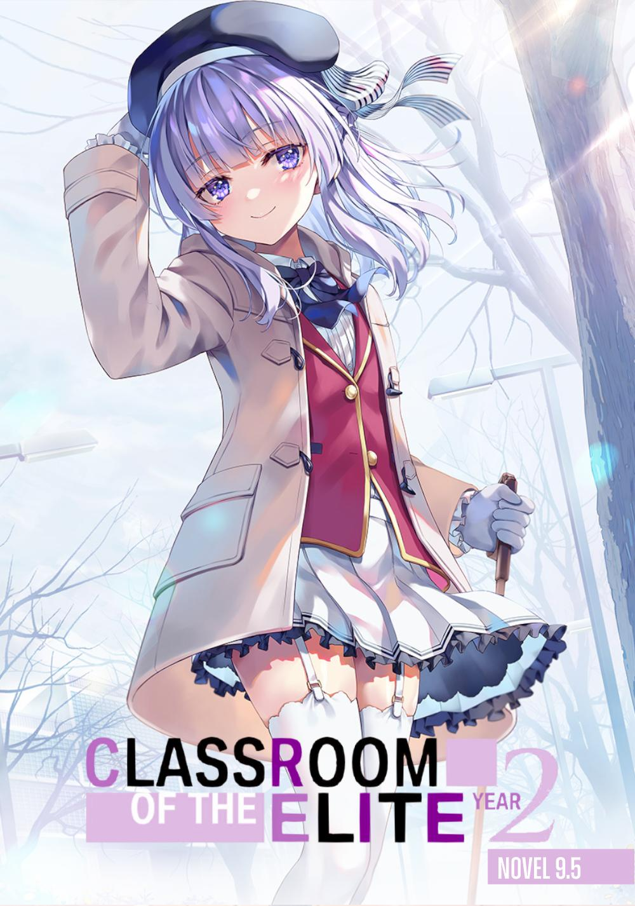
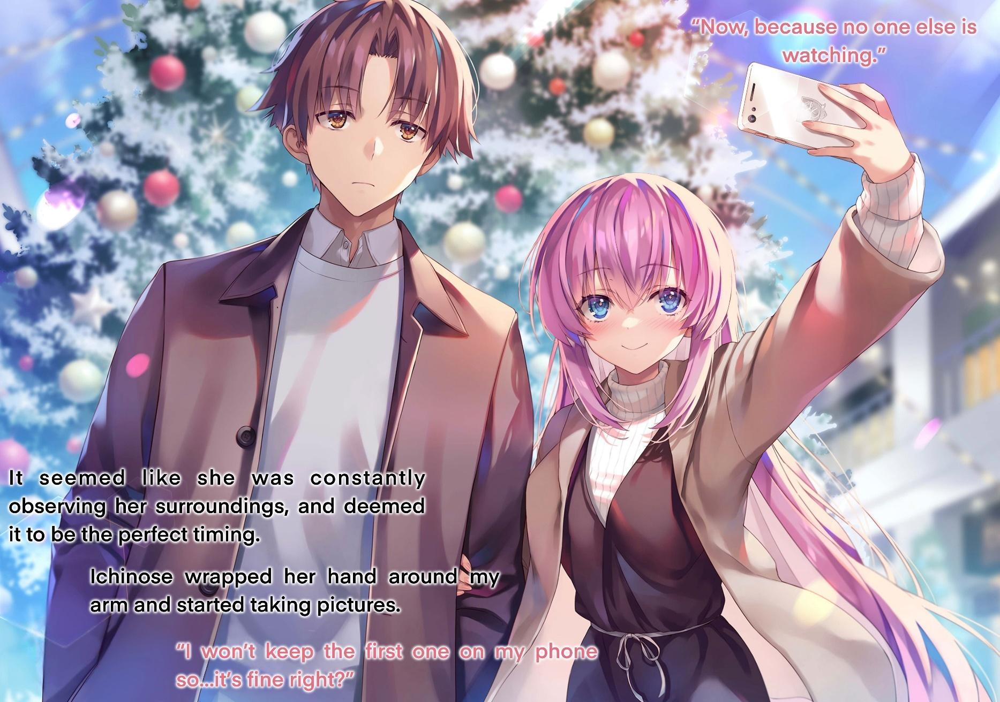
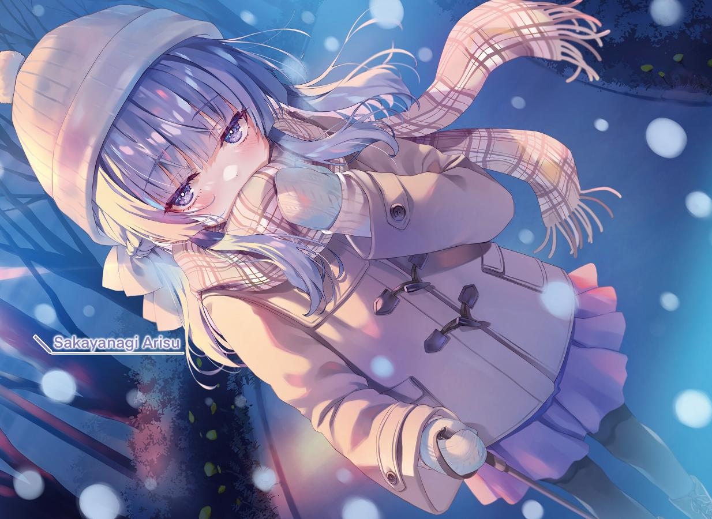
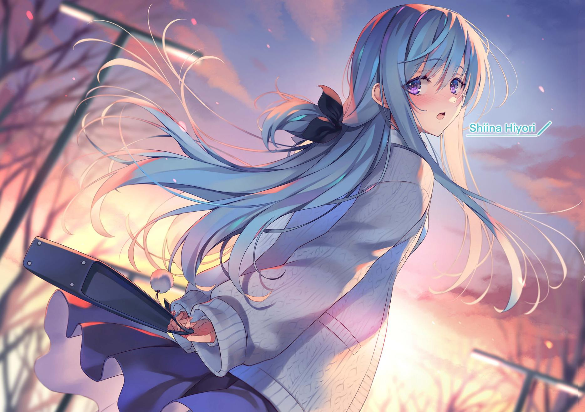
GLADHEIM
TRANSLATIONS
Youkoso Jitsuryoku Shijou Shugi no Kyoushitsu e - Segundo Año Volumen 9.5
VIDA COTIDIANA IRREMPLAZABLE
AHORA ESTANDO EN SEGUNDO AÑO, comenzaron por segunda vez las vacaciones de invierno de la Preparatoria de Educación Avanzada.
No había necesidad de hacer nada especial.
El mero hecho de poder disfrutar de las vacaciones que muchos estudiantes experimentan era lo mejor. Un momento muy satisfactorio.
Sin embargo, el tiempo que me queda disminuye silenciosa pero inexorablemente. Sin embargo, no hay prisa.
Porque, con poder vivir por mí mismo hasta hoy, ya estoy suficientemente satisfecho.
Amigos.
Pareja.
Compañeros mayores y menores.
Encuentros.
Llevaba mucho tiempo en esta escuela, como muchos otros. De aquí en adelante, será una batalla prolongada.
Pasaré cada segundo del tiempo que me queda como estudiante, mientras me lo permitan.
Y eventualmente, llegará-
La despedida.
Hoy no es un hecho.
Tampoco lo es mañana.
Cada día, debemos comprender que nuestra vida cotidiana es insustituible.
CANCIÓN DE LA SOLEDAD
24 DE DICIEMBRE. El primer día de las vacaciones de invierno.
Por la mañana, me desperté con una sensación extraña.
―... Tuve un sueño raro.
Murmurando, me levanté lentamente. Mientras dormía, empecé a sudar un poco.
Normalmente, no presto mucha atención a mis sueños.
Sean buenos o malos, al fin y al cabo, los sueños no son la realidad. Y los humanos, por naturaleza, tendemos a olvidarlos.
Aunque existieran excepciones en el mundo, yo también era de los que olvidan.
Era algo que podías recordar inmediatamente después de despertar, pero el recuerdo se esfumaba en un abrir y cerrar de ojos.
―La profesora titular era una chica conejita, o algo así...
A pesar de mi resistencia a intentar recordar, fue básicamente un esfuerzo inútil.
Para alguien ajeno, podría parecer una afirmación desconcertante.
No, no creo que el tema principal del sueño fuera la conejita.
Aunque intentara averiguar más cosas sobre el sueño, lo más probable es que mi esfuerzo fuera en vano.
Así que desistí rápidamente de intentar recordar mi sueño.
Como no había clases, me tomé mi tiempo para prepararme para la jornada mientras las horas de la mañana pasaban lentamente.
En la repisa del baño había cepillos de dientes a juego y tazas de diferentes colores.
Desde que me distancié de Kei, con quien siempre hacía cosas, había vuelto a mi vida habitual.
Pero eso no quería decir que nuestra relación hubiera terminado.
Era más bien una ruptura temporal entre novios debido a mis malentendidos provocados a propósito.
No ha habido exactamente ningún cambio en mi estado emocional debido a esos acontecimientos.
Por supuesto, no es por otra cosa más que porque fui yo quien llevó la situación a este punto muerto, pero si esto hubiera sido un giro inesperado de los acontecimientos, ¿habría sido capaz de sentirme un poco conmocionado?
―...Me pregunto eso.
Al final, los cambios emocionales se basaban en la premisa de que la otra persona era indispensable para ti. Si no fuera así, las emociones no se verían afectadas.
Incluso cuando se trataba de asuntos de importancia personal, no había por qué dudar en atormentar o cortar con un amor si era necesario. Naturalmente, esto se aplica a ambas partes.
Sin embargo, yo creía que los sentimientos son una obligación independiente que hay que tener como pareja.
Mientras se comparta tiempo juntos, es natural evitar que ese tiempo resulte incómodo.
Además, ya que nos dedicábamos un tiempo muy valioso, era mejor proporcionar alegría que sufrimiento.
Por supuesto, esta forma de pensar se basaba en la moral y la ética humanas.
Mantener a Kei involucrada en mis experimentos y causarle constantemente estrés mental y tensión no era una buena idea.
No me sumergí en esta guerra fría sin un plan: tenía uno.
Ir a comprar el regalo de Navidad que nos habíamos prometido antes de que nuestra relación empeorara.
El hecho de que esto siguiera en la agenda nos mantuvo ocupados en la conversación.
Originalmente, se suponía que iba a tener una cita matutina con Kei.
Por desgracia, estaba lloviendo, y el mal clima había continuado desde las vacaciones de invierno. Aunque era un poco decepcionante, la predicción ya auguraba lluvia todo el día de Navidad, así que nadie esperaba cielos despejados.
Yo no tenía ningún control sobre el clima, así que no había nada que hacer.
Pero ocurrió algo inesperado.
Eché un vistazo al calendario que tenía sobre la mesa de mi habitación. El calendario de diciembre, con un corazón dibujado con tinta rosa encerrando las fechas 24 y 25... pero...
Ocurrió anoche, después del final del segundo trimestre.
Intenté contactar directamente con Kei el día 24, pero la llamada no se concretó.
Esperé un rato, enviando mensajes y esperando una respuesta, pero quedaron sin leer.
Tras una hora de dudas, por fin me devolvieron la llamada.
La primera palabra que oí de Kei, que tosía débil pero intensamente, fue
"Influenza".
La influenza estacional era una gripe común que infectaba a las personas independientemente de su edad.
Los casos solían aumentar significativamente de finales de noviembre a diciembre, por lo que no era inusual en esta época del año.
Por desgracia, parecía que Kei había caído enferma y de repente estaba postrada en cama.
A pesar de sentirse débil, Kei seguramente quería cumplir la promesa del día 24, aunque fuera arrastrándose.
Sin embargo, la influenza se propagaba a través de las gotitas en el aire. Si Kei fuera al centro comercial Keyaki en estas circunstancias, sería egoísta y correría el riesgo de contagiar a los demás.
Kei se disculpó por no ser capaz de controlar su estado, que había sido evidente justo antes de ser diagnosticada.
Por supuesto, no podía culpar a Kei de haber contraído la gripe y, en su lugar, la insté a priorizar el descanso y la recuperación.
Por otro lado, me aseguré de transmitir que nuestra promesa seguía en pie y decidí reprogramar nuestro encuentro.
Si Kei me dijera que cancelara la promesa mientras tanto, existiría la posibilidad de que se viniera abajo, pero por ahora, eso parecía improbable.
Si hubiera algún cambio en los sentimientos de Kei, se debería a la interferencia de una sugerencia de un tercero, pero alguien tan dependiente como Kei no contemplaría esas ideas.
Si había alguna esperanza de reparar nuestra relación, no podía imaginarme abandonando la opción como salida.
No estaba claro cuánto tardaría en recuperarse, pero por el momento, decidimos terminar nuestra conversación en el menor tiempo posible antes de fin de año.
Ambos teníamos varias cosas que queríamos confirmar sobre nuestra relación y nuestra situación actual, pero teniendo en cuenta la alta fiebre y el maltrecho estado de Kei, no era posible mantener una conversación como es debido.
Le dije a Kei que priorizara el descanso y terminé la llamada.
Después, confirmé que una amiga había comprado todo lo que Kei necesitaba mientras estaba postrada en cama, así que no tenía ningún problema. Se hicieron arreglos para responder en caso de emergencia por la noche, lo cual fue útil, teniendo en cuenta el toque de queda.
Esto ocurrió anoche, el día 23.
Esta mañana, me enteré de que había casos confirmados de influenza entre varios estudiantes, independientemente de su grado escolar.
Para los de segundo año, fue una suerte que consiguieran salir indemnes de los exámenes especiales.
Puede que hubiera quien se esforzara en sus exámenes con mala salud sin que nadie lo supiera.
Como no había estado en contacto con Kei estos últimos días, mi estado no había cambiado.
La verdadera cuestión ahora era cómo pasar el día.
Los planes para hoy y la Navidad de mañana estaban completamente borrados.
[Buenos días, Ayanokouji-kun. Escuché que Karuizawa-san tiene gripe. ¿Estás bien?]
Ichinose envió un mensaje a mi teléfono, seguido de más mensajes.
[Parece que algunos otros también se sienten mal. ¿Estás bien, Ayanokouji-kun?]
Como era de esperar, Ichinose tenía una amplia red de información y se enteraba rápido de las cosas. También comprendía la situación con respecto a la condición de Kei.
[Desafortunadamente, creo que estará postrada en cama por algún tiempo.]
[De verdad... Estoy preocupada. Si necesitas ayuda, házmelo saber.]
[Gracias.]
Después de algunos diálogos, me preguntó qué planes tenía para ese día.
Originalmente, había reservado este día para Kei, pero... Todavía tenía que ir al centro comercial Keyaki a recoger algo, así que todavía tenía la intención de salir.
[Creo que iré al gimnasio.]
Respondí, asumiendo que ese era el plan y sin ganas de unirme a nadie más.
[¿En serio? ¿A qué hora irás?]
[No tengo nada que hacer, así que tal vez alrededor del mediodía.]
[Ya veo. Yo también pensaba ir al gimnasio a la hora de comer, pero ¿debería cancelar mis planes?]
[¿Por qué?]
[Porque puede parecer que vamos a juntarnos. ¡Por supuesto, es sólo una coincidencia!]
Ambos planeamos ir al gimnasio, así que fue una coincidencia. No tenía sentido preocuparse por eso.
Podría haber sido una consideración para mi novia, Kei, pero era excesivo.
Al contrario, podría haber sido más perverso si hubiera intentado ajustar el horario.
[No te preocupes por eso. Simplemente iré como estaba planeado. Si por casualidad nos encontramos en el gimnasio, contaré contigo entonces].
Después de enviar ese mensaje, inmediatamente apareció una confirmación de leído, y un personaje parecido a una mascota sosteniendo un signo de "OK" fue enviado de vuelta.
Bueno, entonces dejaré para más tarde los preparativos como cambiarme de ropa y peinarme para salir.
Acababan de pasar las 9 de la mañana.
Decidí pasar la mañana tranquilamente haciendo tareas como lavar la ropa y limpiar.
PARTE 1
En el interior del centro comercial Keyaki, poco antes del mediodía, el ambiente estaba impregnado del espíritu de Navidad. Una decoración aún más llamativa llenaba el centro comercial que el día anterior.
Se veía una mayor proporción de parejas entre la multitud de gente que venía a divertirse.
Tal y como había informado previamente a Ichinose, decidí pasarme por el gimnasio al que me había apuntado recientemente.
Aunque todavía era un miembro nuevo, quería ir todo lo que pudiera, ya que pagaba las cuotas mensuales.
¿Quizá no habría nadie?
Con esa idea en mente, procedí a registrarme en la recepción.
Contrariamente a mis deseos, cuando me puse el atuendo de gimnasia y entré en la sala de entrenamiento, no estaba vacía.
Se veían varios alumnos y alumnas, así como algunos adultos.
Lo que más me llamó la atención fue una persona que estaba a punto de empezar a hacer pesas.
Era Mashima-sensei, el profesor a cargo de la clase 2-A.
Tenía una constitución grande y musculosa y vestía un atuendo de gimnasia que complementaba su aspecto.
―Buenos días, Mashima-sensei.
―¿Hm? ¿Ayanokouji? ¿Tú también eres miembro del gimnasio?
Mientras estaba a punto de tumbarse de lado, contestó, pareciendo un poco sorprendido.
―Me uní hace poco.
―Ya veo, ya veo. Eso es algo muy bueno. Bienvenido ―Por alguna razón, Mashima-sensei asintió feliz, como si su hijo acabara de aprobar un examen de ingreso.
Su reacción fue un poco exagerada para tratarse de un solo alumno que se unía al gimnasio.
―¿Hay alguna razón específica por la que te hayas apuntado?
―Me di cuenta de que mi fuerza física se había debilitado en comparación con mi yo del pasado, así que quise recuperarla.
―Tu razonamiento no es muy propio de un estudiante.
―No estoy seguro de si seguiré con esto durante mucho tiempo.
―Está bien. Yo también decidí empezar a entrenar con algunas reservas, pero ahora me he convertido en un cliente habitual. No está mal sudar junto a los compañeros en el mismo entorno.
Mashima-sensei parecía más enérgico que de costumbre y se mostraba cordial.
―Además, elogio tu dedicación para ir al gimnasio el primer día de las vacaciones de invierno.
―¿Tiene algún plan para Nochebuena, Sensei?
―¿Hmm? No, pienso sudar en el gimnasio todo el día, por desgracia.
Respondió sin vacilar. Sin embargo, daba la impresión de que estaba pensando en algo...
―Probablemente.
Probablemente. Murmuró eso para sí mismo, pero ¿por qué?
―¿Pasa algo?
―No, no es nada. Como es la primera vez que vienes, es normal que te sientas un poco desorientado.
―Bueno, sí.
Sabía usar y manejar el equipo, pero me lo callé pensando que sonaría excesivo decirlo. Pensé que sería más fácil asumir que no sabía nada, como recién llegado.
De todos modos, ya era hora de que empezara a hacer algo-.
―Muy bien.
―¿Muy bien?
―Ya que estás aquí, ¿por qué no ves cómo es mi entrenamiento?
―¿Eh? Oh, claro...
Estaba a punto de empezar algo yo solo, pero Mashima-sensei me detuvo. Se tumbó en el banco y empezó a alinear la barra con su línea de visión. Sin esforzarse, levantó la barra varias veces para ajustarla. Luego, levantó las barras de seguridad de ambos lados por encima de su pecho.
―Cuando hagas pesas en el banco, no olvides nunca estas barras de seguridad. En caso de colapso, te apoyarán.
―Lo tendré en cuenta.
No podía decirle que ya lo sabía, así que lo único que pude hacer fue observarlo.
Sin embargo, no responder podría crear un ambiente incómodo, así que decidí hacer una pregunta típica.
―Sensei, ¿cuánto puede levantar?
―Bueno... Esta vez levantaré 80 kg, pero es posible llegar a los 100 kg.
Dicen que sólo una de cada cien personas puede levantar 100 kg.
No estaba presumiendo, pero parecía rebosar de confianza en sí mismo.
Mostraba a propósito su fuerza.
Nunca había oído hablar de semejante estadística, pero quién sabe si era cierta.
Sonaba a cita barata sacada de algún sitio.
―Pero si te esfuerzas demasiado, puedes lesionarte. No es como un programa de televisión en el que lo levantas una vez y se acabó. Entrenas los músculos pectorales haciendo varias series.
¿Estudió y practicó este método viendo la tele o algo así? Mientras lo veía jadear y sudar, empecé a preguntarme qué hacía yo todavía allí.
Vine hasta el gimnasio temprano por la mañana, sólo para acabar asistiendo a un curso de observación. Después de observarlo un rato y ver cómo terminaba tres series, Mashima-sensei se levantó.
―Uf. Bueno, eso es todo.
―Ha sido muy informativo.
―Me alegro de oírlo. Durante las vacaciones de invierno, pienso venir seis días a la semana, excepto los jueves. Incluso durante el tercer trimestre, vendré por la noche, así que si necesitas ayuda con algo, no dudes en ponerte en contacto conmigo.
Eso fue muy específico. ¿Había algo los jueves?
"Si necesitas ayuda, no me importa enseñarte..."
―No, está bien. Siento molestarlo Mashima-sensei; por el momento, daré prioridad a la asistencia y al entrenamiento con pesas ligeras ―Rápidamente lo interrumpí y di prioridad a terminar esta conversación.
―Ya veo. Si tienes algún problema, no dudes en preguntar. Estaré en el gimnasio todo lo posible durante las vacaciones de invierno.
Tras recibir esas generosas palabras de Mashima-sensei, decidí hacer ejercicio yo solo.
Durante los siguientes 30 minutos, seguí entrenando en el gimnasio. En algún momento, el ambiente dentro del recinto cambió momentáneamente.
Algunos estudiantes que estaban frente al equipo de repente voltearon los ojos al unísono.
Preguntándome qué estaban mirando, seguí su mirada y vi una figura familiar de mi clase, Koenji. Llamaba la atención, pero no parecía importarle y comenzó su entrenamiento.
Pensé que la gente lo observaba por su excéntrico comportamiento, pero no parecía ser el caso.
Podía oír débilmente las voces de algunos estudiantes varones de otros años que estaban cerca.
―Koenji es realmente increíble, ¿verdad?
―Sí, no es normal que un estudiante de preparatoria sea capaz de hacer eso...
Sus extraordinarias habilidades físicas, mucho más allá de las de un estudiante normal de preparatoria, eran evidentes incluso en su entrenamiento, y parecía estar llamando la atención como un estudiante atléticamente impresionante.
De hecho, uno podía percibir inmediatamente su destreza física por su refinada musculatura y flexibilidad.
Sus movimientos eran eficientes, y se percibía un porte serio a diferencia de su habitual excentricidad.
Pensándolo bien, Koenji tenía pinta de dedicarse incansablemente a entrenar su cuerpo de diversas maneras.
Teniendo esto en cuenta, no era extraño que fuera al gimnasio; más bien, se podría argumentar que era el candidato más adecuado para ello.
Incluso Mashima-sensei parecía respetar a Koenji, deteniendo su propio entrenamiento para observarlo.
Mirándolo objetivamente, podría decirse que Koenji estaba mucho más allá del ámbito de un estudiante cualquiera.
Dotado de habilidades físicas naturales y de un entrenamiento diario implacable para mantener su físico, me di cuenta una vez más de que Koenji se dedicaba a la búsqueda de la excelencia física, independientemente del tiempo y el lugar, durante toda su vida escolar.
Comparado con el entrenamiento de nivel principiante que Mashima-sensei había demostrado, el entrenamiento de Koenji era realmente cautivador.
Además, ni que decir tiene que era de los que destacan incluso cuando están en el punto de mira, en lugar de sentirse nervioso, ansioso o irritado.
―Koenji-kun siempre es muy popular.
Escuché a alguien decir esto, confirmando que la atención sobre él no era sólo por hoy.
―Buenos días, Ayanokouji-kun ―me saludó de nuevo.
―Hola ―le contesté.
―Hoy también llueve mucho, ¿verdad? Por cierto, ¿cuánto hace que llegaste?
―Hace unos 30 minutos, supongo.
―Ya veo. En realidad, yo también tenía que haber llegado sobre esa hora, pero me entretuve hablando con un amigo y llegué tarde.
contestó Ichinose, poniéndose a mi lado y mirándome de cerca.
―Es una pena que Nochebuena sea hoy.
―Bueno, no pasa nada. No hay por qué obsesionarse.
―Puede que las chicas no piensen lo mismo, ¿sabes?
―Ya veo... No puedo negarlo.
Como hombres, no podemos saber lo apegadas que están las mujeres a los días especiales.
Tras mantener una ligera charla, Ichinose me pidió que la acompañara a la cinta caminadora, y nos pusimos uno al lado del otro en dos máquinas.
Luego pasamos 30 minutos a nuestro ritmo individual sin hablarnos.
―Uf, hacer ejercicio con alguien realmente marca la diferencia en la motivación, ¿eh?
―Eso puede ser cierto. En ese sentido, empezar con Amikura fue la elección correcta.
Ichinose sonrió y se secó el sudor de la frente con una toalla. Después de eso, pasé otra hora más o menos agradable en el gimnasio con Ichinose.
Más tarde, cuando Amikura apareció en el gimnasio, le dije que me iba. Ichinose dijo que charlaría un rato con Amikura, así que nos fuimos cada uno por su lado.
―¿Ya te vas?
Mashima-sensei, que se dio cuenta de que estaba a punto de salir de la sala de ejercicios, detuvo su entrenamiento y me llamó.
Aunque dijo "ya", yo llevaba unas dos horas en el gimnasio, un tiempo considerable.
―Sí, bueno, estoy bastante cansado. ¿Se da cuenta de que han pasado dos horas, Sensei?
―¿Dos horas? Hmm, ¿es así? No me había dado cuenta de que había pasado tanto tiempo.
Estaba tan absorto en su entrenamiento que no se dio cuenta de la hora.
―Creo que debería tomarse un descanso, Mashima-sensei. Lleva casi tres horas entrenando sin descanso. El cansancio acumulado puede provocar lesiones, así que es importante descansar de vez en cuando.
Me preparé para una posible respuesta airada al ofrecer este consejo, pero en lugar de eso, Mashima-sensei pareció sorprendido y se cruzó de brazos.
―...Puede que tengas razón. He intentado esforzarme al máximo para ser mejor profesor, pero quizá me estoy exigiendo demasiado.
Quizá nadie de su entorno le había dado nunca un consejo así.
Estaba claro que estaba desesperado por conseguir resultados y un cuerpo más fuerte, pero su pasión lo había cegado ante su propio agotamiento.
―De acuerdo, lo dejo por hoy.
Aceptó amablemente mi consejo.
―Hasta luego.
Incliné ligeramente la cabeza, planeando abandonar la escena, pero Mashima-sensei vino tras de mí.
―¿Podemos hablar un momento?
―¿Eh? Claro.
Pensé que estaría relacionado con el gimnasio, pero me llevó a la sala de descanso.
―¿Hice algo malo que lo molestó, Sensei?
pregunté, incapaz de comprender el motivo de su invitación.
―No, no te preocupes. Lo has estado haciendo muy bien en el gimnasio.
Parecía haber estado observando atentamente mis actividades, pero...
Al ver mis ojos dubitativos, Mashima-sensei bajó la mirada.
―...La verdad es que estaba tan absorto en mi entrenamiento que no presté atención a lo que me rodeaba. Lo admito.
Parecía arrepentido mientras hacía su confesión.
Su sincera respuesta me hizo sentir culpable. Eran las vacaciones de invierno de los profesores y tenían libertad para divertirse en las instalaciones, sin obligación de supervisar a los alumnos.
Me sentí como si le hubiera arrancado una disculpa utilizando sus responsabilidades como adulto en su contra.
―Entonces, la razón por la que quiere hablar conmigo es...
Antes de que pudiera terminar la frase, Mashima-sensei miró a su alrededor para asegurarse de que no había nadie más.
―En realidad, tengo que pedirte un favor.
―¿De qué se trata?
Justo cuando iba a explicarlo, nos interrumpió una visitante: una hermosa mujer de pelo largo y ondulado.
Era una de las empleadas que trabajaban en este gimnasio, y al notarnos, sonrió y caminó hacia nosotros.
―Mashima-san, hoy has vuelto a trabajar demasiado, ¿verdad?
―No, la verdad es que no.
Mashima-sensei respondió con un saludo informal.
Como era de esperar, ella parecía recordar los nombres de los que frecuentaban el gimnasio más que yo.
―Y el chico de allí es...
―Su nombre es Ayanokouji. Aunque no está en mi clase, es un excelente estudiante de la clase B.
Mashima-sensei me dio un fuerte golpecito en la espalda como si quisiera incitarme a saludarla también.
Probablemente pretendía ser más suave, pero la palmada de su cuerpo bien entrenado fue bastante poderosa...
―Soy Ayanokouji.
―Nos hemos visto unas cuantas veces en la recepción. Estabas con Ichinose-chan.
Como se esperaba de los empleados. Incluso yo, que hacía poco que había empezado a venir, les había dejado una impresión.
―Oh, perdón. Sólo vine a buscar algo que necesitaba durante el descanso, así que discúlpenme.
La empleada habló con un tono suave, se inclinó suavemente y sacó varias toallas de la estantería de los empleados.
Se las llevó al pecho mientras volvía a la recepción.
Mashima-sensei parecía estar esperando a que se marchara, sin siquiera echar un vistazo en mi dirección.
Cuando la empleada se marchó, Mashima-sensei no se movió.
―¿Sensei?
―Ah, ¿qué pasa, Ayanokouji?
―Bueno, ¿no quería hablarme de algo?
―Sí, quería, pero hagámoslo en otro momento.
―¿Eh? Bueno, si ese es el caso, por favor, discúlpeme.
―Espera.
Cuando le di la espalda, de repente me agarró los dos hombros por detrás.
―... ¿Ahora qué pasa?
Por alguna razón, Mashima-sensei parecía un poco extraño hoy.
Su habitual calma y serenidad como profesor parecían estar comprometidas.
―Creo que es el destino, así que me confesaré.
―Parece que ha intentado confesarse unas cuantas veces hoy, ¿eh?
Pero, finalmente estaba yendo al grano, así que eso era un alivio.
―La empleada que estaba aquí antes - su nombre es Akiyama-san.
―Realmente no estaba prestando atención, pero tenía una etiqueta con su nombre. ¿Qué pasa con ella?
―...Quiero que la investigues. Tan cuidadosa y discretamente como sea posible.
―¿Eh?
Intenté darme la vuelta, pero me agarró firmemente por los hombros, impidiéndome moverme.
―Nunca antes había tenido problemas con el sexo opuesto en la escuela.
Sin embargo, desde que empecé a venir al gimnasio, las cosas han cambiado.
Creo que puedes entender lo que quiero decir sin entrar en demasiados detalles.
―Bueno, ya puedo adivinar lo que intenta decir. Siente algo por esa mujer llamada Akiyama-san, ¿verdad?
―...Se podría decir que sí.
Bueno, entonces no había otra forma de describirlo.
―A pesar de tener un rostro algo infantil, es una mujer madura y hermosa.
―Ah...
Ciertamente, era una mujer hermosa y madura, pero algo en esa afirmación me pareció extraño.
―¿No ocurriría lo mismo con Hoshinomiya-sensei y Chabashira-sensei?
No hay ninguna norma que prohíba las relaciones románticas entre miembros del personal, ¿verdad?
―En realidad, va contra las reglas.
―¿Ah, sí? Pero seguro que hay profesores que salen en secreto.
―No voy a negar que ocurre. Pero en cuanto a Chabashira y Hoshinomiya, aunque las citas no estuvieran prohibidas, yo no saldría con ninguna de las dos.
Afirmó esto con decisión y dureza.
―¿Puedo preguntar la razón?
―Lo siento, pero no tengo intención de seguir hablando de ello. Al fin y al cabo, somos profesor y alumno. No es una conversación que debamos tener.
―Entonces me iré a casa. La conversación que estamos teniendo ahora también parece bastante inútil.
―Hoshinomiya es demasiado desenfadada. Chabashira es demasiado seria. Eso es todo.
Mashima-sensei ofreció una respuesta concisa y clara que era fácil de entender.
Suponiendo que ambas fueran igual de atractivas, Hoshinomiya-sensei parecía ser del tipo coqueto que podría seguir ligando incluso en una relación estable.
Por otro lado, Chabashira-sensei parecía alguien que no había tenido un solo novio, porque se había aferrado a un amor de su época de estudiante.
Si se enamorara de otro hombre, probablemente sería una relación intensa y emocional.
―Pero no se puede asegurar que Akiyama-san, un miembro del personal, no sea como ellas.
Era algo que no se podía determinar a simple vista, pero a medida que se iban conociendo...
―Eso es absolutamente imposible.
Aunque no había base para ello, descartó la idea con sólo la fuerza de sus suposiciones.
―Conozco a las dos desde que éramos estudiantes, y nunca he considerado a ninguna como posible pareja sentimental. Ni una sola vez.
Además, elegir entre mis dos mejores amigas y rivales tendría un impacto significativo en mi vida escolar.
Mashima-sensei afirmó que no permitiría que eso sucediera.
―Bueno, eso es cierto.
―Por eso te lo pregunto.
―¿Por qué yo?
―¿Crees que puedo preguntar a alguno de los otros profesores?
―Bueno, tiene razón, pero...
―Eres el único que viene al gimnasio, eres discreto y pareces digno de confianza.
―No me diga, Sensei, cuando me encontró por primera vez, estaba contento porque...
―Por supuesto, porque gané un compañero de gimnasio.
No, eso era definitivamente una mentira.
Esta era evidentemente la expresión de alguien que encontró a un estudiante en el que podía confiar para esta tarea.
Ahora, podía decir con confianza que lo era.
―Entiendes lo que quiero saber, ¿verdad?
―Puedo adivinar: si tiene novio, su tipo y sus aficiones e intereses.
―Exacto. Chabashira es realmente afortunada de tener a un estudiante como tú.
¿Es éste realmente el Mashima-sensei que siempre he conocido?
Aunque entiendo que hay una diferencia entre la vida profesional y la personal, esta faceta suya me tomó por sorpresa.
Sin embargo, su voz se mantuvo tranquila y su expresión serena.
―No espero que actúes de inmediato. Akiyama-san nos ha visto juntos hoy, así que no hay prisa. Ya sea después de las vacaciones de invierno o más tarde, tómate tu tiempo para acercarte y averiguar lo que puedas.
Metódica y discretamente, exactamente como Mashima-sensei quería.
―Lo intentaré, pero por favor no espere demasiado.
―Entiendo.
―Akiyama-san está trabajando hoy, aunque-
―Excepto los jueves, trabaja seis días a la semana, ¿correcto?
―...Sí. ¿Cómo lo sabes?
No es que lo supiera, pero Mashima-sensei mencionó que acudía al gimnasio todos los días excepto los jueves.
Aunque su objetivo inicial al apuntarse al gimnasio era entrenar su cuerpo, todo indicaba que se había centrado en Akiyama... Sin embargo, no había lugar para criticar su dedicación al entrenamiento.
Finalmente liberado del dominio de Mashima-sensei, me apresuré a abandonar la escena.
PARTE 2
Tras salir del gimnasio, contemplé mis planes para el resto del día. Tenía decidido de antemano recoger algunos artículos en una tienda y luego explorar el centro comercial Keyaki antes de regresar a casa.
Siguiendo el consejo de Mashima-sensei, tenía la intención de tomarme mi tiempo y tratar con cuidado su petición. Mientras reflexionaba sobre el mejor enfoque, esperaba que mientras tanto resolvieran el asunto ellos solos.
Todavía es temprano por la tarde. Ir a casa ahora me dejaría un exceso de tiempo de inactividad en mi habitación.
Saqué mi teléfono y me puse a buscar entre mis contactos.
No sería mala idea llamar a un amigo para pasar el rato.
―...No se me ocurre nadie.
Hojeé la lista y apagué en silencio la pantalla de mi teléfono.
Sin pensarlo demasiado, me di cuenta de que casi no tenía experiencia en llamar espontáneamente a un amigo del mismo sexo para salir.
"¿Estás libre? ¿Por qué no nos juntamos un rato?".
La idea de decir eso y ser rechazado con un simple "estoy ocupado" era descorazonadora.
Yousuke podría haber entendido mis sentimientos y aceptado mi invitación, pero yo no quería que se sintiera obligado a hacerlo.
En otras palabras, invitar a alguien a pasar el rato podía ser bastante desafiante y exigente.
En última instancia, era mejor para mí quedarme solo que incomodar a los demás.
―Me pregunto qué es un amigo.
A medida que avanzaba en la segunda mitad de mi segundo año, volví a reconocer mi lucha con el aspecto social de la vida.
Bajé al primer piso por la escalera mecánica.
Aún era de día y el número de estudiantes había aumentado considerablemente.
Si iniciar una conversación era difícil, ¿podría haber un enfoque alternativo?
¿Por ejemplo, un encuentro fortuito?
Sería estupendo que me descubrieran inesperadamente y me invitaran a pasar el rato. Miré a mi alrededor, pero en momentos así, mis compañeros no estaban por ninguna parte.
Tampoco se veía a ningún alumno de mi año escolar.
Si seguía buscando a alguien, podía parecer sospechoso.
Por eso, abandoné la idea de encontrarme con alguien y preferí disfrutar de mi tiempo a solas.
Me detuve frente a uno de los mapas de las plantas del centro comercial.
Aunque conocía bien las tiendas y su ubicación, decidí comprobar si habían abierto algo nuevo.
No se apreciaban grandes cambios y no encontré nada nuevo. Sin embargo, una tienda despertó mi interés.
¿Debería probar? Me pregunté.
Era una tienda de alquiler, un lugar que no suelo visitar. Esta tienda ofrecía una gran variedad de DVD y BD de películas y anime, tanto antiguas como nuevas.
También tenían CD de música.
Pero la demanda de una tienda así no era muy alta, ya que podíamos ver contenidos de vídeo en cualquier momento y lugar a través de un servicio mensual de streaming en línea si obteníamos permiso de la escuela.
Sólo acudían a la tienda quienes querían ver títulos concretos, lo que limitaba la clientela.
Por eso decidí visitar la tienda durante las vacaciones de invierno.
Con mucho tiempo libre, era bueno tener una experiencia así de vez en cuando.
Me sentí como si estuviera poniendo excusas, pero no me sentía solo ni mucho menos.
Para asegurarme, me lo repetí mentalmente.
Después de recoger algunas cosas en la tienda, me dirigí al local de alquiler.
Era un establecimiento pequeño, algo estrecho, y sus paredes estaban forradas con una amplia selección de discos. Mientras que los discos se guardaban normalmente en cajas o estuches, esta tienda los colocaba en bolsas protectoras de OPP negras y transparentes con papeles impresos que mostraban lo que parecía ser el reverso de cada paquete. Así era fácil identificar de un vistazo el tipo de películas.
Cuando utilizo una computadora o una tableta, suelo juzgar si un título parece interesante o no basándome en su miniatura.
Sin embargo, estar en un entorno en el que podía agarrar físicamente cada artículo me llevó a considerar opciones que normalmente pasaría por alto.
Así que me encontré leyendo detenidamente los resúmenes argumentales.
Aunque hoy en día es fácil acceder a innumerables obras, también era fácil perderse algunas joyas ocultas.
Por eso pensé que no era mala idea buscarlas así de vez en cuando.
Incluso podría empezar a visitar tiendas de alquiler más a menudo. Aun así, el problema seguía siendo que, aunque encontrara algo interesante, no había necesidad de alquilarlo aquí. Podía verlo gratis y sin plazo de devolución en el dormitorio.
Me imaginaba que en el futuro sería cada vez más difícil mantener este tipo de tiendas de alquiler. Lo mismo ocurría con las tiendas de electrónica.
Había oído que la gente solía visitar las tiendas para inspeccionar los artículos en persona y luego comprarlos por Internet a precios más bajos.
Después de disfrutar un rato de la sección de vídeos, pasé al rincón de la música. No suelo escuchar música yo solo.
Puede que haya escuchado los últimos éxitos o canciones famosas en la televisión, pero nada más. Nunca me había comprado un disco, y tampoco tenía muchas ganas de hacerlo ahora.
Por eso decidí explorar la sección de música, con la esperanza de descubrir algo nuevo.
Al principio pensé que no había nadie más en la tienda de alquiler, pero resultó que había otro cliente.
Una estudiante bajita, de espaldas a mí, con auriculares.
No se percató de mi presencia debido a la música de fondo que sonaba en la tienda. Al principio, no sabía quién era, pero la reconocí al acercarme.
Era Shiranami Chihiro, de la clase de Ichinose. Aunque no habíamos interactuado mucho, en el pasado asistimos juntos a algunos eventos inusuales.
Recientemente, estuvimos cerca durante la prueba de la isla deshabitada y en el barco después.
Me preguntaba qué estaría escuchando.
Mis conocimientos de música japonesa eran limitados, así que sentía curiosidad.
Pero como Shiranami estaba absorta en la música, no me habría notado si
hablaba en voz baja. Y si entraba bruscamente en su campo visual, lo más probable es que se sobresaltara.
Podría haber esperado a que terminara la canción, pero no habría sido fácil entablar una conversación después. Así que decidí acercarme y escuchar su música a escondidas.
Para no parecer sospechoso, fingí curiosear los objetos expuestos.
―¡¿Ah...⁈
Ah, no. ¿La asusté? Quizá me acerqué demasiado por curiosidad.
La chica se quitó rápidamente los auriculares.
―¡¿Ah, Ayanokouji-kun⁈
―Lo siento. No era mi intención asustarte.
Con los auriculares quitados de sus oídos, la música era claramente audible.
Junto con un tono de guitarra algo melancólico, la voz y la letra de la cantante femenina llegaron a mis oídos: "Un corazón roto sólo puede curarse con el tiempo. Esa persona está ahora con otra...".
Parecía una canción de desamor. Mientras sonaba la letra, ella pulsó rápidamente el botón de stop y la canción se detuvo bruscamente.
―¡¿Q-q-qué quieres?!
Preguntó nerviosa la chica, todavía bastante sorprendida.
―Bueno... No necesito nada. Sólo me preguntaba qué estabas escuchando. Eso es todo ―Aunque respondí con sinceridad, estaba por ver si me creía o no.
Era de otra clase y no teníamos una relación especialmente estrecha.
No hablábamos a menos que hubiera una razón, y mucho menos por mera coincidencia. Además, dadas las diferencias entre chicos y chicas, mi comportamiento podría considerarse sospechoso.
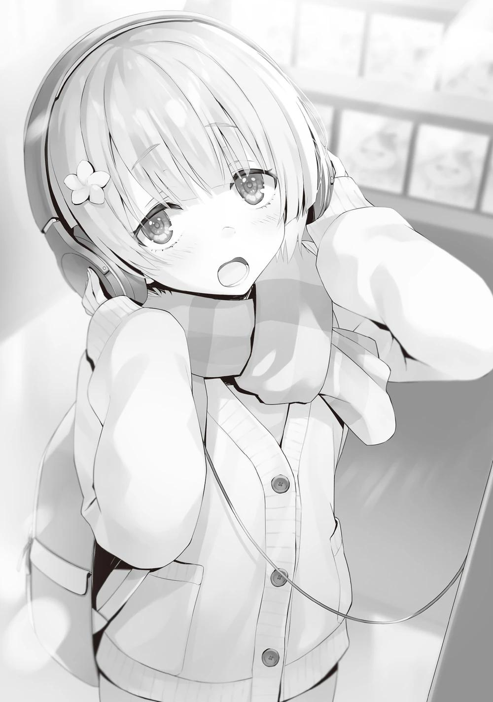
―Siento haberte molestado. Ya me voy.
Me di cuenta de que permanecer más tiempo al lado de Shiranami sólo le causaría malestar.
Retirarme lo más rápido posible parecía mi único curso de acción.
―Um... bueno...
Shiranami quería decir algo.
Al menos, no era de las que entablan conversación con alguien que no es cercano.
Si intentaba incitarla a hablar más deprisa, podría acabar tragándose sus palabras.
Así que no miré directamente a los ojos de Shiranami, sino que desvié la mirada hacia otra parte.
Intenté crear la atmósfera menos intimidatoria que pude y esperé a que hablara.
―Um... ¿tienes un poco de tiempo... ahora mismo...?
Inesperadamente, Shiranami preguntó si podíamos pasar más tiempo juntos.
―Si crees que éste no es un buen lugar para charlar, ¿quieres ir a otro sitio?
Aunque la tienda de alquiler no estaba abarrotada, no era un lugar ideal para conversaciones fuera de tema, sobre todo si no teníamos intención de comprar algo.
―Sí... vayamos a otro sitio. No creo que tarde mucho.
―Bueno, entonces...
―Ah, pero... Preferiría que no fuera un sitio que destaque demasiado. No quiero que la gente se haga una idea equivocada.
Iba a sugerir una cafetería cualquiera, pero ella no tardó en expresar su preocupación.
―¿Qué hacemos entonces? Estoy abierto a cualquier cosa con la que te sientas cómoda.
―...Te lo dejo a ti, Ayanokouji-kun.
Me dejó la decisión a mí, aunque con ciertas restricciones.
Parecía un poco injusto, pero como el que inició esta conversación, era mi responsabilidad encontrar un lugar adecuado.
Tenía que pensar en un lugar que cumpliera todos sus requisitos.
PARTE 3
Tras considerar varias opciones, empecé a moverme con Shiranami. Los terrenos de la escuela estaban prohibidos durante las vacaciones de invierno, y el clima lluvioso hacía difícil permanecer al aire libre.
Por otro lado, muchos estudiantes estaban desperdigados por las zonas interiores.
La única ventaja era que Shiranami parecía decidida a evitar llamar la atención sobre nosotros.
En casos como éste, aunque no estuviéramos cerca, normalmente caminábamos unos junto a otros con aire de grupo, o manteníamos una distancia de uno o dos pasos.
Sin embargo, había una distancia considerable entre Shiranami y yo. Desde una vista lateral, lo más probable es que se supusiera que no íbamos juntos.
Por lo tanto, aunque fuera Nochebuena, no había necesidad de preocuparse por ser confundidos como pareja o algo similar.
―...¿Qué?
―Nada.
Si me centraba demasiado en la distancia que nos separaba, Shiranami parecía más propensa a quedarse atrás.
No fue idea mía extender la invitación, pero seguía siendo problemático.
En cualquier caso, yo inicié la conversación y establecí una conexión, así que supuse que era inevitable.
Después de vagar un rato sin rumbo, llegamos a un área de descanso.
Había varias máquinas expendedoras alineadas y un par de bancos de madera sin respaldo.
Sorprendentemente, sólo unos pocos estudiantes frecuentaban este lugar, y hoy no era una excepción, ya que no había nadie a la vista.
―¿Quieres algo de beber?
―No, gracias.
―¿Nos sentamos en el banco?
―No hace falta.
Después de que me rechazaran dos veces, decidí no tentar más a la suerte.
―¿Hablamos?
Shiranami estaba de pie frente a mí, manteniendo una distancia considerable entre nosotros mientras se frotaba las manos.
Parecía que le costaba decir lo que pensaba, pero se armó de valor para preguntarme.
―¿Cuál es tu relación con Honami-chan, Ayanokouji-kun?
―¿Qué quieres decir con 'relación'?
―¿Sólo son compañeros de clase? ¿O amigos? ¿O son algo más que eso?
Cada palabra fue pronunciada sumisamente, pero su pregunta transmitía claramente lo que quería saber. Mi respuesta parecía ser de gran importancia para Shiranami.
Por supuesto, entendí por qué.
Su curiosidad provenía de la época en que yo estaba formando una relación con Ichinose.
El año anterior, cuando todavía éramos estudiantes de primer curso, Shiranami se armó de valor para confesarle sus sentimientos a Ichinose, quien estaba justo delante de ella.
Iba más allá de la mera amistad; se trataba de una atracción romántica hacia alguien de su mismo sexo.
No, esa descripción no era del todo exacta.
En los tiempos que corrían, el género no suponía diferencia alguna. Shiranami, como individuo, simplemente sentía un profundo afecto por Ichinose.
Eso era todo.
Y no le gustaba la idea de que Ichinose sintiera algo por mí. La situación era sencilla y fácil de comprender sin necesidad de más explicaciones.
―¿Cómo debería decirlo? Estoy un poco indeciso...
―No dudes y contéstame.
―No estoy dudando. Es sólo que me resulta difícil juzgar si califico para llamarla amiga.
―...¿Qué quieres decir con eso?
Shiranami parecía desconcertada, con el ceño fruncido mientras se esforzaba por entender lo que quería decir.
―Sólo tengo unos pocos amigos. Ni siquiera conozco los límites de lo que constituye un amigo. ¿No es amigo alguien con quien simplemente hablas?
¿Dónde está el límite entre un conocido y un amigo?
―Eso es... No estoy segura de dónde está el límite...
―Como tú, tampoco estoy seguro. Si me basara en mi perspectiva, diría que somos amigos.
―Eso es un poco ambiguo, ¿no...? ¿Intentas esquivar la pregunta?
No tenía intención de esquivar la pregunta; pretendía responder con bastante seriedad.
―Así que sólo son amigos, ¿no? Ninguno de los dos tiene sentimientos románticos hacia el otro, ¿verdad?
No se lo pregunté directamente a Shiranami, pero no podía imaginarme que ignorara los sentimientos de Ichinose.
Shiranami dijo que era mutuo, pero lo que probablemente quería averiguar eran mis sentimientos hacia ella.
―Estás seguro de que es así, ¿verdad? Porque estás saliendo con Karuizawa-san.
Incapaz de esperar mi respuesta, Shiranami añadió su suposición.
―Si tengo novia o no, no debería importar, ¿verdad? La pregunta es sobre mis sentimientos hacia Ichinose.
―Por supuesto que importa. Eso es porque uno sólo puede estar enamorado de una sola persona a la vez.
Shiranami respondió con una perspectiva romántica, o más bien de chica con corazón puro.
No parecía que dudara de mí, sino que lo creía de verdad.
―¿No es posible ver a varias personas como intereses románticos simultáneamente?
Era un caso que podía considerarse independientemente de hombres o mujeres.
―¡No, no lo es!
Sin embargo, Shiranami lo rechazó enérgicamente.
A juzgar por sus pequeñas manos fuertemente apretadas, parecía estar enfadada.
―Mis disculpas. Ese tema no estaba relacionado con nuestra discusión.
En este momento, no hay ninguna relación entre Ichinose y yo como la que te preocupa.
―... ¿En este momento?
Como era de esperar, Shiranami captó la advertencia que añadí por si acaso, volviéndose sensible a cada palabra que decía.
―Nadie sabe lo que nos depara el futuro.
―un así, si fuera una relación normal, no añadirías 'en este momento', creo...
Shiranami podría tener razón.
Si esta conversación no fuera sobre Ichinose, sino sobre una amiga íntima como Amikura, podría no haber añadido "en este momento".
Podría haber dicho claramente que sólo somos amigos, nada más y nada menos.
―Aunque Honami-chan sienta algo por ti, mientras tú no sientas lo mismo, creo que no habrías dicho 'en este momento'. Y sin embargo, lo hiciste... No lo habrías dicho si no estuvieras pensando en romper con Karuizawa-san y salir con Honami-chan.
Shiranami pronunció esas palabras con dificultad, como si le disgustara decirlas.
Aunque lo más probable es que me estuviera mirando la punta de la nariz mientras hablaba, evitando el contacto visual, hacía falta valor para decir eso.
―Creo que Honami-chan es libre de que le guste quien quiera... pero no puedo quedarme de brazos cruzados y ver cómo sale con alguien poco sincero...
―¿Se considera poco sincero a alguien sólo porque ha roto con otra persona antes?
―Bueno... no exactamente así...
Como compañera de clase de Ichinose, Shiranami no podía hablar de su situación. Pensaba que ya habría notado un cambio, pero no había pruebas de ello.
El reciente cambio de conducta de Ichinose. El quid de la cuestión era que no quería influir inadvertidamente en nadie hasta que pudiera evaluar cómo le afectaría a ella.
Por eso, aunque ensombreciera el corazón de Shiranami, lo único que podía hacer era añadir "en este momento" y ser ambiguo.
―No pretendía molestarte. Es sólo que, dada la situación, sabía que existía la posibilidad de que mis palabras no se tomaran a la ligera, así que no tuve más remedio que formularlas de un modo que incluyera cierta seguridad.
Aunque hubiera sido un poco duro, era mejor expresarlo con firmeza.
A pesar de que por un momento mostró una cara como si no fuera así, parecía que se había dado cuenta de que su intensidad había subido más de lo que había imaginado.
―...Lo siento. Parece que dije demasiado...
Estaba tan desesperada que perdió temporalmente la noción del alcance de su declaración. Era así de seria.
―Estás preocupada por Ichinose, ¿verdad?
Era natural preocuparse por un mejor amigo, más aún por alguien por quien sentía algo.
―Ah, um... Lo siento mucho.
A medida que se calmaba, empezó a tomarse su propio error muy en serio.
―Últimamente, he estado escuchando muchas historias sobre ti y Honami-chan...
―Los rumores son sólo rumores.
―Cierto... Como lo de que empezaron a ir juntos al gimnasio para estar solos, ignorando los estudios, y que la llamabas a tu habitación aunque tuvieras novia... Acepté esos rumores sin fundamento tan fácilmente...
Hmm... ¿Eh?
―¿Qué te pasa? Has estado tranquilo todo este tiempo, pero ahora de repente tienes una expresión extraña en la cara.
―Estaba pensando en cómo rumores tan infundados, o tal vez incluso hechos que no son gran cosa, terminaron difundiéndose con tanto detalle.
―Es una forma extraña de decirlo. Los rumores y los hechos no tienen nada que ver, ¿o sí?
―Por supuesto, hay muchos casos en los que no están relacionados.
―...¿Eh?
―¿Eh?
―Ustedes dos no fueron al gimnasio solos, ¿verdad?
―No, no fuimos. Acabo de empezar a ir al gimnasio. Pero no es imposible encontrarse con Ichinose allí, ¿verdad?
Eso fue exactamente lo que pasó hoy.
Recibí un mensaje, pero no fue como si hubiéramos prometido encontrarnos en el gimnasio.
―Bueno, puede que sea verdad. Mako-chan también va al gimnasio. Oh, pero el rumor sobre llamar a Ichinose a tu habitación definitivamente no tiene fundamento, ¿verdad?
―Eso es cierto. No invité a Ichinose a mi habitación.
Hubo tres sucesos similares con Ichinose, pero el primero ocurrió mientras nuestra clase se sometía al examen especial de votación como estudiantes de primer año. La segunda vez fue en un día lluvioso al final del curso escolar. La
tercera vez ocurrió hace muy poco, pero fue Ichinose quien esperó voluntariamente delante de mi habitación.
Fue seguramente durante la tercera instancia, cuando Ichinose estaba esperando, que alguien la vio.
―...Te creo.
Aunque vacilante, Shiranami cedió, mostrando su expresión más positiva del día.
Sin embargo, dependiendo de cómo Shiranami interpretara las cosas a partir de ahora, podría haber acabado sintiéndose traicionada.
¿Debería añadir un descargo de responsabilidad por si acaso?
Sin embargo, si dijera algo que sonara como una excusa poco convincente, volvería a ensombrecer su corazón.
―¿Puedo añadir una cosa más?
―U-uh, ¿qué es?
―Si Ichinose se enamora de alguien, o ya está enamorada, no significa que tu valor, Shiranami, disminuya. Sin embargo, si haces cosas que Ichinose no aprueba, podría tener un efecto adverso. ¿Entiendes lo que digo?
―...Sí.
No poder estar con la persona a la que uno amaba, eso era lo que lo hacía tan insoportable, y como resultado, la gente intentaba interferir en su felicidad.
Era natural que la persona a la que amaban no se sintiera complacida al ver tal comportamiento.
―Soy una chica desagradable, ¿eh?
Cuando Shiranami se calmó, pareció empezar a reflexionar sobre las cosas que dijo hoy.
―Sólo me quejo y desahogo mi frustración contigo...
Se había sentido así desde que pidió que cambiáramos de sitio para hablar.
Sin embargo, incluso sin tener en cuenta el hecho de que era ella quien me había invitado a hablar, desde el principio no tenía intención de culpar a Shiranami.
―Incluso durante el examen de la isla deshabitada en verano, me ayudaste cuando estaba perdida...
Desde su admisión, siempre había albergado sentimientos especiales por Ichinose. Ahora, mientras reprimía sus emociones, su presencia continuaba apoyando a Ichinose como una amiga importante.
No era descabellado que sintiera resentimiento hacia alguien como yo y fuera inconscientemente hostil.
―No te preocupes por eso. En todo caso, fui yo quien se interpuso y empeoró las cosas al sermonearte...
―¡Lo siento mucho!
Antes de que pudiera terminar, me interrumpió una disculpa de Shiranami.
―Um, um, no es que no me agrades... Realmente no es así...
Yo ya lo entendía todo, pero Shiranami no parecía darse cuenta, así que empezó a explicarse. Aunque intentara detenerla, no se convencería, así que tal vez debería limitarme a escuchar un rato.
Después de eso, Shiranami siguió pidiéndome perdón, dispersando la conversación en todas direcciones con un 80% de disculpas y un 20% de explicaciones.
UNA LIGERA PREMONICIÓN
Me vestí con ropa informal, que hacía tiempo que no me ponía, y empecé a verter agua caliente en una taza. Mientras lo hacía, noté que entraba luz por la ventana y decidí abrir la cortina.
―Se ha amontonado bastante...
La lluvia que había estado cayendo hasta el anochecer se había convertido en nieve y siguió cayendo durante toda la noche.
Por el momento, las nevadas eran esporádicas y por la tarde ya no se veían, pero se preveía una tormenta de nieve que comenzaría esta noche y continuaría.
La televisión informó de que los días de nieve persistirán durante un tiempo.
―No me extraña que haga más frío.
Era la estación en la que el café caliente sabe mejor, de verdad.
De pie en la cocina, sostenía una taza de café recién hecho en la mano derecha.
En la otra, sostenía mi celular, cuya pantalla mostraba artículos y precios.
Hasta hace poco, no sabía que el centro comercial Keyaki había estado publicando anuncios en Internet para los residentes en ANHS. Hoy finalizaba el periodo de ventas navideñas y, para celebrarlo, estaban organizando una gran rebaja.
Anoche descubrí esta información de forma inesperada.
El chat grupal de la clase bullía de emoción mientras todos compartían sus planes y experiencias, y fue entonces cuando me tropecé con ella.
Los primeros en desviar el tema en el chat grupal fueron Ike y Shinohara.
Aunque ambos estaban en el chat grupal, ninguno de los dos había leído ningún mensaje desde que el chat comenzó alrededor de las nueve de la noche, y la conversación entre los compañeros era increíblemente animada.
¿Era una coincidencia o estaban juntos?
Naturalmente, la mayoría supuso lo segundo.
Algunos incluso intentaron llamarlos, entre envidiosos y burlones, pero como sus teléfonos estaban apagados, ninguna de las llamadas se conectó.
Sin embargo, nadie creyó que los teléfonos apagados fueran una mera coincidencia, y el registro del chat siguió avanzando.
El chat siguió bullendo de actividad a medida que cambiaban los temas, y me sorprendió que la conversación no decayera durante horas y horas.
Entre los diversos temas, lo que más me llamó la atención fue la gran venta.
―Vaya... ¿hasta los electrodomésticos son tan asequibles?
Con cuidado de no quemarme, sorbí lentamente mi café mientras recorría la pantalla con el dedo.
Había desde artículos populares para chicos, como consolas y juegos, hasta artículos de primera necesidad, como secadores de pelo y cepillos de dientes eléctricos, así como una amplia selección de utensilios de cocina, como batidoras y cortadoras.
Últimamente cocinaba con más frecuencia, y varios artículos despertaron mi interés.
Por alguna razón, me sentí atraído por una máquina para hacer yogur, que también aparecía como oferta especial de existencias limitadas en el anuncio en línea.
Me pareció una señal de que había llegado el momento de comprarla. Aunque lo mejor era minimizar el uso de los puntos privados, podía justificar el gasto utilizando la máquina de yogur en el futuro.
Sin embargo, me pregunté cuántas veces comería yogur durante el resto de mi vida escolar y si sería más rentable simplemente comprarla... no, ése era un pensamiento inútil.
Sólo quería esta máquina para hacer yogur.
Y quería probar a usarla.
Probablemente eso era todo.
Si sólo tuviera en cuenta la relación calidad-precio, era obvio que no la compraría. Cuanto más pensaba en ello, menos posibilidades tenía de comprar la máquina.
Así que dejé de pensar en ello.
La ofrecían con un descuento especial, así que la compraría. Eso era todo.
El único factor que quedaba por considerar era el de las "existencias limitadas".
Dado que el principal público objetivo del Centro Comercial Keyaki eran los estudiantes, era poco probable que tuvieran un gran inventario.
Era muy probable que sólo tuvieran unas pocas unidades en existencia.
Además, se rumoreaba que esta gran venta era popular entre los estudiantes.
Aunque yo no le había prestado mucha atención el año anterior, al parecer, ganó popularidad y se agotó sin que yo me diera cuenta (según el chat grupal de la clase).
―¿Voy a comprobarlo...?
Sinceramente, no tenía experiencia en este tipo de ventas, así que no sabía cómo funcionaba.
¿Debería participar o sólo observar?
Mientras reflexionaba, apareció un mensaje en mi teléfono.
[Buenos días. ¿Está bien si te llamo más tarde? ¿Te molestará?]
Era de Ichinose, con quien había estado ayer en el gimnasio. ¿Estaba siendo precavida, considerando la posibilidad de que Kei estuviera cerca si se encontraba mejor?
No, no era eso. Ichinose ya sabía lo de la gripe. Ella no asumiría que se había curado en sólo un día.
Probablemente era sólo una formalidad.
Decidí llamarla directamente, dándole a entender que estaba bien.
―Buenos días. ¿Estás libre ahora?
―Sí. ¿Qué pasa?
―Um, ¿tienes algún plan para hoy, Ayanokouji-kun?
―¿Planes? No, no he programado nada especial.
―Como pensaba, Karuizawa-san aún no se ha recuperado, ¿verdad?
―Es la gripe, así que probablemente tardará un poco más.
―Ya veo... Me gustaría visitarla, pero la escuela emitió un aviso de precaución, ¿no?
―Eso parece. Aconsejaron evitar contactos innecesarios.
La escuela envió correos electrónicos a los estudiantes y al personal de la escuela aconsejándoles que no visitaran a los pacientes, ni salieran innecesariamente mientras la gripe estuviera proliferando.
―Estoy vigilando la situación, por si acaso.
―Es bueno saberlo.
Parecía aliviada, no sólo en apariencia, sino sinceramente desde el fondo de su corazón.
―Por cierto, ¿piensas ir hoy al centro comercial Keyaki?
―Bueno... Pensaba salir más tarde, pero si hay algo de lo que quieras hablar, podemos fijar una hora y vernos en el Centro Comercial Keyaki...
―No, no es necesario. Puede parecer una excusa poco convincente, pero no te estaba preguntando si tenías una cita o un compromiso. Sólo quería saber si vas a ir hoy al Centro Comercial Keyaki.
―¿Entonces debería contestar que es probable que vaya?
―Sí, es suficiente. Gracias.
Después de eso, Ichinose añadió una cosa más.
―Si alguna vez necesitas ayuda, házmelo saber. Quiero apoyarlos a ti y a Karuizawa-san.
La llamada terminó pronto, y nunca supe qué quería Ichinose. De todos modos, comprobé la hora y me decidí.
―De acuerdo...
Eran las 9:45 AM.
Era el momento perfecto para salir del dormitorio, ya que coincidía con la hora de apertura del Centro Comercial Keyaki.
Teniendo en cuenta las palabras de Ichinose, decidí dar un paso audaz y hacer una visita sorpresa.
Iré directamente al centro comercial, centrándome en la tienda de electrónica.
Luego, compraré la máquina para hacer yogur, sin mirar nada más. Sólo seré víctima de la estrategia de consumo de la tienda si acabo comprando más de lo que necesito.
Dejé la taza de café vacía sobre el fregadero y me dirigí a la puerta.
Era la hora de la "Misión Inicio".
PARTE 1
Ese mismo día, a las 9:55 de la mañana, llegué al centro comercial Keyaki.
En la entrada más cercana al dormitorio, había siete estudiantes esperando a que abriera la tienda. Había cinco chicas y dos chicos en el grupo. Entre las chicas, había un grupo de tres y otro de dos, ninguno de los cuales parecía estar concentrado en la batalla que se avecinaba mientras estaban absortos en sus conversaciones.
Por otro lado, los chicos eran de diferentes cursos. Uno de primero y otro de tercero; ninguno parecía esperar que alguien se acercara mientras jugueteaban con sus celulares. Aparentemente, actuaban de forma independiente.
Aunque era posible que se dirigieran a la tienda de electrónica, resultaba difícil creer que su objetivo fuera comprar una máquina para hacer yogur.
El chico de primer año tenía algo de sobrepeso y llevaba gafas, y sostenía el teléfono en horizontal con ambas manos. Deslizaba y golpeaba los dedos con inquietud, por lo que era muy probable que estuviera jugando con su teléfono.
En ese caso, pertenecía al grupo de personas que buscaban comprar consolas o juegos.
Sin embargo...
No pude evitar una extraña sensación de incomodidad.
¿Por qué no están aquí mis compañeros de clase?
Saqué el celular y miré el chat grupal que había estado tan animado ayer.
En el chat, muchos estudiantes, independientemente de su sexo, afirmaban que irían a la tienda de electrónica y comprarían los artículos que deseaban. Entre ellos, también estaba presente el emocionado mensaje de Hondou sobre un artículo largamente deseado que se anunciaba.
Ese artículo no tenía nada que ver conmigo, pero la competencia por él parecía ser muy dura.
Muchas voces a mi alrededor se preguntaban ansiosas si serían capaces de comprarlo aunque se apresurasen a entrar en la apertura de la venta, y algunos incluso se recordaban a sí mismos que debían tener cuidado de no quedarse dormidos.
La hora en mi celular avanzó hasta las 9:56 a.m.
A medida que se acercaba la hora de apertura, no podía encontrar la figura de Hondou, y mucho menos a nadie de mi año escolar.
Teniendo en cuenta el flujo del chat, era extraño que mis compañeros no aparecieran.
―...¿Qué está pasando?
Una extraña sensación se apoderó de mí cuando los estudiantes que deberían haber estado aquí no estaban presentes.
Ninguno de los siete presentes parecía estar inquieto o intranquilo.
Normalmente, estarían pegados a la entrada, listos para luchar a cada segundo.
¿De verdad pueden comprar lo que quieren mientras juegan tranquilamente juegos móviles?
Me invadió una sensación de inquietud y decidí armarme de valor y comprobar la situación.
Afortunadamente, mi kouhai estaba jugando una partida aquí.
―¿Me permites un momento?
―...¿Sí?
El estudiante de primer año, que parecía ligeramente molesto, levantó la cabeza y, efectivamente, estaba jugando.
La pantalla estaba en pausa. Quizás había pulsado el botón de pausa.
Inmediatamente pude percibir la vibración de que no quería que su senpai le hablara, pero tenía que confirmar algo.
―¿Para qué viniste al Centro Comercial Keyaki?
―¿Eh? ¿Qué está pasando? ¿Esto es como una broma de un programa de televisión o algo así? No lo entiendo.
―...¿Hmm?
Tenía la intención de hablar con la mayor naturalidad posible para que no desconfiara de mí, pero parecía que su actitud defensiva se había disparado tres veces.
Sin embargo, como no tenía mucho tiempo para hablar tranquilamente, saqué el tema principal a regañadientes.
―Creí que habías venido hoy a ver las rebajas de la tienda de electrónica.
Dicen que las consolas de juegos y demás también están baratas.
Intenté enfatizar al máximo la parte de los juegos para que el mensaje calara.
Entonces, pareció entender y mostró una reacción como si pensara: "Ah, ya veo".
Sin embargo-
―Bueno, aunque se diga que las consolas de videojuegos son lo último en hardware, son de las antiguas de LCD y los controles son propensos a romperse.
Tienen mala fama. Incluso en una gran venta, parece más bien una liquidación, y siguen sin ser obras muy valoradas, aunque se vendan con un descuento del 20-30% sobre el precio de catálogo. Además, prefiero comprar las versiones digitales.
-Ya veo.
Podía entender, pero no comprender del todo, el contenido de la historia de mi kouhai.
Una certeza era que no le interesaba para nada la venta.
―Hoy es la fecha de lanzamiento del manga que quiero, así que sólo voy a la librería. Ah, ¿tienes curiosidad por saber por qué compro libros de papel en lugar de libros electrónicos, aunque prefiero descargarme los juegos?
―Eh, no...
―Claro, los libros electrónicos se pueden comprar en cuanto cambia la fecha, y es atractivo poder verlos en cualquier momento en el teléfono o la tableta. Pero me gusta la sensación de tener un libro en la mano. Supongo que podría decir que quiero tener para siempre manga y novelas en papel. Sin embargo, como ya mencioné, esto se limita únicamente al manga y las novelas.
Sorprendentemente, no siento el mismo cariño por otros libros electrónicos. Por ejemplo, los libros que recopilan los productos más vendidos de un año, los libros de fotos, etcétera. Los tolero. Bueno, solía comprarlos en papel también hasta la secundaria, pero desde que entré a esta escuela, he tenido más oportunidades de usar teléfonos y tabletas, así que hice la transición. ¿Ya es hora de irse? Quiero trabajar duro en los eventos de mi juego.
PARTE 2
La tienda de electrónica estaba repleta de estudiantes y personal de la escuela.
Yo había estado observando la situación de la tienda a cierta distancia.
Los clientes que se habían reunido en la cola de 30 minutos previa a la apertura entraban en la tienda con antelación y compraban los productos destacados.
Me preguntaba cuántos productos podrían comprar los clientes habituales. Pero, extrañamente, no me preocupaba.
Lo que me preocupaba era si habría algún estudiante que quisiera una máquina para hacer yogur.
No, no debía de haberlos.
Por eso no debo preocuparme -fue lo que pensé y entré tarde en la tienda, pero mis esperanzas se hicieron añicos.
La máquina de yogur mencionada en el anuncio ya estaba agotada.
Me enfrenté a la realidad de que alguien ya la había comprado.
Al ver eso, estuve a punto de comprar la última máquina de yogur por desesperación, pero el precio era más del doble que el del artículo en oferta, así que de alguna manera me las arreglé para no comprarlo y salí de la tienda.
Incluso ahora, los estudiantes que habían conseguido comprar los artículos que buscaban salían de la tienda con expresiones de satisfacción.
―Es frustrante...
Sin mentir, expresé mis sentimientos en ese momento.
Fue mi tremendo error por no investigar el patrón de ventas durante la liquidación.
¿Es este el final para un perdedor que falló en reunir información?
En el camino de vuelta, fui al supermercado dentro del centro comercial. Como si me hubieran guiado, entré en la tienda sin agarrar una cesta y fui directamente al rincón de los productos lácteos.
Numerosos fabricantes vendían leche y yogur. Hace unos instantes, habría podido obtener el poder mágico que podía convertir esta leche en yogur.
Quería probarlo. Mi deseo era cada vez mayor.
La distancia entre el cartón de leche y el yogur, que siempre solía comprar casualmente, parecía ahora tan lejana.
Pero no era sólo una cuestión de distancia.
Era como si una barrera invisible de cristal me bloqueara.
No pude evitar preguntarme si era así como debía de sentirse un niño cuando deseaba una trompeta colocada al otro lado de una vitrina... pero probablemente eso era distinto.
Mientras yo estaba allí, otros estudiantes seguían comprando leche y yogures.
En mi dormitorio, me estaba quedando sin yogur.
Pero comprarlo aquí significaría... admitir la derrota, ¿no?
Intenté convencerme de que debía irme, pero mis pies no se movían.
Eso fue porque...
La leche estaba insólitamente de oferta hoy.
Y el yogur también estaba unos 20 yenes más barato de lo habitual.
Si no fuera por el incidente de la máquina de yogur, sin duda habría comprado un poco y me lo habría llevado a casa.
Como bajo un hechizo, fui incapaz de apartarme de la sección de lácteos.
―Los huevos también están más baratos que en los últimos días...
La inflación y los asuntos mundiales seguían haciendo subir cada vez más los precios.
Aunque esta escuela tiene sus propias reglas, algo aislada de la sociedad, su esencia no difiere del mundo exterior.
Una vez que me graduara, tendría que enfrentarme a estos precios y consultar con mi cartera todos los días.
Aunque ese destino no me tocara a mí, aún podía pensar así, ya que ahora mismo era técnicamente una persona normal.
Ni siquiera debería haberme planteado venir a echar un vistazo.
En cualquier caso, no podía quedarme aquí para siempre.
Decidí marcharme arrastrando mis pesados pies con gran esfuerzo.
―¿Qué pasó? Nunca te había visto poner una cara tan abatida, Ayanokouji.
―...Kiryuuin-senpai.
Mientras me preparaba para hacer mi retirada, Kiryuuin me llamó.
Extrañamente, la pesadez de mis piernas pareció aligerarse, y fui capaz de abandonar el lugar sin esfuerzo.
Al fin y al cabo, solo me había acercado para ver el escaparate de yogures, no con ningún otro propósito en particular.
Cuando salí de la tienda con las manos vacías, Kiryuuin me siguió.
Al hilo de la conversación, le expliqué la situación con todo detalle.
Probablemente quería que alguien me escuchara.
Quería que se entendiera mi pesar por no poder comprar la máquina para hacer yogur.
Anoche me enteré de la rebaja.
Me apresuré a ir a la tienda cuando abrieron, pero entendí mal la ubicación de la cola de espera.
Como resultado, otros la compraron antes que yo, y no pude conseguirla.
Después de escuchar todos estos eventos, Kiryuuin se rio como si fuera divertido.
―Nunca dejas de despertar mi interés, Ayanokouji. Realmente eres un tipo especial.
―¿En serio? Yo solo me considero un estudiante de preparatoria ordinario.
―Esa es una broma única. Bueno, en realidad, en parte es verdad.
Después de negarlo, ella lo reafirmó.
―Me reí porque te comportaste como un estudiante normal de preparatoria. Insistir en una máquina de yogur es inusual, pero no sería raro que la sustituyeras por otro producto deseado.
―Ya veo...
―¿Pero de verdad querías tanto una máquina para hacer yogur? Creo que sería mucho más barato, sabroso y seguro comprar yogur en una tienda.
Diciendo eso, volvió a mirar hacia el supermercado que se desvanecía en la distancia.
―Tiene sentido hacerlo uno mismo y comérselo. Yo perdí esa oportunidad.
―Eres apasionado, aunque seas inexpresivo.
―No cocinas?
Cuando pregunté, Kiryuuin asintió con seguridad sin dudar.
―Cuando era pequeña, intentaba complacer a mis padres, pero no lo he vuelto a hacer.
―¿Fueron malos los resultados?
―¿No? Fue un resultado indescriptible. Ni especialmente delicioso, ni malo. Sin embargo, mis padres parecían contentos con la intención.
Normalmente, querrías volver a ver sus caras felices y mejorar tu cocina.
Ella no siguió ese camino estándar y abandonó la cocina por completo.
―Suelo comprar algo en la tienda o en la cafetería de la escuela. Incluso si voy al supermercado, suelo comprar platos precocinados en la sección de productos preparados.
Al contrario de lo que yo pensaba, no cocinaba nada.
Sorprendentemente, la idea de que no cocinara me pareció acertada.
―¿Y tú? ¿Cómo llegaste a amar la cocina?
―Cuando empecé la preparatoria. Fue la primera vez que viví solo, y al estar en la clase D, había veces que se agotaban los puntos de la clase.
―Pensaste en ahorrar dinero en gastos de comida cocinando, ¿eh?
―Aunque haya comidas gratis, es un fastidio comerlas todo el año.
Además, cocinando repetidamente, puedes mejorar tus habilidades y tu eficiencia. Quería conseguir la mejor relación costo-rendimiento, y hace poco empecé a pensar en ello.
La máquina para hacer yogur ofrecía la posibilidad de dar un nuevo paso adelante.
No poder conseguirla me hizo sentirme arrepentido de nuevo.
―¿Y? Si realmente la querías, ¿por qué no comprarla?
―La diferencia de precio con el artículo en venta era demasiado alta.
Tiene varias funciones, pero yo sólo quería fermentar leche, así que lo consideré innecesario.
Eso sería entrar en el juego de la tienda al comprar impulsivamente un producto de precio elevado.
―¿Has probado buscar en internet?
―No, todavía no.
―Antes de deprimirte, prueba buscar en Internet. Puede que lo encuentres sorprendentemente barato. Tengo algunas páginas web recomendadas.
Sacando su celular, Kiryuuin comenzó a teclear.
Nos aseguramos de no obstruir el flujo de tráfico y nos pusimos al borde del pasillo para echar un vistazo a los productos. Entonces, encontramos una máquina para hacer yogur casi al mismo precio que los descuentos especiales de hoy.
―Es sorprendente.
―No son muchas rebajas. No es sólo esta tienda de electrónica de la escuela la que está luchando con el manejo del inventario de los mismos modelos. Es de conocimiento común para los jóvenes de hoy en día.
―Estoy aprendiendo algo nuevo.
―¿Por qué no comprarlo por Internet?
―Me he dado cuenta de que puedo comprarlo al mismo precio pero encontré otra cosa, así que decidí buscar algo más sencillo y comprarlo después de volver a mi habitación.
Tras un examen más detallado, la máquina para hacer yogur que estaba a la venta tenía funciones más que suficientes.
Además, había disponible una versión todavía más simplificada por un precio inferior.
―De todos modos, ¿necesitas comprar algo, Kiryuuin-senpai?
―Sólo te seguí porque me intrigó tu espalda encorvada. No tengo ningún asunto en particular en el supermercado.
Al parecer, ella no tenía ningún asunto que tratar allí.
―Eso es inusual, tomarse la molestia de acercarse a mí sólo porque soy interesante.
Tal vez estaba muy aburrida durante las vacaciones de invierno.
―Sé lo que estás pensando. Pero no es porque esté aburrida que meto las narices en asuntos triviales.
―Sigue siendo sospechoso.
Cuando le transmití mis sinceros pensamientos, sonrió amargamente y volvió a explicarme.
―Es porque eres tú, Ayanokouji.
―No soy alguien digno de ser evaluado.
―Sabes que no tiene sentido ser humilde a estas alturas. La escena de tu enfrentamiento con ellos en esa isla deshabitada está permanentemente grabada en mi mente.
La escena del enfrentamiento final con Tsukishiro el verano pasado en la playa.
Para ayudarme, Kiryuuin estuvo intercambiando golpes con Shiba, que parecía ser el subordinado de Tsukishiro. No era descabellado que me tuviera en alta estima debido a las inusuales circunstancias y al aspecto físico de la pelea.
―Por eso es tan decepcionante.
―¿Decepcionante?
Como una chica confesando sus sentimientos ocultos, Kiryuuin dejó escapar un profundo suspiro.
―A menudo pensaba en ello alrededor de ese verano, como, si hubiera un sistema para repetir un año en esta escuela.
―¿Repetir un año?
Era algo que los estudiantes que no pudieran graduarse en la clase A podrían haber considerado en su desesperación, pero que abandonarían rápidamente.
Después de todo, esta escuela no reconocía la repetición de grado como una opción en sus reglas.
―Es un pensamiento ridículo, ¿verdad?
―Sin duda alguna. La mayoría de los estudiantes no se resisten a las reglas establecidas.
Romper las normas era algo que cualquiera podía hacer. Luchar y anularlas, persuadir y cambiarlas, eso es lo difícil.
―Aun así, quería plantearme quedarme un año más. Si eso fuera posible, podría haber observado tu viaje de cerca durante otro año.
―Parece que hay algunos estudiantes que piensan en esas cosas. Es bastante inusual.
Pensé en Kiryuuin; no sería sólo una ensoñación en su cabeza.
―Nada es inalcanzable con puntos privados. Basándome en esa lógica, hasta intenté buscar la confirmación de los profesores, pero la respuesta fue negativa.
―Déjame preguntarte, ¿y si alguien preparara la cantidad total de 20
millones de puntos?
Si la escuela no reconocía repetir años, lo único que podría anularlo sería pagar un precio enorme.
Me alegré de haber preguntado, pero parecía que la respuesta ya se veía en la expresión de Kiryuuin.
―La mayor compra en esta escuela es el derecho a cambiarte a cualquier clase. A menos que seas un verdadero excéntrico, podrías conseguir el puesto
de tus sueños en tu tercer año siempre y cuando te cambies a la clase A justo antes de graduarte.
―Cierto. Probablemente no hay compra mayor que esa.
La confirmación de que llegar a la Clase A se valoraba más que el derecho a repetir un año escolar no cambiaría nunca.
¿Quién invertiría voluntariamente 20 millones de puntos para repetir un año con un alto riesgo?
―¿Por qué no se permite repetir año aunque alguien haya preparado una enorme cantidad de puntos? ¿No es extraño? Los derechos para evitar la expulsión, invalidarla o cambiar de clase están en el reglamento de la escuela, pero desde el principio se excluye el sistema de repetición.
Eso era sin duda cierto. El valor de los puntos privados, donde nada era inalcanzable, no era una exageración. Sin embargo, era cierto que incluso dentro de eso, todavía había cosas que no se podían comprar.
Como se mencionó anteriormente, repetir deliberadamente un año no era algo que los estudiantes pudieran juzgar como más valioso que pasar a la Clase A.
Sin embargo, ya que no estaba permitido, debía haber una razón.
―Los estudiantes que deseen repetir un año habrán estado matriculados en esta escuela durante más de un año, por lo que tendrán muchos conocimientos sobre exámenes especiales y demás. Desde el punto de vista de la información, podría considerarse injusto para otras clases.
Información, ¿eh?
Desde luego era un argumento posible, pero compartir información podía ocurrir incluso sin repetir año.
Los senpais podían dejar tanta información para los kouhais como fuera posible en la vida cotidiana, y la ventaja no sería significativa.
Los exámenes especiales generalmente son diferentes para los estudiantes un grado por delante.
Incluso en los exámenes escritos, la ventaja podría no prevalecer, y era poco probable que tuviera un impacto significativo en general.
―¿Tal vez es porque podría resultar en la disminución de la reputación de la escuela?
―¿Y bien? ¿Por qué?
―Esta escuela concede grandes privilegios a quienes se gradúan en la clase A. Las empresas también aceptan y evalúan a los alumnos graduados en esa clase, y los consideran sobresalientes. Pero, ¿no surgirían dudas sobre el valor de la escuela cuando se mezcla un alumno que ha repetido curso? Para las admisiones universitarias y las ofertas de trabajo que sólo se pueden ver desde fuera, verían el hecho de que alguien se ha graduado en la clase A, pero por alguna razón, repitió un año. Esto se puede aplicar también a uno mismo. Un bicho raro que ineficientemente no se haya graduado en la clase A y haya repetido. Aunque esa persona tiene la capacidad, se vuelve confusa para el empleador. Las evaluaciones se vuelven muy difíciles.
La escuela no querría seguir enviando a un alumno así.
―Entonces, ¿no adoptar el sistema de repetición es para eliminar patrones problemáticos?
―Si buscas una razón que tenga sentido, sería ésta.
Era un argumento plausible.
―Si me entrevistara yo mismo, podría aplazar la contratación.
Era humor autocrítico que sólo podía decirse por la confianza que ella tenía en sus capacidades.
―Si estás pensando en repetir por capricho, transfiérete a la clase de Nagumo, por favor.
―Eso no me interesa.
―¿Y si tuvieras 20 millones de puntos ahorrados con tus propias habilidades?
―Incluso entonces, no me importa. Estoy bien graduándome en cualquier clase.
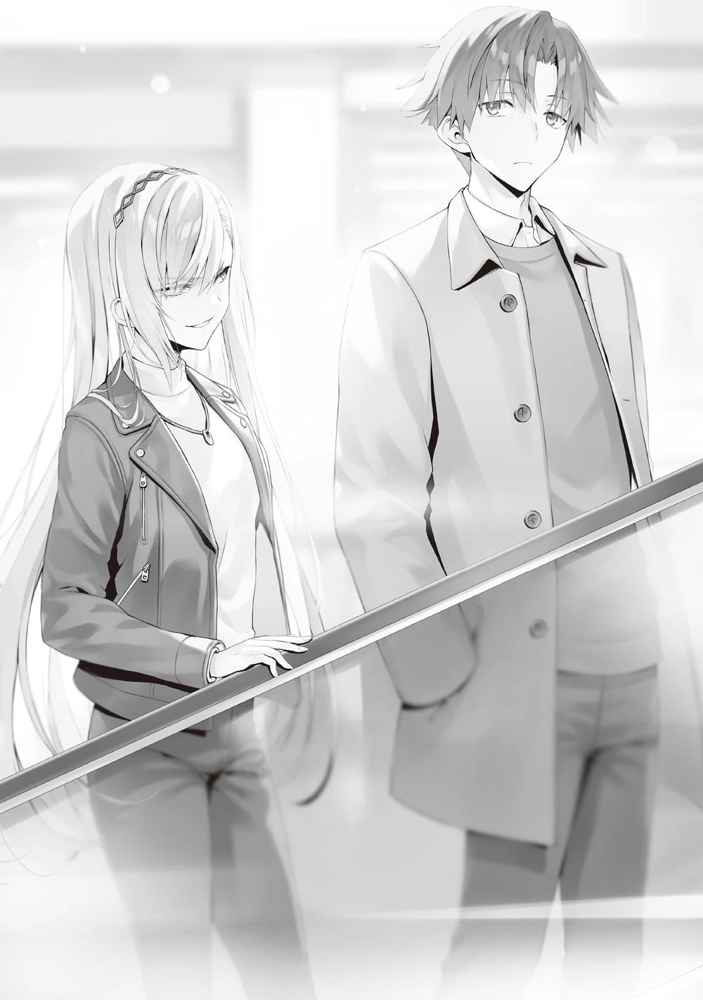
―Para ti, graduarte en la Clase A o en la Clase D no supone una gran diferencia, pero normalmente alguien pensaría en sacar lo mejor de poder graduarse en la Clase A.
Mientras nadie estuviera descontento, sería mejor transferirse a la Clase A.
―Además, después de la graduación, hay un sistema que te permite canjear puntos privados por dinero real. Eso es lo importante para mí.
Esa cantidad, sea cual sea, sería una valiosa aportación de fondos para un estudiante que acaba de graduarse en la preparatoria.
Aun así, no podría compararse con los posibles beneficios futuros de graduarse en la clase A.
―Los puntos privados pueden conceder los deseos de la mayoría de los estudiantes, pero no pueden concederlo todo. También podría tener ese tipo de significado.
―Eso es cierto. No puedes usarlos para despedir a los profesores que no te gustan, por ejemplo.
Con una sonrisa socarrona, Kiryuuin habló peligrosamente.
―Es como si lo hubieras intentado antes.
―Je, me guardaré eso como un sin comentarios.
―¿Así que realmente no tienes interés en la Clase A?
―No es tan sorprendente. Aunque sea una situación curiosa, no creo que sea la primera. Además, creía que tú pensabas lo mismo, ¿no?
En efecto, no estaba muy apegado a graduarme en la Clase A, ya que no recibiría el máximo apoyo de la escuela: sus generosos beneficios al graduarme.
―Cierto, puede que tú y yo no seamos tan diferentes. Pero aunque haya otros estudiantes como yo que no tengan interés en la Clase A, todavía hay una gran diferencia contigo, Kiryuuin-senpai.
―¿Y esa diferencia es?
―La contribución a la clase. Normalmente, la gente se mueve en beneficio de sus amigos, incluso cuando es innecesario para ellos. Una persona capaz como tú podría haber ayudado a la Clase B y haberse enfrentado al antiguo Presidente del Consejo Estudiantil Nagumo. Incluso con personalidades e ideas diferentes, tus compañeros de clase deben haber confiado en ti más de una o dos veces.
―Sí... ―Kiryuuin afirmó como si no fuera de su incumbencia.
―Pero durante tres años, hasta ahora, sólo has actuado para ti misma.
―¿Quizás he estado contribuyendo a mi manera en secreto? Puede que yo no haya sido capaz de competir con Nagumo.
―Si te ves a ti misma en tu clase-no, si miras a todo el alumnado de tercer año, lo entenderás. Sólo te mueves por tu propio bien, pero no frenas a los demás. Por eso tanto enemigos como aliados te perciben como alguien inexistente.
Prácticamente invisible tanto para los enemigos como para los aliados.
No era fácil llegar a ser así, independientemente de las habilidades de cada uno.
―Incluso aquellos que manifestaron su resentimiento por mi falta de cooperación dejaron de hablarme con el tiempo.
Sin embargo, como sus notas habían sido excelentes, su desprecio hacia ella era inevitable y se les perdonaba.
La escuela la había calificado muy bien tanto por sus aptitudes académicas como físicas, lo que significaba que había obtenido buenos resultados en los exámenes escritos, las clases de atletismo y los torneos. No escatimaba esfuerzos en las áreas visibles, como algunos de nuestros compañeros (yo incluido).
―¿Puedo hacerte una pregunta también?
―¿Tienes algo que quieras preguntar?
―Esa es una pregunta ridícula. Tengo innumerables cosas que quiero preguntar. Pero aunque haga 10 o 20 preguntas, no hay garantía de que me digas sólo la verdad.
Era consciente de sus límites y señaló esa premisa antes de formular la pregunta.
―¿Es seguro suponer que has resuelto los diferentes problemas que tenías?
Era una pregunta vaga, pero no necesitaba pensar demasiado para entender de qué hablaba.
―Gracias a ti, ahora vivo una vida tranquila.
Como estaba haciendo ahora, caminé por este lugar como siempre lo había hecho.
―No importa cuántas veces mire atrás, no puedo olvidar tus fluidos movimientos de aquel día en la playa. Superó mis expectativas, mi imaginación y todo el potencial humano concebible. Aunque se lo contara a mi ojii-sama, no se lo creería.
―¿Tu ojii-sama?
―Perdona, ¿ha sido difícil de entender? Estoy hablando de mi abuelo.
Dijo Kiryuuin, entrecerrando los ojos como si recordara a su abuelo.
Desde mi punto de vista, era raro que alguien llamara a su abuelo "ojii-sama".
―Es una forma inusual de llamarlo.
―Bueno, vengo de un entorno bastante privilegiado. En casa siempre se dirigen a mí como ojou-sama.
―Ah, ¿así que te referías a eso? Bueno, no, supongo que entonces no puedo estar completamente en desacuerdo.
Siempre percibí algo refinado en su educación.
Por otro lado, también había algo salvaje en ella, así que nunca tuve pruebas concretas.
―De joven pasé más tiempo viviendo con mi abuelo que con mis ocupados padres. En pocas palabras, era una niña totalmente de mi abuelo.
Sonrió nostálgicamente, con los ojos entrecerrados. No era una cara que pudiera hacer si hubiera muchos recuerdos desagradables.
―Cuando me enteré de que iba a estudiar en esta escuela, me deprimió mucho no poder verlo durante tres años.
―Así que tu abuelo realmente te adoraba, ¿eh?
―Solía decir que se alegraría de tenerme de vuelta si alguna vez dejaba los estudios, como si fuera su eslogan.
Eso era algo bastante cruel para decírselo a una nieta que estaba a punto de desplegar sus alas.
Parecía que no era un abuelo común, sólo por esa declaración.
―¿Pero no se escandalizaría si realmente lo dejaras?
―No, seguro que se alegraría de verdad. Además, si hubiera decidido elegir mi propio camino, con una sola palabra de mi abuelo, podría haber ido a la mayoría de las universidades o empresas.
En otras palabras, incluso sin graduarse en la clase A, podría recibir el mismo apoyo -o incluso mayor- de su abuelo. Por lo visto, disponía tanto de poder como de afecto.
Había un chico en nuestra clase con una situación similar, aunque su forma de pensar era diferente.
―Por casualidad, ¿conoces a Koenji?
―¿Koenji? ¿Por qué sale su nombre de repente?
―¿La razón? Pues verás, es...
Me fijé en Koenji caminando hacia nosotros e intenté preguntarle por su relación debido a la conversación que estábamos manteniendo.
―No creo tener ninguna relación con alguien tan excéntrico como él.
Llamaba la atención de los estudiantes de los alrededores, que lo miraban como si fuera una criatura extraña.
Llevaba él solo una caja grande con el logotipo de una marca famosa. A juzgar por la singular forma de la caja de cartón, supuse que se trataba de un televisor grande de pantalla plana.
―¿No lo sabías? Al parecer, Koenji es hijo de un empresario muy famoso.
No sólo eso, sino que su nombre ya se ha mencionado como próximo presidente.
―¿En serio? Quizá esa sea la raíz de su excentricidad. Pero, por desgracia, no sé mucho de eso. Aunque si es tan famoso, no sería de extrañar que mi abuelo tuviera alguna conexión... Bueno, sea como sea, no tiene nada que ver conmigo.
Daba la impresión de que Kiryuuin no tenía muchos conocimientos sobre el mundo político o financiero. En ese sentido, agradecí que no le pareciera sospechoso mi apellido un tanto inusual, 'Ayanokouji'.
Aunque reconociera el nombre, sería difícil relacionarlo directamente conmigo.
No era fácil pensar que un apellido poco común significara el mismo linaje.
―Será que la razón de fondo por la que no te interesa la clase A es por eso?
―De ninguna manera. Elegí lanzarme a esta escuela porque estaba harta de haber nacido en una familia tan rica. No tengo intención de depender de ellos después de graduarme. Los de tercer año ya terminamos las batallas de clase, así que al igual que todos los de clase B e inferiores, nos centramos en estudiar y buscar trabajo.
En otras palabras, Kiryuuin tenía una dirección clara para su futuro.
Y aparentemente no tenía intención de recibir ningún favor de su familia.
―¿Puedo continuar y preguntar qué camino planeas tomar, Kiryuuin-senpai?
―Por ahora voy a matricularme en la universidad. Si puedo entrar como estudiante becada, puedo mantener los costos bajos. Trabajaré a tiempo parcial para compensar el dinero que me falta en la vida diaria. En realidad, no es nada digno de mención.
―Dejando a un lado lo de la beca, pareces una estudiante bastante normal.
―Quiero despreocuparme, estudiar mucho y convertirme en adulta yo sola.
Después, quizá trabaje en una empresa pequeña o mediana. Ni siquiera tiene que ser tan grande. Sólo quiero vivir una vida que no tenga nada que ver con el nombre Kiryuuin o su estatus.
Vivir una vida que no destacara, sin ataduras y simplemente libre.
Esa era la fuerte voluntad que percibí en las palabras de Kiryuuin.
―No está mal, ¿eh?
―¿Verdad? No necesito nada especial. Al menos eso es lo que pienso por ahora.
En cierto modo, era similar a mis pensamientos cuando entré por primera vez en esta escuela. Si mi rango en la clase subía o bajaba no importaba. Seguiría viviendo por mi libertad.
Hay alguien que se aferró a esa idea durante tres años justo a mi lado.
―Pero una vida tranquila y sencilla no es fácil de conseguir, aunque ahora parezca fácil. Después de la graduación, el nombre Kiryuuin me seguirá me guste o no.
No sabía nada de la familia Kiryuuin, pero si era una relativamente famosa, entonces era natural que tuvieran ciertas cosas establecidas.
Aunque alguien como yo pudiera escaparse a esta escuela por rebeldía, el final llegaría cuando pasaran tres años.
―¿Tu abuelo no apoyará tus decisiones?
―Mi abuelo no es realmente el problema. En todo caso, serían mis padres.
A diferencia de mi abuelo, ellos no tienen sentido del humor. Si se enteran de que llevo una vida normal, me imagino fácilmente su reacción.
Al escuchar esto, sentí que la situación era inquietantemente similar a la mía.
―No me arrepiento de mis actos de los últimos tres años... He vivido como he querido.
Hubo una ligera vacilación en su voz mientras declaraba su convicción.
―Sin embargo, quería intentar ver si elegía algo más que perseguir la libertad. Quizá por eso busqué la forma de repetir curso.
Si Kiryuuin-senpai hubiera vivido su vida al máximo durante tres años, no cabía duda de que habría sido una amenaza para la clase A de Nagumo.
Vivir de acuerdo al linaje de cada uno también puede ser algo difícil.
―La batalla con Nagumo todavía no ha terminado, ¿verdad? ¿Qué vas a hacer al respecto?
―Me gustaría resolver el asunto lo antes posible, pero ahora mismo no tengo una respuesta.
Todo dependía de lo que decidiera la escuela. Que hubiera sitio para Nagumo y mi batalla dependía de la suerte.
Y además-
Había situaciones que no se concretarían sin importar si las queríamos o no.
―No puedo imaginarte siendo descuidado o arrogante, pero ten cuidado durante el tercer trimestre.
―¿Es un consejo de mi senpai?
―No es necesariamente un consejo. Justo el otro día, oí a Nagumo hablando por teléfono con alguien. Parece que no para de reunir rumores sobre los estudiantes de segundo año.
¿Nagumo se está esforzando más que nadie para hacer realidad nuestra batalla?
―El examen especial que harás a continuación podría ser más problemático de lo que piensas.
―La escuela no filtrará información indirectamente, pero parece fácil adivinar la dificultad de los exámenes especiales basándose en estadísticas pasadas. Entonces, ¿cómo fue el examen especial del primer trimestre del segundo año?
Si había una alta probabilidad de que continuara la misma tendencia, Nagumo debía de estar haciendo deducciones a partir del examen especial del año pasado.
―Bueno, en nuestro año, Nagumo tomó el control de todo y tenía toda la autoridad. Yo sólo era una estudiante de clase B viviendo mi vida diaria. No recuerdo todo en detalle.
―Ya veo.
De hecho, era raro que Kiryuuin participara en exámenes especiales.
Sin embargo, el hecho de que ella ni siquiera recordara algunos aspectos me hizo sospechar un poco.
―Pero durante ese examen especial, una persona sí dejó la clase B.
―¿Dejaron la escuela? ¿Como expulsados?
―Así es como lo recuerdo. Probablemente fue un sacrificio necesario, aunque debe estar relacionado con los ajustes de Nagumo.
Las victorias y recompensas ideales que Nagumo tenía en mente.
Si la expulsión era una parte inevitable del examen especial, entonces habría algunas bajas.
Si la historia de Kiryuuin era cierta, quizás también habría un duro comienzo en el tercer trimestre.
―Normalmente, parece que sería la Clase D o la Clase C la que sería eliminada, ¿verdad?
―En cualquier caso, no recuerdo nada de las otras clases.
Probablemente estaba menos interesada en otras clases que en las noticias de televisión que se cubrieron esta mañana.
Sin embargo, para alguien que decía no acordarse de nada, algunos recuerdos esenciales parecían perdurar.
―Aunque no digo que vaya a ser igual que el año pasado. No hay por qué preocuparse demasiado.
―Tu supuesta ignorancia no es realmente persuasiva.
En esta situación, no presioné mucho y lo dejé pasar.
―Siento haberte retrasado. No suelo hablar contigo de cosas tan triviales.
Era una buena oportunidad.
―No hay problema. Yo también me alegro de haber podido hablar contigo, Kiryuuin-senpai.
Kiryuuin comenzó a alejarse, pero rápidamente se detuvo y dio media vuelta.
―Esto es sólo mi intuición, pero tengo la sensación de que nos encontraremos de nuevo en algún lugar. No en esta escuela, pero pronto en el futuro.
―¿Tus intuiciones suelen resultar ciertas?
―Normalmente, tienen una precisión del 50%.
Eso suena como una simple suposición...
―Pero esta vez, tengo más confianza. Si me obligaran a dar una razón, es porque no eres un simple estudiante de preparatoria. Si no desapareces en la sociedad, podrías llamar mi atención de nuevo.
―¿No sería mejor que eso no ocurriera? Se supone que quieres una vida normal.
―¿Hmm? Jajaja, eso puede ser cierto.
Kiryuuin suavemente levantó su mano y comenzó a caminar fuera del Centro Comercial Keyaki.
Encontrarse de nuevo en algún lugar, ¿eh?
Ese futuro muy probablemente nunca llegaría.
Pero si ese futuro existiera-
No, descartaré ese pensamiento.
No tenían sentido esas fantasías tan descabelladas.
Ahora, era libre de vivir mi vida en este momento.
Sólo eso era suficiente.
PARTE 3
Después de separarme de Kiryuuin, recordé la interacción entre Ichinose y yo esta mañana.
Me estuve preguntando si vendría al Centro Comercial Keyaki, pero no sabía su propósito para venir.
En circunstancias normales, debería haberle informado por teléfono que estaba dentro del centro comercial, pero parecía que ella rechazaba eso o lo evitaba de alguna manera.
A juzgar por ese escenario único, se podía suponer que simplemente yendo al centro comercial Keyaki, no sería necesario molestarme en buscar a Ichinose.
Por el momento, opté por volver a casa sin intentar encontrarla.
Si no podía encontrármela antes de salir, siempre podía dar media vuelta.
Con ese pensamiento, volví a la entrada del centro comercial.
El gran árbol de Navidad que acababan de colocar ayer atraía a muchos amigos y parejas. Estaban tomando fotos y admirándolo, pero lo quitarían al día siguiente.
Kei, que había estado postrada en cama, debía de lamentarlo profundamente, pero no había nada que hacer. La gripe empezaba a propagarse y casi 20
personas de la escuela ya habían dado positivo.
Al pasar junto al árbol, vi a muchos alumnos reunidos alrededor.
No, en este momento, podía haber más alumnos que ayer.
Entre la multitud, vi a Ichinose, que parecía estar disfrutando de una animada conversación, rodeada de tres alumnas de primer año.
No tuve el valor de llamarla desde aquí, así que decidí observarla desde la distancia durante un rato.
Por casualidad, Hoshinomiya-sensei y Chabashira-sensei, que caminaban una al lado de la otra, se fijaron en mí al pasar.
Durante las largas vacaciones, era habitual ver a los profesores con ropa informal. Aún así, era imposible no sentir una sensación de incongruencia por Chabashira-sensei, a quien le encantaba vestir de traje.
―¿Oh? ¿Estás solo?
La primera en acercarse a mí fue Hoshinomiya-sensei, seguida de Chabashira-sensei.
―Eh, sí.
―Pensé que hoy y ayer estarías muy cariñoso con tu novia. ¿Te dejaron?
―No te burles de los estudiantes, Chie. Además, Karuizawa tiene gripe.
Chabashira-sensei explicó que había una razón.
―Ya lo sé.
―¿Lo sabías y aún así te burlaste?
―Porque es molesto, ¿no? Es inaceptable que estudiantes un año más jóvenes pasen la Navidad con su pareja, ¡o algo así!
―Solías hacer eso todos los años hasta ahora. Este año es diferente.
―Por eso no lo soporto. Quizás pueda entender los sentimientos de Sae-chan por primera vez.
―No me metas en el mismo saco que tú. Soy una persona a la que no le importa estar sola en Navidad. Es una pena, Ayanokouji. No te has encontrado con Karuizawa, ¿verdad?
―No se puede evitar. Además, a mí tampoco me importa estar solo en Navidad.
Mientras respondía, Chabashira-sensei esbozó una leve sonrisa y Hoshinomiya-sensei parecía aún más infeliz.
Mirando a la pareja en contraste, pensé en Mashima-sensei.
Si se ponía del lado de alguna de ellas, sin duda sería muy problemático.
―¿Adónde van ahora las profesoras?
―¡Al karaoke! Los profesores también tenemos derecho a divertirnos,
¿sabes? ¿Verdad?
―Chie es la única que quiere cantar. A mí sólo me lleva a rastras.
―¿Ah, sí? ¿No está Sae-chan emocionada también?
―No estoy emocionada...
También debe ser duro para los profesores, con la constante atmósfera tensa de la competición de clases.
Las dos, buenas o malas amigas, intercambiaron indirectas mientras se dirigían al karaoke.
Mientras hablábamos, me di cuenta de que Ichinose miraba hacia nosotros.
Por lo visto, la conversación de las chicas había terminado y ella me estaba esperando.
―Qué casualidad, Ayanokouji-kun.
―Sí, toda una coincidencia. Parecía que te la estabas pasando muy bien con tus kouhais de primer año.
―Son de la clase 1-B. Yagami-kun, antiguo miembro del consejo estudiantil, se retiró de repente, ¿no? Todavía parecen afectadas por ello, y están algo confusas. Pero intentaban ser positivos al respecto.
Dada la naturaleza del motivo por el que fue expulsado de la escuela, supuse que la clase en sí no fue penalizada, pero que inevitablemente sufrieron daños por la falta de alumnos. Esta difícil situación se prolongaría durante algún tiempo.
―¿Cuánto tiempo llevas aquí?
―Desde alrededor de las 10:30, creo.
Teniendo en cuenta que eran casi las 12, llevaba esperando más de una hora.
No, describirlo como espera podría ser incorrecto.
En última instancia, Ichinose estaba actuando basándose en sus propios principios hoy.
―Oye, Ayanokouji-kun, ¿podrías tomarte una foto conmigo?
Con eso, Ichinose tímidamente sacó su teléfono.
―Para hacer algunos recuerdos, tomé fotos con varias personas aquí hoy.
Para demostrar que era cierto, Ichinose abrió su álbum de fotos y mostró la sección con la fecha de hoy. Como era de esperar, se había tomado varias fotos con varios alumnos delante del árbol de Navidad.
Algunas de las fotografías incluían a chicos de su clase.
Además, también había fotos con las alumnas de primero de antes.
Ichinose había mencionado que estaba esperando aquí para hacer recuerdos, pero su verdadero objetivo se hizo evidente poco después.
―Sin embargo... Quiero tomar una foto contigo, Ayanokouji-kun. Ese es mi principal deseo.
Ichinose no explicó más, pero no era difícil de entender.
Si había una foto de solo nosotros dos en su teléfono, Kei y sus amigos cercanos podrían no responder bien si se enteraban.
Sin embargo, si tenía fotos con muchas otras personas, tanto hombres como mujeres, no habría ningún problema si alguien la interrogaba.
De hecho, no había muchas, pero pude ver dos fotos con chicos de otras clases.
Esos chicos parecían complacidos o mostraban torpemente un signo de paz cuando Ichinose los llamaba.
Independientemente de su año, no había uniformidad en el tipo de chicos.
Parecía que estaba respondiendo a las peticiones de fotos de todos los estudiantes que la habían llamado sin discriminar.
―Entonces... ¿Te importaría sacarte una foto conmigo?
―Por supuesto. No tengo motivos para negarme.
―Me alegro.
Se había esforzado muchísimo sólo para tomarse una foto conmigo.
―En realidad no pensaba sacarme fotos con tantos, pero mucha gente empezó a llamarme después de enterarse. Fue un poco difícil.
Parecía que el rumor de que Ichinose quería sacarse fotos con la gente había empezado a extenderse.
―¿Con cuánta gente te has tomado fotos hasta ahora?
―Um, veamos... Creo que la gente de antes fueron 43.
Eso es bastante... Era evidente que ella estaba tomando estas fotos a un ritmo alto.
―Planeo continuar por un tiempo. No tendría mucho sentido si me detuviera ahora, ¿verdad?
Según Ichinose, esto era para no dejar rastro incluso después de haber alcanzado la meta.
―Bueno, no es que no parezca sospechoso de otra manera.
Ichinose sonrió al recordar sus acciones, que objetivamente podían considerarse extrañas.
Si yo hubiera hecho lo mismo, sin duda me habrían tratado como una persona completamente sospechosa.
Sin embargo, las mismas acciones parecen totalmente diferentes con Ichinose.
Ichinose tiró de mi brazo y me guió para ajustar el ángulo.
Luego, se inclinó y sujetó su celular con la cámara frontal encendida.
―Ahora es el momento, nadie más está mirando.
Parecía observar constantemente el entorno y decidió que era el momento perfecto.
Ichinose me rodeó el brazo con la mano y tomó una foto.
Luego hizo otra con un poco de distancia entre nosotros, sin su mano en mi brazo.
―La primera no se guardará en mi teléfono, así que... No pasa nada,
¿verdad?
―¿Esto es pedir una aprobación posterior al hecho?
―...Sí. Si no quieres, la borro ahora.
―No, puedes quedártela. No pretendo culpar a nadie si alguien la ve. Es mi responsabilidad por permitir que se tome la foto, no importa cómo se use.
―¿Estás seguro? Si la uso mal, podría causar una ruptura en tu relación con Karuizawa-san...
―Es extraño quejarse después de tomar una foto a conveniencia, ¿verdad?
Si fueras a ser fotografiado, no lo permitirías sin estar preparado.
Por supuesto, era diferente si te obligaban.
Acortamos la distancia que nos separaba en unos 10 segundos y, antes de que nos diéramos cuenta, habíamos vuelto a nuestra distancia habitual.
Durante ese tiempo, nadie nos vio intimando.
―Por cierto, Ayanokouji-kun, ayer te reuniste con Chihiro-chan, ¿verdad?
Chihiro Shiranami. Recordé la imagen de ella llevando auriculares y escuchando música.
―Sabes mucho.
―Es habitual que nos reunamos tanto entre semana como en días festivos, así que me pareció que el comportamiento de Chihiro-chan fue un poco diferente ayer. No hablamos de nada en concreto, pero reaccionó al oír tu nombre, así que pensé que quizá te habías reunido y hablaste con ella.
Ichinose, que siempre se preocupa por el estado mental de sus compañeros, puede notar fácilmente los cambios.
―Por cierto, ¿qué quieres decir con que se siente un poco diferente?
Espero que no fuera en el mal sentido.
―No pasa nada. No sé de qué hablaron, pero ayer me pareció que Chihiro-chan se reía más de lo normal.
La arriesgada apuesta funcionó, e instarla a estar preparada parecía haber tenido un efecto positivo.
―Me alegra oír eso.
―Pero...
Aunque estaba encantada con el crecimiento de Shiranami, Ichinose no había terminado.
―Ahora mismo, ella se preocupa por mí más que por nadie, pero no puedes involucrarte demasiado, ¿de acuerdo? Es fácil de influenciar.
Una advertencia para no cerrar la distancia con Shiranami más de lo que era.
―Cuando quieras salir con Chihiro-chan, me gustaría que también me llamaras.
―Entiendo. Me aseguraré de hacerlo.
Ya fuera por su responsabilidad como protectora de su clase o por su propio bienestar, tendría que ser cauteloso al reunirme con Shiranami en el futuro.
―¡Ichinose-senpai! ¡Ayanokouji-senpai! ¡Hola!
―Ah, es Nanase-san.
Al encontrarnos a mí y a Ichinose, Nanase se acercó a nosotros con un ligero trote.
―Escuché que ustedes dos estaban por aquí tomándose fotos con la gente, así que vine también.
Al parecer, el rumor se había extendido lo suficiente como para llegar hasta Nanase.
―¿No se te escapará de las manos a este paso? Podrías estar tomándote fotos hasta medianoche.
―Bueno, así son las cosas. Tal vez me convierta en una chica legendaria que se tomó una foto con cada estudiante frente al árbol de Navidad.
Ichinose sonrió mientras respondía a la broma con otra broma.
―¿Tú también te apuntas, Ayanokouji-senpai?
―No, sólo escuché el rumor y vine a sacarme una foto con Ichinose. No me interpondré en tu camino.
Sintiendo que sería impropio unirme, decidí dar un paso atrás.
―No me importa si te unes a nosotros.
―No, paso. Estar atado a este lugar como Ichinose es duro, y de todas formas no hay mucha gente que quiera sacarse una foto conmigo.
Nanase, intuyendo la situación, no forzó la situación y se puso hombro con hombro con Ichinose. Las dos empezaron a ajustar sus posiciones para la foto cuando Nanase pareció darse cuenta de algo y se detuvo.
―Perdona, ¿puedes esperar un momento?
―¿Eh? Claro, pero ¿qué pasa?
Disculpándose con Ichinose, Nanase se apresuró en cierta dirección. Un estudiante de su clase, Housen, estaba allí. Caminaba solo con expresión aterradora, ni siquiera miraba en nuestra dirección.
Nanase se acercó a él como un cachorro, lo llamó y señaló en nuestra dirección mientras le hablaba.
―¿Podría estar invitando a Housen-kun?
―Eso parece.
Aunque no era extraño que invitara a un compañero de clase, el compañero en particular en cuestión era Housen. No parecía del tipo que se toma fotos con los demás.
Sin embargo, después de una breve conversación con Nanase, Housen cambió de dirección y comenzó a caminar hacia nosotros mientras mantenía su expresión aterradora.
―Parece que ya viene.
―Eso parece.
La mirada de Housen capturó no sólo a Ichinose sino también a mi, que estaba a su lado.
Había estado disfrutando de unas relajadas vacaciones de invierno, así que preferiría evitar cualquier problema potencial.
―Um, ¿estaría bien que también Housen-kun se uniera a la foto?
―No me importa para nada, pero ¿estás segura de ello?
Las palabras de Ichinose sugerían sus dudas sobre los deseos de Housen.
Housen permaneció en silencio, mirándonos a mí y a Ichinose con cara aterradora.
―Está completamente bien. Ahora, por favor, Housen-kun.
Diciendo eso, Nanase empujó la espalda de Housen, algo forzosamente.
Pensé que definitivamente se resistiría, pero sorprendentemente, Housen cerró la distancia con pasos ligeros.
―Me has estado mirando fijamente. ¿Hay algo en mi cara?
En cuanto dijo eso, me fulminó con la mirada y empezó a meterse conmigo.
―Bueno, umm, es que...
No era un comportamiento esperado. No pude evitar sospechar que había un motivo oculto detrás.
―¿Eh? Si tienes algo que decir, dilo.
―Nada en realidad.
―Hmph.
Cuando retrocedí, Housen resopló y apartó la mirada.
Tenía una presencia impresionante para un estudiante de primer año. Si no tengo cuidado, ¿me apuñalarían con un cuchillo otra vez?
Aunque Housen y Nanase habían terminado de tomarse fotos con Ichinose, Housen todavía se veía como si tuviera algo que decir.
Cuando empezó a alejarse con las manos en los bolsillos, no pude evitar preguntarle:
―¿A qué vino eso?
Mientras Nanase se acercaba a mí, susurró en voz baja:
―En realidad, a Housen-kun realmente le gusta Ichinose-senpai.
―...¿En serio?
Yo no lo entendía. Bueno, sí me parecía extraño que posara para una foto con Ichinose, pero aun así, era una revelación sorprendente.
―Vino a ver las cosas porque oyó que ella estaba tomándose fotos aquí.
Así que no era casualidad que pasara por aquí.
―Pero, ¿tal vez realmente fue sólo una coincidencia?
―No lo creo. Él me llamó al centro comercial Keyaki. Probablemente no podía acercarse a Ichinose-san él solo, así que me utilizó a mí en su lugar.
Me pregunté si sólo quería tomarse una foto con Ichinose basado en algún cálculo. Al menos basado en lo que vi, ese no parecía ser el caso.
Housen ya había desaparecido, así que no había forma de confirmarlo más.
―¡Eh, Ichinose, vamos a tomarnos una foto juntas!
Dos chicas de tercer año se acercaron a Ichinose, agitando las manos.
Si esto seguía así, podría haber más y más de ellas.
Decidí saludar también rápidamente a mis senpais y retrocedí.
―¡Nos vemos, Ayanokouji-kun!
Ichinose agitó su pequeña mano y cambió tranquilamente su atención a las senpais.
Parecía haberse convertido en un evento a gran escala, y yo era una persona de las 46, incluyendo a Nanase y Housen.
CALIBRANDO INTENCIONES
26 DE DICIEMBRE.
Ese día, sin actividades del club, Sudou y algunos otros de la clase de Horikita se reunieron en la cafetería del centro comercial Keyaki.
Había un total de ocho personas: Ike, Sudou, Shinohara, Matsushita, Mori, Wang, Maezono y Onodera.
Fue Maezono quien propuso esta reunión de estudiantes. Afirmó que quería discutir algo "importante" con respecto al futuro de la clase. Sin embargo, al principio, por varias razones, todos se rascaron la cabeza ante su petición.
En primer lugar, el tema era demasiado rígido y serio para ser planteado por una estudiante como Maezono.
Y en segundo lugar, los miembros clave de la clase estaban deliberadamente excluidos.
No estaba claro por qué no se había invitado a figuras clave como Horikita o Hirata.
Serían indispensables para discutir el futuro de la clase.
Sin embargo, como la mayoría de los miembros seleccionados no tenían ningún sentimiento profundo contra la reunión, aceptaron la invitación de Maezono como parte de una actividad divertida, aunque Matsushita se mantuvo escéptica al respecto en todo momento.
No obstante, Matsushita no se enfrentó directamente a Maezono sobre sus sospechas y, al igual que los otros seis invitados, fingió simplemente presentarse en la reunión.
Quizá porque había un número relativamente grande de personas (ocho en total), Maezono fijó el lugar de la reunión en la cafetería del centro comercial Keyaki.
Cuando llegaron a la hora prevista para la reunión, las 11:30, ya estaban presentes seis de ellos, excluyendo a Ike y Shinohara.
Al ver a los miembros reunidos, las dudas de Matsushita no hicieron más que aumentar.
Cuestionó no sólo la selección de los alumnos, sino también el sentido de la discusión sobre el futuro de la clase en un lugar tan público.
Para empezar, no esperaba una discusión sustancial de alguien con la personalidad y la habilidad de Maezono.
Sin embargo, ella habría apreciado más esfuerzo en la elección del lugar para una reunión considerada "importante". Maezono, por su parte, no dio muestras de comprensión o simpatía por las preocupaciones de Matsushita y se limitó a soltar una sonora carcajada mientras comentaba un programa de televisión que había visto el día anterior.
Matsushita era relativamente cercana a Maezono y se dio cuenta de que parecía más animada en los últimos días.
―Siento hacerlos esperar~
Ignorando los pensamientos de Matsushita, Ike y Shinohara llegaron tarde al lugar de la reunión.
Mientras los dos se tomaban de la mano y parecían estar en términos amistosos, se sentaron en sillas contiguas que los demás habían dispuesto para ellos.
―Chicos, están mostrando su amor en público durante el día, ¿eh? ¡Y
encima llegan tarde!
Mientras era arrastrado por el calor de su amor, Sudou reprendió a Ike.
―¡Jejeje! Eso no es verdad. ¿Cierto, Satsuki?
―Sí, sí, es normal. Sudou-kun, estás acostumbrado a llegar tarde,
¿verdad?
Ni siquiera cuando se sentaron se soltaron las manos, lo que hizo suspirar a Sudou.
―No he llegado tarde últimamente.
Aunque respondió así, parecía que su respuesta no llegó a Shinohara y los demás.
―Eh, esos dos...
―Eso parece.
susurró Maezono, y Matsushita asintió.
El comportamiento de ambas partes parecía haber cambiado notablemente el 24
o el 25.
Sin duda, predijeron que aquellos dos habían traspasado cierta línea de su relación anterior. Durante el viaje escolar circularon rumores de una relación romántica entre ambos, pero no había pruebas definitivas.
Con sus actitudes actuales, sus compañeros de clase seguramente se darían cuenta pronto de la verdad.
―Ese tipo Kanji...
Sudou había sido amigo de Ike durante mucho tiempo, y el año pasado, a menudo habían discutido emocionados sobre lo que harían si consiguieran novias.
Sudou, frustrado por haber sido superado, se sorprendió tanto que suspiró pesadamente al verlos abiertamente cariñosos.
―¿Qué pasa, Sudou-kun?
Onodera, sentada junto a Sudou, no acababa de entender sus complejos sentimientos, así que susurró una pregunta preocupada.
―No es nada. De todos modos, es bueno que nuestra clase haya vuelto a la normalidad, ¿verdad?
―Sí, estaba tensa hasta hace un rato.
Tras el examen especial por unanimidad, existía la preocupación de que algunas amistades se hubieran roto debido a la despiadada exposición de Kushida.
Wang, cuyo enamoramiento de Hirata se hizo público, se salvó gracias al apoyo de Matsushita y sus amigas, mientras que Shinohara, que había sido ridiculizada por su aspecto, se había recuperado por completo gracias al apoyo de su novio Ike.
El hecho de que pudieran reunirse así era la prueba de que las relaciones se iban arreglando poco a poco con el tiempo.
―Maezono, empecemos.
Incapaz de seguir observando a la enamorada pareja, Sudou la instó a continuar.
―Así es. Ejem, gracias a todos por reunirse hoy.
En primer lugar, Maezono expresó su gratitud a los siete asistentes que acudieron.
Al principio, Maezono se mostraba agresiva y conflictiva, con una actitud y un lenguaje desagradables. Sin embargo, con el tiempo, se había suavizado y se había vuelto más relajada.
Al menos, a ninguno de los miembros presentes parecía disgustarle en ese momento. Incluso se había hecho muy amiga de Wang y Satou.
Matsushita también mantenía una relación positiva con Maezono, pero no la tenía en gran estima.
―No tengo problemas con reunirnos, pero ¿por qué sólo nosotros discutimos el futuro de la clase? Es importante, ¿no?
Sudou, que hizo la misma pregunta, también compartía la duda de Matsushita.
Al sentir que su preocupación había sido expresada, Matsushita esperaba que la conversación avanzara.
―Ahora que lo dices, ¿por qué?
Ike y Shinohara se miraron como si se dieran cuenta de la situación por primera vez.
Matsushita, mientras tanto, tenía una teoría rondando en el fondo de su mente, pero...
―Sí, en realidad hay una buena razón para ello... No invité a propósito a Hirata-kun y a los demás. Hay algo que quiero aclarar antes de que empiece el tercer trimestre.
Maezono habló del propósito de la discusión tras dejar claro que era una decisión bien meditada.
―Lo que quieres aclarar es con respecto a Ayanokouji-kun, ¿verdad?
La persona mencionada era su compañero de clase. Excluyendo a Maezono, las otras siete personas no reaccionaron particularmente, o más bien, no parecían entender por qué se mencionaba el nombre de Ayanokouji.
―Para ser honesta, tal vez sea problemático para mí decir esto, pero no me gusta Ayanokouji-kun. Más bien-no, eso no es del todo correcto. Me resulta difícil tratar con él.
Habiendo juzgado que su expresión era dura, se corrigió después de decirlo.
―¿Difícil de tratar? ¿Por qué?
Preguntó Wang mientras continuaba la conversación, aceptando la cándida evaluación de Maezono.
―Ayanokouji-kun no es un alborotador, y no provoca interacciones a la fuerza, ¿verdad?
Wang sinceramente no creía que Ayanokouji hubiera hecho nada para dar una mala impresión a Maezono.
―Eso es cierto, pero no me gusta la gente oscura y difícil de entender...
Siento que nuestras longitudes de onda no coinciden, y me hace sentir incómoda, así que me distancié de él, más o menos...
―Entonces, ¿dices que es una aversión sólo tuya?
Matsushita, que había permanecido en silencio hasta ahora, interrogó a Maezono.
―Eh... puede que tengas razón.
―Ayanokouji es más bien una persona sombría, ¿verdad? ¿Como un tipo introvertido? Siempre está callado.
Ike estuvo de acuerdo en que la imagen que Maezono tenía de Ayanokouji no era del todo errónea.
Ignorando si les agradaba o lo odiaban, nadie negó de inmediato que la personalidad de Ayanokouji daba una impresión tranquila y oscura. Sin embargo, justo cuando pensaban eso...
―Las cosas han cambiado ahora. Al menos, eso es lo que yo pienso.
El primero en objetar fue Sudou.
―En primer lugar, si él fuera realmente sombrío, no hay manera de que estuviera saliendo con Karuizawa. ¿Verdad?
No se limitó a negarlo, sino que también proporcionó el razonamiento detrás de ello.
―Bueno, admito que fue sorprendente que esté saliendo con Karuizawa.
Pero aún así...
La impresión de Ike sobre Ayanokouji no cambió mucho, aunque había aspectos con los que estaba de acuerdo.
―Últimamente, has estado hablando mucho con Ayanokouji, ¿verdad?
¿Cuándo se hicieron amigos? ―pinchó Ike, que parecía haber llegado a la conclusión de que la defensa de Sudou provenía más de sentimientos protectores que de la lógica.
Sudou cogió una taza llena, frunciendo el ceño en respuesta.
―Bueno, no solo yo, sino tú y todos jugábamos bastante cuando nos matriculamos por primera vez, ¿verdad?
―Sí, pero eso se debía a nuestra relación de compañeros de clase, e incluso entonces, no éramos especialmente amigos íntimos. ¿De verdad pensabas que era tu amigo?
―En aquel momento...
Sudou, que había estado contestando hasta ahora, se atragantó con sus palabras al recordar sus días de inscripción.
Mientras Sudou e Ike se fulminaban con la mirada, Maezono intervino a toda prisa.
―¡Esperen, esperen, no empiecen una pelea! Ni siquiera hemos tocado el tema principal todavía. Ya que Sudou-kun recientemente comenzó a llevarse bien con Ayanokouji-kun, quería preguntarle sobre varias cosas hoy.
Las miradas se detuvieron, y Sudou tomó aire antes de responder.
―...¿Yo?
―Sí. Entre nosotros, tú pareces ser el que más sabe sobre la situación reciente de Ayanokouji-kun.
Comprendiendo que no tenía sentido alargar más el tema, Maezono bajó ligeramente la voz y comenzó la discusión.
Aun así, a sus amigos que no habían entendido todavía, ella añadió.
―Ayanokouji-kun no es sólo nuestro sombrío compañero de clase... Creo que oculta algo.
Ahora todos, incluyendo a Ike y Shinohara, entendieron lo que Maezono quería decir.
―¿La reunión de hoy es para discutir quién es realmente Ayanokouji-kun?
En respuesta a las palabras de Wang, Maezono asintió no una sino dos veces.
―Excluí a su novia Karuizawa-san, por supuesto, así como a sus amigos cercanos como Satou-san y aquellos que tienen más contacto con Ayanokouji-kun, como Hirata-kun y Horikita-san, así como el grupo de Hasebe-san.
―¿Y eso por qué? Creo que es mejor si hay más gente que conoce los detalles.
―¿De verdad lo crees? Me preocupa que puedan encubrirlo. Creo que todas o algunas de las personas que acabo de mencionar podrían conocer su verdadera naturaleza.
Maezono murmuró una excusa, de lo contrario, las cosas no tendrían sentido.
Por eso excluía a los estudiantes que, a su entender, tenían una fuerte conexión con Ayanokouji.
―Entonces, ¿por qué me llamaste?
―No se puede tener una discusión fluida si nadie tiene idea de Ayanokouji-kun, ¿verdad? Pensé que nos lo dirías honestamente.
Alguien con información también era indispensable para avanzar en la discusión.
Maezono parecía orgullosa mientras decía que había elegido a gente de confianza después de pensarlo un poco.
―Creo que ahora lo entiendo. Pero, ¿es realmente necesario ser tan cauteloso al hablar?
Shinohara empezaba a comprender la situación, pero seguía encontrándola un poco confusa.
―Por ahora, sí. Lo mejor es que podamos hablar y averiguar que no pasa nada... Quiero decir, la existencia de Ayanokouji-kun es a todas luces extraña,
¿no?
Los asistentes intercambiaron miradas.
Hubo un momento de silencio antes de que alguien, inesperadamente, respaldara la opinión de Maezono.
―...Sinceramente, hay algunos aspectos que yo también encuentro un poco misteriosos.
Wang dudó pero admitió lo que sentía.
―¿Verdad? Lo sabía.
Contenta de encontrar a alguien que estaba de acuerdo, Maezono no pudo ocultar su alegría.
―¿Misterioso? ¿Qué quieres decir exactamente?
Sin saber a qué aspecto se refería Wang, Shinohara se inclinó hacia delante para escuchar su explicación.
―Es probable que la OAA de Ayanokouji sea más alta en realidad de lo que la escuela ha revelado y evaluado, ya sea la capacidad académica o física.
―Hablando de eso, ¿cómo es su OAA?
Sin conocer del todo el OAA de Ayanokouji ellos mismos, Ike se lo mostró a Shinohara en su teléfono.
―...Parece extraño. No puedo aceptar que en general sea mejor que yo.
Ike miró la OAA mostrada con expresión seria.
―No, eso es sólo porque no eres bueno, Kanji.
―Desde que fue implantada, su OAA ha mejorado significativamente.
Podría ser que ha estado trabajando duro para desarrollar sus habilidades como Sudou-kun, pero no hay evidencia de eso.
Sudou, cuyas habilidades académicas habían sido calificadas alguna vez como las más bajas, siendo E, logró mejorarlas a través del estudio diario y una actitud renovada, lo cual era claro a la vista de toda la clase.
En cambio, nadie había visto señales de los esfuerzos de Ayanokouji. Parecía razonable que a Wang le pareciera extraño, ya que de repente todo el mundo se había dado cuenta de sus altas calificaciones en los exámenes y de su repentina exhibición de velocidad.
―¿Así que la conclusión es que no lo estaba dando todo?
Maezono expresó algo que había querido decir incluso antes de reunir a sus amigos.
―Es una posibilidad.
―¿Así que se estaba conteniendo?
―Sí, no hablaba en serio todo el tiempo, ¿verdad?
―¿Qué sentido tendría eso?
―¿Tal vez sólo odia trabajar duro?
Como cada persona tenía su propia opinión, la discusión se volvió más y más caótica.
―Esperen un momento. Entiendo lo que todos están diciendo, pero no es necesariamente cierto, ¿verdad? Ayanokouji-kun no parece disfrutar destacando, así que existe la posibilidad de que estuviera esforzándose en secreto, ¿verdad?
intervino Matsushita, tratando de detener el aluvión de especulaciones negativas.
Señaló la posibilidad de que hubiera estado trabajando en sus habilidades en secreto, al igual que Sudou había hecho delante de todo el mundo.
Si resultaba que había estado ocultando sus habilidades desde el principio, daría una mala impresión, como si no hubiera estado contribuyendo a la clase. En ese caso, quería dirigir la conversación en una dirección más positiva.
―Cuando entramos por primera vez en la escuela, no se veía asombroso, pero tal vez estaba tratando desesperadamente de mejorar. Mira, últimamente he estado trabajando duro y haciendo progresos.
Dijo Ike sin pensar demasiado, queriendo apoyar a Ayanokouji.
―¿De verdad lo entiendes, Ike-kun?
Maezono le preguntó a Ike, con un tono ligeramente enfadado.
―¿Qu-qué quieres decir? Sí claro... como si no supiera de lo que hablo.
―¿Pero te has dado cuenta de que, durante el reciente examen especial, Ayanokouji-kun consiguió resolver perfectamente cinco preguntas?
―Bueno, ya me di cuenta... ¿pero no hubo otros que acertaron todas?
Alumnos como Horikita o Hirata, con capacidades académicas de notable o superior, tenían puntuaciones perfectas.
―Los problemas que Ayanokouji-kun resolvió eran más difíciles que los que Horikita-san y los demás resolvieron. Comprobé los resultados de otras clases, e incluso los alumnos con capacidad académica A cometieron errores; era un nivel de dificultad alto.
Maezono argumentó enérgicamente que no se podía conseguir con un poco de esfuerzo.
―Pero se le daban bien las matemáticas, ¿no? Entonces es posible, ¿no?
―Sólo uno de los problemas que resolvió era de matemáticas. Los otros eran dos preguntas de inglés, una de química y una de literatura moderna. No es sólo una asignatura.
Al reunir a las siete personas, Maezono había hecho su investigación de antemano y enfatizó que Ayanokouji no era sólo fuerte en una materia específica.
―Tal vez sea eso: eso es lo que me pareció un poco extraño.
Wang, una de las mejores estudiantes entre ellos, asintió con la cabeza.
―Considerando eso, la brecha entre la OAA y su habilidad real parece aún mayor de lo que pensaba.
―¿Verdad? ¿No es extraño? ¿No es extraño?
Matsushita pensó en interrumpir la conclusión de Maezono, pero se contuvo.
Claramente sería exagerado decir que el examen por pura casualidad cubría las áreas que él había estudiado. Si defendía demasiado a Ayanokouji, podría parecer que solo lo estaba protegiendo.
De hecho, Matsushita quería que Ayanokouji contribuyera a la clase en el futuro y no quería que acumulara innecesariamente el desdén de los demás estudiantes.
Por eso decidió no apoyarlo abiertamente en ese momento.
―Quizá tuvo una gran corazonada.
A Matsushita la salvó el inocente comentario de Ike. Aunque no estaba empeñado en defender a Ayanokouji, Ike naturalmente hablaba por él, haciendo que pareciera necesario tenerlo aquí.
―No, no es sólo una corazonada o una coincidencia. Ayanokouji-kun siempre debió ser bueno estudiando.
Maezono dijo claramente que no podía explicarse por suerte o coincidencia.
―¿Hay alguna otra razón?
Wang parecía interesada en saber la verdad, así que preguntó. Maezono volvió a bajar la voz.
―Lo escuché de otra persona, pero... durante el examen de la isla deshabitada de este año, se celebraron pruebas por toda la isla para conseguir suministros y puntos, ¿verdad? Oí que las pruebas académicas en las que participó Ayanokouji-kun eran extremadamente difíciles, pero las respondió todas correctamente.
El hecho de que tuviera altas capacidades académicas desde antes del examen especial de diciembre actuaba como una verdad creíble en la discusión, aunque Maezono había mencionado que lo escuchó de alguien.
―No sé la verdad... pero sí. La imagen que Ayanokouji-kun desprendía al principio de nuestra inscripción y ahora no ha cambiado mucho... pero de alguna manera, la atmósfera a su alrededor cambió drásticamente. Hirata-kun también parece confiar mucho en él. Se llaman por sus nombres de pila. Creo que es el único con el que Hirata-kun hace eso.
Como alguien que había observado a Hirata más de cerca que nadie y sentía algo por él, lo más probable era que Wang tuviera razón. Todos en la reunión escucharon lo que decía con confianza tácita.
―Horikita-san es quien dirige nuestra clase... pero, en la sombra, ¿no se ha involucrado Ayanokouji-kun más de una o dos veces?
En respuesta a la apasionada súplica de Maezono, Onodera, Ike y Shinohara asintieron más profundamente.
Matsushita escuchó las conversaciones y se dio cuenta de que, una vez más, sus compañeros empezaban a darse cuenta del potencial que poseía Ayanokouji.
Por supuesto, esto se debía a que Ayanokouji había estado actuando más abiertamente que en su primer año, pero el problema era la posibilidad de que fuera percibido negativamente.
Considerando esto, Matsushita decidió que era hora de cambiar a una posición diferente.
―La intuición de Maezono-san podría ser correcta. Ayanokouji-kun ha mantenido notas promedio durante mucho tiempo, así que incluso si logra buenos resultados ahora, no se convertirá inmediatamente en una A o superior.
Pero si hubiera sido serio desde el principio, al menos podría haber obtenido un sobresaliente en lo académico.
Incluso la escéptica Matsushita lo admitió, y el rostro de Maezono cambió a uno triunfante.
―Sudou-kun, ¿sabes algo especial sobre él? Preferiblemente algo que nosotros no sepamos.
Esperando una respuesta interesante, Maezono preguntó al vacilante Sudou.
―¿Qué? ¿Hay algo? Si lo hay, dímelo.
La intuición de una mujer. Maezono captó su expresión y siguió adelante. A principios de su segundo año, presenció el incidente con Housen y sintió algo: un atisbo de la fuerza de Ayanokouji.
Sudou se preguntó si debía contarles estos sucesos. Aunque la serie de incidentes fueron ocultados para que pareciera que nunca sucedieron, no había necesidad de que él callara sobre las habilidades de Ayanokouji, ¿verdad?
Se cuestionó internamente. Si revelar la verdad causaría problemas, debería instarse a sí mismo a guardar silencio.
―...Así es... Ustedes sólo prestan atención a sus estudios, pero creo que su verdadera fuerza no es sólo su capacidad académica.
―¿Qué quieres decir?
―Ustedes también lo vieron, ¿verdad? La velocidad de Ayanokouji en la carrera de relevos. Es más rápido que yo.
Aunque nunca compitieron directamente con todas sus fuerzas, Sudou admitió su derrota antes de siquiera intentarlo.
Sin embargo, a estas alturas, la gente de alrededor no estaba demasiado sorprendida; después de todo, ya habían visto su extraordinaria habilidad cuando compitió contra el antiguo presidente del consejo estudiantil, Horikita Manabu.
―Bueno, es cierto, pero eso ya lo sabe todo el mundo, ¿no?
Pero lo que Sudou realmente quería transmitir era diferente.
―Además, él no es sólo rápido. Para ser honesto, es un poco frustrante, pero su capacidad atlética en general es mejor que la mía.
―¿Mejor que tú?
Sudou continuó, eligiendo sus palabras cuidadosamente para transmitir con precisión lo impresionante de Ayanokouji.
―Si puedo ganarle en algo, probablemente sea solo en baloncesto. E
incluso así, preferiría no jugar contra él. No siento que perdería, pero tengo el presentimiento de que me llevaría al límite mientras jugamos, como una intuición, supongo.
El hecho de que Sudou, que tenía las mejores capacidades atléticas de su año escolar, estuviera concediendo la derrota añadía una extraña sensación de realidad a esa increíble comprensión.
―Sería increíble si fuera cierto, pero ¿en qué te basas para afirmarlo?
Emocionada pero escéptica, Maezono instó a Sudou a dar una explicación convincente.
Decidiendo que no podía hablar del incidente con Housen, se inventó una historia.
―Tuve una pelea con Ayanokouji antes. Me enzarcé en una discusión e intenté darle un puñetazo, pero no pude asestarle ni un solo golpe. Es como...
Pude sentir lo impresionante que es mientras peleaba con él.
Sudou mintió mientras tomaba un sorbo de agua.
Durante este tiempo, recordó el momento en que se enfrentó a Housen. Sudou no pudo hacer nada contra él, sin embargo Ayanokouji se ocupó de él sin ninguna vacilación. Y manejó con calma la aterradora situación de ser apuñalado con un cuchillo.
Habiendo sido testigo de una realidad que le hizo darse cuenta de que no podría ganar aunque pelearan, los verdaderos sentimientos de Sudou en su historia la hicieron más creíble, y Maezono pareció convencida.
―Me pregunto si Karuizawa-san empezó a salir con Ayanokouji-kun porque se dio cuenta de que era de más categoría que Hirata-kun... Si es así, tiene un olfato increíble.
Maezono expresó sus cándidas impresiones en un tono mitad de admiración, mitad de exasperación.
―Bueno, antes me preguntaba por qué Karuizawa eligió salir con Ayanokouji, ya sabes.
Era algo que no podía entenderse a menos que uno experimentara de cerca la magnificencia de Ayanokouji.
―Si Karuizawa se dio cuenta, tiene sentido por qué eligió a Ayanokouji.
Pero ahora, una emoción diferente surgió en Sudou.
Si es así, no hay razón para que Ayanokouji haga de Karuizawa su novia, pensó.
Dejando de lado su apariencia, su personalidad no era abrumadoramente atractiva.
Sin embargo, esta era su opinión completamente subjetiva, así que se abstuvo de expresarla aquí.
―Desde tu punto de vista, Ken, es una valoración bastante increíble.
Incluso después de que me lo dijeras, sigo sin entenderlo.
Dijo Ike, incapaz de sentir nada incluso después de que Sudou se explicara.
―No es descabellado. Después de todo, es algo que no se puede entender a menos que uno mismo lo experimente.
―En efecto. Entonces, ¿qué crees que deberíamos hacer para comprender su brillantez?
Maezono preguntó a Sudou, queriendo probarlo de alguna manera.
―Bueno, qué tal esto... de repente lo atacas por la espalda.
―No, no, eso es un ataque furtivo.
―Incluso con un ataque furtivo, no serás capaz de golpear a Ayanokouji.
―Puedo hacerlo si es un ataque furtivo. Pero no lo haré porque es injusto.
―¿Quieres intentarlo de frente? Tienes un 0% de posibilidades, viejo, 0%.
―¿Quién sabe? Confío bastante en mis habilidades de combate.
Ike se levantó y golpeó con los puños derecho e izquierdo alternativamente.
Dijo "shush" con la boca, pero no había agudeza en sus movimientos.
―Nunca has estado en una pelea de verdad, ¿verdad? ―dijo Shinohara exasperada, instándole a sentarse porque era vergonzoso.
―Ugh, cállate. Yo no acoso a los débiles.
―Bien, bien.
―Bueno, dejemos a un lado la pelea por ahora. Si esto es verdad, realmente me gustaría que Ayanokouji fuera con todo. Si es así, nuestra clase estaría segura, e incluso podríamos ascender a la Clase A, ¿verdad?
Si se pudiera hacer una contribución significativa utilizando sus habilidades académicas y físicas, la clase se beneficiaría.
Ike mencionó que la situación debería mejorar más allá del estado actual.
―Eso es cierto. Como compañeros de clase, deberíamos pedirle que coopere, ¿no creen?
Wang expresó que si tenían un aliado fuerte en la clase, definitivamente deberían pedir ayuda.
―Estoy de acuerdo. Después de las vacaciones de invierno, preguntémosle directamente.
Teniendo en cuenta la situación, no había razón para que nadie se opusiera, y Shinohara estuvo inmediatamente de acuerdo con la afirmación.
Las crecientes expectativas para Ayanokouji-aunque esto era algo que Matsushita siempre había esperado, al mismo tiempo, sintió que no debían cometer un gran error.
―Espera, déjenme darles un consejo. Entiendo el deseo de depender y sentirse tranquilizados por Ayanokouji-kun, pero es mejor no decir o exigir eso en público.
―¿Por qué no? Si no decimos nada, él no será proactivo, ¿verdad?
se quejó Shinohara, diciendo que no tendrían ninguna oportunidad si volvía a ser el estudiante discreto que era antes.
―Eso puede ser cierto. Sin embargo, también deberíamos considerar por qué ha estado tan callado hasta ahora, ¿no?
Percibiendo los sentimientos de Ayanokouji, los apasionados estudiantes suavizaron sus críticas.
Por un momento, Sudou, que había estado escuchando, pareció estar satisfecho y deliberadamente llamó la atención con una tos.
―Sí, si no le gusta tanto destacar, provocarlo innecesariamente podría ser contraproducente.
―Sí, ¿no sería una pérdida si se volviera poco cooperativo? Como cuando acertó todas las respuestas en ese examen especial; está dispuesto a ayudarnos.
Una vez explicado el riesgo de forzarlo a ser el centro de atención, Shinohara y los demás parecieron sentir el peligro que lo acompañaba.
―Estoy de acuerdo. Si fuera alguien impredecible cuando lo dejan en paz como Koenji-kun, sería diferente, pero no es de ese tipo. Creo que está bien tratarlo como siempre lo hemos hecho.
Como para reforzar el punto, Onodera estuvo muy de acuerdo tanto con Matsushita como con Sudou y explicó su razonamiento.
En esta reunión, las ocho personas compartían un entendimiento común.
Ayanokouji era una persona capacitada más allá de la OAA.
Y a partir de entonces, como esperaban que demostrara sus habilidades, no lo apresurarían.
Sin embargo, sólo Maezono, quien planeó la reunión, tenía una idea diferente.
―¿De verdad está bien así?
―¿Eh?
―Entiendo que Ayanokouji-kun es un estudiante increíble, pero debido a eso, me siento asustada, y atemorizada. Quiero decir, él nombró específicamente a Sakura-san, que estaba en el mismo grupo muy unido a él, para ser expulsada, ¿verdad? También acorraló a Kushida-san... Si Ayanokouji-kun se lo propone, podría incluso hacer que alguien de nuestra clase sea expulsado.
El grupo se encontraba absorto en la conversación. Habiéndose reunido durante más de una hora, uno a uno, los grupos de estudiantes fueron entrando y saliendo de la cafetería.
Un estudiante, que llegó unos minutos antes de que apareciera la primera persona del grupo, Wang, terminó su bebida y abandonó su asiento con una taza vacía en la mano.
―Fue una decisión inevitable. Nuestra clase no tenía otra forma de triunfar que obligar a alguien a ser expulsado debido a las decisiones de Kushida. Elegir al desertor basándose en el estándar OAA sin sentimientos personales es razonable.
Sudou rebatió de inmediato, y todos, incluido Ike, abrieron los ojos de par en par.
―¿Qué, dije algo raro?
Maezono se quedó perpleja ante el pánico de Sudou.
―Más que raro...
Matsushita continuó como si quisiera tomar el relevo.
―He tenido la sensación de que pareces más inteligente en tu forma de hablar y de expresarte en comparación con hace un tiempo. La gente madura,
¿eh?
―¿Qué? ¿A qué viene eso?
―Quiero decir, si fuera el Sudou-kun anterior, no habrías sido capaz de decir palabras como 'sentimientos personales' o 'razonable', ¿verdad?
―Sí, estoy de acuerdo ―añadió Onodera.
―No, eso es normal. ¿Cuánto me subestimas?
―¿No significa eso que has crecido mucho?
Onodera mostró una expresión feliz, como si la estuvieran elogiando.
―Deja de bromear. Eh, ¿qué era...? Sí, Ayanokouji no es un mal tipo.
Sintiéndose avergonzado por ser elogiado, Sudou torpemente trató de volver al tema.
―Lo sé. Era una prueba en la que alguien tenía que retirarse de forma absoluta. Pero, ¿recuerdas la discusión anterior con Kushida-san? La forma implacable en que la acorraló... No tenía emociones... como una máquina,
¿sabes?
―Ayanokouji tampoco quería hacer eso. No tuvo más remedio que ser despiadado.
Sudou seguía del lado de Ayanokouji, defendiéndolo.
―En una situación similar, ¿dejarías que Ayanokouji-kun volviera a tomar una decisión sin emociones?
―No es que confíe únicamente en Ayanokouji, pero ¿no es necesario hacer juicios objetivos?
―Objetivos, ¿eh? ¿También les parece una buena idea?
preguntó Maezono, mirando vagamente a Ike y Shinohara.
Alumnos cuyos nombres figuraban al final de la clase debido a la OAA.
Una premonición del futuro de que Ayanokouji elegiría al próximo candidato a la expulsión.
―Bueno, es cierto que el enfoque de Ayanokouji es un poco... ¿cómo decirlo? Tener muchos amigos es una habilidad respetable, y quiero que eso también se tenga en cuenta. Si me expulsaran, Satsuki lloraría, y eso no sería eficiente, ¿verdad?
―En absoluto.
Shinohara se aferró al brazo de Ike, negándose a soltarlo.
―También está el caso anterior en el que Hasebe-san estuvo increíblemente angustiada durante mucho tiempo debido a esa situación...
A la luz de este hecho reciente, incluso la expresión de Wang se nubló.
―En mi opinión, ahora mismo, todavía está bien. Pero... creo que definitivamente deberíamos evitar un futuro en el que Ayanokouji-kun se convierta en el líder de la clase ―dijo Maezono.
Esas palabras expresaban los miedos invisibles dentro de ella.
―No hay forma de que Ayanokouji se convierta en líder. Ese no es su estilo, ¿verdad?
―No puedo decir eso con seguridad. Si tiene la habilidad, creo que será reconocido como el líder de la clase.
―Yo le daría la bienvenida. Si Ayanokouji-kun realmente tiene la habilidad, no me importaría que fuera el líder.
Matsushita, que se enorgullecía de su excelencia, creía que sería ideal que Ayanokouji acabara haciéndose cargo de la clase. Los alumnos de rango inferior tendrían que temer el riesgo de ser expulsados, pero, por otro lado, los de rango superior tendrían una sensación de seguridad al saber que no serían expulsados mientras no alteraran el orden de la clase.
Sin embargo, Horikita, que luchaba como su líder, era diferente. No era imposible que se dejara llevar por las emociones. No sabrías por qué razón serías eliminado, así que no podías ser demasiado cuidadoso.
―Me opongo firmemente a que Ayanokouji-kun sea el líder.
―Entonces, ¿qué crees que sería lo ideal, Maezono-san?
Matsushita expresó su preocupación a Maezono y quería saber lo que pensaba.
―Bueno, eso es...
Intentó responder a toda prisa, pero trastabilló en sus palabras. Quizá no tenía una respuesta clara.
―¿No es por eso que estamos discutiendo así? ¿Porque no lo sabemos?
A la fuerza dio una respuesta evasiva.
―De todos modos, no hay manera de que podamos encontrar la respuesta discutiendo el enfoque de Ayanokouji-kun más. Además, digan lo que digan, la actual líder de la clase es Horikita-san. Si queremos profundizar en esta conversación, tenemos que invitarla, ¿verdad?
Matsushita transmitió sus severas palabras con la mayor suavidad posible.
No es que quisiera discutir con Maezono.
No quería que la conversación girara en torno a sí misma en aquella situación.
Lo que debían hacer ahora era recabar información y evitar acciones que entorpecieran a Ayanokouji en su intento de mejorar la clase.
Aunque Matsushita comprendía el temor de los alumnos de rango inferior a su frío juicio, no le preocupaba.
Se disculpó en silencio en su corazón.
―Pero... ¿quizá haya algo que podamos descubrir si seguimos hablando?
Maezono aún parecía indecisa a la hora de poner fin a la discusión, pero después de eso, la conversación no se extendió más, y el tema acabó derivando hacia los sucesos de Nochebuena.
PARTE 1
Ese mismo día, poco antes de las dos de la tarde, un estudiante deposita un vaso vacío en un cubo de basura situado en el exterior del centro comercial Keyaki.
Como ambos eran de la misma clase, el estudiante levantó la mano alegremente.
―Hola, Masumi-chan. Llegaste antes de lo que pensaba.
―¿Puedes dejar de llamarme así? Y no me llames en un día festivo.
―No digas eso. Hoy tengo información interesante.
―Sé que te gusta reunir información, pero no me involucres en ello.
―Qué cruel. Esto es bastante útil, ¿sabes?
―Entonces informa a Sakayanagi, y gana algunos puntos para ti.
―También tengo otras cosas en mente. La única persona con la que puedo hablar honestamente en clase eres tú, Masumi-chan.
―Eso es mentira, ¿no?
―No lo es. Al menos puedes expresar tus opiniones a la princesa sin miedo.
Contestó Hashimoto, apreciando ese punto.
―¿Y qué? Eso no tiene nada que ver con ser sincera. No me gusta un enfoque tan despreocupado.
Incluso cuando ella expresó claramente que lo odiaba, Hashimoto no mostró señales de preocupación e intentó continuar la conversación.
―Bueno, escucha. Deja que te cuente lo que escuché.
Dicho esto, Hashimoto comunicó que había escuchado a escondidas la conversación de un grupo en el centro comercial Keyaki durante el día.
Basándose en los hechos grabados en su celular, comenzó a explicar y complementar con sus propias palabras.
Se trataba de un tema debatido por Sudou y otros siete alumnos de la clase B.
Cuando terminó de escuchar, Kamuro, que no tenía ningún interés, manifestó un cambio de actitud.
―¿Verdad? Una historia interesante, ¿no?
―Conocía parte de ella hasta cierto punto.
―Horikita no es el núcleo de la Clase B. Los destellos mostrados en la isla deshabitada, la extraña inquietud y el flujo hasta este punto, y detrás del examen especial por unanimidad. Está pasando algo mucho más radical de lo que imaginaba. No puede ser fácil eliminar a una chica de un grupo del que eras
amigo, ¿verdad? Significa que puede ser extremadamente despiadado. Además era linda, aunque un poco simple.
―¿Qué tiene que ver su apariencia con esto?
―Definitivamente importa. Si Sakura fuera fea, pensarías que apartarla no sería gran cosa. Su aspecto importa más de lo que crees.
Hashimoto insistió, pero Kamuro no estuvo de acuerdo. Sin embargo, mostró cierta comprensión hacia la primera parte de su declaración.
―Ayanokouji puede tomar decisiones despiadadas basándose únicamente en los intereses, independientemente de lo cercano que sea a alguien.
―Así es. Y al menos durante el momento del examen especial por unanimidad, la colocación de Ayanokouji dentro de la clase no era alta para nada. Es extremadamente difícil para alguien así controlar y guiar la clase.
Hashimoto se aseguró de bloquear y guardar la grabación en su celular para que no se borrara accidentalmente.
―Por cierto, me he estado preguntando algo desde antes.
―¿De qué se trata?
―¿Cómo has podido escuchar a escondidas una conversación tan importante?
―Fue sólo una coincidencia. Tuve suerte.
Hashimoto respondió sin dudarlo, pero Kamuro no se lo creyó en absoluto.
―Coincidencia, ¿eh?
Los datos de audio grabados por Hashimoto comenzaban en el momento en que los miembros de la clase de Horikita empezaron a reunirse en la cafetería.
Era poco probable que predijera una conversación tan importante, teniendo en cuenta la mayor posibilidad de entablar una charla trivial y sin sentido.
Incluso si estaba recogiendo información al azar, ¿podría haber una coincidencia tan conveniente?
―¿De verdad? ¿Estás dudando de que fuera sólo una coincidencia?
―No necesariamente. No me entrometeré si no quieres hablar de ello.
Que sea una coincidencia, ¿no?
Decidiendo que lo más sensato era no indagar demasiado, Kamuro optó por no investigar más.
Además, Hashimoto no dio muestras de responder a la pregunta de Kamuro.
―¿Y? Sin duda era una información interesante, pero ¿qué es lo siguiente?
¿Qué importancia tiene saber esto?
―Antes de llegar a una conclusión, si se confirma que Ayanokouji no es un tipo normal, entonces tengo curiosidad por saber dónde, cuándo y qué ha estado haciendo desde que entró en la escuela hasta ahora. Al ingresar, ese alborotador de Ryuuen andaba arrasando por ahí, pero de repente se quedó callado. Y recientemente, ha habido un número creciente de interacciones entre él y Ayanokouji, ¿verdad?
Mientras incorporaba hábilmente hechos que ya conocía, Hashimoto hacía suposiciones y predicciones para Kamuro.
―...¿Es que Ryuuen perdió contra Ayanokouji, que se escondía detrás de Horikita?
―Ryuuen no es el tipo de persona que se obsesiona con una sola victoria o derrota. Si este flujo es correcto, no fue una simple derrota. Yo diría que perdió contra Ayanokouji, demostrando una abrumadora diferencia de habilidad.
―Si ese es el caso, ¿cuál es la razón para que Ryuuen se involucre con él después? ¿Busca venganza?
―Eso también podría estar en su mente. Pero quizás también esté relacionado con el carácter de Ayanokouji. Si cree que puede poner a Ayanokouji de su lado, y trabajar a su favor, es mejor tenerlo como aliado que como enemigo, ¿verdad?
―En otras palabras, él está usando a Ayanokouji para su ventaja.... Eso es típico de Ryuuen, ¿no?
Él no aceptaría simplemente la derrota. Siempre fue persistente, tal como todos imaginaban.
―También está eso, pero en este caso, hay algo más.
―¿Más?
―Probablemente Ryuuen usa a Ayanokouji para su propio beneficio, pero Ayanokouji indudablemente sabe esto. Es más como, 'Esfuérzate al máximo porque estoy dejando que me uses'.
―¿Qué gana Ayanokouji haciendo eso? Apoyar a Horikita desde las sombras tiene más sentido para el avance de la clase.
―¿Quién sabe? ¿Tal vez quiere que Ryuuen ayude a aplastar a Ichinose y Sakayanagi? Si Ayanokouji no es de los que toman el protagonismo, depender del agresivo Ryuuen parece una idea sensata, ¿no?
―Supongo que puede ser.
―Siempre lo he sospechado, pero la espesa niebla se está despejando poco a poco. Ayanokouji, que pertenece a la clase de Horikita, es el enemigo más problemático. Y...
Por un momento, Hashimoto dudó, pero continuó.
―Las capacidades de Ayanokouji son mayores que las de Sakayanagi.
―¿Puedes afirmarlo con seguridad?
―Sí, ya no pienso adjuntar 'posiblemente' o 'probablemente'. La conversación de hoy me ha convencido.
No importaba quién fuera el objetivo, normalmente, una sobrestimación así era imposible.
―Si lo que dices es cierto, estamos en un gran problema.
―Grandes problemas de hecho. Lo más importante es que al final del tercer trimestre, se espera que enormes cantidades de puntos estén en juego en el examen final. Si perdemos contra Ryuuen, no podremos escapar.
Hashimoto afirmó con calma algo que nadie en la clase A diría.
Kamuro se sintió ligeramente molesta por ello y lo miró fijamente.
El futuro enfrentamiento con la clase de Ayanokouji estaba aún por determinarse.
Aunque estaban destinados a chocar en algún momento, era posible que todavía estuviera lejos.
De lo que había que preocuparse primero era del examen final, celebrado al final del tercer trimestre.
―Así que crees que vamos a perder contra Ryuuen allí, ¿eh? Por eso te preocupa el futuro de la clase A. ¿O tal vez incluso estás deseando nuestro fracaso?
―No quiero perder. Y Masumi-chan, te enfadas cuando digo algo así.
A pesar de saber que no tenía fe en Sakayanagi, Hashimoto se sorprendió un poco.
Pero esa no era la razón del enfado de Kamuro.
―Es sólo que no me gusta tu pensamiento negativo. Siempre supones lo mismo.
―No negaré ser pesimista. Pero no está mal prepararse para lo peor.
En esta escuela, nunca se sabe qué tipo de giro o resquicio puede estar en juego.
Hashimoto siempre fue precavido al respecto, pero claro, no podía con todo.
―¿Así que lo prevés y luego...? Lo único que puedes hacer es dejarte espacio para tus sentimientos.
Kamuro, que llegó a la conclusión de que era inútil, se cansó de los repetidos comentarios negativos.
―No digas eso. Eres la única con la que puedo hablar de esto, Masumi-chan.
―Ugh...
Aunque Kamuro estaba siendo utilizada por Sakayanagi, ella no rindió completamente su corazón.
Ella se quejaba si no le gustaba algo, y sin dudarlo, se negaba dependiendo de la situación.
A Sakayanagi le gustaba ese aspecto de ella, y a Hashimoto también.
―Tener algo de espacio en el corazón no es malo, ¿verdad?
Devolver una broma, por supuesto, era sólo uno de los subproductos de Hashimoto al prepararse mentalmente para el peor de los casos.
―Si seguimos en la misma clase, eso sería cierto.
Añadiendo una sola frase, se creó otro significado en el pensamiento pesimista.
―Si te refieres al billete para el cambio de clase, es una apuesta arriesgada. No me imagino que se lo den a la clase perdedora, e incluso si pudiéramos conseguirlo al final del curso escolar, sólo habría un tiempo limitado para usarlo.
El boleto de cambio de clase, aunque aparentemente versátil, en realidad tenía poco de utilidad.
Cuanto más alta era la clase, menos razones había para cambiar a una inferior.
―Aunque perdamos en tu peor escenario, sólo estaríamos en un empate en el mejor de los casos. Aunque tuvieras la suerte de conseguir un billete de cambio de clase en ese estado, ¿podrías usarlo? Incluso suponiendo que la habilidad de Ayanokouji sea la mejor del año escolar, haría falta mucha determinación para lanzarte.
Aunque la clase de Ayanokouji ascendiera a la clase A temporalmente, cuanto más cerca estuvieran de un empate, más probable sería que las posiciones cambiaran en un solo examen especial.
Si Sakayanagi tomaba represalias y ascendía de nuevo, el cambio de clase provocaría un gran fracaso.
Sin embargo, podría haber una oportunidad de salvarse si tuviera la suerte de conseguir un boleto de cambio de clase de la clase de Ayanokouji nuevamente, pero eso era sólo una serie de hipótesis.
―Es algo que no se puede usar a menos que estemos perdiendo impulso claramente, como la clase de Ichinose.
Este tipo de discusión no sólo era llevada a cabo por Hashimoto y Kamuro.
Era uno de esos temas comunes que se discutían casualmente entre los estudiantes.
―Hay más de una forma de cambiar de clase, ¿verdad?
―Si estás hablando de gastar 20 millones de puntos, es totalmente imposible. Es incluso más irreal.
continuó Kamuro con tono exasperado.
Por otro lado, Hashimoto siempre tenía en cuenta la posibilidad de cooperación entre clases, no entre individuos.
―Sé que no es asunto mío, pero ¿y si nos aprovechamos de esta situación así?
Kamuro no lo dijo explícitamente, pero Sakayanagi siempre fue consciente de que Hashimoto hacía movimientos sospechosos. Él mismo había informado de esas actividades varias veces. Probablemente los estaba vigilando después de que varios estudiantes de diferentes años investigaran también.
Si mostraba señales de traicionar a la clase y hacer algún movimiento, sería inmediatamente señalado.
―Lo único que importa es que, al final, estés en la clase A. Es una historia sencilla que parece difícil.
―Entiendo lo que dices, pero es mejor que no pienses en cosas extrañas.
Como compañera de clase, le ofreció un consejo y una advertencia.
Hashimoto respondió con un pequeño agradecimiento, pero su actitud distaba mucho de ser receptiva.
No es que quiera traicionar a nadie.
Es sólo que no puedo depender únicamente de Sakayanagi si quiero graduarme en la clase A.
El dominio inicial de una clase fuerte se ha desvanecido, y ahora tres poderosas clases nos respiran en la nuca.
Bueno, siempre he considerado la posibilidad de tres clases formidables.
Pero mi error de cálculo fue pensar que la clase de Ichinose destacaría entre ellas.
Hasta mediados de nuestro segundo año, nunca me di cuenta realmente del impacto que tenía Ayanokouji.
A pesar de haberlo explorado varias veces, nunca mostró indicios evidentes de ser una potencia.
Probablemente fue algo intencionado.
Pero en los últimos meses, Ayanokouji había estado realizando acciones que destacaban, haciendo que su comportamiento antes discreto pareciera mentira.
Al principio se había mostrado desinteresado en las luchas de clases. ¿Cuál era la causa de este cambio?
Tal vez había tenido la intención de ganar desde el principio.
¿Había esperado hasta ese momento para decidir cuándo impulsar a la clase?
Las preguntas surgían y desaparecían una tras otra.
Puedo ver el cuadro completo con Sakayanagi, Ryuuen, e Ichinose.
Qué clase de persona son y qué clase de motivos tienen.
Pero no puedo ver eso de Ayanokouji.
Él es una existencia problemática.
―Por ahora, todavía quiero más información. Planeo investigar a Ayanokouji y su entorno de nuevo.
―Puedes hacer eso tú solo, ¿verdad?
Sakayanagi nunca me ordenó que no investigara o reuniera información sobre Ayanokouji.
Kamuro también pensó que si tengo curiosidad, puedo actuar como me plazca.
De hecho, los datos de audio de hoy son valiosos para la próxima batalla.
Sin embargo, de repente se dio cuenta de algo.
Desde un punto temprano el año pasado, Sakayanagi había instruido a Kamuro solo para investigar Ayanokouji.
Me pregunto hasta qué punto ella misma pudo calibrar las habilidades de Ayanokouji en ese momento.
Pero, ¿podría ella realmente haber visto su verdadero poder en ese momento?
En ese momento, una posibilidad nació en la mente de Kamuro.
¿Podría ser que Sakayanagi hubiera sabido de las habilidades de Ayanokouji de una fuente inimaginable...?
―Eh, ¿Masumi-chan?
Cuando una mano se agitó frente a ella, Kamuro, cuya mente había estado en otra parte, la apartó rápidamente.
―...¿Qué?
―No, sólo estabas distraída. Es una conversación importante, ¿sabes?
Kamuro dejó de pensar por un momento y escuchó la historia de Hashimoto.
―Tengo un mal presentimiento sobre esto.
―¿Me ayudarías a ponerme en contacto con Ayanokouji? Juntos, quiero decir.
―...¿Por qué yo?
―Definitivamente estoy siendo cauteloso. Ryuuen podría estar moviendo los hilos.
―Aunque yo esté allí, Ayanokouji seguirá siendo cauteloso. Más bien, lo será todavía más si yo estoy cerca.
―Si el número de oponentes se duplica, la cautela de Ayanokouji también aumenta. Si tenemos cuatro ojos y oídos, la información que recopilemos se duplicará, ¿verdad?
―Me parece bien esa propuesta, pero tengo una condición.
―Oh, ¿cuál es?
―No vuelvas a llamarme Masumi-chan. Es una condición absoluta.
―O-oh, de acuerdo. Kamuro-chan bastará... ¿verdad?
Al parecer llegaron a un acuerdo aquí, pero Kamuro continuó.
―Además, hay una cosa más. Seré la única que haga contacto con Ayanokouji.
―¿Sólo tú?
Ante su propuesta, Hashimoto mostró una cara de desconcierto.
―Si me ven contigo, Sakayanagi podría husmearnos, y podría causar malentendidos innecesarios.
―No puedo negarlo.
Era una petición para una misión en solitario, temiendo que aumentara la cautela de Ayanokouji.
Sin embargo, para Hashimoto, no era una oferta atractiva.
―Investigaré lo que quieres saber. Arriésgate con eso.
Pero si insistía en acompañarla, Kamuro fingiría con decisión que la conversación nunca había tenido lugar.
Además, por alguna razón se negaba a que la llamara Masumi.
A lo largo de sus casi dos años de relación, Hashimoto había llegado a entender bien a Kamuro.
―Bueno... supongo que no hay elección. Bien, formemos equipo.
Aceptando por el momento, Hashimoto extendió su mano derecha.
Sin devolverle el apretón de manos, Kamuro simplemente le envió una mirada fría.
―Siempre eres tan fría. Me gustas mucho, Kamuro-chan, ¿sabes?
―No sé cómo puedes decir eso cuando tienes novia.
―Oh, si rompo con ella, ¿saldrás conmigo?
―Ni lo sueñes.
Hashimoto fingió estar decepcionado, sujetándose la frente. Kamuro sacudió la cabeza, siguiéndole el juego a su farsa.
―Ya me voy.
―Siento haberte entretenido. Pero asegúrate de decirme la fecha y la hora del plan.
Sólo en ese punto, Hashimoto fue insistente.
PARTE 2
El mismo día, cada estudiante estaba ocupado con sus propios propósitos.
Sin saber esas cosas, incluso yo pasé el día con un grupo inusual de personas.
26 de diciembre: el día después de Navidad.
Este día también era conocido como el día en que menos pasteles se vendían en un año.
Bueno, para ser más precisos, hubo un periodo en que fue famoso por ser el día en que no se vendían pasteles. Había varias teorías, pero una de las razones era que la Navidad ya había pasado.
Los japoneses enseguida cambian su estado de ánimo al Año Nuevo después de Navidad.
En los últimos años, se había establecido el hábito de comer pasteles durante todo el año sin estar sujeto sólo a los acontecimientos.
Sin embargo, seguía siendo un día en el que los pasteles no se vendían bien durante el resto del año.
Por eso, algunos compraban a propósito pasteles con descuento, como un 50%, el día 26.
Cuando me levanté por la mañana, no me preocupé especialmente y pensé que pasaría todo el día en mi habitación.
Esto se debía a que estaba previsto que Kei se recuperara pronto. Ya le había bajado la fiebre y parecía estar recuperando poco a poco la capacidad de moverse.
Si Kei deseaba restablecer nuestra relación en el futuro, entonces volveríamos a ser como antes.
La habitación estaba bastante limpia, pero debía de haber polvo y suciedad en lugares que no podía ver.
Decidí limpiarla a fondo hoy. Alineé sobre la mesa los artículos de limpieza que había preparado con anterioridad y comencé la batalla.
Así, mis tareas solitarias comenzaron por la mañana.
Moví los muebles, lo limpié todo con un trapo y lo desinfecté a fondo con alcohol.
Por supuesto, después de terminar mi habitación, pasé al retrete, el baño y el armario. Por último, cuando terminé la cocina, ya se había puesto el sol. En ese
momento no nevaba, pero tampoco había señales de que la nieve se hubiera derretido todavía.
―Pasteles de Navidad sin vender, ¿eh?
El día 26 casi había terminado. La mayoría de los pasteles que no se pudieran vender ese día se desecharían en función de la fecha de caducidad.
Me preguntaba si estarían en oferta.
No necesito un pastel entero, pero si se venden porciones con descuento, puede que me interese comprar una. Con eso en mente, decidí dirigirme al centro comercial Keyaki mientras observaba la puesta de sol.
PARTE 3
Por la tarde, el centro comercial Keyaki mostraba una escena diferente. Ahora que había pasado la Navidad, los árboles ya estaban retirados en varios lugares, y los preparativos para el Año Nuevo estaban en marcha.
En el Centro Comercial Keyaki no había ninguna tienda específica de pasteles, así que me dirigí a la sección de pasteles del supermercado del centro comercial.
Sin embargo-
―No está aquí.
Los pasteles normales estaban expuestos, pero no encontré ninguno con descuento.
Quitaron el apartado especial de Navidad, y ni siquiera encuentro un pastel entero. ¿Se agotaron todos o ya los tiraron?
Como el centro comercial estaba situado dentro del recinto escolar, el número de clientes era limitado, así que puede que no tuvieran demasiadas existencias.
No es que tuviera especial antojo, pero no pude evitar sentirme un poco decepcionada ahora que no estaba disponible.
Aun así, no valía la pena comprarlo al precio normal y llevármelo.
No quería malgastar el dinero aquí, aunque hubiera hecho un viaje inútil.
De momento, di dos o tres vueltas por el interior del supermercado para ver si había algo que necesitara, pero al final, salí de la tienda con las manos vacías.
―Ayanokouji-kun.
Justo cuando estaba a punto de salir del centro comercial Keyaki, me llamaron desde un costado.
Sakayanagi, sentada en un banco y agitando su mano hacia mí, fue quien llamó.
―¿Ya te vas a casa?
―Sí.
―Parece que sólo llevas aquí unos 15 minutos.
― ¿Estuviste mirando?
―Acabo de verte salir del dormitorio.
Ya veo. En ese caso, no es sorprendente que quisiera llamarme. Había salido del dormitorio hacía unos minutos y me iba sin comprar nada.
Le conté que Kei estaba en cama con gripe y que había pasado la Navidad sin hacer nada. Además, le hablé de que vine al supermercado pensando que podría comer un pastel a un precio barato.
―¿Es así?
―Perdí el momentum, así que se me escapó la oportunidad.
Si no me lo comía ni siquiera el día 25, este año no me saldría bien.
―No pude comerlo hoy, pero lo comeré el año que viene.
―Jeje.
Sakayanagi, todavía sentada en el banco, rió elegantemente.
―¿Qué tiene tanta gracia?
―Nadie puede garantizar que podrá comer pastel en esta escuela el año que viene, ¿verdad?
―...Efectivamente.
―En tu caso, si vuelves con tus padres, vivirás una vida sin pastel.
―No sería capaz de conseguir un pastel ni siquiera en mi cumpleaños.
¿Debería volver al supermercado ahora?
Sakayanagi, que no podía ver mi pensamiento superficial, se levantó con su bastón.
―Por cierto, no recomiendo el pastel del supermercado.
―¿En serio?
―Odio decirlo, pero es un producto fabricado en serie que se puede encontrar en cualquier parte. Tiene que estar hecho a mano por un artesano.
―Pero hay pocos sitios donde se pueda comprar un pastel.
―La tienda de conveniencia también tiene opciones sorprendentemente buenas.
Oh, cierto. El Mont Blanc que Sakayanagi trajo antes era de una tienda de conveniencia, creo.
―Para conseguir un sabor realmente satisfactorio, tienes que encargarlo.
Sakayanagi echó a andar y se detuvo al pasar.
―¿Te importaría acompañarme un rato?
―¿Adónde? Salir solo con la líder de la Clase A destacaría demasiado.
―No te preocupes. Nuestro tiempo a solas terminará pronto.
Tan pronto como Sakayanagi dijo eso, levantó ligeramente su mano en una dirección lejos de mí.
Un estudiante que vio a Sakayanagi se acercó rápidamente a ella.
―Lo siento, Sakayanagi-san. ¿Te hice esperar?
―Llegas un poco tarde. Pero, gracias a eso, pude pasar un rato agradable, así que está bien.
Al parecer, el tiempo que mató fue nuestra charla casual.
―Sanada-kun, ¿has hablado antes con Ayanokouji-kun?
―No. En realidad, hoy es la primera vez.
Mientras se inclinaba cortésmente ante mí, Sanada respondió a su pregunta.
Como estudiante del mismo año, había visto su cara varias veces. Sin embargo, hasta ahora no había tenido la oportunidad de hablar cara a cara, así que era la primera vez como decía Sanada.
Su nombre es Sanada Kousei. Su OAA era el siguiente: Habilidad Académica - A
Habilidad física - C+
Adaptabilidad - B+
Contribución social - B+
Capacidad general - B
Poseía un gran talento y un sobresaliente en aptitudes académicas, algo que sólo podían obtener un número limitado de alumnos de segundo año.
Su capacidad física era media, y no tenía debilidades destacables en otras áreas.
Aunque Sanada era un estudiante de honor, nunca lo había visto con Sakayanagi.
Como últimamente me relacionaba cada vez con más alumnos de clase A, recordé el poco contacto que tenía con los compañeros de Sakayanagi.
Al menos, no parecía que los dos estuvieran juntos por casualidad.
―Siempre he querido hablar contigo, Ayanokouji-kun.
Su forma de hablar era educada, y su comportamiento amable.
No me sentó mal que alguien de mi mismo sexo se interesara por mí.
―¿En serio?
No creía haber hecho nada para atraer la atención de Sanada.
―¿Ah, sí? ¿Qué aspectos te llamaron la atención?
En mi nombre, Sakayanagi le hizo esa pregunta a Sanada.
―Últimamente ha destacado en la clase B, y además...
Sin romper su postura sonriente, Sanada se acercó a mí.
Luego me agarró suavemente del brazo derecho y me apartó de Sakayanagi, que estaba a mi lado.
―Perdona, pero ¿qué tipo de relación tienes con Sakayanagi-san?
―¿Qué tipo? Bueno, no hay nada especial entre nosotros, la verdad.
―Ella es la líder de la Clase 2-A. No es alguien a quien puedas acercarte sin motivo.
Me pregunto si me percibe como un enemigo fuerte.
De sus amables palabras, se filtra una ira desconocida, o más bien, un recelo.
―También es extraño que parezca tan amistosa en una situación individual con el sexo opuesto.
Era una forma interesante de decirlo. Quería decir que no era así, pero me resultaba difícil.
Sakayanagi no solía actuar mucho individualmente. De hecho, actuaba bastante con los demás.
Un mano a mano con Sakayanagi, especialmente con el sexo opuesto, era raro.
Aunque fuera algo común entre compañeros de clase, la gente de otras clases no sería capaz de captar ese hecho.
No, es mejor no pensar demasiado las cosas.
Podría haber sido una cuestión aparte lo mucho que capté de la formulación de Sanada y si estaba picando a propósito. En todo caso, sería más rápido fingir ser alguien inconsciente que no se da cuenta de nada cuando trata con un oponente así.
―El año pasado, durante el examen final, tuve la oportunidad de hablar con ella. Nuestra relación no es ni más ni menos que eso.
Será mejor que dé una respuesta firme y que sea vaga.
Independientemente de la intención detrás de su pregunta, esta era la mejor opción.
―Entiendo. Comprendo. Perdona que te lo pregunte de una forma tan aterradora.
―No me importa.
―¿Los dos caballeros han terminado de ponerse al día?
―Sí. Ayanokouji-kun, si te parece bien, ¿podrías acompañarnos un rato después de esto? Por supuesto, sólo si Sakayanagi-san lo permite.
―¿Hm?
―Oh, qué coincidencia, Sanada-kun. Yo también estaba pensando en invitarlo.
Realmente no lo entendía, pero Sakayanagi y Sanada parecían tener las mismas ideas, sonriéndose entre ellos.
Me dejé guiar por ellos dos, alejándome de la salida y entrando de nuevo en el centro comercial.
―Aquí es.
En poco tiempo, llegamos a un almacén general.
Era una tienda popular con una variedad de pequeños artículos que eran particularmente populares entre las chicas.
Los estudiantes de la clase A entraron en la tienda sin dudarlo y comenzaron a buscar algo.
―Ayanokouji-kun, por favor espera un momento. Si quieres, siéntete libre de echar un vistazo por la tienda.
Aunque me dijeran que mirara por ahí, no me dijeron nada en concreto, así que lo único que pude hacer fue mirar de reojo.
La tranquila conversación entre los dos estaba siendo ahogada por la música de fondo de la tienda, y yo no podía participar en la conversación. Como resultado, me distancié a regañadientes.
Luego, sin ningún propósito en particular, deambulé por la tienda para pasar el tiempo.
Esperé cinco minutos, luego diez, y la conversación se animó. No había ninguna señal de que sus compras terminaran.
Cuando por fin se me acabaron las cosas que ver en la tienda y me acerqué para comprobarlo, Sanada se apresuró a meterse la mano en el bolsillo.
―Perdona, tengo que hacer una llamada.
Tras dar una educada excusa, Sanada salió de la tienda y se detuvo.
―Hoy tuve una cita con Sanada-kun. Pasé la Navidad con él.
―¿Ah, sí? Eso es nuevo para mí.
Pensé que había un ligero ambiente similar al de las citas, pero fue un hecho nuevo e inesperado.
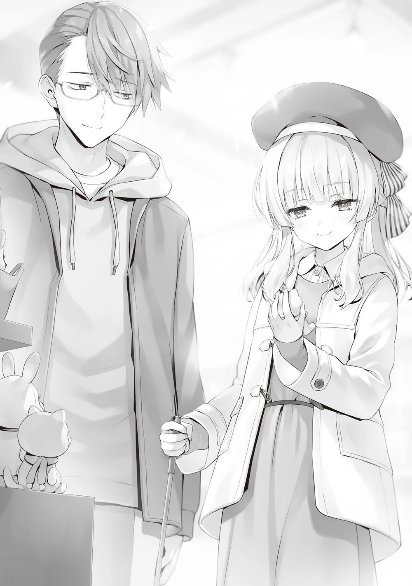
Sin embargo, hasta ahora no sabía que Sakayanagi tenía un compañero así.
¿Hubo algún acontecimiento que provocara un cambio importante en su relación justo antes de Navidad? ¿O habían mantenido una relación estrecha sin hacerla pública?
―¿Pero está bien ser tan abierta al respecto? Si la gente se entera de lo importante que es, no sería extraño que alguien viniera a buscarlo como debilidad en el futuro.
Protegerse a uno mismo y proteger a un tercero estaban en niveles de dificultad completamente diferentes. En el caso de Sakayanagi, tener una movilidad limitada significaba una mayor posibilidad de retrasarse.
―Por supuesto, supongo que tienes tanta confianza en ti misma... pero,
¿qué está pasando?
Sakayanagi permaneció en silencio y me miró fijamente en respuesta a mi análisis. O más bien, ¿estaba enfadada?
―¿No entendiste que sólo era una bromita?
―¿Qué parte?
―Bueno, no es que Sanada-kun y yo tuviéramos una cita planeada.
―¿Eh?
Estaba confundido considerando que ella dijo completamente lo opuesto a lo que yo entendí.
―Lo siento, Sakayanagi-san. Te hice esperar.
Después de terminar la llamada telefónica, Sanada se disculpó y regresó lentamente con nosotros.
―¿Qué tal estuvo?
―Bien. Hice el arreglo.
Él se sonrojó ligeramente, se acarició la mejilla y sonrió feliz.
―La persona del teléfono era Miya-san, de la clase 1-B. Hace poco empezó a salir con Sanada-kun. Le estaba dando algunos consejos sobre qué regalarle.
Esta historia era completamente diferente de lo que me habían contado al principio. Al parecer, todo fue una broma.
No entendí muy bien el sentido del humor, pero no parecía una situación para discutir, así que lo dejé pasar.
―Le regalé algo bien pensado para Navidad, pero su cumpleaños es justo cuatro días después. Como acabamos de empezar a salir, pensé en hacerle un regalo para las dos ocasiones, pero me pregunté si sería mejor celebrarlo dos veces.
Y así fue.
De hecho, si el cumpleaños de uno está cerca de un acontecimiento importante como la Navidad, para las parejas puede ser difícil decidir cómo celebrarlo.
Sería más fácil combinar las celebraciones, pero también existía la posibilidad de que la persona festejada no lo apreciara.
―De todos modos, ella es tu kouhai, ¿eh? ¿Cómo sucedió eso?
―Es por las actividades de nuestro club. Pertenezco al club de música, y ella es mi kouhai allí.
Ya veo. Pasé por alto el hecho de que los de los clubes culturales podrían llegar a ser amigos.
Pasar tiempo juntos en las actividades del club les permitió conocerse y profundizar su vínculo.
―Pero me sorprende, Sakayanagi. ¿También das consejos sobre estos temas?
―No creo que sea la más indicada, pero Sanada-kun parece mantener su relación en secreto por ahora. Por lo visto, están pasando varias cosas en las actividades del club.
Me contestó sin dejar de mirarme con algo de desagrado.
Me preguntaba si había restricciones para salir con un senpai o un kouhai, o si había alguna norma que prohibiera el romance durante un cierto tiempo después de entrar en el club. No estaba claro, pero esas restricciones podrían existir.
Por supuesto, aunque existieran, era más probable que se tratara de una norma tácita acordada por los alumnos que de una norma oficial de la escuela.
Si se hubiera hecho explícita, habría sido imposible aplicarla sólo al club de música.
―Como era de esperar de Sakayanagi-san, ¿eh? Quiero decir, te diste cuenta.
La avispada Sakayanagi debió de percibir el cambio en sus compañeros y probablemente recopiló información.
Por eso Sanada también decidió confiar en ella.
―Entiendo la situación, pero ¿por qué me invitaron?
Sería comprensible si desempeñara algún papel de consejero, pero no di ni un solo consejo. Los dos ya habían decidido el regalo.
―Bueno...
En lugar de un Sanada ligeramente preocupado, Sakayanagi dijo la verdad.
―Sólo quería tomarte un poco el pelo.
―¿Por eso dijiste eso antes?
―Sí. Por desgracia, no te sorprendió ni sospechaste.
Hubo algo de sorpresa, pero ninguna sospecha.
Para empezar, no me interesaba mucho con quién salía o con quién no.
―Por favor, no te lo tomes en serio. La razón por la que te invité fue para que no se confundiera con una cita. ¿Qué pensarías si nos vieras juntos a Sanada-kun y a mí?
―Podría haber algunos malentendidos.
Si me mezclaba, serían dos chicos y una chica.
De esta forma, su novia kouhai no tendría dudas de si era o no una cita.
―Habría sido mejor invitar a alguien antes, pero eso habría revelado el hecho de que Sanada-kun tenía novia. Planeaba invitar a alguien fingiendo que estaba allí por casualidad fuera del supermercado.
Yo fui el elegido para ese papel.
¿Fue correcto hablar con ellos? ¿Fue un error?
En este caso, llegué a conocer a Sanada, así que supongo que estuvo bien.
No vi cuál era el regalo, pero lo sostenía con cuidado.
Sólo eso ya significaba que se preocupaba por ella.
―Buena suerte, Sanada-kun.
―Sí, gracias, Sakayanagi-san.
Sosteniendo el regalo recién comprado cerca de su pecho, Sanada inclinó la cabeza.
Con expresión feliz y la espalda recta, echó a andar, quizá dirigiéndose a ver a su novia a continuación. Quizá incluso le diera el regalo impulsivamente antes de su cumpleaños.
―Por cierto, Ayanokouji-kun, ¿ya renunciaste al pastel de hoy?
―¿Hm? Oh, sí, ese es el plan. Pensé en pasarme de camino a casa y-
―No recomiendo los dulces de tienda ahora mismo. Esta temporada no es la mejor para ellos.
Iba a comprobar la tienda de conveniencia ... pero fue prevenido por su útil consejo.
―Si yo fuera tú, me iría tranquilamente a casa y me vengaría el año que viene. Si te conformas con algo de aquí, cómo decirlo... es una pena.
Era sólo un pastel. Tenía la sensación de que cada uno decidía cuándo y dónde comérselo, pero esa sensación desapareció.
―... Creo que sería mejor no hacerlo.
Si comprara uno aquí y ahora, Sakayanagi me etiquetaría como una persona decepcionante.
PARTE 4
Aquel día, al final, volví a la residencia sin comprar un pastel.
Luego, como para sacudirme cualquier mal pensamiento, estudié en Internet las tradiciones de Año Nuevo, que ya llegaba.
Pasé el año anterior sin pensar demasiado en ello, y me arrepentí un poco.
Quizá pudiera hacer algo apropiado para la festividad después de Año Nuevo.
En la Habitación Blanca no se servía ni un pastel de arroz para celebrar el Año Nuevo.
Eran alrededor de las ocho de la noche cuando terminé de cenar mientras realizaba diversas investigaciones.
Cuando empezaba a preguntarme si bañarme o no, entró una llamada telefónica.
―Buenas noches, Ayanokouji-kun.
―No esperaba una llamada tuya a estas horas, Sakayanagi.
―Pensé en comprobarlo por si acaso.
―No soy una persona decepcionante, para que lo sepas.
Respondí a eso como una broma preventiva.
―Jeje, supongo que no. Después de todo, Ayanokouji-kun no es una persona decepcionante.
Pero viendo la reacción al otro lado del teléfono, ¿era esa su verdadera intención al llamar?
―Lo guardaré para la diversión del año que viene.
No lo decía por despecho, sino que estaba transmitiendo honestamente mis sentimientos positivos.
―¿Es así?
Sakayanagi, que parecía feliz, se rió al otro lado del teléfono.
―Cambiando de tema, ¿está mejor el estado de Karuizawa-san?
―La fiebre parece haber bajado. Sólo queda aguantar dos días más.
Aunque la fiebre haya bajado, según las normas, debe permanecer en su habitación dos días después de recuperarse.
―¿Es así? Es conveniente para nosotros. ¿Puedo concertar una cita contigo ahora?
―¿Ahora mismo? No tengo ningún problema con eso, pero ¿cuál es el problema?
―¿Por qué no dejamos eso para cuando nos veamos? ¿Te importaría si visito tu habitación?
―¿Piensas venir a mi habitación?
―¿Es inconveniente de repente?
―No, la verdad es que no.
―Entonces, no tendré ninguna duda.
Tan pronto como contesté, la llamada se interrumpió.
Ni siquiera tuve tiempo de pensar en el abrupto final de la llamada antes de oír un suave golpe.
―Ya veo.
Me levanté y me dirigí hacia la puerta; al abrirla apareció Sakayanagi, la persona que había llamado.
―¿Estabas fuera?
Parecía muy bien vestida para alguien que venía de su habitación.
Además, había una ligera capa de nieve sobre sus hombros y su sombrero.
―Feliz Navidad. Ya llegó Santa Claus.
En cuanto nuestras miradas se cruzaron, Sakayanagi me tendió una cajita con una mano.
Asintió satisfecha mientras yo aceptaba la caja.
Pero llamarse a sí misma Santa...
―Ya es la noche del 26. Santa Claus llega bastante tarde, ¿no?
―Santa Claus sigue el modelo de San Nicolás, de quien se dice que existió en la región costera del sur de Turquía. Teniendo en cuenta que debe terminar de repartir regalos, montar en su trineo hasta Japón y luego hasta este lugar, es comprensible que se retrase un poco, ¿no?
Respondiendo así, era difícil saber si estaba hablando muy en serio o bromeando.
―Sólo tú harías una impugnación tan singular.
De todos modos, no era buena idea mantenerla parada en la puerta principal, así que decidí invitarla a mi habitación.
―No dudaré en entrometerme.
―¿Y? ¿Qué asuntos tiene esta Santa impuntual?
―Creo que ya lo sabes, pero traje un pastel de Navidad. Ya que me hago llamar Santa, está bien que aceptes abiertamente el regalo.
―Bueno, a juzgar por la caja, tenía la sensación de que podría ser algo así, pero estoy experimentando una fuerte sensación de déjà vu.
¿Podría ser que Sakayanagi hubiera estado maquinando este momento desde entonces?
―Sí, exactamente por eso. Prometí traer un pastel diferente, ¿no?
Efectivamente. Por aquel entonces, ella detectó mi falta de entusiasmo por el pastel Mont Blanc y me dijo que me permitiría vengarme el año que viene...
―Así que lo de hoy no ha sido una coincidencia, ¿verdad?
―Por supuesto. Pensé que sería una oportunidad perfecta ya que querías comer un pastel. Tampoco te recomendé los dulces de la tienda para evitar duplicar los pasteles.
―Así que por eso me empujaste con esa expresión.
―Exactamente. Salió espléndidamente según mi estrategia.
Si me hubiera pasado por la tienda de conveniencia y hubiera decidido comerme un pastel por el camino, habría sido dudoso que me hubiera gustado el pastel que trajo Sakayanagi.
―Parece que has pasado la Navidad solo, así que vine a salvarte.
―¿Está bien que la líder de la clase A venga a la habitación de un chico a altas horas de la noche?
―Sería más problemático para ti si se descubriera.
No podía negarlo. Si Sakayanagi entraba a la fuerza, la cantidad de condenas que recibiría sería sin duda mayor.
―Además, son las 8 de la tarde todavía. No es una hora sorprendentemente tardía para las vacaciones de invierno, ¿verdad?
―Tal vez.
―Parece que mantienes tu habitación tan ordenada como siempre. Estoy impresionada. He visitado las habitaciones de varias chicas, pero ninguna está tan limpia como ésta.
Después de hacerme un cumplido, Sakayanagi pidió permiso y se sentó en la cama.
Luego, se quitó el abrigo que llevaba.
―Si no hubiera podido reunirme contigo hoy, ¿qué habrías hecho?
Habría varios escenarios posibles; podría haber estado durmiendo, haber salido, etcétera.
―Planeaba visitarte en un momento completamente ajeno a la Navidad.
Así que casualmente fue hoy.
Parecía que también tenía a Karuizawa en mente.
―Creo que ya lo sabes, pero he preparado dos pasteles para nosotros.
Tuve la sensación de que había dos pasteles cuando recibí la caja. Se veía más pesada que uno solo. Supuestamente pretendía que los comiéramos juntos aquí y luego irse.
―De acuerdo, prepararé las bebidas. ¿Está bien lo mismo que la última vez?
―Con mucho gusto.
Me dirigí a la cocina para preparar el café que hice la última vez.
―Poco a poco, pareces más natural de pie en la cocina.
―Viviendo en el dormitorio, las oportunidades de cocinar tienden a aumentar de forma natural.
―¿No depende de ti? Con las tiendas y la cafetería de la escuela, no es difícil encontrar comida aunque no tengas dinero.
―...Tal vez. Puede que quiera cocinar para mí.
―Eso es algo inimaginable en la Habitación Blanca. Pero es una pena,
¿no? Incluso si te conviertes en un chef de nivel profesional, no habrá un lugar para mostrar esas habilidades después de la graduación.
Como en el Centro Comercial Keyaki, hoy parecía más interesada en hablar de esos temas.
―Es verdad, ¿pero estás intentando sondear algo? Dudo que puedas ver todo lo que ocurre en la Habitación Blanca. No creo que el presidente Sakayanagi se lo revele casualmente a su hija.
No pude ver la expresión de Sakayanagi ya que estaba de espaldas, pero probablemente estaba sonriendo.
―En efecto. Lo que digo es sólo fruto de la imaginación. Como has dicho, no conozco todos los detalles de la Habitación Blanca. Pero, ¿no es lo bastante aproximado?
―Cierto. Después de graduarme, o incluso si me expulsan, volveré a la Habitación Blanca y asumiré el papel de instructor. Seré responsable de educar a mis sucesores hasta que ya no me necesiten.
Hasta hace poco, no tenía ninguna duda sobre ese resultado.
Sin embargo, ahora siento un ligero escepticismo.
Los méritos y desventajas de asistir a esta escuela durante tres años... cuando se sopesaban unos con otros, inevitablemente había algunos aspectos que parecían irracionales.
Por supuesto, yo no conocía los detalles de la situación exterior. Aquel hombre dijo que la Habitación Blanca había vuelto a funcionar, pero sin ninguna información sólida, no había forma de saber si eso era cierto o no desde aquí.
Mientras traía las tazas de café, preparé también dos platos delgados.
Eran para servir el pastel.
―Por cierto, ¿puedo esperar que el pastel esté bueno?
―No conozco tus gustos, pero si no está bueno esta vez, organizaré otra oportunidad. De hecho, puede que sea mejor fracasar esta vez y tener la oportunidad de volver a intentarlo.
No esperaba que dijera que estaría contenta aunque no estuviera delicioso.
Tal vez debería mentir y decir que sabe bien.
―Confío en discernir cualquier actuación.
―No te adelantes a mí.
―Tu proceso de pensamiento diario es bastante fácil de entender. Es muy simple y claro.
Sakayanagi parecía entender que yo era todavía un estudiante ordinario de segundo año con poca experiencia. Tenía en cuenta los asuntos de la vida escolar y las influencias de factores externos en sus cálculos y consideraciones.
Cuando abrí la caja, había dos pasteles clásicos colocados uno al lado del otro.
―¿Dónde los compraste? No los tenías preparados de antemano, ¿verdad?
La caja tenía lo que parecía el logotipo de la pastelería.
No tenía pinta de ser algo que se vendiera normalmente en tiendas o supermercados.
―Tiene una historia de fondo un tanto inusual. Tenía pensado comprar dulces en una tienda antes de ir de visita, pero por el camino me encontré con mi compañero Sawada que volvía del centro comercial Keyaki. Me dijo que el pastel de la famosa tienda que había encargado se había retrasado debido a la nieve y que llegó hoy. Sin embargo, renunció a comerlo en Navidad y acabó comiéndose otro pastel. Lo llevaba a casa preguntándose qué hacer... y así fue como ocurrió.
―¿Así que le arrebataste un pastel de aspecto delicioso a Sawada?
Sin embargo, existió semejante coincidencia.
Se trataba de Sakayanagi. Existía la posibilidad de que ella hubiera obtenido toda esa información con anterioridad.
Sería descortés seguir insistiendo en ese punto.
―Ten por seguro que pagué los puntos privados como es debido. No sé si Sawada-san iba a comer estos dos pasteles solo o con alguien en concreto.
Quizá haya más estudiantes alimentando el amor de lo que imaginas.
Decidí comerme el pastel que recibí de Sakayanagi.
Ya había comido pastel varias veces, pero como presumía de ser de una tienda famosa, me pareció diferente, incluso empezando por la nata. Sabía mucho mejor que el Mont Blanc que comí la última vez.
―Parece que te gustó.
―Aún no he dicho nada.
Sintiéndome en evidencia, no pude evitar mover la mano y dar un segundo mordisco.
―Incluso sin decir nada, lo entiendo. Aunque, me siento un poco en conflicto ya que no lo elegí yo.
Sakayanagi, que respondió así, también se llevó el pastel a la boca y asintió satisfactoriamente.
―Pero el sabor parece excepcional.
Mostrando su aceptación de lo que había que reconocer, Sakayanagi se veía feliz.
Sin hablar de nada, los dos terminamos de comer el pastel y nos tomamos un respiro.
Como ya era hora de que el reloj pasara de las nueve, ella abordó el tema.
―¿Te gustaría dar un paseo fuera un rato?
―¿Afuera?
Podría negarme, pero después de esto, sólo tomaría un baño y me iría a la cama.
Antes de eso, no estaría mal dar un paseo por la calle cubierta de nieve; tenía pocas oportunidades de experimentarlo.
―Eso estaría bien.
Decidí aceptar su propuesta, ya que no había ninguna razón en particular para rechazarla.
Sobre todo, Sakayanagi todavía quería hablar.
―Entonces, primero te esperaré en el vestíbulo.
Teniendo en cuenta mi necesidad de cambiarme de ropa, Sakayanagi se levantó con su bastón.
Decidí prepararme y seguirla.
PARTE 5
Me reuní con Sakayanagi, que estaba de pie esperando en el vestíbulo del dormitorio, y salimos juntos.
En este momento, no había otros estudiantes que fueran directamente visibles.
―Hace mucho frío afuera.
La nieve recién comenzó a caer en Nochebuena, y con la baja temperatura, se había acumulado bastante.
―Se decía que la nieve también era rara el año pasado, pero ahora lleva dos años seguidos cayendo.
La profundidad de la nieve dificultaba un poco el caminar, pero Sakayanagi parecía estar disfrutando más que preocuparse.
―Sería problemático si nevara todo el año, pero es un entorno encantador para disfrutar de vez en cuando.
―¿Pero no es incómodo cuando hay nieve amontonada?
―Por supuesto, es bastante más difícil caminar con eficacia, pero no te preocupes. Adquirí experiencia en situaciones todavía más duras durante el viaje escolar.
Sakayanagi, con aire de confianza, comenzó una conferencia sobre cómo caminar con bastón en la nieve.
Tenía un tono alegre y emocionado, como si estuviera desvelando una nueva estrategia.
Sin embargo, se veía extremadamente precaria desde fuera.
Justo cuando pensaba eso, Sakayanagi intentó sacar el bastón de la nieve y, al no salir con facilidad, estuvo a punto de perder el equilibrio.
Ya me había planteado seguirla y evitar que se cayera mientras la agarraba del hombro antes de que la cosa se pusiera seria.
―Cuidado.
―Jeje.
En lugar de ponerse nerviosa por casi caerse, Sakayanagi rió divertida.
―Eres esa clase de persona.
―¿Eh?
Mi falta de comprensión pareció agradar aún más a Sakayanagi.
―Confiaba en poder caminar bien. Sin embargo, si me esfuerzo demasiado, mi riesgo de caer aumentará. Aunque, predije que incluso si fallaba, me ayudarías.
Expresó que su predicción se confirmó cuando mi mano se extendió para salvarla.
Por eso no pudo evitar reírse.
―Considerando que no estaba garantizado, lo hiciste bien.
Fue como intentar un salto de bungee sin una línea de seguridad.
Aunque, si la red de nieve era perfecta, habría un bajo riesgo de lesiones.
―Entonces, ¿por qué me invitaste a un paseo nocturno? ¿Tienes algo de lo que quieras hablar?
―¿Tú crees?
Cuando asentí, Sakayanagi sonrió como de costumbre y luego preguntó.
―¿Qué te parece la clase A, Ayanokouji-kun?
―¿Qué quieres decir?
―Me gustaría saber qué opinas de nuestros puntos fuertes y débiles.
―Ya veo. Una pregunta bastante inesperada.
―¿De verdad?
Sakayanagi tenía una confianza incuestionable en sí misma.
Era sorprendente que buscara un consejo que pudiera influir en la dirección de su clase.
―Como premisa básica, ¿crees que daría consejos a un enemigo?
―Si consideras a la Clase A como un enemigo, no hay nada que hacer.
Sakayanagi sonrió un poco, aparentemente complacida.
―Pero creo que responderás.
―¿Puedo preguntarte tu razón?
―Si miro objetivamente lo que intentas hacer, puedo hacer una conjetura.
Daba la impresión de que Sakayanagi ya tenía una visión de lo que yo tenía en mente.
Hacía tiempo que había indicios de ello, pero no me había dado cuenta del alcance de su confianza.
―Si estás tan segura de ello, ¿no es innecesario que hable siquiera de la evaluación general de la Clase A? ¿O no puedes confiar en tu propio juicio sin mi completa aprobación?
―Esa es una pregunta tonta, ¿no?
Aún así, decidí expresar mis pensamientos.
La Clase A, bajo la dirección de Sakayanagi, estaba llevando a cabo eficientemente batallas bien organizadas.
Se deshacían de lo que había que deshacerse y recogían lo que había que recoger.
Era una clase que acumulaba constantemente puntos de clase.
En general, tenían una gran capacidad académica y una capacidad física media, pero constante. Si había algún punto débil, hasta el momento, sería la falta de alumnos que destacaran en habilidades especiales.
Sakayanagi, que caminaba a mi lado, aceptó mis palabras sin discutir.
―Hasta este punto, cualquiera podría haber dado la misma respuesta, la verdad.
―Entonces, ¿me puedes dar alguna de tus ideas únicas?
―Bueno...
Puede que fuera un poco duro, pero parecía que Sakayanagi lo quería así.
―Tienes confianza en ti misma. Es cierto que tienes habilidades que están por encima del resto en comparación con los líderes de otras clases, sin embargo, es precisamente por eso que te ves un paso por detrás en la construcción de relaciones con tus compañeros de clase.
Puedes controlarlos, pero al final, sólo los estás manipulando.
Los alumnos de la clase A deberían tener más pretensiones individuales.
Ayudaría a mejorar la clase.
Para ello, Sakayanagi, la gobernante, debe hacerse más amigable con sus compañeros.
―No creo que eso sea necesario. Quiero emitir juicios sin involucrar las emociones. Si me acerco demasiado a los demás, aflorarán las emociones.
Dudar cuando se trata de cortar una mascota querida es un signo de debilidad.
―Esa es tu elección.
No es un error. Si puedes ejercer esa fuerza solitaria, también es un arma valiosa.
―Por cierto, hay algo por lo que he sentido curiosidad.
―¿Qué es?
―¿Por qué me vigilas? Últimamente, he estado sintiendo bastante la mirada de la Clase A. Si algo te interesa, siempre puedes preguntármelo directamente, como ahora.
―Ese no es el caso. No he ordenado a nadie que se ponga en contacto contigo.
Ella negó rotundamente ese punto.
―No tiene sentido dejar que te investigue alguien ajeno. Últimamente te resistes menos a destacar, así que la gente que se ha fijado en parte de tu potencial ha empezado a hacerlo por su cuenta. Algunos de ellos me informan con tanta diligencia aunque no se los he pedido.
El contenido era insignificante, y Sakayanagi no parecía encontrar en ello ninguna información beneficiosa.
Por eso lo descartó por carecer de sentido.
―¿Se mueven espontáneamente porque les importa la clase?
―Puede que en parte sea por ganar puntos conmigo, pero mientras no se den cuenta de que no tiene sentido, seguirán siendo carentes.
Por muy útiles que fueran sus acciones, Sakayanagi no podía favorecerlas.
Sakayanagi caminaba junto a mí, haciendo agujeros en la nieve con su bastón.
Todavía no había rastro de nadie por los alrededores.
―Terminemos aquí nuestro paseo.
―Entonces regresemos.
―Sí. Pero Ayanokouji-kun, por favor, ve delante. Me quedaré aquí un rato más, disfrutando de la brisa nocturna.
―¿No es peligroso?
―Aunque me caiga, sólo es nieve, y esto no es una montaña nevada.
Efectivamente. No había forma de que nos metiéramos en algún problema, como quedarnos varados.
―Puede que no nos volvamos a ver este año. Por favor, ten un buen fin de año.
―Igualmente. Que tengas un buen Año Nuevo.
Con los saludos de fin de año fuera del camino, decidí separarme de Sakayanagi.
Caminé por el sendero nevado hacia el dormitorio.
Después de unos diez pasos, ya no podía oír el sonido de Sakayanagi caminando.
―Ayanokouji-kun.
Ella me llamó suavemente por mi nombre, así que me di la vuelta.
Con una bufanda alrededor de su boca, Sakayanagi se veía helada, pero me miró.
―¿Qué pasa?
―Hay algo que quiero decirte. ¿Puedes escuchar desde ahí?
―Lo sabía. Todavía quedaba algo por discutir.
Con cierta distancia entre nosotros, Sakayanagi y yo nos encaramos y reanudamos nuestra conversación.
―¿Sabías que todavía tenía algo que decir?
―Algo así.
―A veces, incluso yo necesito valor. Esta distancia es lo que me da ese coraje.
Menos de diez metros de distancia.
Este era el coraje que Sakayanagi necesitaba para expresarse.
―Has llegado a gustarme.
Qué palabras.
―No como ser humano, sino como persona del sexo opuesto.
Escuché en silencio esas palabras de Sakayanagi, palabras que podían tomarse como una confesión.
―¿Puedes recordarlo?
―¿No necesitas respuesta?
―No. Ahora mismo no la necesito. Por favor, siéntete libre de irte a casa.
― ¿En serio?
Quería darme la vuelta y marcharme, pero me detuve.
―¿Me dejas decirte sólo una cosa?
―¿Qué cosa?
―Probablemente te valoro más de lo que crees, Sakayanagi. Por eso quiero saberlo.
Tenía que saberlo en ese momento.
―¿Puedes convertir esa emoción de una debilidad en una fortaleza?
Sakayanagi era inteligente; seguramente entendería lo que quería decir.
Así que no había necesidad de más explicaciones.
―Qué pregunta más tonta.
Sakayanagi respondió riendo. Sus ojos brillaban incluso en la oscuridad, llenos de un fuerte color.
PARTE 6
Después de que Ayanokouji se fuera, Sakayanagi se sonrojó en silencio y sonrió completamente sola.
―Hablé con Ichinose-san el otro día, el último día del segundo trimestre.
Murmuró con una voz suave que casi fue arrastrada por el viento.
―Siempre pensé que estaba en condiciones de enseñarle, pero descubrí que no era así.
Fue el momento en que Sakayanagi tomó plena conciencia de su propio amor.
En medio de una noche nevada sin nadie alrededor, Sakayanagi continuó su monólogo.
―Te reconozco como un enemigo al que debo derrotar.
Esta era la verdad.
Sin duda, la auténtica verdad.
―Como genio innato, no puedo perder contra un genio creado como tú.
Esa era su creencia.
―Pero reconociste que mis sentimientos por derrotarte dieron lugar a otro tipo de sentimiento, ¿verdad?
Hacia la espalda oculta de Ayanokouji.
Entregando su voz inalcanzable.
Ella pronunció las palabras una vez más.
―Te amo.
Ichinose, que era tan insignificante como la basura a un lado de la carretera, hizo que Sakayanagi se diera cuenta de esto.
―Aunque hubiera expresado mis sentimientos con más claridad, tu expresión no habría cambiado.
Esa fue la única razón por la que decidió no decírselo más firmemente a la cara.
Sin embargo, no le asustaba ser aceptada o rechazada.
―Sí, así es como eres, Ayanokouji-kun. No eres el tipo de persona que deja que cosas insignificantes, algo hasta este punto, perturben su corazón.
Ordinariamente, una doncella se sentiría herida y preocupada por esto.
Sin embargo, Sakayanagi era todo lo contrario.
En todo caso, la hizo sentirse todavía más atraída por Ayanokouji.
―Nos tratas a todos en esta escuela, a mí incluida, como niños. Crees que todo saldrá según tu plan, y así lo has hecho.
Dio un paso, caminando por el sendero nevado.
El plan de Ayanokouji se entendía claramente.
La imagen que ella imaginó para el tercer año.
No sería interesante si dejaba que las cosas fueran como él quería.
Entonces, ¿qué debería hacer para perturbarlo?
La respuesta ya estaba clara.
Quiero obstruirlo.
Quiero ver su cara preocupada.
Quiero confrontarlo con cosas que no puede prever.
Quiero sacar sus emociones y quebrarlo. Quiero amarlo.
―Es una pena. Tu plan se fue al traste desde el examen de verano de la isla deshabitada.
La verdad es que no pude evitar querer decir eso, pero sigue siendo un secreto.
Es precisamente porque no lo sabemos -precisamente porque no podemos preverlo- por lo que hay emoción en lo que nos espera.
―Te aseguro que este hecho será el primer paso para cambiarte en una dirección inesperada.
No puedo evitar esperar con impaciencia las decisiones que tomará en el futuro.
―Estoy deseando que llegue el tercer trimestre...
UN TEMBLOR SILENCIOSO
LA MAÑANA del 28 de diciembre, cuando se acercaba el fin de año, miré el celular junto a la almohada.
Unos 30 minutos antes de las siete de la mañana, había llegado un mensaje.
El contenido era un modesto mensaje de Kei en el que me informaba de que se había recuperado.
Al ver el mensaje mientras estaba tumbado boca arriba, me levanté y me cambié a la posición boca abajo.
[¿Estás despierta?]
Envié el mensaje y me llegó un aviso de lectura en menos de 3 segundos.
Estaba claro que ella tenía el celular en la mano todo el tiempo, esperando mi respuesta.
[Sí, estoy despierta.]
Me había puesto en contacto con ella varias veces para ver cómo estaba desde que contrajo la gripe, pero nada más.
No había señales de su habitual espíritu optimista y no envió ningún tipo de emoticon.
[¿Cuál es tu plan para hoy?]
intenté preguntarle. Tenía la intención de invitarla si me decía que estaba libre, pero...
[Lo siento. Planeo salir con Maya-chan después de esto. Me animó durante todo el tiempo que estuve en cama y me acompañó mucho, así que quiero agradecérselo también. ¿Eso es malo?]
Claro que no. Eso era algo que ella debía priorizar, algo importante.
Si me daba prioridad a mí y descuidaba a Satou, eso traicionaría la verdadera amistad.
Naturalmente, yo no trataría de aguarle la fiesta con este asunto. Y no debería.
[Entendido. ¿Puedo llamarte esta noche? ¿Sobre las 9? Quiero hablar de las cosas que pasarán mañana y después].
Lo que pasó durante la Navidad que debíamos pasar juntos y la creciente distancia entre nosotros últimamente.
Había muchas cosas que deberíamos discutir como novio y novia.
[Sí.]
Poco después, ella envió otro mensaje corto.
[Entonces, estaré esperando tu llamada.]
Al menos su condición física había mejorado; eso era un alivio.
Era importante que programáramos algo antes de fin de año.
La única cuestión ahora es cómo voy a pasar el día de hoy.
O aparecerme por el gimnasio, que hacía días que no visitaba, o pasar el día en mi habitación sin salir.
Lo ideal sería no coincidir con el tiempo que Kei y Satou pasarían juntas.
Así que taché de mi lista la opción de ir al gimnasio, así como al centro comercial Keyaki.
Si Kei y Satou seguían preocupándose por mi presencia, no podrían divertirse.
Cuando estaba a punto de agarrar de nuevo el celular para comunicarle mi intención de quedarme en mi habitación todo el día, se escuchó un sonido.
Pensando que podría ser Kei, el pensamiento se desvaneció rápidamente cuando un número no registrado apareció en la pantalla.
Sin embargo, recordé este número.
Menudo dilema.
Seguí mirando la pantalla durante un rato.
Parecía poco probable que el timbre dejara de sonar pronto, así que decidí contestar.
―Oye, contesta más rápido cuando llame.
Ryuuen, al otro lado de la línea, expresó su descontento antes de que pudiera responder.
―Estaba en el baño.
―¿En serio? ¿No intentaste ignorarme hasta que dejó de sonar?
Bien hecho. Sea Sakayanagi o Ryuuen-ambos parecían estar mejorando en leer mis pensamientos cotidianos.
―Dame algo de tiempo. Nos vemos en la entrada norte del centro comercial Keyaki en 30 minutos.
Sin ningún interés en mis excusas, él sólo transmitió su asunto.
―¿Qué pasa con mis planes? Tengo una agenda apretada, ya sabes.
―Aplázalo.
Cortó la llamada violentamente después de exigir que nos viéramos.
―Sigue siendo tan egocéntrico.
Su actitud no era sorprendente. Era exactamente el comportamiento típico de Ryuuen.
PARTE 1
El punto álgido de la nevada había pasado, y la espesa nieve amontonada pintaba imágenes al derretirse.
Todavía quedaba algo de nieve en las sombras, pero seguramente era cuestión de tiempo.
Sin embargo, ser llamado por Ryuuen a finales de año de esta manera...
Hubo una oportunidad para que conversara conmigo en el festival escolar, e incluso casualmente terminamos en el mismo grupo para el viaje escolar, pero no debimos tener ninguna interacción después de eso.
En plenas vacaciones de invierno, era difícil imaginar una conversación relacionada con los exámenes.
Sin saber de qué se trataba, llegué a la entrada norte del centro comercial Keyaki casi exactamente a la hora prometida.
Ryuuen no estaba allí, pero en su lugar, otra persona estaba apoyada contra la pared con los brazos cruzados.
―¿Katsuragi? Esto no es una coincidencia, ¿verdad?
El centro comercial Keyaki todavía no abría. No había razón para estar allí a esa hora a menos que necesitaras ser la primera persona en la tienda.
―Recibiste una llamada de Ryuuen, ¿no? Es igual para mí.
Si Katsuragi también fue llamado, no se trataba de una charla superficial.
―Es una mala costumbre de Ryuuen llamarnos sin permiso cada vez que pasa algo.
Desde que se transfirió de la clase A a la clase de Ryuuen, Katsuragi había estado activo con Ryuuen en muchas instancias.
―Te has convertido en todo un estratega. Al parecer hasta Ryuuen confía en tus habilidades.
―Eso estaría bien.
Aunque no mostraba una expresión feliz, tampoco parecía estar completamente disgustado.
―Entonces, ¿cuál es la razón de la llamada?
―No lo sé. Tendrás que preguntarle directamente a Ryuuen.
Por lo visto, ni siquiera Katsuragi, a quien seguramente llamaron de la misma forma, estaba informado de los detalles de la conversación.
―Debes haber adivinado que será algún plan desagradable. Seguro que también eres consciente de ello.
―Bueno, existe la posibilidad de que sea un asunto molesto.
―Entonces podrías haberlo ignorado.
―¿Eso no lo haría más problemático después?
―Eso se limita a los estudiantes ordinarios. Tu nombre aparece de vez en cuando, pero él lo menciona con los mayores elogios. Es la prueba de que entiende que eres un oponente al que no puede vencer ahora.
―¿Elogios? ...no puedo imaginarlo.
―Borrarlo, aplastarlo, matarlo. Cualquiera de ellos sería un gran cumplido,
¿verdad?
―No es un cumplido. Es un desastre.
La mitad podría haber sido una burla de Katsuragi, que levantó ligeramente las comisuras de los labios y sonrió.
―No hay nadie fuera de la clase que sea igual o mejor que él. Y no hay nadie que realmente pueda hablar con él. En ese sentido, tu existencia también es importante para él.
Sakayanagi también estaría bien en cuanto a ser su igual o mejor, pero ella era la oponente que él tenía delante y a la que había que derribar.
No teníamos una relación en la que pudiéramos hablar honestamente entre nosotros.
―Aun así, es increíble que hayas podido derrotar a Sakayanagi, a pesar de que era un examen especial en el que tenías elementos ventajosos. Estaría bien que esto rompiera un poco su orgullo.
―Sakayanagi hizo lo que pudo y perdió, así que el impacto de la derrota será limitado. Sólo estábamos subidos en la ola que se avecinaba debido a múltiples cosas que se alineaban a nuestro favor.
―¿Subirse a la ola, eh? Pero también es un examen especial en el que no puedes ganar sin tener puntos fuertes, aunque te pongas firme.
Katsuragi elogió que nuestra victoria se debiera innegablemente a la fuerza de la clase.
―Por otro lado, tu clase parecía estar muy por detrás de la clase de Ichinose.
―Esa clase se enfrenta a cualquier examen especial con una actitud positiva, se adhiere a lo básico y se mantiene unida.
No era un oponente que pudiera ser derrotado fácilmente, analizó Katsuragi.
―La tarea de nuestra clase está clara. Nuestra capacidad académica es abrumadoramente inferior a la de otras clases. Tenemos que hacer algo al
respecto; de lo contrario, tendremos que enfrentarnos a varias batallas desfavorables en el futuro.
Los retos eran visibles, pero mejorarlos sería increíblemente difícil.
La capacidad académica no era algo que pudiera adquirirse de la noche a la mañana.
―En el último examen especial, les dije que renunciaran a las ganancias a corto plazo y aumentaran la capacidad académica de toda la clase, pero Ryuuen no tenía intención de escuchar.
Si no podían ganar con un enfoque directo, tendían a confiar en tácticas solapadas y ataques sorpresa.
―Sin embargo, dejarlo así no conducirá a un avance o resolución de la situación actual. A la gente le interesa que inconscientemente elijan a sus oponentes. Ryuuen utiliza a todos los miembros de la clase como si fueran sus extremidades, pero aun así, siempre habrá alumnos a los que valore y a los que apenas utilice.
―No se trata sólo de habilidades, ¿verdad?
Si había alumnos obedientes como Ishizaki y Albert, que tendían a meterse en líos con facilidad, y los que eran rebeldes y les disgustaban las fechorías, era natural que Ryuuen valorara a los primeros.
―Sí. No se trata sólo de habilidades. Se pueden ver signos de ello en otras partes. Extraño, ¿no?
―Sí.
―Por eso creo que esos estudiantes, que Ryuuen no suele utilizar, tienen tiempo de sobra y pueden aprender activamente a estudiar. Por supuesto, sin que él lo sepa.
Si Ryuuen se enterara de esto, ¿reprendería a Katsuragi por hacer cosas innecesarias? Incluso si mostraba enojo en la superficie, en realidad podría no detener las acciones de Katsuragi. Ryuuen, que había crecido tanto, debería
juzgarlo como una medida necesaria. También fue una de las razones por las que pagó una gran suma de dinero para robar a Katsuragi.
―¿Está bien que escuche algo tan importante?
―Es extraño, pero al compartir un secreto con alguien, a veces puede ayudar a tu bienestar mental.
―Como resultado, podría decirle a Ryuuen.
―Si fueras esa clase de persona, sólo tendría que reflexionar sobre mi error al juzgarte.
Él expresó su confianza en mí de esa manera.
Y arteramente aplicó presión para prevenir una traición.
En ese momento, Katsuragi interrumpió la conversación y se giró para darme la espalda.
―Aquí viene el descarado. No parece reflexionar sobre su tardanza.
Siguiendo la mirada de Katsuragi, que retrocedía exasperado hacia la pared, vi a Ryuuen acercarse lentamente hacia nosotros.
En su muñeca izquierda llevaba una bolsa de plástico, quizá por haber parado en una tienda de comestibles.
―Parece que ya estamos todos.
―¿No deberías disculparte con Ayanokouji al menos?
―No lo sé. Sólo agradece que no te hayan llamado durante las fiestas de Año Nuevo.
A pesar de que Katsuragi le instaba a disculparse, lo ignoró y comenzó a caminar. Durante un breve instante, Katsuragi y yo intercambiamos miradas que parecían expresar: "Nos vamos a meter en un buen lío". Ryuuen sacó una hamburguesa de una bolsa de plástico y se guardó la bolsa vacía en el bolsillo.
Rompió el papel del envoltorio y empezó a comer como si se hubiera perdido el desayuno.
Katsuragi lo miró con expresión desconcertada, preguntándose por qué no podía al menos haber terminado su comida primero.
―Me gustaría saber por qué nos llamaste tanto a mí como a Ayanokouji.
Aunque le preguntaron con un tono fuerte, no tenía intención de responder inmediatamente. En su lugar, continuó masticando en silencio su comida.
Después de repetir esto varias veces, finalmente comenzó a hablar una vez que su estómago estuvo satisfecho.
―Escuché noticias interesantes de los de tercer año. Al parecer, nos espera un gran obstáculo en el tercer trimestre, donde nos enfrentaremos a otros de nuestro mismo año.
―¿Un gran obstáculo? Te refieres al examen final, ¿no? No es nada sorprendente.
Los preparativos para los exámenes finales más intensos se confirmaron varias veces y de diversas formas.
Era difícil creer que Ryuuen nos convocara sólo para decirnos algo que ya sabíamos.
―¿No es posible que no sea sólo el examen final?
Ante la respuesta de Katsuragi, interrumpí tras un ligero retraso.
―Nos hemos centrado en el final del tercer trimestre, pero podría haber algo más.
―¿Tú también has oído algo, Ayanokouji?
―Oí que podría haber un examen especial al principio del tercer trimestre que podría resultar en la expulsión de algunos estudiantes. Aunque no sé qué tan cierto sea.
Ryuuen pudo haber escuchado lo mismo, y al oír esto, sonrió.
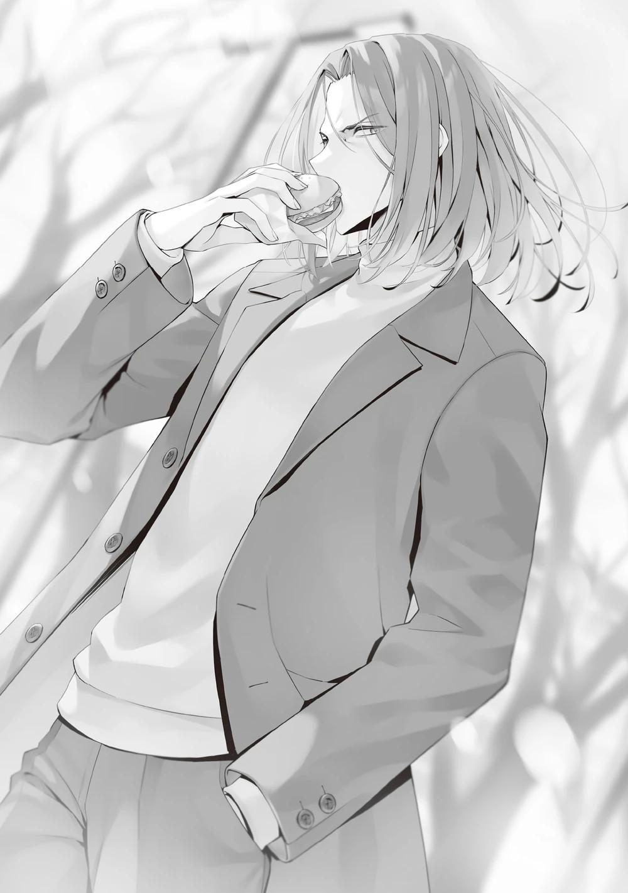
―Por cierto, ¿cuándo te enteraste de esto?
―El 25 de diciembre, hace tres días. La fuente fue Kiryuuin de la Clase 3-B.
―El mismo día, mi fuente fue Ibeyama de la Clase 3-D.
―Si realmente hay un examen arriesgado, ¿cómo es que ambos se enteraron casi al mismo tiempo?
―Sólo una coincidencia... o quizás...
―O tal vez la escuela controló la información y la dio a conocer en ese momento.
Cuando esta idea comenzó a parecer más cierta, Ryuuen mordió con fuerza su hamburguesa.
La Clase B de Horikita lo escuchó de Kiryuuin en la Clase 3-B.
La Clase D de Ryuuen lo escuchó de Ibeyama en la Clase 3-D.
El hecho de que las fuentes de información coincidieran con nuestras clases nos intrigó.
Si Sakayanagi lo oyó de la Clase 3-A e Ichinose de la Clase 3-C, entonces nuestras suposiciones serían correctas.
―Sin embargo, ¿realmente podemos estar seguros de esto? ¿No podría alguien estar difundiendo falsos rumores después de hablar con los alumnos de tercer año? Además, ahora mismo estamos en plenas vacaciones de invierno.
―Je. Precisamente por eso es creíble.
Los estudiantes naturalmente pierden su sentido de urgencia durante las vacaciones. El ambiente relajado hacía sus días agradables. Si esto era un rumor falso, hacer que los estudiantes se preparen para la batalla desde el principio no lograría mucho. Cualquier tensión mental que causara malestar tampoco podía esperarse.
―Una advertencia para estar preparados para un choque-es natural pensar de esa manera.
Dada la situación de que tanto Ryuuen como yo sabíamos lo mismo, Katsuragi lo analizó con calma.
Era un mensaje dirigido a una clase específica de estudiantes de tercer año, y la información fluía sin problemas.
―¿Alguien más ha oído algo parecido?
Ante la pregunta de Katsuragi, sacudí la cabeza de lado a lado, y Ryuuen no reaccionó, pero probablemente compartió la misma respuesta.
Si Ishizaki y los demás lo hubieran oído, se lo habrían comunicado inmediatamente a Ryuuen.
―¿Debemos asumir que fue anunciado a un representante de cada clase?
―No podemos estar seguros, pero quizá sea seguro asumir que Sakayanagi e Ichinose han sido notificadas también. No serían tan estúpidas como para perderse este tipo de información, por indirecta que sea.
―Pero entonces surge una pregunta. ¿Por qué Ayanokouji fue elegido para la clase 2-B? Si lo consideráramos por orden, ¿no sería Horikita? ¿O quizá que te eligieran a ti fue sólo una coincidencia, y cabe la posibilidad de que se eligiera a alguien que no fuera Sakayanagi ni Ichinose? No, eso es poco probable.
A mitad de formular una nueva hipótesis, Katsuragi negó lo que pensaba.
―En última instancia, la escuela es neutral. Si van a avisar, deberían haber preparado a los líderes con anticipación. Al menos, era necesario seleccionar a alguien que pudiera entender y aceptar las advertencias de tercer año.
―Suzune se está volviendo más poderosa, pero no sería sorprendente que la escuela y los estudiantes de tercer año interpretaran a Ayanokouji como el líder y lo eligieran. No es particularmente sorprendente.
Efectivamente. Recientemente, he tenido muchas oportunidades de hablar con Nagumo y Kiriyama al tratar con el consejo estudiantil.
Aún así, Kiriyama seguramente habría elegido a Horikita.
Más importante aún, por qué Kiryuuin se puso en contacto conmigo aún no estaba resuelto.
Si tuviera que interpretar la situación, diría que los líderes de tercer año recibieron instrucciones de la escuela para entregar el mensaje a los líderes de segundo año.
Kiriyama tenía la intención de informar a Horikita, pero Kiryuuin, que había oído la conversación por casualidad, se ofreció voluntaria y optó por acercarse a mí y entregarme el mensaje-.
No podía decir si esta interpretación era correcta, pero puesto que había llegado a conocer el contenido del mensaje, era mi deber informar a Horikita.
―Si suponemos que el año pasado ocurrió lo mismo, podría haber un examen especial insinuado antes o después del campo de entrenamiento mixto.
Murmuró Katsuragi y luego volvió a organizar sus dispersos pensamientos.
―Habrá varios exámenes especiales en el tercer trimestre -uno a principios de enero y otro a finales de enero- y otro a principios de marzo con el examen especial de votación de la clase. A este le seguirá el examen final para un total de cuatro.
Añadiendo a los tres exámenes de primer año, podría haber un total de cuatro exámenes de segundo año, lo que significa que había más oportunidades posibles de examen.
Sin embargo, todo esto era mera especulación, y no debía olvidarlo.
Al parecer, el examen especial de votación de la clase era un acontecimiento inesperado que no se celebraba todos los años.
Si no existiera, habría un total de tres exámenes especiales realizados en el tercer trimestre.
Al final, el año pasado fue el año pasado. No era más que una referencia.
Podía darse el caso de que no hubiera exámenes especiales, pero era muy poco probable.
No se podía asegurar que no hubiera o pudiera haber casos en los que se hicieran más de cuatro exámenes.
―Votación en clase", ¿eh? Hiciste expulsar a Totsuka por Sakayanagi,
¿no?
―...Sí.
Mientras la expresión de Katsuragi se ensombreció, tal vez recordando el amargo incidente del año pasado, Ryuuen, que había terminado su hamburguesa, añadió alegremente.
―Dependiendo de la situación, no serán sólo una o dos expulsiones,
¿verdad?
Como dijo despreocupadamente, era mejor estar preparado para los riesgos que conllevaba la verdad.
―Expulsiones, ¿eh? Preferiría no tener ninguna.
―No digas cosas tan débiles. Todavía hay demasiados estudiantes en nuestro año. No será interesante a menos que tengamos un examen que pueda eliminar incluso a cinco o diez estudiantes.
En contra de Katsuragi, quien probablemente estaría pensando en sus compañeros de clase, Ryuuen expresó la idea opuesta.
―No olvides que tú también tienes el riesgo de ser el objetivo, Ryuuen.
―Adelante. Ya sea Sakayanagi o Ichinose, si vienen por mí, simplemente las aplastaré.
―Está bien si es un enemigo obvio. Pero no hay garantía de que alguien no vaya a patearte desde dentro.
Dentro-eso significaba su propia clase.
Ryuuen, quien siempre tomo una posición en contra de sus enemigos, seguramente tenia muchos enemigos.
Sin embargo, él no era el tipo de persona que se sentiría ansioso por esas cosas.
―Será más fácil hablar si no tenemos que elegir a alguien para eliminar a partir de aquí.
―En efecto... Pero debo decir que si arbitrariamente decides abandonar a los tuyos, me resistiré.
―Haz lo que quieras.
Incluso si Katsuragi, quien previamente intervino en la votación de la clase, parecía ser un obstáculo, Ryuuen no tendría piedad. Sin embargo, él todavía funcionaba como un tapón hasta cierto punto.
Sin embargo, el misterio no se desvaneció.
Katsuragi, que caminaba a su lado, debía albergar las mismas preocupaciones ya que su expresión permanecía severa.
No había necesidad de que los tres nos reuniéramos y conversáramos así si el único propósito era limar nuestras diferencias de cara al inminente examen especial.
―En el próximo examen especial, si las reglas permiten una batalla uno contra uno, me enfrentaré a Sakayanagi.
Esas fueron las palabras que salieron de Ryuuen como si hubiera vislumbrado los pensamientos tanto míos como de Katsuragi.
―¿Cuál es tu intención, Ryuuen? ¿No te basta con un enfrentamiento directo en el examen final?
―No es suficiente. Quiero ver la cara de esa mujer cubierta de humillación al menos una vez más.
Nombrar a los oponentes con los que quería luchar significaba que nos estaba diciendo que no interfiriéramos.
―Incluso sin una advertencia, hay una baja posibilidad de que Horikita desee activamente una confrontación con la clase de Sakayanagi. Actualmente, a menos que el examen especial ponga un gran énfasis en el trabajo en equipo, no hay ningún beneficio en luchar contra su clase, que tiene una habilidad general más alta.
Si tuviera que elegir entre la clase peor clasificada y la mejor, probablemente optaría por Ichinose.
―No es aconsejable nominar a la clase A en este momento. Si el examen especial gira en torno a lo académico como el anterior, nos enfrentaríamos a un oponente formidable.
Efectivamente, no había necesidad de nominar en este momento.
Pero Ryuuen parecía dispuesto a luchar, incluso si eso significaba correr riesgos.
―Sakayanagi seguramente piensa que soy el único al que puede derrotar en cualquier momento. Corregiré esa noción equivocada.
―...No quiero estar de acuerdo.
―Entonces, Katsuragi. ¿Irás con Ichinose? Ichinose se ha convertido en un oponente bastante problemático.
Parecía que incluso Ryuuen había notado que Ichinose estaba empezando a cambiar. Aunque Katsuragi podría tener que revisar su comprensión, todavía se opondría a nombrar a Sakayanagi.
―Evaluar a Ichinose como problemática no está mal. Pero, en general, se queda corta en comparación con Sakayanagi. Aunque se revocara la evaluación, siguen siendo incomparables. Por ahora, deberíamos esperar a que se revele información en el tercer trimestre.
Katsuragi, que no subestimaba a Ichinose, sugirió que debían elegir contra quién luchar después de conocer el contenido del examen especial.
―¿Acaso importa la razón? Ryuuen simplemente quiere luchar contra Sakayanagi.
―Ese es el problema. Un líder debe elegir el método más prometedor y escoger la mejor opción. Confirmar una pelea con un enemigo poderoso en este momento es como desechar la victoria.
Los tres continuamos nuestro paseo y discusión por el centro comercial Keyaki sin detenernos.
Parecía que mi liberación no se produciría pronto.
PARTE 2
El gran árbol de Navidad que debía adornar la entrada ya había sido retirado.
Mientras contemplaba el espacio vacío, Karuizawa mostró una expresión melancólica.
―Aaah-
Un pesado suspiro se escapó sin querer.
Satou, que acababa de llegar al lugar de reunión, lo oyó desde atrás de Karuizawa.
―Kei-chan, ¿esperaste mucho tiempo?
―Ah, Maya-chan. No, para nada. Yo también acabo de llegar.
Habiéndose recuperado por completo el día 28, Karuizawa invitó a Satou a pasar el rato.
Como le explicó a Ayanokouji, ella contó con la ayuda de Satou muchas veces durante su lucha contra la gripe.
Satou le proporcionó todo lo que necesitó, sin importar la hora.
Ella respondía con prontitud a cualquier mensaje cuando se sentía sola.
Incluso escuchó los dolorosos sentimientos que Karuizawa quiso expresar a Ayanokouji tantas veces pero no pudo.
Y aceptó encantada la repentina invitación de Karuizawa sin ningún disgusto.
―Perdón por invitarte de repente.
―No pasa nada. Me alegro de que te encuentres mejor. Me alegro mucho por ti.
―Gracias. ¿Pero no es demasiado revuelo por una simple gripe?
―Puede ser grave para algunas personas, ya sabes.
Satou agarró la mano de Karuizawa y celebró alegremente su recuperación como una niña.
―Puede que me esté extralimitando, pero... ¿le dijiste como es debido a Ayanokouji-kun que ya estás mejor?
―Sí, se lo dije esta mañana. También quedamos en hablar de la promesa que no pudimos cumplir la noche de Navidad.
―¡Oh, eso es genial, ¿no?!
Aunque Satou saltó a la conclusión de que todo estaba resuelto y habían hecho las paces, rápidamente retiró su sonrisa al ver la expresión de inquietud de Karuizawa.
―Puede que seamos capaces de cumplir nuestra promesa de reunirnos, pero... no sé nada más allá de eso.
―¿Qué quieres decir...? Sólo fue una pequeña pelea, ¿verdad?
Por lo que Satou había escuchado, no parecía un asunto tan serio como decían los implicados. Si alguien tenía la culpa, era Ayanokouji.
Sin embargo, había otra cuestión que había estado rondando la mente de Karuizawa durante algún tiempo.
―Puede que a Kiyotaka haya empezado a gustarle Ichinose-san.
Enamorarse de otra persona.
Karuizawa no había dejado de pensar en el peor de los escenarios mientras se sentía indispuesta.
―No, no, no, eso no es para nada cierto. No te preocupes, ¿de acuerdo?
―...Sí...
Con sus respuestas volviendo a la normalidad, Satou se sintió aliviada al confirmar que sus palabras llegaban a Karuizawa.
Al mismo tiempo, se arrepintió de haber cavado su propia tumba e, incapaz de retractarse, trató desesperadamente de cambiar de tema.
―Pronto será Año Nuevo, ¿verdad? El tiempo vuela, ¿no?
El árbol de Navidad había sido retirado. La decoración ya estaba preparada para Año Nuevo.
―Sí, supongo... Tenía muchas ganas de ver el árbol de Navidad.
―¡¿Uh...!?
Karuizawa, aferrada aún a sus remordimientos, permaneció quieta, mirando el lugar donde había estado el árbol.
Se suponía que el día 24 decorarían el árbol y se tomarían juntos una foto conmemorativa mientras brillaban los adornos.
Habiendo cavado su propia tumba una vez más, Satou se tiró de la mejilla.
―Bueno, siempre queda el año que viene, ¿no?
―Sí... sí, es verdad.
El año que viene. Era imposible para Karuizawa pensar en algo con un año de anticipación en este momento.
Incluso las perspectivas de mañana no estaban claras, envueltas en la oscuridad.
Mientras Karuizawa mantenía la mirada fija, Satou miraba repetidamente a su alrededor.
Quería que Karuizawa se animara, esa era su principal prioridad. Pero Satou también tenía otro objetivo en mente cuando accedió de buena gana a pasar el rato con ella: un encuentro casual con Ayanokouji.
Si todavía no habían resuelto su problema, sería difícil que se encontraran de manera intencional. Así que decidió dejarlo en manos del destino.
Afortunadamente, ya habían quedado en verse mañana, pero no estaría de más que ocurriera incluso antes.
Pensó que, mientras Ayanokouji pudiera animarla, no importaría que fuera su novio.
Lo único que faltaba era que ambos se encontraran espontáneamente aprovechando el tiempo que compartían juntas.
En ese escenario, Satou esperaba facilitar sin problemas su reconciliación, creando un resultado ideal.
Sin embargo, siempre era complicado encontrarse cuando realmente lo deseaban.
Satou pensó para sí misma, si Ayanokouji sabía que ella estaba saliendo con Karuizawa hoy, es posible que haya querido evitar mostrar su cara.
La prueba estaba justo delante de ella: Karuizawa ni siquiera mostró un atisbo de intentar encontrar a su novio.
No parecía malicia, sino más bien un acto de consideración para no interferir en su día de salida.
Si un encuentro casual parecía improbable, entonces dependería de Satou mantenerse fuerte.
―¡Vamos, olvidémonos de todo lo desagradable y divirtámonos!
Con un espíritu de "hazlo o muere", Satou agarró firmemente los hombros de Karuizawa.
Al ver los ojos de Satou llenos de determinación para animar a su amiga, Karuizawa reflexionó sobre sí misma.
Había llamado a su mejor amiga para expresarle su gratitud, y sin embargo había terminado preocupándola una vez más.
Llegados a este punto, no estaría claro por qué la había invitado en primer lugar.
―Es cierto.
Karuizawa decidió poner cara valiente, al menos por ahora.
Era una buena amiga, su mejor amiga, a la que conoció después de huir a esta escuela.
Mientras atesoraba el calor de su amistad, le tendió la mano.
Al principio, Satou no comprendió el significado de su gesto, pero enseguida comprendió sus intenciones al ver la sonrisa de Karuizawa.
Ella le devolvió la mano ofrecida, y ambas se tomaron de la mano.
Todavía tenían los dedos fríos, así que se rieron mientras comparaban sus frígidas manos.
No era la primera vez que se agarraban de la mano de improviso.
Tampoco era la primera vez que lo hacían a regañadientes, sintiéndose algo avergonzadas por dentro.
Incluso ahora, había un sentimiento de timidez entre ellas.
Sin embargo, sus sentimientos estaban conectados.
Para un extraño, podría parecer infantil, o podrían fantasear con algún tipo de sentimientos románticos entre las dos.
Pero sólo eran mejores amigas, que querían tomarse de la mano simplemente porque querían demostrar su conexión.
Ni más ni menos.
Había una certeza entre las dos de que no se molestarían por el ruido a su alrededor sólo por hoy.
―Je, je, je. Haré que te olvides de todo.
―¡Ah, qué miedo!
Un mundo sólo para ellas dos.
Karuizawa y Satou decidieron pasar todo el día divirtiéndose en el centro comercial Keyaki.
PARTE 3
Salimos del centro comercial Keyaki, paseamos tranquilamente por la ruta escolar y regresamos a las inmediaciones del centro, tomándonos nuestro tiempo mientras caminábamos por una carretera con vistas al mar.
No era raro que tres chicos pasearan juntos casualmente durante las vacaciones de invierno, y ese escenario no llamaría la atención en circunstancias normales.
Sin embargo, añadiendo una presencia llamativa como la de Ryuuen, el estratega Katsuragi y la rareza de mi persona, corríamos cierto riesgo de destacar.
Aun así, Ryuuen no optó por el anonimato, rechazando medios como instalaciones interiores o teléfonos.
Considerando el contenido del examen especial, era algo imprudente.
La evaluación de cualquier observador dependería en gran medida de si consideraban la reunión de este grupo como un descuido o un acto intencional.
―¿Puedo asumir que la discusión ha terminado? Ahora estamos dando vueltas en círculos.
Cuando nos acercábamos al lugar donde nos habíamos reunido, Katsuragi, que había dejado de caminar primero, se puso a nuestro lado.
No pudimos averiguar el número ni el contenido de los exámenes especiales, y no accedió a la petición de Ryuuen de un combate contra Sakayanagi.
Seguir perdiendo el tiempo así no tendría sentido.
―Si, tal vez tengas razón. Está bien entonces.
Sin mirar atrás, Ryuuen levantó ligeramente su mano izquierda y transmitió su conformidad.
―Te debo mucho, Ayanokouji. Si tienes algún problema, no dudes en consultarme. Hay cosas en las que puedo ayudarte aparte de las competiciones de clase.
Asentí con la cabeza en señal de gratitud por su inesperada consideración, y Katsuragi me dio la espalda y empezó a caminar hacia delante.
Bueno, yo también debería ponerme en marcha.
―Voy a pasarme ahora por el centro comercial Keyaki. ¿Qué vas a hacer?
Si quieres que nos tomemos de la mano y tengamos una cita, podría considerarlo.
Ryuuen sonrió y gentilmente extendió su mano izquierda en un gesto de bienvenida.
Ir de compras juntos solo con Ryuuen sería mucho más llamativo de lo que habíamos esperado.
Sobre todo, era probable que Kei y Satou estuvieran en el centro comercial a esa hora.
―Bien entonces, me voy.
Acompañar a Ryuuen a una cita de la mano al centro comercial Keyaki no entraba en mis planes, así que era hora de volver a casa.
No hubo indicios de que me detuviera, así que comencé a caminar.
―Nuestro encuentro será en tercer año. No lo olvides.
Mientras me alejaba del centro comercial Keyaki, esas fueron las últimas palabras que Ryuuen me dijo.
No lo había olvidado, pero si se haría realidad era otra historia.
Aun así... solo una corta caminata me había dejado sintiéndome extrañamente cansado.
Sentirme más agotado que después de sudar durante una hora en el gimnasio no era sólo mi imaginación.
Habiendo perdido de vista tanto a Katsuragi como a Ryuuen, continué caminando.
Volví al dormitorio y, como había planeado inicialmente, me refugié para pasar el día.
Pero antes de eso, tenía que aclarar algo que me había estado molestando.
Tras caminar durante varias decenas de segundos, me detuve al sentir que alguien se acercaba.
Me paré justo delante de una máquina expendedora que estaba instalada a lo largo de la pared exterior del centro comercial Keyaki.
Mirando los artículos expuestos, a ojos ajenos parecería que me estaba planteando comprar una bebida.
Dirigí mi mirada entre el follaje que probablemente habían puesto los empleados al abrir la tienda.
―¿Qué haces en un sitio así?
―¿Eh?
Llamé a Yamamura, que estaba escondido en un punto ciego a la sombra.
―Llevas siguiéndome unos diez minutos, ¿verdad? Antes parecías estar escondido detrás de un árbol al otro lado del camino.
Era fácil esconderse con los árboles de tronco grueso plantados a lo largo de la carretera arbolada.
Era bastante impresionante que se las arreglara para seguir a Ryuuen y su grupo sin ser notada.
―No, en absoluto...
Yamamura trató de responder engañosamente, pero no tardó en desistir, tal vez debido a mi acertada respuesta.
―¿Cómo... lo supiste?
―¿Cómo lo supe?
Al principio, no le di importancia, pero si hubiera sido mi antiguo yo, probablemente no me habría preocupado por la presencia de Yamamura.
Ahora que habíamos pasado tiempo juntos en el viaje escolar, ella ya estaba en mi conciencia.
Era como una sola imagen. A primera vista, sólo veías la forma A o la composición A, pero una vez que sabes que cambiando tu perspectiva revelarías la forma B o la composición B, tu cerebro reconocerá la imagen como B.
Esto puede haber sido similar.
De ser sólo una estudiante de la Clase A, ahora ya era Yamamura Miki. Eso era todo. Sabía que me seguía y que escuchaba mis conversaciones, pero no la detuve.
Yamamura era una estudiante de la clase A y amiga de Sakayanagi.
Si hubiera informado de sus acciones furtivas a Ryuuen y su grupo, sería visto como tomar partido.
Por supuesto, tomar partido o no dependía de mí, pero no creía que fuera la mejor estrategia por el momento.
―Puedes relajarte. No hubo señales de que Ryuuen o Katsuragi se fijaran en ti.
―¿En serio? Sentí que Ryuuen-kun estaba tratando de atraerme...
Parecía que la intuición de Yamamura era correcta. No se quedaba en un solo lugar y se movía a propósito por lugares llamativos. Quizás estaba esperando a que su presa quedara atrapada.
Parece que Yamamura no fue atraída accidentalmente por ese señuelo.
―Entonces, ¿por qué no me lo dices sin hacerme preguntar si se enteraron o no?
Yamamura probablemente estaba convencida de que nadie se había fijado en ella. De lo contrario, no habría parecido tan sorprendida cuando la encontré.
―No me has estado siguiendo sólo hoy, sino también ayer.
No lo confirmó, pero su silencio lo decía todo.
A pesar de ser vigilado de cerca, Yamamura hábilmente los seguía.
Por otra parte, Ryuuen seguramente no tuvo más remedio que abandonar la persecución, al no ver resultados de sus planes.
Incluso después de separarse de mí, no había señales de que Ryuuen me siguiera.
Probablemente por eso me sentí lo suficientemente cómodo como para llamar a Yamamura.
―Sinceramente, dudaba si llamarte o no, pero ya que estábamos en el mismo grupo durante la excursión escolar, pensé que también podría saludarte.
Para mí, que sabía de su existencia, no llamar a Yamamura habría sido como ignorarla.
Era una sensación extraña ignorar a una cara conocida en este lugar tan poco concurrido.
De hecho, Yamamura pensó que pasaría desapercibida, y yo pensé que ella habría querido ser ignorada.
―¿No vas a preguntar por qué te estaba siguiendo?
El examen final se acercaba, y Ryuuen quería pelear con Sakayanagi. En cuanto a Sakayanagi, ella querría conocer cada uno de sus movimientos y maquinaciones, así que no le vendría mal reunir información.
―No hay necesidad de preguntar eso.
―¿De verdad?
―Y después de esto, no tengo intención de informar de ti a Ryuuen, así que puedes estar tranquila.
Añadí eso, pensando que Yamamura no se tranquilizaría con meras palabras de que esos dos no se habían dado cuenta.
―Pero todos se veían muy familiarizados entre sí. Como mínimo, no lo reconoces como enemigo, ¿verdad? Si le das la vuelta a eso, ¿no te convertirías en aliado de Ryuuen-kun?
El tono interrogante de Yamamura se mezclaba con la duda.
―Desafortunadamente, no soy aliado de Ryuuen. Eso tampoco quiere decir que sea aliado de la Clase A. De todos modos, no tengo intención de divulgar que nos encontramos aquí a nadie. Puedes confiar en mí en eso.
―¿En serio?
Estaba a punto de asentir para disipar su ansiedad, pero un leve sonido de pasos impidió que moviera la cabeza.
Inmediatamente después, sonaron varios aplausos secos que se repitieron lentamente.
―Eres increíble, Ayanokouji. ¿Cómo encontraste a la rata?
Yamamura ya no me miraba a mí: su mirada estaba fija en Ryuuen.
Ryuuen, quien se suponía había desaparecido, reapareció ahora de todos los momentos.... Ya veo.
―¿Supongo que Sakayanagi te pidió que reunieras información sobre mí?
―No es así...
Yamamura lo negó, pero no pudo ocultar sus pobres dotes interpretativas.
―Kuku. Menos mal que decidí seguir a Ayanokouji por si acaso. Aunque seas sensible a que te vigilen, bajarás la guardia si no hay nadie siguiéndote,
¿no es así?
Estaba en lo cierto. Confiaba en que me percataría de su presencia o de la de cualquier otro si obviamente me seguían, pero por lo visto Ryuuen ya lo había tenido en cuenta.
Desde donde nos separamos, solo había dos caminos que podía tomar: uno que iba directo al centro comercial Keyaki, o el otro que llevaba a la escuela o al dormitorio. En la práctica, Ryuuen desapareció en el centro comercial Keyaki.
Si empezaba a seguirme a distancia después de esperar a que pasara el tiempo, había una alta probabilidad de que me alcanzara de forma natural. No importaba lo sensible que fuera, si nadie me seguía, no había forma de evitar ser rastreado.
La razón de sus comentarios que me impedían ir al centro comercial Keyaki era reducir mis opciones de ruta.
Además-
Al ver a Katsuragi volver del frente, me sentí aún más apenado con Yamamura.
―Así que había una conexión entre Yamamura y Sakayanagi.
Katsuragi, que parecía haber estado explorando, se sorprendió por la presencia de Yamamura.
Fingió irse a casa y estuvo buscando gente merodeando por los alrededores.
―Te pido disculpas, Ayanokouji. Acabo de recibir noticias de Ryuuen hace unos minutos y volví.
Si Ryuuen iba a rastrearme de todas formas, involucrar a Katsuragi aumentaría la probabilidad de éxito. Ese era el plan de Ryuuen.
Se lo había ocultado a su aliado para no levantar sospechas.
―¿Es sorprendente que esta chica tenga una conexión con Sakayanagi?
―Sí, lo es. Al menos mientras yo fui miembro, nunca la vi tener relación alguna con Sakayanagi. Creo que ella es sólo una de las muchas unidades de reconocimiento.
Esto era algo que sólo un infiltrado como Katsuragi podía entender.
Yamamura estaba claramente luchando más que hace un rato.
―Aunque me tomé todas estas molestias, sólo pesqué algo pequeño.
Pensé que Hashimoto podría estar tramando algo... ¿O tal vez es precisamente porque Sakayanagi confía en ti que se te asignó esta tarea?
La aguda mirada de Ryuuen, llena de sospechas, atravesó a Yamamura.
Como ella no esperaba ser rodeada de esta manera, su expresión no podía ocultar su ansiedad.
Inesperadamente, esta expresión ayudó a responder cualquier pregunta que Ryuuen pudiera haber tenido.
―De todos modos, tu habilidad para darte cuenta de las cosas es bastante impresionante, Ayanokouji. Pero tu papel hoy ha terminado.
Perdió interés en mí y nos dijo que la asustada Yamamura era su único objetivo ahora.
―Si Sakayanagi cree que puede vencerme sólo fisgoneando, es fácil de leer.
Incluso si no encontraba a Yamamura esta vez, y Yamamura fuera capaz de recopilar información continuamente, si era capaz de transmitirla como información útil a Sakayanagi era otra cuestión.
Si había un contacto que se quería mantener oculto, naturalmente no se hacía al aire libre.
Una habitación perteneciente a un amigo de confianza, una sala de karaoke, o un baño, si los individuos eran del mismo género, funcionaría. Sería fácil proceder en secreto, dependiendo del propósito.
Sin embargo, también había un aspecto inevitable para Sakayanagi.
Se necesitaba información, y Ryuuen debía investigar a la Clase A de la misma manera.
Sin embargo, a diferencia de Ryuuen, quien podía reunir información por sí mismo, era difícil para Sakayanagi.
Ella no podía reunir información sin usar estudiantes como Yamamura, Kamuro, y Hashimoto.
―Ser investigado no se siente bien, ¿verdad?
―¿Estás en posición de decir eso? Estás vigilando a Sakayanagi de la misma manera, ¿no?
Daba la impresión de que no era una vigilancia unidireccional por parte de Sakayanagi.
Ya se estaban vigilando mutuamente en preparación para los exámenes finales.
―Entonces, ¿quieres intentar otro movimiento? Estoy dispuesto a escuchar si tienes una idea brillante, Katsuragi.
Ryuuen sugirió un ataque a Sakayanagi, pero Katsuragi lo negó.
―No tengo intención de hacer un movimiento importante. Vigilar a Sakayanagi es la única carta que podemos jugar ahora mismo.
Katsuragi creía que la mejor estrategia era mantener las distancias y limitarse a un concurso de miradas.
―No olvides que el enfrentamiento final debe tener lugar en el examen especial, no fuera.
―Sheesh. Eres terco.
Las políticas básicas de Ryuuen y Katsuragi eran casi polos opuestos, pero Ryuuen escuchó las palabras de Katsuragi con una sonrisa.
―¿Por qué no se quedan un rato con nosotros?
―Déjala.
―¿Eh? ¿Dejarla? Sería un desperdicio no interrogarla ahora que la hemos atrapado.
―¿Planeas amenazarla? Debería bastar con que hayas descubierto la implicación de Yamamura. Deberías irte.
Al decir eso, Katsuragi le hizo un gesto a Yamamura para que se fuera inmediatamente.
―Perdón...
Queriendo escapar de la incómoda atmósfera, Yamamura se apresuró a intentar marcharse.
―Espera.
―¿Eh?
Sin embargo, Ryuuen la llamó para detenerla, dejándola petrificada como si fuera una rana enfrentándose a una serpiente.
―Mantendremos en secreto el hecho de que nos fijamos en ti.
―¿Por qué...?
―Porque nos das pena. Ni que decir tiene lo que pasaría si informáramos de que te encontramos.
―Eso es...
―No te encontramos nosotros, ¿eh? Si no informamos, tu valor no se perderá. Bueno, si me crees o no, depende de ti.
Cuando ella estaba en un aprieto, Ryuuen dijo eso, como si dejara caer un salvavidas.
―Si no puedes quedarte callada al respecto, entonces dile lo siguiente: si quieres información, ven a visitarme a solas a mi habitación cuando quieras. Eso sólo si tú y esa chica tienen el valor de hacerlo.
Yamamura asintió levemente y comenzó a abandonar la escena en silencio.
Al parecer había planeado volver por el centro comercial Keyaki, ya que se dirigió en esa dirección.
Cuando Yamamura estuvo lo suficientemente lejos, Katsuragi se acercó a Ryuuen.
―Ryuuen-bastardo.
―¿Qué?
―Este hobby tuyo no es algo para ser alabado.
―¿Eh?
―No diré que no deberías estar interesado en el sexo opuesto. Pero Sakayanagi es una niña. No puedes ponerle las manos encima.
Pensando que estaba hablando en serio, le advirtió que no hiciera nada escandaloso.
Era una interpretación de Ryuuen diciendo que visitara la habitación.
Eso era sólo una broma de Ryuuen, pero Katsuragi seguramente no lo entendió.
―Hay muchas chicas en esta escuela. No te apresures en nada.
―¿Qué clase de tonterías estás diciendo? ¿Crees que me excitaría una mocosa tan descarada? Obviamente es sólo una provocación.
―¿Eh? No, pero hace un momento dijiste que visitara tu habitación a solas.
Eso es lo que significa, ¿verdad?
Mientras sacudía su cabeza, Ryuuen lanzó un argumento fundamental a Katsuragi.
―Tienes razón. Ella no es para nada de mi gusto, pero Sakayanagi técnicamente también tiene nuestra edad.
Se contradijo diciendo que estaba bien tocar a gente de la misma edad, pero no a Sakayanagi.
Katsuragi, que no se había dado cuenta, se quedó pensativo durante un rato.
Finalmente, captó el significado de las palabras de Ryuuen y comenzó a hablar.
―...Tienes razón. No, pero por su tamaño, no parece que tengamos la misma edad para nada. Ella es incluso más pequeña que mi hermana, así que es realmente-
Aunque la reconocía como una enemiga formidable, Katsuragi también era un hermano. Quizá se dejara llevar por su afán de protección, no queriendo que la vieran como un objeto sexual por culpa de su hermana menor, a la que hacía tiempo que no veía.
Una cosa era segura: si Sakayanagi oía hablar a esos dos, se enfadaría.
Claramente la trataban como a una niña (aunque, sólo en apariencia).
―Para las mujeres, lo mejor es que sean normales en todo. Ni llamativas ni sencillas y ni grandes ni pequeñas, ese es mi gusto.
Aunque no quería saberlo, tenía pinta de preferir a las mujeres muy normales.
No era sólo una preferencia arbitraria, sonaba como una conclusión que venía de experimentar tanto lo amargo como lo dulce.
No sé nada de su vida en la preparatoria, pero durante la secundaria, le gustaban mucho las mujeres.
―Me alivia que no hayas llegado al nivel de enamorarte de ella.
Por otro lado, Katsuragi se sintió tranquilizado por algo completamente irrelevante.
―¿Y bien? ¿Todavía tienes algún asunto conmigo, Ayanokouji?
―Utilizarme para tu propia conveniencia y luego decir cosas tan duras es bastante injusto, ¿no?
―Es culpa tuya por haber sido utilizado. Si quieres culpar a algo, culpa a tu propia intuición desenfrenada.
De hecho, no tenía sentido guardar rencor por haber sido engañado en este caso.
Sólo era difícil utilizar esta experiencia como una lección para el futuro.
Seguir a alguien sin realmente seguirlo de cerca.
Aunque se volviera a utilizar el mismo método, sería difícil evitarlo.
Ser precavido sin sentir la presencia de alguien no era más que restringir las propias acciones.
Sin embargo, tener en mente que podría ser seguido en todo momento sería todavía más estresante.
No tiene sentido quedarse aquí.
Además, todavía hay algo de lo que quiero hablar con Yamamura, y quizás pueda alcanzarla ahora.
―¿No ibas a casa?
Me preguntaron en cuanto empecé a caminar hacia el centro comercial Keyaki.
―Hay innumerables rutas dentro del centro comercial. No quiero que me persigas más por hoy.
Al informarle de que, con las múltiples rutas de escape, podía evitarlo, Ryuuen resopló.
PARTE 4
Dado que he entrado en el Centro Comercial Keyaki, ¿qué debo hacer con Yamamura?
Puede que ya haya vuelto al dormitorio por otra salida...
Intenté pensar, poniéndome en el lugar de Yamamura: ¿qué haría yo en su lugar?
Sin duda, debía de estar debatiéndose entre informar o no a Sakayanagi de su fracaso al ser descubierta.
En momentos de inestabilidad mental, la gente busca un lugar donde descansar.
Si excluyo la opción de volver directamente al dormitorio y asumo que ella todavía está en el centro comercial Keyaki, ¿dónde estará?
A Yamamura no le gustan las multitudes y le disgusta el contacto con los demás.
Las calles y tiendas concurridas podían descartarse de inmediato.
Las salas de karaoke podían utilizarse sin compañía, pero siempre había un obstáculo para cantar en solitario.
Un retrete era una posibilidad relativamente alta, pero tampoco creía que fuera a causar molestias a los demás inutilizándolo.
Así que...
Hace un rato, estaba entre la máquina expendedora exterior y las plantas de interior.
Cerca del área de descanso, también había varias máquinas expendedoras instaladas en un lugar apartado.
Si estaba por allí, era discreto y no estaba abarrotado.
Tal vez debido a la hora, no había nadie en los alrededores del área de descanso.
Naturalmente, tampoco había nadie en las máquinas expendedoras del fondo.
Me acerqué con cautela y me asomé por el ángulo muerto de la máquina expendedora.
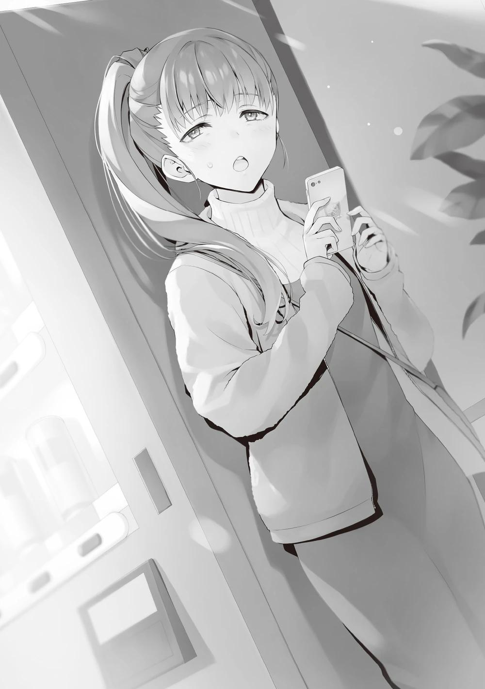
―¡¿Qué...?!
Al encontrar a Yamamura sentado junto a la máquina expendedora con una pequeña botella de té en cada mano, dejó caer una de ellas sorprendida.
Afortunadamente, la tapa estaba puesta, así que estaba bien.
―No puedo creer que estés aquí de verdad.
Aunque lo tenía claro, todavía no estaba del todo segura...
Recogí la botella que rodaba y se la entregué a Yamamura.
―C-c-cómo sabías que estaba aquí...
Ella se apresuró a buscar en sus bolsillos.
―No, no tengo GPS ni nada parecido.
―Pero, si no es eso, ¿cómo...? ¿Rastreaste la ubicación de mi teléfono...?
―Tampoco hice eso.
Era un delirio extraño, pero quizá estaba tan sorprendida que quería creerlo.
Yamamura se levantó, se asomó por detrás de la máquina expendedora y observó la zona.
―Ryuuen y Katsuragi no están aquí.
―¿En serio...? Umm, ¿todavía hay algo que necesites de mí?
―No tuve oportunidad de disculparme antes. Lo siento, Yamamura. Si no te hubiera llamado, no te habrían encontrado.
Si eso no hubiera pasado, no habría necesidad de que ella se preocupara por esto entre máquinas expendedoras.
―Fue culpa mía que me encontraras... Por favor, no te preocupes.
Me cubrió amablemente sin culparme abiertamente.
―¿Informaste a Sakayanagi de que te encontraron?
―Sí, lo hice. Creo que mi papel ha terminado.
Para mi sorpresa, ella respondió despreocupadamente.
Parecía estar perdida por los dulces susurros de Ryuuen...
Si ella ya lo había reportado, no habría necesidad de profundizar en ese asunto.
En cuanto a mí, todavía me quedan cosas que hacer por Yamamura.
―Te lo compensaré de alguna manera.
―...¿Eh?
Durante el viaje escolar, no habría sido sorprendente que Yamamura y Kitou estuvieran observando y siguiendo a Ryuuen ya que estaban en el mismo grupo.
Era muy probable que Sakayanagi simplemente les hubiera ordenado vigilarlo.
Incluso si no fuera dirigido por Sakayanagi, vigilar de cerca a Ryuuen sería natural para ellos ya que estaban en el mismo grupo.
Yamamura siempre estaba preocupada por cada movimiento de la clase de Ichinose.
Sin embargo, este caso era completamente diferente, y la sorpresa fue mostrada por Katsuragi.
El hecho de que Sakayanagi podría haber valorado a Yamamura y usarla como espía-el análisis de Ryuuen sobre la fuerza de la clase de Sakayanagi había avanzado ligeramente después de obtener esta información.
De ahora en adelante, el acercamiento de Ryuuen con Yamamura indudablemente escalaría.
Si no hubiera notado su presencia y descuidadamente la hubiera llamado, la probabilidad de que Ryuuen y Katsuragi capturaran a Yamamura aún habría sido alta. No había necesidad de repetir quién tenía la responsabilidad.
―Enmendar las cosas o algo así no es necesario. No tiene nada que ver contigo, que eres de otra clase.
Aunque entendía el punto de Yamamura, todavía tenía mis propios pensamientos.
A estas alturas, no era algo que se pudiera explicar a nadie, así que pensé en otra razón.
―Es que me hace sentir incómodo. No importa cómo lo mires, sólo sufres por esto.
―Pero... para empezar, está mal seguir a alguien, ¿no?
Yamamura se sentía culpable por eso.
Así que quizás por eso Yamamura tampoco mostraba señales de insatisfacción hacia mí.
―De verdad, no te preocupes más por esto.
Parecía difícil obtener una respuesta positiva de Yamamura. Más bien, sólo conseguiría confundirla más si me quedaba demasiado tiempo.
―Entendido. Estaré ahí para ayudarte si tienes algún problema. No estoy seguro de si puedo ser útil, pero siéntete libre de preguntarme.
Diciendo esto, debería ser capaz de conseguir que Yamamura aceptara sin ninguna presión.
Independientemente de si tenía problemas o no, sería decisión de Yamamura mantener el contacto.
―En ese caso, sí, lo entiendo.
Yamamura asintió, aceptando mi sugerencia.
―Bueno, ahora me voy.
―...Cuídate.
Yamamura tenía la intención de quedarse en ese lugar por un tiempo y no intentó alejarse de la máquina expendedora.
Intenté abandonar la escena después de despedirme de Yamamura, pero-
Accidentalmente encontré a Kei y Satou caminando hacia nosotros en la dirección en la que me di la vuelta.
Escondiéndome por reflejo, me agaché a la sombra de la máquina expendedora con Yamamura detrás de mí.
―¡Ah, Ayanokouji-kun...!
Sintiéndome culpable por la mirada de perplejidad de Yamamura, me llevé el dedo índice a los labios en señal de silencio.
Con eso, ella pareció entender mi intención y se calló rápidamente.
―Oye, ¿a dónde deberíamos ir ahora?
―Bueno~
La alegre conversación entre las dos llegó a mis oídos, y cada vez estaban más cerca.
Probablemente no nos detectarían con sólo una breve mirada.
Sin embargo, ese sólo sería el caso si no necesitaran usar la máquina expendedora.
Por mucho que estuviéramos escondidos detrás de ella, quedaríamos al descubierto si se acercaban por delante.
―Oye, ¿qué tal si nos tomamos un descanso? ¿Quieres algo de beber?
Por lo visto, Satou sugirió el peor resultado posible.
―Hm...
Kei dudó.
Si nos encuentran después, habernos escondido sería contraproducente.
Estar muy juntos con alguien del sexo opuesto en el estrecho espacio entre las máquinas expendedoras.
Sería difícil inventar una excusa de que no pasaba nada.
―Sí, tal vez deberíamos tomar un descanso por un tiempo.
―Es una buena idea. Después de todo, te estás recuperando de una enfermedad.
Estaba preparado para lo peor, pero por lo visto no tenían pensado utilizar la máquina expendedora.
Su intención era descansar en el banco cercano en lugar de utilizar la máquina expendedora.
Sin embargo, eso no significaba que el problema estuviera resuelto.
Solo había una salida, y mientras Kei y Satou estuvieran sentadas en el banco, no podríamos irnos.
―Gracias. Siento haberte hecho preocupar.
―No, no es para tanto. Quiero decir, ayudarnos unos a otros cuando nos enfermamos es normal, ¿verdad?
―Sí, si alguna vez sufres un colapso, cuidaré de ti, Maya-chan.
―Gracias. Te lo agradecería.
―Siento que siempre me apoyas.
―¿En serio?
―¿Recuerdas cuando no éramos tan amigas como ahora y te enfrentaste a mí por Kiyotaka? Ya sabes, justo después de convertirnos en estudiantes de segundo año.
―Creo que dije algo así como: '¿Cuándo empezó a gustarte Ayanokouji-kun, Karuizawa-san? Responde sin esquivar la pregunta...' o algo así.
Mientras se sonrojaba y se sentía avergonzada por rememorar aquello, Satou se cubrió la cara con las manos.
―Sí, eso es. Diste en el clavo y no me dejaste escapar.
Las dos hablaban con voz normal, pero su conversación era claramente audible en la silenciosa zona.
Yamamura me miró en silencio.
Levanté ligeramente una mano en señal de disculpa por haberla hecho presenciar algo que no quería oír.
No había necesidad de obligarla a escuchar si no quería.
Aunque hubiera sido un poco difícil, si se tapaba los oídos con ambas manos, no lo oiría.
Sin embargo, sorprendentemente, Yamamura parecía estar disfrutando.
En una especie de "no me molesta", escuchó en silencio la conversación.
Yamamura debía ser responsable de recopilar información sobre alguien a instancias de Sakayanagi todos los días.
De ser así, escuchar a escondidas sería una rutina diaria.
Una o dos misiones furtivas podrían ser divertidas, como jugar a los detectives para todo el mundo, pero no había mucha gente que no se sintiera culpable por escuchar a escondidas conversaciones que no quería oír.
Pensé que Yamamura también estaría harta de su papel, pero aparentemente no era así.
Con su habilidad natural para pasar desapercibida, se sentía muy cómoda en esta situación.
Ambas hablaron durante un rato, pero finalmente, la pausa llegó a su fin.
―¿Nos vamos ya?
―¿Estás bien ahora?
―Sí. Es la primera vez que salgo en mucho tiempo, así que sería un desperdicio no divertirme.
―De acuerdo. Pero, asegúrate de reconciliarte con Ayanokouji-kun, ¿de acuerdo?
―S-sí. ¡Haré lo que pueda...!
Esas fueron las últimas palabras que escuché de ellas mientras se alejaban lentamente.
En momentos como este, existía el temor de que ambas regresaran inesperadamente o miraran hacia atrás. Pensé que debía decirle a Yamamura que se quedara un rato, pero antes de que hiciera ningún movimiento, Yamamura me detuvo silenciosamente con la mano.
Al parecer, pensó que era suficiente, y se movió casi simultáneamente conmigo.
―Se fueron, creo.
―Sí.
Primero, Yamamura salió de detrás de la máquina expendedora y comprobó los alrededores, asegurándose de que no había problemas antes de hacerme una señal para que yo hiciera lo mismo.
―Eres bastante eficiente, ¿verdad?
―... ¿En serio? Es lo que siempre hago...
Después de aclararse suavemente la garganta, Yamamura dijo algo inesperado.
―¿Te reconciliarás debidamente con Karuizawa-san?
―¿Por qué dices algo como Satou?
―Sólo tenía curiosidad. Ella es tu novia, ¿verdad? No sabía que ustedes dos estaban peleados.
―Así que incluso los especialistas en recolección de información tienen cosas que no saben.
―¿Me estás tomando el pelo?
―Mira quién habla.
Al decir eso, Yamamura se mostró sorprendida por un momento, pero luego relajó ligeramente las comisuras de los labios.
―Eres una persona extraña, Ayanokouji-kun. Me resulta extraño.
―Me lo dicen mucho.
―¿Es eso cierto? ¿O es una broma?
―Quién sabe.
Aunque seguía dubitativa, la forma tranquila de hablar de Yamamura era fácil de entender y no resultaba desagradable. Quizá se debía a que tenía elementos que coincidían conmigo, como su tensión constantemente baja.
―Por cierto... ¿qué pasa con la pregunta que te hice antes?
―¿No lo habrás olvidado?
―La recuerdo claramente.
Sorprendentemente, Yamamura tenía un lado bastante prepotente, o quizá se había eliminado uno de los muros que nos separaban.
―Me reconciliaré con ella como es debido. Ya está planeado.
―Me alegra oír eso.
A pesar de no tener nada que ver con el asunto ni ninguna conexión con Karuizawa, se la veía feliz.
―No tienes que informar de esto a Sakayanagi.
―No puedo prometer eso.
―Qué dura.
Después de tomar aliento, Yamamura sacó su celular y miró la pantalla oscura.
Después de dudar un poco, se volteó para mirarme.
―Sobre el incidente de antes con Ryuuen-kun... La verdad es que todavía no lo he reportado.
―¿Se trata de encontrarlo?
―Sí... Me disculpo por mentir. Sólo quería que te fueras a casa lo antes posible...
―Ya veo.
―Entiendo que tengo que informar. Pero... Quizá tenga miedo de que me dejen fuera. Como alguien sin ningún otro mérito, eso era lo único en lo que era buena.... Si queda claro que ni siquiera puedo hacer eso... soy inútil para la clase.
No se trataba de capacidad académica o física. Yamamura simplemente era incapaz de reconocer su propia autoestima.
―No me importa que me culpes, pero no es así.
Seguramente fue culpa de Yamamura, pero el hecho de que la atraparan era importante que Sakayanagi lo supiera para tomar futuras decisiones. Esto inevitablemente debilitaría su función como espía en el futuro.
―¿No debería guardar silencio al respecto...?
―¿Crees en las palabras de Ryuuen?
―Por ahora, aferrarme a eso es la única forma que tengo de sobrevivir...
―Entiendo cómo te sientes, pero debes informarlo honestamente.
―Pero hasta que se revele, puedo mantener la situación actual.
Realmente podría guardar silencio. Ryuuen-kun puede ser expulsado por Sakayanagi-san, y todo puede ser escondido bajo la alfombra... Yo no sé.
Posponiendo la exposición de su fracaso. Imaginando una elección para salvarse sin fundamentos.
―Esa es la peor elección. Ryuuen sólo se está aprovechando de las grietas de tu corazón, y si es necesario, definitivamente expondrá este hecho.
Aunque logres expulsarlo, existe el riesgo de que te deje un regalo de despedida.
Para Ryuuen, los resultados de encontrar a Yamamura no eran tan grandes. Sin embargo, si no informaba que Yamamura había sido descubierta, podría usar esa información para idear una estrategia.
No sólo terminaría con su destitución.
―No te dejes utilizar tan fácilmente.
―Pero...
―No quiero que te expulsen. Por favor, toma esto como un consejo por esa razón.
―¿Por qué? No tengo ninguna relación contigo.
―Estábamos en el mismo grupo en el viaje escolar. ¿No es eso suficiente relación?
―...Yo soy...
Yamamura apretó ambas manos con fuerza y se las acercó a los ojos.
Luego, cuando abrió bien los ojos, sacó su celular y tecleó un mensaje.
[Fui atrapada por Ryuuen-kun y Katsuragi-kun. Te contaré los detalles por llamada'].
Después de mostrarme el texto, se lo envió a Sakayanagi.
―Pensé que podría huir de nuevo si dudaba.
Elegió una forma de cortar el camino de retirada informando en el acto.
―¡Ah, umm, voy a... retirarme ahora...!
Habiéndose dado cuenta de repente de su situación, Yamamura se apresuró a pronunciar esas palabras.
―Resultó ser más fácil hablar con ella de lo que había imaginado.
Esa fue mi impresión inmediata de Yamamura tras separarme de ella.
Yo mismo se lo dije, pero sinceramente no quería que la expulsaran.
Sakayanagi quizá no castigaría a Yamamura por quedar expuesta, pero sería mejor vigilar la situación, por si acaso.
―Ah, cierto... al menos debería informar a Horikita.
Hacer una llamada sería un fastidio, así que lo mejor sería resumir los asuntos clave y enviar un mensaje.
Además, Kei y Satou están disfrutando en el centro comercial Keyaki. Debería salir para no encontrarme con ellos y causarles problemas.
Por lo tanto, decidí salir del centro comercial.
PARTE 5
Por la noche, realicé la ceremonia de desembalar los productos que llegaron de mi compra online.
Conseguí una máquina para hacer yogur por 3.000 yenes.
Hojeé el delgado manual de instrucciones y aprendí a utilizar la máquina. Por fin estaba en mi poder.
Terminé lo que tenía que hacer y compré los ingredientes necesarios: leche y yogur.
―Muy bien, vamos a hacerlo.
No había pensado mucho en ello, pero hacer yogur era increíblemente sencillo.
Primero, saqué 100 ml de un cartón de leche de un litro. Podía beberme la leche que sacaba o usarla para cocinar. Esta vez, decidí bebérmela.
Después, añadí 100 gramos de yogur al espacio vacío del cartón.
Ahora, el cartón de leche tenía una proporción de 9:1 de leche por yogur. Todo lo que tenía que hacer era ponerlo en la máquina.
El temporizador estaba programado para 9 horas, así que una vez transcurrido el tiempo, toda la leche del interior del cartón se convertiría en yogur.
Uno podría argumentar que es mejor comprar el yogur de la forma habitual, pero el verdadero valor estaba en hacer esto para el siguiente lote y a largo plazo.
A la mañana siguiente, me comería los 1.000 gramos de yogur que había hecho, pero lo importante era ahorrar 100 gramos.
Al comprar sólo leche y mezclarla, podía seguir "sembrando" más yogur.
El poder de los lactobacilos era asombroso.
Pude sentirlo cuando empecé a elaborarlo, aunque conocía su función en teoría.
Pero acababa de encender el interruptor, así que ¿qué podía decir?
Por supuesto, si pudiera hacerlo indefinidamente, no sería una molestia.
La leche era fermentada por lactobacilos para convertirse en yogur, pero era inevitable que los lactobacilos se debilitaran con el tiempo.
Como consecuencia, la solidificación se debilitaba, por lo que, para evitarlo, se necesitaba más tiempo de fermentación. Se perdía la fuerza de las bacterias iniciales.
Tenía previsto ser prudente con la higiene al empezar, pero había factores inevitables, como las bacterias del aire, que debilitaban el trabajo de los lactobacilos.
Al final, para obtener mejores resultados, debería terminar con tres o cuatro lotes como máximo.
Tendría que ganar experiencia haciendo yogur y acostumbrarme.
Eso era parte de la diversión de hacer mi propio yogur.
Cuando puse el cronómetro, se acercaban las 9 de la noche.
Esto significaba que estaría listo a las 6 de la mañana.
―Bueno, entonces.
Agarré mi teléfono, que se estaba cargando sobre la cama.
Ya era hora de contactar con Kei, o eso creía...
Intenté llamar a Kei desde mi historial de llamadas, pero en su lugar sonó mi teléfono.
Por un momento pensé que Kei se había impacientado y me había llamado, pero no lo parecía.
―¿Hola?
―Errr- H-hi, buenas tardes.
―No es habitual que llames, Satou.
Recordé haber intercambiado información de contacto con ella hace mucho tiempo, después del festival deportivo del año pasado.
―Um, bueno, hay algo que realmente quiero confirmar contigo.
―¿Qué es?
―...Es sobre Kei-chan.
Como mejor amiga, podía entender por qué estaba preocupada.
Quizás quería averiguar las emociones que yo tenía sin decírselo a Kei.
―¿Sobre Kei? ¿Qué quieres decir?
A propósito, decidí no responder directamente y en su lugar lancé una bola curva.
―Se pelearon estos días... ¿no?
―¿Oíste eso?
―Bueno, supongo. Es más como: 'Me lo imaginaba por el flujo de la conversación'.
En lugar de decir que le pidieron consejo explícitamente, afirmó haber notado algo anormal mientras hablaba con Kei.
―Es casi fin de año... Van a reconciliarse, ¿verdad?
Más que dudar de si nos veríamos, le preocupaba lo que pasaría cuando nos viéramos.
Sintiendo la inquietud, debía de estar actuando preocupada por el bienestar de Kei.
Puede que no pensara en el impacto que tendría esta llamada en la otra persona, pero por el momento, quería apreciar los sentimientos que albergaba hacia su mejor amiga.
―Estaba a punto de ponerme en contacto con Kei por lo de la promesa.
―¿Es así? Eso significa... que vas a reconciliarte con ella, ¿verdad?
―Por supuesto, ese es el plan. A menos que Kei tenga otros planes y no pueda venir.
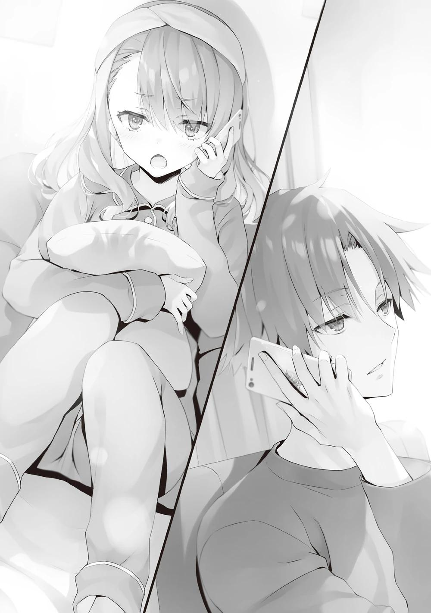
Aunque habíamos concertado una cita previa, ella no la había confirmado en modo alguno.
Era natural que no pudiera forzar un encuentro imponiendo sólo su conveniencia.
Por supuesto, como no había recibido ninguna información que afirmara lo contrario, creía que no debía haber ningún problema para cumplir la promesa.
Al otro lado del teléfono, Satou tragó saliva. Una voz insonora llegó débilmente a mis oídos.
―¡Me alegro! Sí, ¡qué bien! Estoy molestando, ¡así que cuelgo ya!
Decidiendo que cualquier conversación adicional sólo pondría a Kei más ansiosa, intentó colgar.
―Espera un momento. Hay algo que quiero decirte.
―¿Qué cosa?
Satou se puso alegre tras saber que contactaría con Kei más tarde.
Ser capaz de apoyar a alguien mientras pone sus sentimientos y a sí misma en segundo lugar era un signo de un corazón genuinamente fuerte.
Por eso podía ahondar un poco más en el asunto.
―Por supuesto, como novio, se supone que debo proteger a Kei. Pero eso no es suficiente.
―¿Qué quieres decir?
―Nunca se sabe cuándo, ni dónde, ni qué tipo de problemas surgirán. No se trata sólo de amor, ¿verdad? Pueden surgir problemas por amistades enredadas, y existe el riesgo de expulsión debido a las reglas únicas de la escuela. Igual que te sentiste incómoda con Kei y conmigo, las relaciones humanas pueden romperse en cualquier momento y lugar. Aunque te sientas absolutamente seguro, puede cambiar a inseguridad en el momento en que aparezca una grieta.
―Eso es...
También para Satou sería un hecho innegable.
Cuando Satou reconoció la relación entre Kei y yo, debió sentirse aliviada al mismo tiempo.
Ayanokouji protegería a Kei y la apreciaría-ella debe haber tenido ese tipo de confianza infundada.
Sin embargo, entró en pánico ante una situación inesperada y se sintió ansiosa.
Por eso, a pesar de los riesgos, hizo esta llamada.
―Tenías que apoyarla como amiga, no, como mejor amiga. Por supuesto, esto se basaba en la premisa de que reconociste a Kei como tal.
―¡Eso es obvio!
Sin un momento de retraso, Satou declaró que protegería a Kei.
―Entonces eso está bien. Pero a cambio, también te garantizaré lo contrario.
―... ¿Lo contrario?
―Si no puedes proteger a Kei, yo protegeré a Kei.
―¿Puedo confiar en ti...? ¿Está bien?
―Por supuesto.
Nuestras verdaderas intenciones, esencia y sentimientos reales no importaban.
Era mejor hacer que Satou pensara de esa manera, hacer un contrato invisible.
Aunque yo abandonara a Kei, las posibilidades de que Satou continuara devotamente su ayuda aumentarían.
Si Satou fuera expulsada o algo así, no habría manera de que ella supiera si yo seguía protegiendo a Kei después. No habría rencor aunque me retractara de mi promesa.
Sin embargo, Kei tenía actualmente un papel importante que desempeñar en el mantenimiento de la clase de Horikita.
―Hoy, Kei me dijo que quería reunirse contigo. Quería darte las gracias.
―Ah, ya veo.
―Gracias.
―No, no hace falta que me des las gracias. Si ustedes dos se llevan bien, es todo lo que necesito.
―De acuerdo. Entonces, por favor, escucha el informe de mañana por parte de Kei.
―Me prepararé para la historia de amor.
Después de terminar la llamada, sentí un sutil cambio en mis emociones dentro de la habitación vacía.
Manipular a otros con mis propias palabras.
Eso es, para mí, clasificado como comportamiento "divertido".
No importaba si las palabras eran verdaderas o falsas.
El hecho es que incluso encontraba 'divertidos' los intentos de los demás por manipularme.
Hasta quería aceptar que me engañaran sin saberlo.
Conocer y aprender de la gente. Que me enseñen.
Mucha más gente... o quizás, más grandes y desconocidos, gigantescos oponentes.
Si pudiera controlar y dominar a esas personas, no podía evitar pensar que sería todavía más divertido.
Pero aun así, Satou había mejorado sus habilidades poco a poco.
Incluso en una sola llamada, pude ver su crecimiento.
―Bueno...
Llegué un poco tarde a nuestra hora prometida, pero decidí llamar a Kei.
TIEMPO RESTANTE
TUVE UN DESACUERDO con Kei por algo relacionado con Ichinose.
Minimicé voluntariamente el contacto y mantuve las distancias durante bastante tiempo.
Al no poder reunirme con Kei en Navidad debido a un accidente inesperado, la gripe, me di cuenta de que ya era fin de año: 29 de diciembre.
Nuestra cita estaba fijada para las tres de la tarde.
Hasta entonces, pasé un día normal de descanso en mi habitación sin nada que hacer.
Vi la televisión, leí libros, navegué por Internet y escuché música.
Pensaba que sería aburrido, pero lo ordinario me satisfacía.
Finalmente, cuando faltaban 20 minutos para la hora prometida, decidí salir del dormitorio.
Habíamos quedado en la entrada del centro comercial Keyaki, pero pensé que podríamos encontrarnos por casualidad.
Sin embargo, no había ni rastro de Kei en el vestíbulo del dormitorio ni fuera.
Volví a pensarlo en mi cabeza.
¿Qué significa para mí tener una relación?
En primer lugar, ¿qué es el amor?
Entre las varias definiciones de "relación" que había en el diccionario, la que se aplicaba a nosotros ahora mismo era "salir como pareja".
Es fácil de entender y se puede tomar al pie de la letra.
Mientras tanto, cuando busqué 'amor' en el diccionario, decía: "la emoción de afecto que un hombre y una mujer sienten el uno por el otro".
Afecto. Emoción. ¿He podido aprender sobre el amor a lo largo del tiempo?
Ese era el primer punto a considerar.
Había aprendido muchas emociones en esta escuela.
Clases, conversaciones con amigos, charlas con profesores, ir de compras, jugar.
Con ello, aprendí lo que era interesante, no interesante, divertido, no divertido, delicioso, no delicioso, y muchas cosas más.
A través de mi relación con Kei, aprendí mucho sobre lo que experimentan y por lo que pasan las parejas.
Conversaciones, citas y actos de intimidad que sólo pueden hacerse en pareja.
Quizá podría decir que había realizado todas las acciones que se considerarían respuestas ejemplares.
Entonces, ¿podría decir que he aprendido el sentimiento del amor?
Posiblemente la respuesta fuera diferente. No era lo mismo que aprender emociones.
Mi corazón no se había dejado llevar para nada, desde antes de empezar a salir con Kei hasta ahora.
Eso era algo que me preguntaba una y otra vez a diario.
No sabía la respuesta, pero tenía una corazonada.
Era que veía a Kei como un vehículo para aprender sobre el amor. Prioricé las experiencias que sólo podían hacerse en pareja. En otras palabras, dejé atrás esa emoción cuando avancé al siguiente paso antes de que mi subconsciente se hubiera percatado.
Por supuesto, no me arrepentí. Aprendí mucho de Kei.
Sin embargo, se acercaba el momento de decidir cuánto tiempo continuar esta relación.
Kei era la alumna más oscura de la clase de Horikita.
Aunque intentara ser fuerte, tenía una naturaleza dependiente. Me aproveché de eso y la sometí a mi control.
Pero no podía lograr mi objetivo mientras mantuviera esa intensa dependencia.
Ahora que mi política había cambiado radicalmente, era esencial que se liberara de la dependencia.
Por eso me gané el derecho a aprender algo nuevo.
Me preguntaba si dudaba o no en separarme de Kei.
Si dudaba en dejarla marchar, entonces tal vez podría llamarse realmente amor.
Faltaban casi cinco minutos para la hora prometida, pero Kei ya estaba allí esperando. Estaba mirando hacia abajo y aún no se había fijado en mí.
Teniendo en cuenta la hora, no sería extraño que empezara a buscarme.
Tal vez temía no poder verme cuando levantara la cabeza.
O quizás se resistía a verme cara a cara.
―Llegas pronto.
Me acerqué a ella, pero para no sorprenderla demasiado, dejé cierta distancia entre nosotros y la llamé.
―Ah-
Reaccionando a mi voz, Kei levantó la cabeza.
Se suponía que íbamos a tener una cita hoy ya que no pudimos tener una en Navidad juntos, pero no se veía emocionada. Tal vez estaba tan ansiosa que no podía evitarlo.
Por lo menos, no pude ver ningún sentimiento de disgusto, decepción o pérdida de interés en mí.
―Ha pasado un tiempo...
―Sí. En el sentido de que estamos solos de esta manera, han pasado unas tres semanas.
Para cuando terminamos de intercambiar trivialidades, estábamos frente a frente.
Parecía haber una cuña entre Kei y yo en ese momento. Hasta ahora, solíamos estar tan cerca que prácticamente nos tocábamos. Esas tres semanas separados dejaron una atmósfera incómoda entre nosotros.
―¿Te sientes mucho mejor ahora?
―Sí. ¿Te llamó alguien?
―Anoche, recibí una llamada de Satō, preocupada por ti. Lo escuché entonces.
―Ya veo...
Nuestros sentimientos aún no se acercaban a lo habitual y permanecían algo distantes. A pesar de que estamos en una relación y tenemos muchos secretos entre nosotros, esto era lo mucho que podía cambiar la apariencia de una persona cuando está llena de ansiedad.
―Entremos ahora.
―Si...
Hacía frío afuera en invierno. Decidí llevar a Kei dentro del centro comercial Keyaki primero.
―¿Qué quieres hacer?
―Originalmente, primero planeábamos ver el árbol de Navidad aquí.
―Sí...
El árbol de Navidad ya había sido retirado, dejando sólo un gran espacio vacío.
La próxima vez que volvería a estar animado y decorado sería en Halloween o Navidad del año que viene.
―Es una pena que no pudiéramos verlo.
―Sí...
Desde que nos reunimos y empezamos a movernos, Kei se había mostrado distante y sólo decía repetidamente "Sí".
De hecho, era de esperar.
Al fin y al cabo, la razón de nuestra actual separación residía en mí.
Sería normal que se opusiera a salir con alguien del sexo opuesto mientras tuviera novia.
Es más, si analizaba objetivamente mi propia situación, lo que hice podría tomarse como infidelidad, y no había forma de evitarlo.
Quizás Kei no tuviera el valor de abrir ella misma una puerta tan peligrosa.
―Por ahora, quiero disculparme por el malentendido ocurrido con respecto a Ichinose. Quiero presentarme ante ti, juntar mis manos e inclinarme profundamente.
―...Kiyotaka...
"Es natural que te sientas enojada y preocupada. Para que quede claro, no hay fallo alguno por tu parte".
―No, eso no es cierto... Yo también dije cosas duras...
―Eso no es verdad. Creo que lo soportaste bastante bien.
Sin reprenderme, sólo expresó su justa insatisfacción.
―Realmente quería disculparme mucho antes, pero al final se retrasó.
Mientras me disculpaba, saqué una caja que había escondido en mi bolsillo de antemano.
―¿Qué es esto...?
―Es tarde, pero es un regalo de Navidad. Por favor, acéptalo.
Kei extendió lentamente la mano y luego la retiró. Todavía no se había librado del todo de su ansiedad y mostraba una reacción asustada.
Toqué su mano rígida y cerré suavemente sus dedos alrededor de la caja.
Luego agarré el abrigo que había estado sujetando y la insté a que lo abriera.
―¿Puedo abrirlo?
―Por supuesto.
Se armó de valor y, mientras presionaba el fondo de la caja con la mano izquierda, quitó la tapa.
Lo que salió de la caja fue un collar brillante. Lo miró fijamente y levantó la cara, sorprendida.
―¿Te dije, Kiyotaka, que quería esto...?
―No necesitaba oírlo directamente. Vi que lo buscaste muchas veces en tu teléfono. También miraste muchas otras cosas, pero esto me pareció lo más especial.
Entre las joyas que había visto, algunas eran más caras que esta, pero teniendo en cuenta nuestra posición como estudiantes, sería difícil imaginarla pidiendo algo demasiado extravagante.
En primer lugar, pensé que sin duda era la elección correcta...
Kei seguía congelada, sosteniendo el collar.
―¿Será que me equivoqué?
De ser así, sería una metedura de pata causada por mis acciones egoístas.
Sin embargo, Kei lo negó, moviendo la cabeza enérgicamente a derecha e izquierda y aferrando el collar.
―¡No, tienes razón...!
―Ya veo. Eso está bien.
―Esto... no es un sueño... ¿verdad?
Un alegre Kei, sin importarle la posibilidad de que hubiera alguien cerca, comenzó a llorar en el acto.
Con esto, pude juzgar que la dependencia de Kei hacia mí había alcanzado su punto máximo en ese momento.
Aunque se viera obligada a realizar acciones incalificables, lo más probable es que las llevara a cabo.
No terminé la relación aquí.
Eso fue porque, aunque terminara con Kei en este momento, no llevaría a una solución fundamental.
―¿Kiyotaka?
Mientras me perdía en mis pensamientos, Kei me miró con sus ojos desconcertados y húmedos.
―Te quedas esta noche, ¿verdad?
Con una sonrisa radiante, Kei me rodeó el brazo.
―¡Ah, pensé que tal vez... yo ya no servía para nada...!
―¿Me aceptarás?
―Por supuesto, ¿no es obvio...?
Con el collar aún en la mano, las lágrimas brotaron de los ojos de Kei y empezaron a desbordarse.
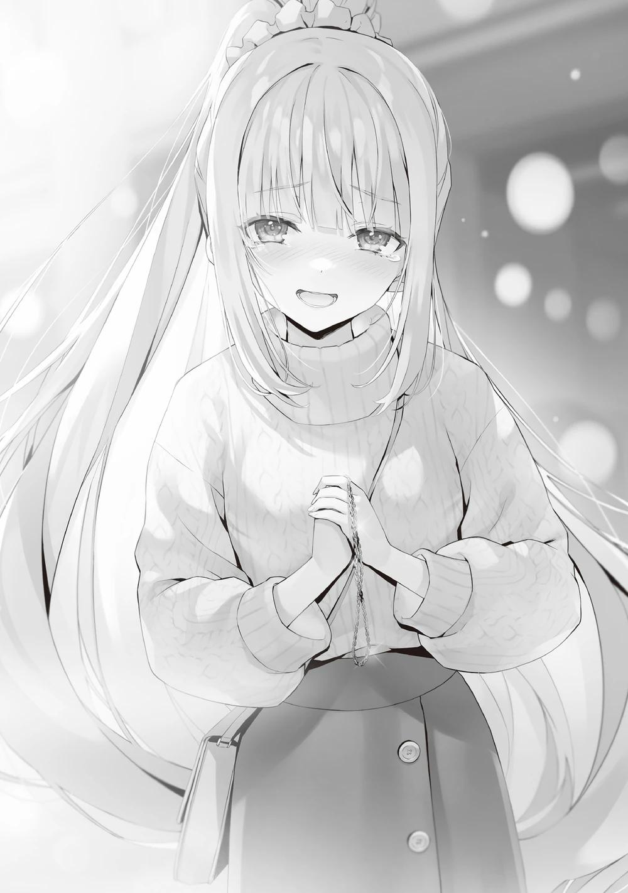
―Entonces, ¿realmente está bien... volver a como eran las cosas?
―Sí, volver a como eran las cosas.
―Está muy, muy bien confiar en ti, ¿verdad?
―Puedes confiar en mí.
A Kei, que buscaba confirmación una y otra vez, la abracé y le transmití mi respuesta inquebrantable.
―¡Me alegro mucho! Me alegro mucho.
―No pudimos celebrar juntos la Navidad, pero sin duda pasemos juntos tu cumpleaños.
―¡Sí, sí!
El cumpleaños de Kei es el 8 de marzo.
Si todo iba bien, sería antes de los exámenes finales.
Nada cambiaría hasta entonces.
Como antes, estaría a su lado para apoyarla y protegerla si lo necesitaba.
Ese era el destino de un huésped parasitado.
Se puso el collar y me abrazó tímidamente.
―Ha pasado tiempo... ¿verdad?
―Sí. ¿Adónde quieres ir?
―A cualquier sitio. Mientras esté contigo, cualquier sitio está bien.
No había nada más que ella pudiera desear. Respondió así y acercó su cuerpo al mío.
―A partir de hoy, ¿puedo volver a tu habitación?
―Es más difícil encontrar una razón para negarse.
―¿Qué tal si nos damos un baño? ¿Puedo acompañarte?
―Por supuesto.
―Jejeje.
Después de que ella felizmente relajó sus mejillas, se limpió las lágrimas que rebosaban de la esquina de sus ojos con la punta de sus dedos.
La restauración de mi relación con ella.
Fue una acción alegre.
Sin embargo, ¿por qué mi corazón ni siquiera se estremeció?
¿No debería alegrarme más, temblar y regocijarme a la vez?
No lo sé.
―Me alegra que nos hayamos reconciliado.
Palabras fingidas.
Con esas palabras, Kei sintió alegría y felicidad.
No había tristeza en no conocer esos sentimientos.
Si no lo entendía, podía intentarlo repetidamente hasta que lo hiciera.
Si no funcionaba con Kei, lo intentaría con otra persona.
Teniendo más relaciones, con el tiempo, sería capaz de aprender sobre el amor.
Podría encontrarme abandonado y llorando de dolor.
Surgió el deseo.
Una curiosidad infinita me empujó a seguir adelante.
Esto era lo que significaba no saber.
Aún quedaba infinito espacio para el aprendizaje.
―¿Te gustaría ir al karaoke después de tanto tiempo?
Por ahora, debía seguir centrándome en construir una relación con Kei.
Para evitar que volviera a sentirse incómoda por el silencio, se lo sugerí.
―Vaya, es raro que sugieras ir al karaoke.
Recordando, iba al karaoke bastante a menudo, pero rara vez pensaba en cantar voluntariamente, así que como ella decía, podría haber sido raro.
―Últimamente, escucho más canciones famosas en la tele.
Kei era una buena forma de comprobar si era lo suficientemente bueno como para salir con otros estudiantes en futuras sesiones de karaoke sin pasar vergüenza.
Ella levantó la mano para mostrar su aprobación y respondió con una sonrisa, así que los dos empezamos a caminar.
Por el camino, me fijé en una máquina expendedora que había en la zona de descanso.
Puede que incluso hoy, Yamamura estuviera sentada entre esas máquinas expendedoras.
―...¿Qué pasa?
Cuando detuve mis pies, ella ladeó la cabeza y miró hacia las máquinas expendedoras, siguiendo mi mirada.
―¿Tienes sed?
―No es eso.
Me pregunté qué le habían dicho a Yamamura después de presentarse ante Sakayanagi.
¿La habían relevado de su deber, o estaba vigilando a alguien ajeno a Ryuuen?
―Ah, claro. ¿Puedo ponerme en contacto con Maya-chan?
Consentí, y para evitar enviar mensajes mientras caminaba, la senté en un banco cercano.
―¿Quieres sentarte a mi lado?
―No, voy a echar un vistazo a la máquina expendedora. Puede que haya nuevos productos interesantes.
―¡Entendido!
Kei balanceó alegremente su cuerpo mientras empezaba a charlar con Satō.
Parecía que estaba informando de que habíamos hecho las paces y volvió a darle las gracias. Mientras tanto, decidí dirigirme hacia las máquinas expendedoras del fondo. Aunque me parecía poco probable que estuviera allí, quería asegurarme.
Cuando me asomé entre las máquinas expendedoras...
―¿Qué?
Inesperadamente... ella estaba allí. Era la misma escena de antes: estaba sentada y sostenía una botella de plástico en la mano. La única diferencia era una bolsa ecológica parcialmente llena colocada en el suelo.
―Nos volvemos a encontrar. ¿Siempre estás aquí?
―No siempre... sólo a veces ―respondió ella, desviando la mirada con culpabilidad.
―¿Qué es eso?
―¿Eh? Ah, ¿esto? Es una toalla que me compré como recompensa.
―¿Una recompensa?
―...Por favor, no te preocupes. Parece que te arreglaste con Karuizawa-san.
―¿Escuchaste eso?
―Sí. Soy buena captando esas cosas.
Estaba siendo ambigua, pero quería decir que era buena escuchando a escondidas.
―Creo que deberías irte pronto. Aunque parezca que estás entusiasmado con un nuevo producto, resulta un poco extraño cuando lo piensas con calma.
Me dio la impresión de que había captado toda la conversación.
Quería preguntarle por la reacción de Sakayanagi, pero estaba relacionada con la situación de la clase, así que no me contestaría fácilmente. Al contrario, incluso si le preguntaba, podría causarle más problemas.
―Hasta luego.
―...Sí.
Abandoné la zona ya que podría parecer que estaba hablando con una máquina expendedora. Cuando volví al banco, justo a tiempo, Kei había terminado su conversación con Satō. Resultó ser la decisión correcta terminar la conversación antes.
―¿Pasó algo?
―Nada realmente. Vámonos.
―¡De acuerdo!
Kei se levantó con energía y volvió a acercarse a mí, enlazando su brazo con el mío.
El humor de Kei había vuelto a la normalidad hasta un punto increíble. Sentía como si su dependencia hubiera aumentado todavía más que antes.
Quería que estuviéramos juntos durante las comidas, los baños e incluso al dormir.
Su fuerte deseo de no separarse de mí, ni siquiera por un momento, se transmitía a través de nuestros dedos entrelazados.
Los parásitos se adentraban muy, muy adentro, hasta el punto de que no podían escapar por sí solos.
Sin miedo a ser absorbidos, se aventuraban a seguir adelante.
Así, en el transcurso del año, mi relación había crecido incluso más allá de lo que era antes, y dimos la bienvenida al Año Nuevo como novios.
Como nota al margen, la imagen de ella tarareando alegremente mientras salía de la habitación para unirse a la reunión de Año Nuevo con sus amigos aún estaba grabada a fuego en mi memoria.
PARTE 1
En mis días libres, voy al centro comercial Keyaki. Puede que con amigos, con mi novia o solo.
El recinto era la única fuente de entretenimiento en nuestras vidas escolares y proporcionaba diversión sin fin sin llegar a ser agobiante, pero tendía a consumir los puntos privados de cada persona.
Ser socio del gimnasio y desplazarse sólo entre éste y el dormitorio habría sido eficiente, pero no era posible.
Salir a comer con alguien, ir al karaoke o incluso comprar impulsivamente artículos atractivos: la batalla contra la tentación continuaba.
Por eso, a veces quería pasar el tiempo sin utilizar ningún punto privado.
Quedarme encerrado en mi habitación era una opción, pero quería reservarla para situaciones difíciles.
Con ese razonamiento, no quedaban muchas opciones.
Me puse el uniforme por primera vez en diez días y salí de la residencia.
Me dirigí a la escuela durante mis vacaciones de invierno; mi objetivo era la biblioteca.
Poco antes de las vacaciones de invierno, me dirigía hacia la librería cuando la espalda de una persona llamó brevemente mi atención.
Ese fue el motivo por el que decidí ir a la biblioteca. No sabía si ahora estaba allí o no.
Aunque la escuela estuvo cerrada durante tres días, reabrió hoy, 4 de enero.
A pesar de ser más temprano que las 11 de la mañana, yo no era el único que se dirigía a la escuela; también había estudiantes sudando durante las actividades de sus clubes.
Al poner un pie dentro del campus, oí las voces enérgicas de los estudiantes que salían de la nada.
De camino a la biblioteca, me encontré con Sakagami-sensei.
―Feliz Año Nuevo ―le dije mientras asentía con la cabeza, ya que ignorarla por completo habría sido imposible.
―Ah, Feliz Año Nuevo a ti también ―me dijo Sakagami-sensei. Me saludó a pesar de que se sentía un poco incómodo conmigo porque yo no participaba en ninguna actividad del club.
Intentó pasar de largo, pero entonces me llamó desde atrás.
―Parece que últimamente has mejorado bastante tu capacidad académica.
Pero mientras tú has progresado, el crecimiento de Sudou-kun en particular ha sido realmente notable.
―Eso es cierto. Sudou ha estado trabajando muy duro.
―Ha mostrado una increíble tasa de crecimiento desde que se inscribió. Él antes estaba constantemente provocando incidentes problemáticos. Entre el personal, ahora es un gran tema de conversación ―añadió.
Eran excelentes noticias. Como Sudou había destacado por su mal comportamiento, seguramente siempre estuvo bajo la atenta mirada de los profesores.
Pero, ¿por qué sacaba el tema ahora?
―Ahora de la clase D a la clase B, incluso estás a punto de llegar a la clase A.
Sakagami-sensei tocó suavemente el borde de sus gafas.
Desde la primera vez que lo reconocí como el maestro de clase de Ryuuen, de alguna manera la atmósfera a su alrededor había cambiado.
El comportamiento que otros encontraban repulsivo se había vuelto menos pronunciado que antes.
No pensé que fuera así durante el examen de la isla deshabitada en el verano...
Chabashira-sensei, junto con Mashima-sensei y Hoshinomiya-sensei, a menudo tenía la oportunidad de mantener conversaciones. Quizá porque eran del mismo año.
Por otro lado, apenas tenía contacto con Sakagami-sensei, así que quizá mi impresión de él había cambiado debido a la larga ausencia.
―Para ser sincero, no esperaba que tu clase creciera tanto ―dijo Sakagami-sensei, un cumplido que parecía genuino.
Inmediatamente después, la mirada de Sakagami-sensei se agudizó tras los cristales de sus gafas.
―¿Fuiste tú quien cambió la clase conocida como 'defectuosa'?
―De ninguna manera. No he hecho nada especial. ¿No es el resultado del trabajo duro de toda la clase, empezando por nuestra líder Horikita?
Aunque entré con una mayor negación que modestia, no estaba claro cuánto resonó en Sakagami-sensei.
Los tres profesores titulares que pertenecían al mismo curso sabían hasta cierto punto que yo era un alumno de un entorno especial.
No sería extraño que Sakagami-sensei compartiera ese conocimiento, e incluso si no lo hiciera, no sería sorprendente que lo entendiera por el ambiente o por su intuición.
―Sin duda, cosas como la actitud de Sudou-kun y sus logros en el estudio no pueden ser forzadas.... Bueno, eso está bien. Independientemente de las habilidades individuales, si la clase realmente está ganando poder, tendrás que cooperar tarde o temprano, te guste o no.
Supongo que tendré que mostrar mis habilidades cuando llegue ese momento.
―¿Vas a la biblioteca ahora?
―Lo adivinó.
―En este momento, hay lugares limitados a los que pueden entrar los que no son alumnos del club. Además, sé que eres un estudiante que va con frecuencia a la biblioteca.
Ciertamente, visitaba la biblioteca con bastante frecuencia, pero no era consciente de que Sakagami-sensei lo supiera.
Nunca había visto a Sakagami-sensei en la biblioteca. De ser así, tendría que pensar cómo lo sabía indirectamente.
―¿Pueden los profesores ver el historial de préstamos de los alumnos?
―¿"Historial de préstamos"? Sólo el bibliotecario puede hacerlo. Sería una violación de la privacidad si un profesor lo viera arbitrariamente.
―Entonces, ¿cómo supo que soy un estudiante que va a la biblioteca?
―Eso... puede que lo averigües cuando vayas a la biblioteca. Ahora tengo una reunión de personal para el tercer trimestre, así que discúlpame.
Sakagami-sensei, que parecía haber evitado responder directamente, dijo eso y se marchó.
Las implicaciones de las palabras me molestaron, pero no pude detener al profesor en retirada, así que me dirigí a la biblioteca como estaba previsto.
Cuando abrí la puerta y entré, la sala estaba sumida en el silencio.
Originalmente, este lugar debía ser tranquilo, pero era diferente cuando había gente presente.
Un silencio total se extendía donde no había nadie.
No había ni rastro de la bibliotecaria, que solía estar sentada en el mostrador de recepción.
¿Se habrá ausentado para hacer algún recado?
La puerta no estaba cerrada, así que no pensé que entrar fuera un problema, pero dudé un poco.
Pensé en esperar un rato en la entrada, pero ella acabaría volviendo.
Sin pensarlo dos veces, me incliné ligeramente en el espacio vacío y empecé a hojear los libros.
Todavía no sabía qué quería leer o pedir prestado; si elegía algo y me parecía adecuado, iría por ello.
―Feliz año nuevo, Ayanokouji-kun.
Mientras buscaba un libro para pedir prestado, oí una voz desde el otro lado de la estantería.
Me di la vuelta para ver de quién se trataba, pero parecía que la otra persona intentaba hacer lo mismo, así que acabamos pasando el uno al lado del otro. Sin embargo, alcancé a ver su perfil lateral.
Y entonces, al darse cuenta de que habíamos cambiado de sitio, se volvió a toda prisa.
―Me equivoqué de camino, ¿eh?
―Eso parece.
Era Hiyori Shiina, a quien hacía tiempo que no veía desde que charlé con ella en el festival escolar.
Solía entrar y salir de la biblioteca con bastante frecuencia -una auténtica rata de biblioteca-, pero llevaba un tiempo desaparecida.
Me dijeron que hacía poco que había vuelto a las andadas, y parecía que así era.
―Feliz Año Nuevo. Ha pasado tiempo desde la última vez que nos vimos en la biblioteca.
―Sí, así es. ¿Has estado bien?
―Sí. ¿Y tú?
―Me resfrié a finales de año. Afortunadamente, no era la gripe que anda por ahí, así que me recuperé al cabo de un par de días.
Compartimos brevemente novedades sobre nuestras vidas antes de pasar a hablar de libros.
―Ya que estamos aquí, si no es molestia, podría pedirte prestado alguna de tus recomendaciones.
―¿En serio? Eso me hace feliz.
Aunque no había ninguna ventaja en elegir el libro de otra persona para leer, ella aceptó encantada.
―Sé que por algo eliges los libros que eliges, así que estoy seguro de que será bueno.
―Entonces, por favor, permíteme guiar tu elección.
Lejos de molestarse por mi petición, juntó alegremente las manos.
―En primer lugar, ¿qué género tienes ganas?
―Bueno, me he estado distrayendo mucho durante las vacaciones, así que tal vez un misterio para poner en marcha mi cerebro.
―Pues un misterio.
Sin mostrar ningún signo de angustia, Hiyori empezó a caminar, haciéndome un gesto para que la siguiera.
Al parecer, ella también dominaba ese género.
―¿Has leído 'La llave de cristal'?
Rápidamente eligió un libro y me lo preguntó mientras caminábamos juntos por la biblioteca.
Dashiell Hammett, ¿eh? Es una obra maestra que ha sido seleccionada como una de las 100 mejores novelas policíacas de todos los tiempos.
―Por desgracia, lo leí hace unos dos años.
―No es desafortunado del todo, sino más bien impresionante. Será más difícil encontrar algo para ti.
Diciendo eso, siguió recomendando novelas clásicas de misterio del pasado.
Pude ver el enfoque de Hiyori de empezar con obras más famosas.
―Por cierto... esto no está relacionado con las novelas de misterio... pero,
¿has leído alguna obra de Kaminai Tsushi?
―¿"Kaminai Tsushi"? No, no reconozco el nombre del autor, así que probablemente no lo haya leído.
Aunque tenía un conocimiento relativo de los libros, seguía habiendo muchos más autores que no conocía que los que sí.
Pero si leía un libro, al menos recordaba el nombre del autor.
―No se puede evitar. Es un autor completamente desconocido, y nunca ha vendido nada ni antes ni ahora.
Hiyori rio algo divertida al responder.
Me pregunté si ella también me los habría recomendado, pero tras confirmarlo, la conversación volvió a las novelas de misterio sin que ella volviera a sacar el tema.
―¿Has leído 'El secreto del carruaje de dos ruedas'? Es la ópera prima de Fergus Hume.
―No lo he leído.
―Bueno, nadie lo tiene prestado ahora mismo, así que puede ser una buena oportunidad para hacerlo.
Después de elegir tres libros más, entre ellos el que contó con la ayuda de Hiyori, nos dirigimos a la recepción, donde había regresado la bibliotecaria.
Intercambiamos saludos de Año Nuevo y Hiyori sacó rápidamente los libros.
―Si quieres, vuelve a visitarnos, Ayanokouji-kun.
―Creo que vendré unas cuantas veces más antes de que empiece el tercer trimestre. Hiyori, tú te quedas en la biblioteca, ¿verdad?
―No hay mucho más que hacer ya que tenemos tantos días libres.
―¿No vas al centro comercial Keyaki con amigos o algo así?
―La verdad es que no.
Según recordaba, no había visto a Hiyori salir con amigos durante nuestra vida escolar normal. Por supuesto, la había visto relacionarse con compañeros de clase por diversos motivos, pero...
Era posible que tuviera menos amigos de lo que yo pensaba.
PARTE 2
En el pasillo, Hiyori se apresuró a seguirme.
Aunque era una distancia corta, le faltaba un poco el aliento.
―Toma...
Tras recuperar el aliento, Hiyori me mostró una bolsa de papel.
Por su forma, se podía deducir que contenía un libro.
Sin embargo, seguramente no era de la biblioteca.
Hiyori sacó el libro con sus finos dedos y me lo tendió.
―Éste es uno de mis libros favoritos. ¿Te importaría leerlo si tienes ocasión?
Tenía una portada, pero ya me hacía una idea de lo que era.
―¿Es, por casualidad, el autor que mencionaste antes?
―Supongo que es fácil de averiguar, ¿no?
Un libro de un autor desconocido introducido de sopetón, sin tener en cuenta el género. Vista la situación, era relativamente fácil de adivinar.
―En el caso de que ya lo hubieras leído, no pensé que te lo pudiera regalar tan fácilmente.
Después de todo, había una diferencia en la alegría que podía proporcionar como regalo un libro no leído frente a uno ya leído.
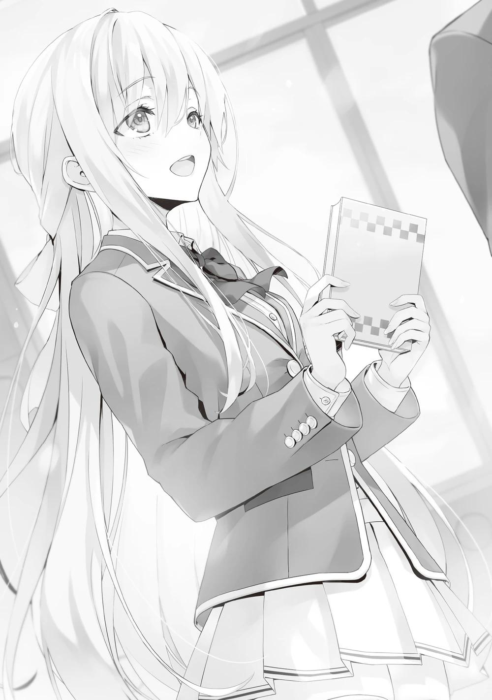
La declaración debe haberse hecho teniendo en cuenta estas consideraciones.
―Si sólo quieres leerlo, puedes tomarlo prestado de la biblioteca. Pero si es una obra que me gusta mucho o a la que tengo especial cariño, quiero tenerla a mano.
―Así que te esforzaste en comprarlo con tu propio dinero.
―Además... este libro no está disponible en la biblioteca.
Eso significaba que ni siquiera era posible tomarlo prestado.
Podía pedírselo a la bibliotecaria, pero viendo la situación de Hiyori, me daba cuenta de que ese libro no era algo que gustara a todo el mundo.
A lo mejor a ella personalmente le gustaba, pero no creía que mereciera la pena promocionarlo.
―¿Segura que puedo quedármelo?
Incluso un libro de este tipo no era una compra barata para un estudiante.
―Sí. De hecho, es la tercera vez que compro este libro. La primera vez fue cuando estaba en secundaria, y todavía lo tengo en mi habitación. La segunda fue cuando entré en esta escuela.
Y el tercero lo compré para regalármelo.
―Creo que entiendo bastante bien tus gustos, así que confío en que estarás contento con él.
―Me siento mal por haberte hecho pasar por esta molestia.
No podía dejar que lo sostuviera eternamente, así que lo acepté con las manos.
Pero entonces surgió una pequeña pregunta.
―¿Acaso llevabas esto contigo hasta que me encontraste?
pregunté ya que no le había dicho que estaría aquí hoy.
―Habría venido enseguida si me lo hubieras dicho.
―Bueno, sí. Pero... sólo han pasado unos días, así que no es para tanto.
―Bueno, entonces... hasta luego.
Me pregunté si la expresión algo reacia de su cara era sólo mi imaginación.
PARTE 3
Vi que Hiyori volvía a la biblioteca y me dirigí a la entrada para salir de la escuela.
Tal vez porque era la hora de comer, pude ver a algunos miembros de los clubes por aquí y por allá.
Al llegar a la entrada, divisé a dos compañeros de clase profundamente enfrascados en una conversación.
―Oye, ¿Ayanokouji? ¿Qué haces en la escuela?
El primero en fijarse en mí fue Sudou, que todavía llevaba puesta su equipación de baloncesto.
Por otro lado, Yousuke se estaba poniendo la vestimenta de su uniforme de fútbol.
―Feliz año nuevo. Me encontré con Sudou-kun por casualidad.
Estábamos hablando de almorzar juntos.
―Este es un binomio inusual.
―¿En serio? Nuestro combo es bastante común últimamente, ¿no?
―Sí.
No pensé que originalmente fueran amigos cercanos, pero me pareció que se han vuelto lo suficientemente cercanos como para almorzar juntos. Tal vez el crecimiento de Sudou lo puso más en sintonía con Yousuke.
―¿Pero está bien que almorcemos sin Onodera-san?
―Está resfriada desde ayer, así que se tomará el día libre de las actividades del club.
Además, por lo visto no sólo ellos dos, sino que Onodera también participaba en esta rutina.
Era una relación sólo posible para los estudiantes en las actividades de un club.
―Ayanokouji-kun, ¿vienes de regreso de la biblioteca?
Mirando los pocos libros que tenía en la mano, Yousuke preguntó ya que parecía haberlos asociado con la biblioteca.
Tras confirmarlo, naturalmente, comenzamos a caminar hacia la tienda de conveniencia bajo la dirección de Sudou.
―La cafetería está cerrada durante las vacaciones de invierno, ¿eh?
―Sí, normalmente traemos comida de casa o la compramos en la tienda de conveniencia.
Al parecer, después de comprar la comida, volvían a la escuela para comerla.
Aunque en primavera y otoño solían comer fuera en un banco, en esta época del año no era preferible.
Sin embargo, después de escuchar su conversación, había algunos lugares como una cafetería climatizada disponible para que los miembros de los clubes no tuvieran problemas para encontrar un lugar donde comer.
―Hablando de eso, ha estado nevando intermitentemente, ¿verdad?
―Es molesto. El clima es inestable desde hace dos semanas, ¿no?
―Cuando hace este frío, nuestros cuerpos tampoco se mueven bien, así que espero que haga calor pronto.
Continuaron las conversaciones propias de las actividades de su club, en las que yo, como no miembro, no podía participar.
Sin embargo, no me sentí ajeno. Simplemente escuchaba a esta pareja conversar con naturalidad. Era reconfortante.
―Por cierto, Kiyotaka-kun, ¿va todo bien con el asunto de Karuizawa-san?
Me da la impresión de que lo estás pasando mal.
―Impresionante. Así que te enteraste, ¿eh?
―Me di cuenta de que había algo raro en ella desde antes de las vacaciones de invierno. Te darías cuenta si la vieras en clase.
―¿Qué quieres decir con 'está todo bien'? Oh, ¿finalmente rompieron?
Sudou se metió de lleno en la conversación, haciendo que Yousuke soltara una risita. Pero Yousuke supuso que era incorrecto, así que rápidamente rechazó la idea.
―No creo que sea eso lo que haya pasado. ¿Es solo que podría haber algún problema en desarrollo?
Incluso la información de Yousuke sólo llegaba hasta la época cercana a Navidad.
―El problema ya se resolvió. Todo ha sido normal desde finales de año.
―Oh, es bueno oír eso.
―Sí, no rompieron, ¿eh?
Sudou se mostró decepcionado mientras cruzaba las manos detrás de la cabeza.
―¿Esperabas que rompieran?
―No, no es así. Fue sólo una broma. Todavía estoy celoso porque no tengo novia. Lo siento.
Negó el comentario -que parecía celebrar la desgracia ajena- y se disculpó.
La primavera aún no había llegado para Sudou, pero había señales de que se acercaba.
―¿Ningún progreso con Onodera?
―Oye, no digas cosas innecesarias. Harás que Hirata lo malinterprete.
En cuanto se mencionó su nombre, Sudou entró en pánico, pero Yousuke se limitó a observarlo con una mirada cálida.
―Creo que Yousuke seguro que lo entiende.
―...¿En serio?
Pensó que Yousuke no se había dado cuenta de la sutil relación en absoluto.
―Sé que Onodera-san te ha estado prestando atención desde hace un tiempo.
Era más sensible a las miradas y acciones de sus compañeros que la mayoría de la gente.
No era sorprendente que fuera consciente de ello, pero era probable que no dijera nada innecesario.
―Entonces, ¿qué pasa?
―Bueno... Onodera y yo sólo somos amigos.
Frunció los labios y negó como si aún no hubiera desarrollado sentimientos románticos hacia ella, o tal vez acabaran de empezar a brotar.
Me pregunté si aún sentía algo por Horikita, pero no me pareció que fuera un problema grave.
En cualquier caso, siguió comportándose como si no fuera a aprovecharse de los sentimientos de Onodera hacia él.
Tras pasar por la tienda, los tres regresamos a la escuela, sintiendo el frío en la piel.
Cuando nos dirigimos a la cafetería, estaba bastante abarrotada de alumnos de cursos superiores e inferiores por igual, y vimos a muchos estudiantes que pertenecían a los clubes.
Hasta los que no participaban en clubes, como yo, podían entrar, así que seguramente había estudiantes que venían solo a almorzar con amigos.
A medida que nuestros kouhais entraban en la cafetería, saludaban de vez en cuando a Sudou y Yousuke.
―Ahora sí que se sienten como senpais, ¿eh?
―Ya nos estamos acercando al final de nuestro segundo año. Una vez que termine el tercer trimestre, estaremos en nuestro tercer año. Aunque realmente no se siente así.
Sudou mordió su bola de arroz. El salmón asomó entre las algas y el arroz blanco.
―Algo extraño sucedió el otro día. Una chica de nuestro mismo año me hizo un montón de preguntas raras.
Murmurando, Sudou pareció recordar algo.
―¿Preguntas raras como…?
―Cosas como cuándo empecé a estudiar y por qué no he estudiado hasta ahora. Parecía querer saber la razón de mi mejora académica en la OAA.
―Después de todo, tienes el mayor índice de crecimiento académico.
Debió de sentir curiosidad.
Incluso para nosotros, que estábamos en la misma clase, fue todo un espectáculo.
Debe haber sido como ver algún tipo de magia para las otras clases.
―¿No habrías estado bien con un aluvión de preguntas de una chica?
―Bueno, la verdad es que no. Por fuera era linda, pero constantemente se mostraba muy combativa y engreída. Lo único que quería era que me dejara ir antes de que empezaran mis actividades en el club.
No parecía que hubiera muchas esperanzas de un nuevo romance.
―Por cierto, ¿quién era?
―No me acuerdo... No es como si supiera el nombre de todas las chicas.
Sudou, que se había metido toda la bola de arroz en la boca en unos tres bocados, contestó mientras masticaba.
―Por si acaso, ¿quieres comprobar quién era? Puede que nos la volvamos a encontrar.
Agitando la mano desdeñosamente, Sudou negó a Yousuke, que probablemente estaba a punto de abrir su teléfono para comprobar la OAA.
―No pasa nada. Si fuera una chica a la que le gusto, sería otra historia, pero es imposible que fuera eso.
Sudou ni siquiera parecía querer recordar el nombre, ya que toda la experiencia le resultaba bastante dolorosa.
―Estás empezando a llamar la atención por algo más que tu capacidad atlética.
―Si eso significa que me tienen miedo, no me importa ―dijo.
Sin mostrarse arrogante, Sudou apretó el puño y hizo acopio de su espíritu de lucha.
―Sólo estoy empezando.
Parecía insatisfecho con la situación actual y decidido a sorprender aún más a los que lo rodeaban.
PARTE 4
―Tengo que mear.
Terminó el agua de su vaso de papel, se levantó, se metió las manos en ambos bolsillos y abandonó su asiento.
Viendo cómo se marchaba Sudou, Yousuke empezó a hablar de los últimos acontecimientos.
―Escuché de los miembros del equipo de baloncesto de primer año, independientemente de su sexo, que a pesar de que es estricto, es admirado
como un senpai muy cariñoso. Cuando se unió al equipo el año pasado, su objetivo sólo era mejorar sus propias habilidades, por lo que los de tercer año están bastante sorprendidos por el cambio.
Yousuke, que tiene un amplio abanico de conocidos, también conocía el lado oculto de Sudou.
―Con sus habilidades en el baloncesto y su éxito académico, las chicas no podrán dejarlo en paz.
―Sólo entre nos, hasta una kouhai me ha pedido la información de contacto de Sudou-kun.
―¿No estaría Sudou llorando de alegría por eso?
Ser popular entre las chicas se suponía que era una de las ambiciones de toda la vida de Sudou. Sin embargo, Yousuke mostró una sonrisa ligeramente amarga y complicada.
―Cuando le pedí permiso por si acaso, me dijo que me negara porque debían estar burlándose de él. No tenía pinta de importarle en absoluto.
Sudou no se había dado cuenta de que empezaba a ser más popular, incluso con Onodera. Al no haber tenido antes experiencias de ese tipo, lo más probable es que no pudiera sentirlo.
―Entonces, puede que la primavera llegue para él un poco más tarde.
―Puede ser.
Mientras Yousuke sonreía ante esta situación, bajó la mirada hacia el libro que sostenía.
―Tenía un poco de curiosidad, pero solo hay uno con sobre cubierta,
¿verdad?
Debido a que los libros distribuidos por la biblioteca podrían haber tenido películas protectoras transparentes sobre ellos, este libro sobresalía claramente.
Ese hecho pareció molestar un poco a Yousuke.
―Esto me lo dieron antes. Hay una chica llamada Shiina Hiyori en la clase de Ryuuen, ¿verdad?
―Sí. Ahora que lo mencionas, la he visto contigo unas cuantas veces....
¿Ella te lo regaló?
―Ella me lo recomendó, diciendo que era interesante, y nuestro amor compartido por los libros hizo que nuestros gustos se alinearan.
―¿En serio...?
Yousuke, que se había mostrado tranquilo en todo momento, arrugó ligeramente la frente, mostrando un atisbo de insatisfacción.
―¿Qué pasa?
―No, no es nada.
Aunque Yousuke respondió así, no pudo evitar mantener una expresión algo preocupada. Nuestra conversación se detuvo bruscamente, dejando un silencio.
Pensé en cambiar de tema.
―Hablando de clubes, ¿cuánto tiempo suelen continuar con ellos? Como eres de tercer año, tienes que pensar en los exámenes de ingreso, ¿no?
Respondió Yousuke, ligeramente desconcertado por la pregunta irrelevante.
―Bueno, no hay una fecha concreta, pero creo que mucha gente lo deja alrededor de junio. Si necesitan centrarse en sus estudios, eso es lo que yo esperaría. Pero si priorizan sus actividades en el club, algunos continúan hasta el verano o más tarde.
Sabía que decidir si ir a la universidad y cuánto tiempo reservar para los exámenes dependía de esos factores, pero junio parecía antes de lo que había esperado.
―¿Y tú, Yousuke? ¿Lo has pensado ya?
―No estoy seguro. No hay garantías de que pueda graduarme en la clase A, y creo que mis padres quieren que vaya a la universidad. Así que, después de confirmarlo, creo que será alrededor de junio.
En esta escuela, era básicamente imposible comunicarse con los que vivían fuera del campus. Sin embargo, había algunas excepciones.
Una de ellas se refería a la educación o al empleo.
Incluso cuando se trataba de la educación superior, había muchos factores que los estudiantes por sí solos no podían decidir. Por ejemplo, a qué universidad ir, si acudir a una escuela de formación profesional o cómo sufragar los gastos.
La mayoría de los estudiantes consultan a sus padres cuando se trata de encontrar trabajo.
En esos casos, las conversaciones sobre la continuación de los estudios se celebran bajo la supervisión de la escuela.
Como estudiante que no deseaba cursar estudios superiores, este sistema y esta regla no se aplican a mí, pero para los que sí quieren, es una parte inevitable del proceso.
Sin embargo, este sistema sólo puede utilizarse a partir del tercer trimestre del segundo año.
La razón es que, al decidir la universidad deseada, es posible evitar estudios innecesarios en el tercer año y en años posteriores.
Al decidir el nivel de la universidad y el departamento para el examen, se podía fijar un objetivo.
Si hay una universidad de alto nivel a la que un estudiante aspire a asistir, el anuncio de la aceptación para el examen general de ingreso es de febrero a marzo, antes de graduarse en esta escuela.
La pregunta entonces es: ¿se graduarán en la clase A?
Esta escuela tiene el poder de cumplir los deseos de los que se gradúan en la clase A. Si deciden ir a la universidad, la escuela puede cambiar el resultado de los que no consiguen entrar en la universidad deseada.
Sin embargo, esto se aplica únicamente a los alumnos aceptados, y la posibilidad de que un alumno pueda llegar a graduarse depende de su propia capacidad.
Para decirlo sin rodeos, un estudiante con una capacidad académica de nivel medio no podrá avanzar adecuadamente aunque ingrese en la Universidad de Tokio.
Después, habría problemas para entrar en la universidad, pero éste era sólo un ejemplo fácil de entender.
También existe la posibilidad de graduarse en la clase A y ser aceptado por uno mismo, sin que la escuela anule el resultado.
En ese caso, la escuela puede aportar algunas cosas, pero hay dos beneficios principales.
Una es cubrir los gastos universitarios.
Esto es para los que tienen la capacidad de aprobar el examen de acceso pero no pueden pagar la matrícula.
Esta prestación puede utilizarse si se quiere ir a la universidad pero no se quiere o no se puede pedir un préstamo.
Sin embargo, sólo cubre la matrícula, no los gastos de manutención, y únicamente durante el periodo estándar de cuatro años hasta la graduación.
Es imposible pedir pagos adicionales si te tomas un año sabático.
La otra opción es después de la graduación. Todavía es posible apalancarse para graduarse en la clase A.
En otras palabras, se puede utilizar una estrategia que no dependa de los privilegios de la Clase A para la universidad.
En casos extremos, puedes usar los privilegios después de graduarte en una universidad de bajo nivel. Puedes entrar por la fuerza en una empresa de alto nivel en la que graduarse en la universidad era un requisito previo.
Sin embargo, eso es sólo conseguir un trabajo. Otra cuestión era si puedes adquirir los conocimientos necesarios para trabajar en esa empresa.
Y lo que es más importante, caminar por la cuerda floja.
No importaba cuánto te proporcionara la Preparatoria de Educación Avanzada, si no puedes aprobar con un 1% de índice de reprobado, te quedarás con arrepentimientos.
―Ayanokouji-kun, ¿vas a ir a la universidad?
―No lo sé. Todavía no he decidido mi carrera. Puede parecer tarde, pero quizá vaya a la universidad, o quizá encuentre un trabajo. Es algo que sólo Dios sabe.
―No necesitas precipitarte. Creo que puedes manejar bien la mayoría de las cosas.
Era agradable que me apreciaran así, pero, por desgracia, no tengo ninguna opción.
Mientras hablábamos de nuestras trayectorias profesionales, había algo inusual en Yousuke.
Entonces, después de que nuestra conversación se detuviera por un momento, Yousuke sacó el tema.
―...¿Eres muy amigo de Shiina-san?
Por lo visto, su preocupación no había desaparecido, a pesar de que habíamos dejado la conversación una vez.
―¿Hiyori? No estoy seguro. Puede que al menos seamos íntimos como compañeros amantes de los libros. ¿Hay algo que te preocupe de ella?
Cuando pregunté directamente, Yousuke reveló por fin lo que le había estado molestando.
―Me di cuenta de que la llamabas por su nombre de pila, Ayanokouji-kun, así que sentí curiosidad. Es la primera vez que te oigo hacer eso con alguien de fuera de nuestra clase.
Efectivamente, era un caso raro.
―¿Desde cuándo?
―¿Desde cuándo? No estoy muy seguro. No lo recuerdo con claridad.
Me di cuenta de que había estado llamando a Hiyori por su nombre de pila sin darme cuenta.
Pensándolo bien, creo que la he estado llamando así desde que nos conocimos.
Sin embargo, en la vida cotidiana, el cerebro no es capaz de captar un momento concreto.
―No hubo realmente un gran desencadenante, ¿eh?
―Así es. No hubo realmente ninguna razón profunda. Supongo que empecé a llamarla así sin darme cuenta.
―Ya veo...
―¿Es eso un problema?
―No, en realidad no es un problema. Generalmente, es bueno que tengas muchos amigos cercanos.
Generalmente. En otras palabras, es diferente cuando está fuera de ese entendimiento general.
Sin embargo, Yousuke no intentó seguir con esa conversación, así que yo tampoco insistí.
Ambos esperamos en silencio a que Sudou regresara.
PARTE 5
Sudou y Yousuke, que trabajaron duro durante sus actividades en el club desde el comienzo de su primer año, continuaron logrando resultados.
El flujo del tiempo era misterioso. Esos dos se habrán retirado de sus actividades en el club para esta época del próximo año.
Recordé un poco de la conversación que tuve con Kiryūin al final del año.
A lo largo de mi vida escolar, no había grandes arrepentimientos. Sin embargo, a veces me preguntaba sobre un futuro alternativo si hubiera estado en un club.
Independientemente de si era algo serio o no, si hubiera colaborado con quienes compartían mi pasión por el baloncesto o el fútbol, mi vida escolar podría haber sido más glamurosa.
Aunque era fácil imaginarlo, la probabilidad de emprender realmente ese camino debía de ser casi nula.
Poco familiarizado con la socialización, el mundo de las actividades de un club era un obstáculo demasiado alto para mí, que no podía hacer amigos rápidamente.
Leeré los libros que tomé prestados y los que me dio Hiyori de camino a casa.
Cuando volvía de la escuela, me interrumpieron.
―Espera, por favor.
―¿Hm?
Me detuvo una alumna, con voz educada pero enérgica.
Al darme la vuelta, estaba de pie, con su larga bufanda ondeando ligeramente al viento.
―Tengo algo que hablar contigo.
Normalmente, uno se quedaría sorprendido cuando se le acerca alguien con quien no tiene ninguna relación.
De hecho, el año pasado me encontré con esa situación varias veces.
No pude evitar apreciar la invención de Nagumo del sistema OAA en momentos como este.
Era más fácil relacionar los nombres con las caras, y también podías conocer sus habilidades superficiales.
La persona que apareció ante mí era una estudiante de la clase 2-A, a la que pertenece Sakayanagi.
Su nombre es Morishita Ai. Su OAA era el siguiente Habilidades Académicas - B+
Habilidades físicas - C+
Adaptabilidad - B+
Contribución social - B
Capacidad general – B
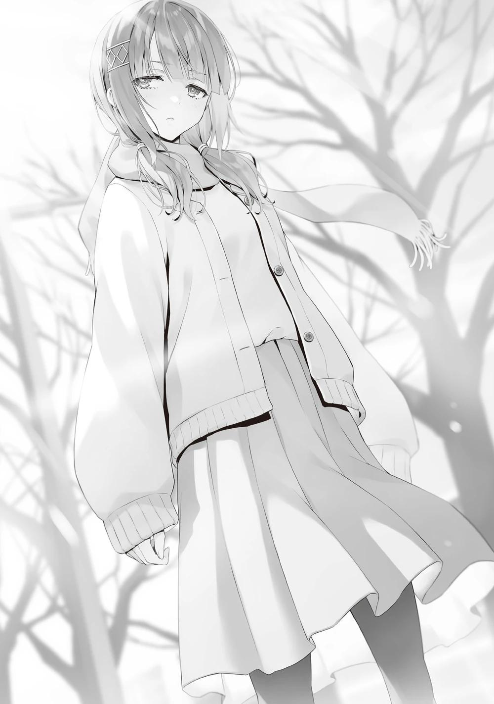
En otras palabras, era una "alumna de honor" con una descripción fácil de entender. Los datos mostraban que era una persona que podía con todo mejor que el promedio. Era parecida a Sanada, a quien conocí el otro día, pero había muchos estudiantes como él en la clase A.
―Tú eres Ayanokouji Kiyotaka, ¿verdad?
―Sí.
Morishita, que se me acercó, parecía estar al tanto de mí, lo cual era comprensible.
¿Eh? ¿Acaba de llamarme por mi nombre completo sin ningún honorífico? No me importa que la gente joven o mayor se refiera a mí sin ningún respeto, pero era un poco sorprendente teniendo en cuenta su educado tono de voz.
Antes de que pudiera decir algo, Morishita continuó.
―Esto llama demasiado la atención. Cambiemos de sitio al menos.
La escuela, el dormitorio, el centro comercial Keyaki... pasar por estos sitios para ir a cualquier parte llama la atención. Si hubiera alguien buscándote, sería un lugar óptimo para una emboscada.
―Vayamos a otro sitio, por favor.
Sin esperar mi respuesta, Morishita me dio la espalda y empezó a caminar.
No tenía intención de decir si la seguiría o no, pero supongo que no pasaba nada.
Eran las vacaciones de invierno, y tenía tiempo suficiente para disfrutar sin prisas de encuentros tan inesperados.
―Es nuestro primer encuentro, ¿verdad?
―Sí. No habíamos hablado antes.
Morishita, que contestó sin mirar atrás, fue educada al hablar, pero algo prepotente.
Se apartó del camino principal, en dirección a la residencia, y se detuvo en una calle lateral. Esta zona estaba desierta, probablemente debido al frío.
―¿Y bien? ¿De qué quieres hablar?
Me preguntaba qué tipo de historia surgiría a principios del nuevo año.
―No lo he decidido.
―¿No lo has decidido?
A pesar de lo preocupado que estaba por escuchar su historia, su respuesta hizo que toda la situación se sintiera algo anticlimática.
―No he decidido el contenido de la conversación, pero hace tiempo que quiero hablar contigo, Ayanokouji Kiyotaka.
...Así que después de todo no era sólo mi imaginación. Me llamó por mi nombre completo y dejó de lado los honoríficos.
Pero el resto de su discurso fue cortés, lo que hizo que su firmeza resaltara aún más.
No sabía si esto era sólo conmigo o si ella era igual con otros alumnos, pero era difícil señalarlo. Intentaré ignorarlo a partir de ahora.
Últimamente, tengo una extraña conexión con estudiantes de otras clases.
―¿Es extraño que me haya acercado a ti?
―Bueno, sí. No había tenido ningún contacto contigo antes.
―Eso es cierto.
―Además, cuando es del sexo opuesto, se pueden hacer varias suposiciones extrañas.
Hice a propósito una afirmación que insinuaba romance para ver qué tipo de reacción mostraba ella.
Pensé que se pondría nerviosa, pero se calmó y sólo mostró un pequeño signo de angustia.
Rápidamente determinó la dirección que quería tomar y empezó a hablar.
―No es la primera vez que me acerco a alguien con quien no tengo amistad.
―¿Eh?
―Anteayer, hablé con Sudou Ken, y ayer, hablé con Koenji Rokusuke.
"No me malinterpretes", pareció decir, mientras me tendía la mano, con la palma hacia arriba.
―Aprendí que hablar de tú a tú con alguien del sexo opuesto puede dar lugar a malentendidos, así que pensé en hacértelo saber.
Lo expresó con palabras, lo que me permitió descartarlo claramente. Se lo agradecí.
También me enteré de que no era el único al que llaman por el nombre completo, sin honoríficos.
Sin embargo, la mención del nombre de Sudou encajaba con la conversación anterior.
'Una chica del mismo año me hizo todo tipo de preguntas raras', dijo el desconcertado Sudou. Probablemente era Morishita, de la clase A.
Aunque su apariencia era ciertamente bonita, podía entender fácilmente por qué había negado cualquier implicación en el romance.
Su mirada, claramente dirigida a mí, era diferente.
―Durante estas vacaciones de invierno, me impulsó el deseo de aprender más sobre tu clase.
En términos más sencillos, tal vez quería explorar una clase rival.
¿Cómo juzgar su actitud, que al parecer no tenía intenciones de ocultar nada?
Era difícil creer que fueran instrucciones de Sakayanagi.
Aunque se acercaran a estudiantes como Sudou, no tendría ningún sentido enviarme a un bicho raro como Morishita.
¿O la idea era enviar a alguien con una personalidad estrafalaria como ella?
Consideré varias posibilidades, pero la conclusión a la que llegué fue otra.
El propio juicio de Morishita, sus propios pensamientos.
Esa parecía ser la conclusión más acertada por ahora.
―Koenji Rokusuke también preguntó, así que te lo haré saber. Todo esto es decisión mía.
Inmediatamente después, Morishita añadió que, en efecto, se trataba de su propio juicio.
―Ya veo. Creía que todos los alumnos de la clase A trabajaban sólo bajo las instrucciones de Sakayanagi.
Por el momento, decidí confiar en las palabras de Morishita y proseguí con la conversación.
―No puedo asegurarlo. No he compartido mis pensamientos con nadie más.
Con una expresión peculiar, Morishita continuó la conversación.
―Aunque es cierto que muchos estudiantes de la Clase A están en guardia contra la Clase B, al igual que tu clase, liderada por ti mismo, se ha propuesto acabar con la Clase A. Me ha parecido interesante.
―La evaluación de la Clase B ha subido bastante. Si realmente quieres buscar más información, ¿no deberías contactar con su líder, Horikita? Puedo darte sus datos de contacto si los necesitas.
Saqué mi teléfono y busqué la dirección de Horikita.
Sin embargo, Morishita lo rechazó con la mano y empezó a hablar, mirando en una dirección poco clara.
―Al principio, yo también lo pensé. Sin embargo, las valoraciones de los que me rodean han cambiado. Ahora hay gente que piensa que estás involucrado en la mejora de la Clase B.
Entonces, actuó sola y se acercó a mí.
―Un alumno que se desvía de su OAA destaca.
El examen especial celebrado al final del segundo trimestre tuvo una repercusión importante, ya que se hizo pública la exactitud de las preguntas contestadas. A Sanada y a Morishita, muy capaz, se les abrieron de nuevo los ojos.
Comparando los resultados con mi OAA, la contradicción era evidente y no podía ser ignorada.
Aunque le dijera que había adivinado las respuestas correctas, seguramente no me creería.
Si este contacto fue instruido por Sakayanagi, se sentía demasiado descuidado, demasiado áspero y centrado demasiado estrechamente.
―¿Entonces? ¿Has obtenido algún resultado confrontando directamente?
¿Hay algo que deba responder?
Intenté mostrar una postura de bienvenida a su confrontación, pero ella volvió a negarse con la mano.
―Ha habido algunos resultados. En efecto, eres una amenaza considerable, Ayanokouji Kiyotaka.
―...¿Encontraste algo que te hizo pensar eso?
―Basándome en mi análisis, sí.
En apariencia bastante satisfecha en este punto, Morishita asintió complacida.
Mi primera impresión de ella fue que era una especie de "bicho raro".
―Me disculparé. Todavía hay mucha gente a la que investigar.
Por lo visto, había mucha gente fascinante en la clase de Horikita.
―Muy bien, buena suerte.
Debió acercarse a Sudou y a los demás de forma similar.
Aunque no vi la situación, podía imaginármela fácilmente.
Morishita regresó al dormitorio, pero sería problemático si la perseguía y causaba un malentendido.
Decidí respirar un rato el aire frío y volver a casa cuando hubiera pasado algún tiempo.
PARTE 6
Al volver a casa, con las manos heladas, agarré inmediatamente el libro que traje a casa.
¿Cuál debería leer primero...?
Después de pensarlo un momento, decidí que sería mejor empezar por el libro que me regaló Hiyori, ya que podríamos hablar de él cuando visitara la biblioteca en los próximos días.
El libro en sí no era muy antiguo, ya que había sido publicado hacía unos quince años.
Tenía curiosidad por saber por qué le había gustado a Hiyori, así que busqué información sobre el autor, pero se trataba de un autor relativamente desconocido con muchos seguidores por sus interesantes obras.
Puede que fuera una obra maestra oculta en la que Hiyori, amante de los libros, se fijó.
Le gustó lo suficiente como para querer quedarse con un ejemplar.
Cada tres años, más o menos, salía un libro nuevo.
Si se ajustaba a mis gustos, intentaría leer otro la próxima vez.
―¿Hmm...?
Cuando estaba a punto de empezar a leer, me di cuenta de que se había incluido un separador de páginas.
Aunque eso en sí no era gran cosa, el dibujo del separador despertó mi interés.
Al comprar en el centro comercial Keyaki, a veces te regalaban marcapáginas durante las campañas, con ilustraciones o dibujos limitados según la época del año.
El que compré era navideño, con un abeto y nieve.
Era el mismo que venía con los libros que compré en la librería antes de Navidad.
Teniendo en cuenta que cambiaban los marcapáginas justo después de Navidad, era probable que el libro se hubiera comprado antes.
Si la obligué a llevarlo todos los días desde entonces, lo siento por ella.
Aunque dijo que fue hace sólo unos días, la fecha real de compra puede haber sido un poco anterior.
―Puede que haya recibido un favor bastante pesado.
Por supuesto, no podía sacar conclusiones precipitadas.
Puede que me lo regalara como a una compañera amante de los libros.
Decidí no pensar demasiado en ello por ahora, pero era natural sentirse bien por un gesto así si ella me consideraba un amigo íntimo.
¿Qué puedo hacer ahora para agradecérselo?
¿Qué ayudaría más a Hiyori?
Antes de empezar el libro, decidí reflexionar sobre esto, sentado en mi cama.
RELACIONES CAMBIANTES
SÓLO QUEDABAN DOS DÍAS de vacaciones de invierno.
Mi relación con Kei había vuelto a ser como antes... Desde el punto de vista de Kei, se había restablecido más que nunca.
La antipatía inicial de Sudou por Yousuke, como compañero de clase, había cambiado para mejor. El descanso también dio lugar a encuentros inesperados con Sakayanagi y sus compañeros de clase.
Además, Ryuuen y Katsuragi ya habían empezado a prepararse para el inicio del tercer trimestre. También encontré pruebas del cambio y la nueva estabilidad mental de Ichinose, una buena señal para su preocupada clase.
En general, parecían unas vacaciones de invierno satisfactorias.
Sin embargo, hubo un punto conflictivo.
Sentí que había algo que quedó inconcluso durante estas vacaciones.
El libro que recibí como regalo de Hiyori.
Me preguntaba qué podía hacer a cambio de haberlo recibido.
Tras varios días de agonía, llegué a una conclusión.
Sin embargo, para cumplir esa conclusión, era necesario hacer algunos arreglos previos.
Recientemente había causado mucha ansiedad a Kei con Ichinose y toda aquella situación.
Reavivar una atmósfera incómoda aquí no sería lo ideal.
Tenía que recompensarla sin causar ningún malentendido.
Entonces, ¿cuál era ese pago?
La pista estaba en lo que sentí poco después de mi entrada en la escuela en el pasado.
―¡Kiyotaka! ¿Eres bueno? Esto es sólo por hoy, ¡¿de acuerdo?!
Abrazándome por detrás, Kei gritó con su pijama aún puesta cuando estaba a punto de salir de la habitación.
―Lo sé. Por eso te lo he explicado bien, ¿no?
―Sí, pero... ¡Aunque escuché la razón... todavía me siento ansiosa!
La apremié para que me soltara y me di la vuelta; esta vez me abrazó de frente.
―Asegúrate de volver esta noche, ¿sí?
―Si estás tan preocupada, deberías haber aclarado la condición que puse,
¿no?
―No hay forma de que pueda hacer eso. Sólo con mirar las palabras impresas ya me cuesta bastante sólo con los libros de texto. Además, nuestra conversación nunca estaría en la misma longitud de onda.
Bueno, eso era cierto.
Tratar de forzarla no conduciría a un resultado agradable para ninguno de los dos.
―¡Entonces dame un beso!
―¿De dónde viene ese 'entonces'?
Cuando le contesté, Kei ya había cerrado los ojos y había dirigido sus labios hacia mí.
Cuando cumplí su deseo con honestidad, ella sonrió con picardía y agitó la mano.
―Cuídate.
Su expresión de enfado de hacía cinco segundos parecía mentira, ya que ahora lucía una sonrisa feliz.
Mientras Kei me despedía, salí de la habitación.
PARTE 1
Sin dudarlo, subí al ascensor, salí de la residencia e inmediatamente abrí mi celular.
Hiyori no tardaría en ponerse en contacto conmigo.
Hubiera sido mejor comprobarlo antes de salir de la habitación, pero quería evitar preocupar más a Kei.
Como era de esperar, al no poder contestar, tenía una llamada perdida y un mensaje.
Ella había salido a dar un paseo antes de lo previsto.
Impresionado por su típica puntualidad, decidí alcanzarla.
La encontré paseando sin rumbo, de espaldas a mí, en un lugar cercano a la puerta principal, lejos del centro comercial Keyaki.
―¿Encontraste algo?
―Buenos días. Por desgracia, no encontré nada especial. Pero hace un clima estupendo, ¿verdad?
Aunque la temperatura seguía siendo bastante baja, era un día despejado, y la mayor parte de la nieve acumulada se había derretido.
―Gracias por invitarme hoy.
―Desperdiciarás las preciosas vacaciones de invierno si estás encerrada en la biblioteca todos los días.
Había oído decir a la bibliotecaria que Hiyori, que rara vez salía con amigos, se pasaba el tiempo en la biblioteca hasta el toque de queda siempre que estaba abierta.
Se quedaba allí, sola, todo el día hasta que la biblioteca cerraba.
Creyendo que se sentiría sola al empezar el tercer trimestre, la invité a salir.
Por supuesto, comprendí que era una rutina que satisfacía suficientemente a Hiyori. Podría regañarme por mi innecesaria preocupación.
Invitarla a salir así podría hacer que se sintiera presionada... en otras palabras, podría parecer que la estaba obligando a actuar como una amiga.
―¿Por qué me llamaste?
Por eso tenía que ser honesto.
―Simplemente me dieron ganas de invitarte.
Como una persona más, simplemente quería invitarla a salir, eso era todo.
Hiyori, por supuesto, tenía derecho a negarse si pensaba que yo no era suficiente para ella.
―Quería darte las gracias por el libro, y ahí empezó todo. Pero no bastaba con darte un regalo o agradecértelo con palabras. Quería pasar un día juntos en el que pudieras disfrutar.
Aunque mis palabras sonaran un poco cursis, esperaba que entendiera lo que intentaba transmitir.
―Me alegra oír eso.
Pude sentir la gratitud y la reacción de disculpa de sus amables palabras.
La astuta Hiyori podría haber interpretado que la invité por compasión ante su situación.
Por mucho que lo negara con mis palabras, sus prejuicios no se borrarían fácilmente.
Pero aceptó la invitación y salió conmigo. Por eso estaba aquí.
A partir de ahora, sólo tengo que mostrárselo con mis acciones.
Normalmente, cuando los dos estamos juntos, no tomamos la iniciativa.
La mayoría de las veces, dejábamos que los otros estudiantes que estaban con nosotros tomaran la iniciativa y experimentábamos varias cosas con ellos.
Pero hoy era diferente.
Decidí ser yo quien acompañara a Hiyori.
Sin embargo, no podíamos hacer muchas cosas ni ir a muchos sitios dentro del recinto escolar.
―¿Le parece bien a Karuizawa-san? Quiero decir, ¿le parece bien que salgas solo con otra chica?
La gente normalmente consideraba esto cuando hablaban con el género opuesto, sin importar la situación.
No era sólo yo, sino una pregunta común que oyen las personas con pareja.
"¿Te parecería bien que Kei saliera a solas con otro chico?". Esa era la pregunta.
Por supuesto, no era algo en lo que tuviera que pensar siempre.
Sólo los que temían la influencia de pasar tiempo con otros sacaban el tema.
Ya había previsto que Hiyori era ese tipo de persona.
―Al principio, insistió en venir. Pero pensé que no sería divertido si sólo estaba allí para vigilarme, y que sería descortés contigo.
―¿Cómo la convenciste?
―Le dije que leyera un libro para tener un tema común de conversación.
Cuando le dije eso, los ojos de Hiyori se abrieron de par en par y mostró una sonrisa de satisfacción.
―Puedes adivinar cómo fue eso desde su ausencia.
―Ah... ya veo. Tiene sentido.
Ayer, abandonó la lectura de la primera página del libro y cayó rendida en el sitio.
―Así es como conseguí el permiso correctamente. Claro que ella se quejó hasta el último momento.
Al saber que no me había callado, Hiyori sonrió aliviada.
PARTE 2
―Parece que estás siendo bastante ostentoso a principios del nuevo año.
Cuando estábamos a punto de llegar al centro comercial Keyaki, una estudiante que nos encontró discutiendo sobre las experiencias típicas de la biblioteca nos llamó. Era Kamuro Masumi, con quien no solíamos relacionarnos mucho.
Por alguna razón, nos miraba con expresión de disgusto.
Cuando Kamuro se acercó, Hiyori inclinó ligeramente la cabeza a modo de saludo, pero fue ignorada, ya que Kamuro empezó a hablarnos en plan unilateral.
―Acabo de verte en una cita con Karuizawa a finales de año. ¿Empezaste a salir con otra chica en cuanto empezó el nuevo año?
Al parecer, la mirada que me dirigía era de desprecio.
Si sólo hubiera visto esta escena, habría sido inevitable que lo percibiera así.
―Son tipos de chicas totalmente diferentes. ¿En qué estabas pensando?
―Um, buenos días, Kamuro-san.
―Shiina, ¿verdad? No pensé que tú y Ayanokouji fueran tan cercanos.
A menos que explicáramos bien la razón, el malentendido continuaría indefinidamente.
―Hoy me invitó a pasar el rato como amigo.
―También tengo permiso de Kei.
Pensé que esto la persuadiría un poco, pero su expresión siguió siendo severa.
―Aunque eso sea cierto, no cambia el hecho de que desde afuera parece algo anormal.
Como las circunstancias no estaban claras desde fuera, esa afirmación también era válida.
―Pero si ese es el caso, ¿no es imposible que chicos y chicas salgan juntos?
―Hay una atmósfera, ya sabes. Incluso si miras desde lejos, puedes sentir que no es normal.
Esa interpretación podría provenir de los propios pensamientos de Kamuro, pero no era necesariamente errónea.
Entre las chicas, Hiyori estaba muy bien valorada por mí.
Aunque no lo demostraba demasiado, estaba bien informada, compartía la misma afición a la lectura y no era muy habladora. En otras palabras, era una de las personas con las que podía conectar fácilmente.
Por otro lado, también era previsible que Hiyori me viera de forma parecida.
Si ese era el caso, era natural suponer que nuestra relación iba más allá de una amistad normal.
―Haré todo lo posible para no causar ningún malentendido.
―Eso sería prudente.
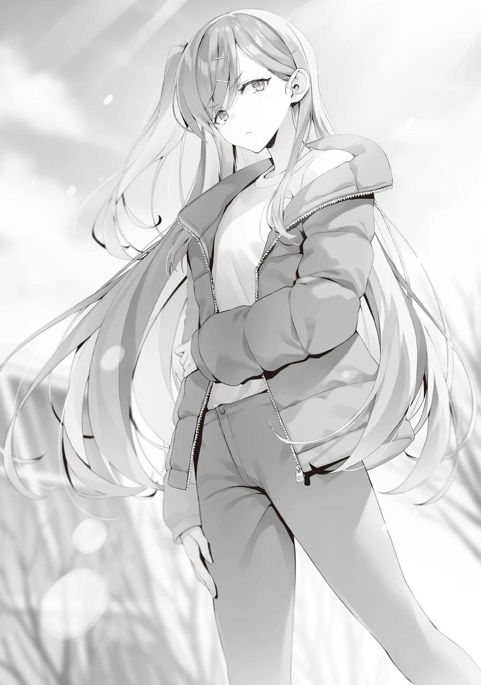
―¿Viniste hasta aquí sólo para advertirnos sobre eso?
―Iré al grano ahora. Hay algo más que quiero confirmar contigo.
Sin siquiera ofrecer un saludo de Año Nuevo, Kamuro cerró aún más la distancia.
―Es una conversación un poco intrusiva, ¿te parece bien?
Por si acaso, preguntó si estaba bien continuar en presencia de Hiyori a través del contacto visual.
A Hiyori no pareció importarle, así que la dejé continuar con la conversación.
―No pasa nada. Si tienes algo que decir, dilo.
―Bien, entonces preguntaré sin contenerme. ¿Cuál es tu intención con tus últimas acciones?
―¿Acciones? ¿De qué estás hablando?
―No te hagas el tonto. Soy consciente de que últimamente has estado husmeando en la Clase A.
―¿Yo, husmeando en la Clase A?
No lo recordaba. ¿Husmeando en la clase A?
Sinceramente me sentía desconcertado, pero me vino a la mente una interacción que podía interpretarse así.
―¿Podría ser sobre Morishita?
―Oh, ¿así que lo recuerdas? Alguien los vio a ti y a Morishita en plena conversación.
En ese caso, podría haber sido el momento en que me llamó.
No sería sorprendente que alguien lo hubiera presenciado desde lejos.
―¿Morishita-san?
Sin reconocer el nombre, Hiyori murmuró con curiosidad a mi lado.
Puede que ni siquiera se diera cuenta de que Morishita estaba en el mismo año escolar.
―¿No lo sabías? Hay una alumna llamada Morishita Ai en la clase A.
―Creo que ya había oído ese nombre, pero nunca he hablado con ella.
―No suele hablar con gente de fuera de su clase. Sospechosa, ¿verdad?
― ¿De verdad? No me había fijado...
Dijo que habló con Sudou y Koenji, entre otros.
Aunque su uso de mi nombre completo sin honoríficos me molestó un poco, no parecía tímida.
―¿No intentabas sondear a la clase A?
―No era mi intención. Eres libre de creerme o no.
Sin tratar de ocultarlo, Kamuro declaró rotundamente que no me creía fácilmente.
―Nunca pensé que Kamuro sería del tipo que actúa en interés de la Clase A.
―Si no fuera por ti, probablemente no me importaría tanto.
―¿En serio?
―Eres el único que puede influir en Sakayanagi.
No podría haber imaginado tal afirmación cuando conocí a Kamuro. Siempre pensé que odiaba a Sakayanagi.
Había descubierto sus robos y, usándolo como palanca, convirtió a Kamuro en su peón.
Al principio, debería haber estado irritada con el enfoque de Sakayanagi.
Había un vacío en la imagen que tenía de ella.
―Comer de la misma olla durante un año cambia las cosas, ¿eh?
―No hagas suposiciones. Sigue sin agradarme Sakayanagi, pero al menos tengo que pensar en la clase. Si su existencia tiene un efecto positivo, lo dejaré estar, pero si no, tendré que tomar medidas.
Era justo decir que había desarrollado cierto grado de camaradería.
―Hablando de eso, parece que sabes bastante, Shiina.
―¿Qué quieres decir?
―Escuchaste mi conversación con Ayanokouji sin cambiar tu expresión,
¿verdad?
―¿A qué viene eso? Lo siento, no estaba escuchando demasiado en serio.
―...¿Eh?
―Es una conversación entre tú y Ayanokouji-kun, así que sólo estaba distrayéndome mientras miraba el paisaje. ¿Hablaron de algo en especial?
Como Hiyori ladeó la cabeza con curiosidad, Kamuro suspiró exasperada.
―La verdad es que no. No es nada.
Debió de juzgar que era una reacción excesiva y que estaba pensando más de la cuenta.
Quizá había querido llevar la conversación en esa dirección a propósito para sondear la respuesta de Shiina, pero resultó que su suposición era errónea.
Hiyori, que estaba sentada a su lado, debería haber oído bien la conversación y comprendido la situación.
Sin embargo, era una persona capaz de mostrarse natural sin que la otra persona se diera cuenta.
―Sé que no eres normal.
―Es una forma dura de decirlo.
―Es la verdad, ¿no? Si no, no habrías hecho que esa chica, Sakura, abandonara la escuela sin pensártelo dos veces.
Parecía que también se refería al examen especial votación unánime que hicimos. Kamuro tenía información que sólo las personas de la clase debían saber.
―Hoy, voy a preguntarte...
Cuando empezó a decir eso, la mirada de Kamuro cambió por un momento.
―Oh, mira. Que pareja tan inusual~
Justo cuando iba a comenzar su insistente interrogatorio, Hashimoto apareció con actitud despreocupada, junto a Kitou, que se alineó a su lado.
No pasé por alto el repentino cambio de expresión de Kamuro.
Era como la cara que pondrías cuando te topas con alguien que no te cae bien.
Sin embargo, si iba a interrogarme continuamente en un lugar tan público, debería haber tenido en cuenta la posibilidad de cruzarse con Hashimoto.
En ese caso, podría haber otro significado tras el momentáneo cambio de expresión, pero más que eso, mis ojos se sintieron atraídos por el llamativo atuendo de Kitou, que iba vestido de etiqueta.
Como declaró que aspiraba a ser diseñador de moda, su sentido del estilo era diferente al del público en general.
No sabría decir si eso era algo bueno o malo, ya que no confiaba en mi propio sentido de la moda.
―Cuando vi a Ayanokouji rodeado de mujeres hermosas, las llamas de los celos se encendieron.
―¿Me estás tomando el pelo?
Kamuro, claramente enfadada, dio un paso al frente para enfrentarse a Hashimoto.
―Tanto Shiina-chan como Kamuro-chan, ¿eh? Ayanokouji tiene un ojo bastante perspicaz. ¿Verdad, Kitou?
Aunque le preguntó a Kitou si estaba de acuerdo, Kitou no mostró ninguna reacción.
―Nosotros dos chicos estábamos a punto de salir solos, pero ¿les importaría si nos unimos a ustedes?
―¿A quién le importaría? Yo me voy a casa.
Kamuro, enfurecida, intentó abandonar la escena, pero fue detenida por Hashimoto mientras la agarraba del brazo y le susurraba algo al oído.
Ella lo apartó de inmediato para crear cierta distancia entre ellos, pero no movió los pies.
―No es como si tuvieran una cita, ¿verdad? Ayanokouji tiene novia.
Asentí, pensando que no se podía evitar. La conversación se desarrollaría inevitablemente de una manera similar a la de Kamuro.
―Entonces no hay problema en que nos unamos y hagamos un grupo de cinco, ¿verdad?
―No tengo ninguna razón en particular para oponerme si a Hiyori le parece bien.
―Suena divertido. Apenas he hablado con Kamuro-san y los demás.
Sin mostrar ningún signo de reticencia, Hiyori contestó.
No era de las que iniciaban conversaciones de forma activa, pero pensaba que no estaba mal divertirse con un grupo tan grande.
No era especialmente amiga íntima de Hashimoto y los demás, pero no estaría mal estrechar lazos con estudiantes tan diversos.
―Ya que no tenemos planes concretos, ¿deberíamos dejárselo a Hashimoto?
―Si me lo dejan a mí, puedo decidir.
Hashimoto aceptó de buena gana, quizá acostumbrado a liderar un grupo.
PARTE 3
Últimamente, había estado interactuando cada vez más con estudiantes de otras clases, como Ryuuen, Katsuragi, Ichinose y Shiranami.
Hoy, incluso estaba pasando tiempo con estudiantes de la Clase A, como Kamuro.
Y no eran simples estudiantes; eran cercanos a Sakayanagi y ocupaban puestos de tipo ejecutivo.
―Buenos días, Hashimoto-senpai, Kamuro-senpai, Kitou-senpai.
―Buenos días.
―¡Ah, gracias!
Al acercarnos al centro comercial Keyaki, había muchos estudiantes de primer año saludándonos.
―Son ustedes muy populares.
―No es inusual para nosotros los estudiantes de la Clase A.
Mantenían estrechos lazos con sus kouhais de primer año, y se conocían por sus nombres y caras.
―No tengo esa impresión de Sakayanagi.
―La princesa es especial. Los kouhais no pueden saludarla casualmente.
Ella es como una flor en un pico alto.
Así que por eso siempre recibía miradas envidiosas de los kouhais.
―Entonces, ¿hacia dónde nos dirigimos?
―¿Hmm? Veamos. ¿Quieres evitar los lugares llamativos, Ayanokouji? ¿O
no?
―No me gusta destacar innecesariamente.
―Cierto. Así que el karaoke sería la opción típica, pero-Mientras Hashimoto comprobaba casualmente mi expresión, Kamuro le lanzó una mirada penetrante.
―Rechazado.
―Ah, imagínate.
Con esa única palabra, Hashimoto renunció al karaoke y empezó a pensar en otras opciones.
―Kamuro-san, ¿no te gusta el karaoke?
―No importa. No me preguntes por qué.
Mientras Hiyori caminaba junto a Kamuro, preguntó por el karaoke, pero no recibió respuesta, solo un cortante desplante. En medio de la situación, Kitou y yo caminábamos en la parte de atrás.
―Desafinada.
―¡Kitou!
Kitou se limitó a murmurar, pero Kamuro captó su voz y se volteó hacia él con expresión furiosa.
―¿Qué, no sabes cantar, eh?
Efectivamente, parecía que a la gente consciente de su sordera tonal tendía a no gustarle el karaoke.
Eso explicaría por qué Kamuro no quería hablar de la razón.
―Silencio.
―...Kamuro también tiene las orejas de un demonio, ¿eh?
Reflexionando sobre ello o no, Kitou añadió otro comentario potencialmente enfadado en una voz aún más baja.
―Eso también lo escuché. Y no vayas a decirle cosas innecesarias a Ayanokouji.
―Está dentro de los límites de no causar problemas.
Si se llevaban bien o no era difícil de determinar, pero parecía que tenían una estrecha relación.
―Vamos, tomémoslo con calma, Kamuro-chan. De todas formas no vamos a ir al karaoke.
Kitou me puso la mano en el hombro y me indicó que aminorara ligeramente el paso. Luego abrió la boca cuando estaba a una distancia a la que no llegarían los agudos oídos de Kamuro.
―Hashimoto y Kamuro están causando problemas.
―Ah, no, en realidad no me importa. Shiina se está riendo alegremente, así que está bien.
―Mientras ese sea el caso.
Mientras Kitou típicamente lucía una expresión aterradora, después de que mostró un lado diferente de sí mismo durante el viaje escolar, no me sorprendió.
Más bien, él también era un estudiante con una forma racional de pensar.
―La forma en que enfrentas las cosas es diferente a cuando estaba con Ryuuen. ¿Es porque todavía no me reconoces como un enemigo?
―Yo no me abalanzo sobre todo el mundo. Incluso si son enemigos, mientras tengan una actitud apropiada, los trataré al menos con una cortesía básica.
Incluso cuando se trata de un enemigo, no siempre adopta una postura dura.
―Eh, Shiina-chan. Hay algo que quería preguntarte, ¿está bien?
―¿Qué pasa?
―Me preguntaba qué tipo de relación tienes con Ayanokouji.
―Como le dije a Kamuro-san, somos buenos amigos.
―Entonces está bien decir que actualmente estás libre, ¿verdad?
―¿Libre?
―Como que no tienes novio.
―¿Estás planeando ligar con ella en esta situación?
―Está bien, ¿no? Los dos estamos solteros. ¿O prefieres ser mi novia, Kamuro-chan?
Como él mostraba una actitud tan desenfadada, ella se acercó a él y le propinó una patada sin reservas en el trasero.
―¡Ay!
Hashimoto dio un respingo y se agarró el trasero, disculpándose con las manos juntas.
―Siento haberte mostrado una tontería tan grande.
Observando su interacción desde atrás, Kitou se disculpó a pesar de no tener nada por lo que disculparse.
―Sinceramente, tenía la impresión de que había más alumnos presumidos en la clase A. Sorprendentemente, no es el caso.
―Hashimoto tiene el don de crear ambiente, para bien o para mal.
Con su habitual cara terrorífica y su ambigua elección de palabras, no pude saber si lo estaba elogiando o no.
PARTE 4
Al dejar el acompañamiento a Hashimoto, aprendí algo nuevo.
Por muy novedosa que fuera la propuesta, no se llevaría a cabo a menos que los participantes estuvieran de acuerdo.
Hashimoto hizo varias sugerencias además del karaoke, pero Kamuro las rechazó todas.
Al final, lo único que Kamuro aceptó fue una charla en un café.
Era el único plan que le quedaba a un grupo que se había quedado sin cosas que hacer.
―¿De verdad te parece bien, Kamuro-chan? Hemos invitado a estos dos raros huéspedes.
―Entonces, ¿por qué no van sin mí? Ya te lo dije varias veces.
Durante los incesantes rechazos de las propuestas de Hashimoto, Kamuro de hecho afirmó numerosas veces que podían ir sin ella.
―De ninguna manera podemos excluirte.
―A mí también me parece bien. Es bastante tranquilizador y me gusta.
―Vaya, Shiina-chan es tan buena chica, y además tan linda.
Hashimoto parecía estar encariñado con Shiina, ya que rápidamente tomó asiento a su lado.
Por otro lado, yo me senté al lado de Kitou.
―Tengo que decir, Ayanokouji, que tú también eres algo especial.
Normalmente, la gente se pone nerviosa al sentarse junto a Kitou.
―Ya sé que es un buen tipo.
¿Es la experiencia del viaje escolar lo que está ayudando? Incluso se siente algo reconfortante.
―Estoy de acuerdo contigo, Ayanokouji-kun. Kitou-kun no parece una mala persona.
―¿Dónde están exactamente tus ojos entonces?
―Es verdad. Estos dos son unos especímenes raros.
―¿De verdad?
Hiyori miró atentamente a Kitou para confirmarlo.
Siguiendo su mirada, Kitou devolvió la mirada a Hiyori, pero no pareció ponerla nerviosa.
De hecho, él no pudo soportar su mirada y apartó la vista.
―Después de todo, es un buen tipo.
―Eso es un malentendido. No soy una buena persona.
Sus ojos se desviaron hacia mí, casi como si quisiera fulminarme con la mirada y asegurarse de que no me hacía una idea equivocada.
―No me malinterpretes ―recalcó con sus propias palabras.
―Bueno, Ayanokouji, ya va siendo hora de que nos lo cuentes.
Hasta ahora, Hashimoto se había comportado despreocupadamente, pero ahora apoyó el codo en la mesa e inclinó el brazo, sosteniendo su taza como si fuera un micrófono.
Kamuro, que había estado encorvándose mientras miraba a otra parte, se enderezó al oír aquellas palabras.
La razón por la que se acercaron a nosotros fue para preguntarme algo.
Eso ya lo suponía, pero ¿qué quería saber?
―...Entonces, ¿piensas dejar a Karuizawa y cambiarte a Shiina? Ya que estás saliendo con Shiina, debe significar algo así, ¿no? ¿Eh?
Como un reportero interrogando a una celebridad, Hashimoto empujó agresivamente su taza más cerca. Kamuro detuvo su brazo.
―Hashimoto.
―¿Eh? ¿Qué pasa, Kamuro-chan? Voy a preguntarle todo ahora mismo-
―Si te vas por las ramas, iré directamente al grano.
Dio a entender que no quería continuar con esta molesta charla.
―Das miedo, Kamuro-chan, pero eso también es lo atractivo de ti... ¡Ay!
De repente, Hashimoto gimió de dolor, con la cara contorsionada por la agonía.
Presa del pánico, se agachó y se sujetó la pierna. Por lo visto, lo patearon por debajo de la mesa.
―¡Eso fue despiadado...!
―Fue un accidente.
Sin ninguna preocupación, Kamuro apartó la mirada y respondió. Después de soportar el dolor durante un rato, Hashimoto sacó el tema.
―Nosotros, o mejor dicho, la Clase A, siente mucha curiosidad por ti.
―¿Por qué?
―¿No lo sabes? Eres bueno estudiando, pareces atlético, y eres bastante popular con Ichinose. Incluso puedes hablar con Ryuuen sin miedo. Además de todo eso, pareces estar en buenos términos con la princesa; eso no es normal.
Sólo durante las vacaciones de invierno, un gran número de personas fueron testigos de mis relaciones con los que me rodeaban.
Teniendo en cuenta el interrogatorio de Hashimoto y la investigación previa, parecía razonable.
―La razón del ascenso a la Clase B y el verdadero líder detrás de los esfuerzos de Horikita: eres tú, ¿verdad?
Kamuro y Kitou cesaron el movimiento, y solo sus miradas se dirigieron hacia mí.
Considerando las acciones y palabras de Kamuro, esta situación no debía ser una coincidencia.
Aunque las acciones de Hashimoto parecían espontáneas, seguramente estaban calculadas de antemano.
Atraídos por las semillas que yo había sembrado, circularon rumores de reconocimiento, especulación e información. Independientemente de si era cierto o no, los rumores circulaban así, revelando nuevos detalles.
Preveía tener que lidiar con esta argumentación, pero pensé que se plantearía en el futuro. Si es así, a partir de ahora, demos agua a las semillas.
―El verdadero líder, ¿eh? ¿Y si eso fuera cierto?
Hashimoto silbó y dijo: "Pensé que te harías el tonto rápidamente o lo negarías, pero ¿lo estás admitiendo?".
―No estoy admitiendo nada. Sólo tengo curiosidad por saber qué harías si fuera cierto.
―Eso es algo que averiguaremos cuando tengamos la confirmación.
―Confirmación, ¿eh? Bueno, entonces quizá sea mejor que admita ser el verdadero líder, como esperabas, Hashimoto.
Mientras yo respondía, Hashimoto bajó su sonrisa altiva y en su lugar esbozó una amarga.
―Es una respuesta difícil.
Probablemente, el interrogatorio de Hashimoto esperaba una de estas reacciones: mostrarse nervioso por dar en el blanco, admitirlo con confianza o negarlo con firmeza.
Seguro que confiaba en que la duda se convirtiera en convicción con cualquiera de estas reacciones.
En ese caso, adoptar una postura ambigua sería más difícil de manejar para Hashimoto.
Ni lo confirmaba ni lo negaba. Más bien, estaba en una posición en la que no me importaba admitirlo si tenía que hacerlo.
Al hacerlo, era difícil determinar cualquier certeza.
De hecho, ahora mismo, me estaba distanciando gradualmente de la sombra de Horikita.
Si decidía yo solo que era el verdadero líder y actuaba según esa creencia, tropezaría en futuras batallas.
―¿Qué opinas, Kamuro-chan?
―Casi seguro, pero no del todo.
―¿Y tú, Kitou?
A diferencia de Kamuro, que respondió inmediatamente, Kitou no dijo nada. A pesar de eso, no me quitó los ojos de encima.
―Puede que tenga que corregirme. Decir que eres el verdadero líder podría ser una exageración, pero no tengo ninguna duda de que eres la fuerza impulsora oculta detrás de llevar a tu clase a la Clase B.
―Depende de ti y de la Clase A hacer un juicio, Hashimoto.
―Shiina-chan, ¿qué piensas de Ayanokouji?
―¿Yo?
―Sí, me gustaría escuchar también tu opinión sobre este asunto.
―Hashimoto-kun, me pregunto qué quieres de esta conversación.
―¿Eh? ¿Qué quieres decir?
―Mantenerme al tanto de la existencia de Ayanokouji-kun-y de lo que planeas hacer en el futuro.
―...Has dado en el clavo.
A partir de ese simple comentario, Hashimoto -que en un principio sólo se preocupaba por las apariencias- pareció reevaluar a Shiina.
―¿Qué quieres decir, Hashimoto?
Hashimoto permaneció en silencio mientras Kamuro preguntaba, sin entender el significado detrás de la pregunta de Shiina.
―Hace un rato, Kamuro y yo estuvimos hablando sobre cómo graduarse de la Clase A. La forma más sólida es acumular 20 millones para uno mismo, pero eso no es fácil. Además, confiar en nuevos sistemas como el boleto de transferencia de clase no es factible, ya que su validez es demasiado corta.
―Eso es cierto.
―Es importante vigilar a las clases que parecen ir ganando. Si las halagas, puede que te elijan a ti. Pero aunque sólo hagas uno o dos favores a una clase,
¿te pagarán 20 millones para respaldarte?
―Por supuesto que no, a menos que tengas un contrato realmente estricto.
―Así es. Entonces, ¿cómo crees que deberíamos aumentar nuestras posibilidades de graduarnos en la Clase A? ¿Cooperar con nuestros compañeros de clase? ¿Derribar a nuestros rivales? No, no es eso.
―Robar rivales fuertes de otras clases, ¿verdad?
Antes de que Hashimoto pudiera responder, Hiyori murmuró la conclusión.
―Vaya, has dado en el blanco.
Ignorando el halago de Hashimoto, las miradas de Kamuro y Kitou se encontraron. Su comportamiento inconsciente demostraba que se habían dado cuenta de lo rápida mentalmente que era Shiina Hiyori.
Había innumerables estudiantes con altas capacidades académicas en la OAA.
Sin embargo, si eran capaces en otras áreas además de la académica sólo podía verse interactuando con ellos.
―Incluso si no puedes acumular 20 millones de puntos tú solo, la voluntad colectiva de la clase puede alcanzar esa meta. Al igual que cómo Ryuuen-kun atrajo a Katsuragi-kun, si la Clase A también recluta personal excelente de otras clases, la Clase A será más fuerte, y también podemos debilitar el poder de nuestros rivales.
Hashimoto, que aplaudió generosamente, se explayó sobre cómo era la respuesta correcta.
―Demuéstranoslo, Ayanokouji. Si nos demuestras tu fuerza en la clase A, usaremos nuestros puntos de clase para reclutarte. Así, estarás en mejor posición que ahora, ¿verdad?
La oferta de Hashimoto era tentadora, pero no podía descartarse por completo como una mentira.
Sin embargo, había varias razones por las que no podía juzgarla como cierta.
―Reclutando talentos, ¿eh? Pero, ¿de verdad crees que Sakayanagi dará la bienvenida a Ayanokouji?
Con eso, Kamuro confirmó que Sakayanagi lo más probable es que no le diera la bienvenida.
―Entiendo que tienes tus propias ideas sobre la princesa, pero creo que hay una oportunidad.
―¿Sobre qué base?
―Podría compartir mis pensamientos, pero primero, veamos qué piensa Ayanokouji.
En lugar de responder a la pregunta de Kamuro, Hashimoto comprobó mis pensamientos.
―Si me quiere meter en la clase A, es más que una gran propuesta.
―A eso me refiero. Si la Clase A te invita, ¿aceptarías? Aunque sólo sea hipotéticamente, escuchémoslo.
―Lo consideraría positivamente si me ofrecieran una invitación a la Clase A.
Cuando mostré indicios de aceptar la invitación, Hashimoto se echó atrás.
―De acuerdo, no hay problema en confirmar tus intenciones. Entonces podremos pasar a la siguiente fase.
Mientras la conversación continuaba, Hashimoto reía más alegremente que nadie en la sala. Sin embargo, una de sus compañeras se levantó, retirando su silla.
―No participaré en tu descontrol, así que hasta luego.
―Ah, oye, Kamuro-chan, ¿te vas?
―No escucharás nada de lo que diga, ¿verdad?
―Si te refieres a la promesa del otro día, lo siento.
Aunque se apresuró a tratar de detenerla, Kamuro salió rápidamente del café.
―Aah... ¿Fue demasiado?
Cuando lo comprobó con el Kitou que observaba en silencio, éste asintió en silencio.
―La volveré a llamar, así que espera un momento.
Rascándose la cabeza, Hashimoto se apresuró a perseguir a Kamuro.
―Todos ustedes son gente interesante. Es muy divertido.
Hiyori, que había estado observando, entrecerró los ojos y sonrió.
―...¿En serio?
replicó Kitou, que no esperaba que se divirtiera.
Después de que Hashimoto trajera de vuelta a una taciturna Kamuro, la atención pasó a centrarse en alguna charla trivial en lugar de volver a mí.
Hiyori no destacó especialmente, más bien participó en la conversación. Y con el apoyo de Hashimoto, el agradable momento continuó.
PARTE 5
Nos separamos de Hashimoto y de los otros dos estudiantes de clase A antes de ir a la librería después del café.
A juzgar por su aspecto apresurado, es posible que Sakayanagi los haya llamado.
De vuelta de la librería, intercambiamos varios pensamientos.
―Realmente fue un día muy divertido.
Hiyori, que caminaba un poco por delante de mí al anochecer, sonrió al recordar lo que había pasado antes.
―No esperaba que Kitou-kun fuera tan hablador.
―¿Tan hablador?
Recordándolo, me pareció que solo murmuró algo cinco o seis veces...
―También aprendí mucho sobre Kamuro-san y Hashimoto-kun.
―Es bueno que hayas quedado satisfecha. Después de todo, no pude hacer mucho.
―Eso no es verdad. Fuiste a la librería conmigo, ¿verdad? Sólo eso fue muy agradable.
―¿Ah, sí? Bueno, si eres feliz, entonces supongo que todo está bien.
Todavía no había mejorado mucho en cuanto a planear las cosas teniendo en cuenta los sentimientos de mi compañera.
Esto era algo que tendría que hacerse a través de experiencias compartidas, independientemente del género.
Antes de darme cuenta, nuestra conversación había menguado y nos habíamos sumido en el silencio.
Los pasos de Hiyori se habían vuelto más lentos que antes, y me pregunté si estaría sumida en sus pensamientos.
Caminábamos por la calle arbolada y estábamos a mitad de camino de la residencia.
―Um... Ayanokouji-kun. Por favor, ¿puedes escuchar sin enfadarte?
Hiyori, que hacía unos instantes sonreía feliz, se mostró ligeramente nerviosa.
―No creo que haya nada por lo que enfadarse, así que escucharé sin alterarme.
―El libro que te regalé el otro día... Lo escribió mi padre.
―¿Tu...? Ya veo. Entonces, ¿el nombre del autor podría ser su verdadero nombre?
―Eso es asombroso. ¿Lo descubriste?
―No sería extraño que me diera cuenta del nombre inusual del autor cuando descubrí que era un pariente.
―Shiina Katsumi. El nombre de mi padre.
―Así que las raíces de la chica ratón de biblioteca vienen de su padre.
Puede que haya vislumbrado los antecedentes que crearon a la chica literaria.
―Hasta ahora, no le había dicho a nadie que mi padre es escritor. No tenía amigos que compartieran la misma afición, pero... no es sólo eso. Quería que lo supieras.
Eso fue lo que me dijo Hiyori.
Aunque no era algo que ocultar, tampoco era algo por lo que tuviera que esforzarse en hablar.
¿Por qué sacaba ese tema ahora?
―¿Qué crees que pasará en las próximas batallas? Por supuesto, sé que es difícil de predecir, pero me gustaría escuchar tu opinión si es posible.
―La batalla de Ryuuen y Sakayanagi tendrá un impacto significativo en su futuro. Asumiendo que los puntos de clase se mantendrán similares hasta el final del año escolar, si Sakayanagi gana, la Clase A tendrá una ventaja significativa.
Sin embargo, si Ryuuen gana, esa ventaja puede desaparecer. Sus movimientos son más notables que los de la clase de Horikita o Ichinose.
Esta especulación podría hacerla cualquiera.
Para expresar una opinión más allá, tenía que pensar en lo que ocurriría en el futuro.
―La mayoría de los estudiantes piensan que la clase de Sakayanagi tiene ventaja.
―Así es. Llevan casi dos años conservando la clase A, y nunca han perdido una cantidad significativa de puntos de clase. Hay algunas personas en nuestra clase que ya están asustadas por los exámenes finales.
Si ellos pierden, la oportunidad de la clase de Ryuuen de graduarse de la Clase A se volvería extremadamente difícil.
―Sin conocer el contenido del examen especial, sólo podemos juzgar basándonos en la fuerza y compatibilidad de los líderes y compañeros de clase, pero creo que Ryuuen tiene muchas posibilidades de ganar.
De hecho, eso era lo que consideraba más idóneo.
No importaba qué camino tomara la batalla entre Horikita e Ichinose, pero si Ryuuen perdía, la clase de Hiyori perdería sus posibilidades de éxito y quedaría fuera de la carrera.
―Eso es cierto.
Como miembro de la clase, Hiyori también debió sentirlo.
La clase de Sakayanagi era fuerte. Por eso la desventaja sería inconmensurable si eran derrotados.
―Siento preguntar algo así.
―No te preocupes. Me alegra saber que también te preocupas por tu clase.
Cuando se lo dije, se sintió un poco avergonzada.
―Puede que nuestras clases sean diferentes y que compitamos, pero graduémonos juntos, ¿de acuerdo?
A diferencia de lo que solía hacer, Hiyori corrió y se puso delante de mí.
Luego, sin dejar de parecer avergonzada, se dio la vuelta y pronunció esos pensamientos.
No estaba claro qué clase se graduaría como Clase A.
Sin embargo, eso no significaba necesariamente que tuviéramos que ser siempre rivales y guardar rencor a otras clases.
Tanto si alguien se graduaba como Clase C o Clase D, querría afrontar la graduación con una sonrisa junto a sus amigos, mejores amigos y parejas.
―Sí, así es.
Cuando respondí con mi aceptación, Hiyori sonrió dulcemente con alegría.
Las vacaciones de invierno llegaban a su fin.
Soplaba un viento frío.
A partir de ahora, sólo hará más frío a medida que se acercara el final del mes.
...Y así, el tercer trimestre estaba a punto de comenzar.
PALABRAS DEL AUTOR
Se ha vuelto una temporada bastante cálida, ¿verdad? Soy Shogo Kinugasa.
Creo que a veces las personas despiertan diversos intereses y aficiones. Hace poco, empecé a cocinar, y para hacer mis platos más deliciosos, he ido ampliando mi repertorio y experimentando incansablemente. Incluso me dejé llevar y me compré mi propio cuchillo personal. Antes no tenía más aficiones que ver el béisbol.
Me impresionó poder seguir adquiriendo una nueva afición a esta edad, pero mientras tanto, se produjo otro cambio en mis aficiones...
Para seguir el ritmo de crecimiento de mi hijo, tuve que comprar bloques y peluches más grandes, lo que inevitablemente me llevó a visitar con más frecuencia las jugueterías. Inesperadamente, me interesé por los trenes Plarail.
No sabía nada de trenes, pero pensé: "¿Eh? En realidad es sorprendentemente divertido sólo moverlos". Eso se convirtió en un motivo para comprar más juguetes, coleccionar vías, crear recorridos originales, hacer circular trenes en paralelo y comprar trenes teledirigidos... También me interesé por los Mini 4x4, los Nerf y los juegos de mesa... No es bueno. Hay demasiadas cosas que me llamaron la atención.
Se suponía que los juguetes los compraba sólo para mi hijo, pero en algún momento empecé a comprarlos para mi propio disfrute.
Mi último favorito es un juguete llamado Bottleman, que lanza tapones de botella.
El recuerdo de que en el pasado me gustaba mucho un juguete llamado Beadaman (¿el predecesor de Bottleman?) resurgió, y empecé a coleccionarlos.
Aunque soy más bien minimalista y no tenía mucho hábito de coleccionar, nunca pensé que llegaría a esto... Pero me pregunto si la razón por la que creo que Beadaman era abrumadoramente más interesante es porque ahora he crecido.
Personalmente, quiero probar los Lego, que admiraba cuando era pequeño, pero no puedo dar el paso definitivo de comprarlos, por miedo a que me enganchen de verdad si lo hago.
¡Que alguien me pare! (¡O que me dé un empujón!) Bueno. Permítanme hablar un poco sobre el estado actual de mi trabajo.
Finalmente, el segundo trimestre y las vacaciones de invierno están terminando, y a partir del próximo volumen, entraremos en el arco del tercer trimestre.
A diferencia del segundo trimestre, que fue un poco largo, espero que el tercero tenga más o menos la misma duración que el arco del tercer trimestre del primer año, o quizá un poco menos.
Bueno, amigos, durante esta época de calor, por favor, tengan cuidado con las insolaciones y cosas así.
Volvamos a vernos cuando empiece a refrescar.
HISTORIAS CORTAS
SHIINA HIYORI
LO QUE QUIERO QUE SEPAS
JUSTO DESPUÉS DE despedirme de Ayanokouji-kun y volver a mi asiento, recordé algo que olvidé con la emoción de nuestro reencuentro. Extendí la mano hacia la bolsa que estaba colocada cerca de mis pies.
Saqué el objeto que pretendía regalar y, con una leve reverencia a la bibliotecaria, me apresuré a salir al pasillo.
Al oír el sonido de la puerta abriéndose y cerrándose, quise correr hacia Ayanokouji-kun y llamarlo, pero me quedé ligeramente sin aliento y no pude hablar de inmediato.
―Toma-
Sacando de algún modo la voz, le ofrecí el libro que había estado sujetando con fuerza.
Pero inmediatamente después pensé que quizá no había entendido de qué se trataba, así que lo saqué de la bolsa.
―Este es uno de mis libros favoritos. ¿Te importaría leerlo si tienes ocasión?
―¿Es, por casualidad, el autor que mencionaste antes?
Había tenido la intención de mantener en secreto el título del libro mientras se lo entregaba, pero Ayanokouji-kun lo adivinó enseguida.
―Supongo que es fácil de averiguar, ¿eh?
El asintiendo Ayanokouji-kun podría haber estado confundido acerca de mí, quien de repente trató de darle el libro.
―En el caso de que ya lo hubieras leído, no pensé que podría habértelo regalado tan fácilmente.
Ésa fue la razón. Continué explicando por qué tomé esas medidas.
―Si sólo quieres leerlo, puedes tomarlo prestado de la biblioteca. Pero si es una obra que me gusta mucho o a la que tengo especial cariño, quiero tenerla siempre disponible.
―Así que te esforzaste en comprarlo con tu propio dinero.
―Además... este libro no está disponible en la biblioteca.
Un libro completamente privado escrito por un miembro de la familia.
No podía pedirle a la escuela que lo pusiera en la estantería.
―¿Segura que puedo tenerlo?
―Sí. De hecho, es la tercera vez que compro este libro. La primera vez fue cuando estaba en secundaria, y todavía lo tengo en mi habitación. La segunda fue cuando entré en esta escuela.
Para mi sorpresa, respondí de una manera tan rápida y casi avergonzada.
―Creo que entiendo bastante bien tus gustos, así que confío en que estarás contento con él.
Ayanokouji-kun terminó de aceptar el libro y salió de la biblioteca.
―Me siento mal por haberte hecho pasar por esta molestia.
Estaba ansioso por saber si lo aceptaría, pero cuando Ayanokouji-kun me lo quitó, me sentí aliviada. Sin embargo, sus palabras que golpearon el núcleo de mi corazón hicieron que mi pulso se acelerara.
―¿Acaso llevabas esto contigo hasta que me encontraste?
Lo había llevado conmigo todos los días hasta que me lo encontré. Su sospecha, que dio en el clavo, no hizo más que aumentar mi nerviosismo.
―Habría venido enseguida si me lo hubieras dicho.
―Bueno, sí. Pero... sólo han pasado unos días, así que no es para tanto.
Intentando por todos los medios mantener la calma, le expliqué y le pedí que no se preocupara.
A medida que nuestra conversación continuaba, sentía que no podía soportar mostrarle más de mi lado patético por más tiempo.
―Bueno, entonces... hasta luego.
Más que mis emociones persistentes, ganaron mis sentimientos de no querer mostrar mi patético ser, y volví a la biblioteca como si me hubiera escapado.
Cuando cerré la puerta y respiré hondo, la bibliotecaria me miró mientras sonreía.
―Así es la juventud, ¿eh?
Si había oído mi conversación con Ayanokouji-kun o no, no podía decirlo.
De cualquier manera, no había duda de que me vieron en una situación muy embarazosa.
―No es así ―negué suavemente antes de volver a mi asiento.
El silencio familiar de la biblioteca me envolvió una vez más.
Aquel día, sin embargo, me sentí extrañamente sola.
KAMURO MASUMI
ES PORQUE LO ODIO
Ese tipo, Hashimoto, me pidió que estableciera contacto con Ayanokouji.
Esta mañana, mientras estaba de pie, lista para salir en cualquier momento, recibí una llamada.
Me informaron de que Ayanokouji fue visto saliendo de los dormitorios.
La mayoría de los objetivos de vigilancia eran los que Sakayanagi especificaba, pero este Ayanokouji era alguien a quien parte de la clase había estado vigilando de forma independiente.
No era nada especial.
La clase A siempre estaba vigilando a muchos estudiantes.
Quién estaba relacionado con quién, quién se llevaba bien y quién no. Incluso se recopilaba información inútil.
Por eso no había demasiados estudiantes que prestaran atención a la vigilancia de Ayanokouji.
Desde la perspectiva de alguien ajeno, él no era más que uno de los muchos objetivos de la vigilancia.
Por lo tanto, aunque deseara esta información, no debería levantar ninguna sospecha.
Pronto terminarían las vacaciones de invierno, y se acercaba el límite para considerarlo una molestia y dejarlo para más tarde.
Además, durante los últimos días, Karuizawa se había aferrado a Ayanokouji, y yo no había podido establecer contacto continuamente.
Salí rápidamente del dormitorio y me dirigí al lugar indicado por el último avistamiento.
Y efectivamente, encontré fácilmente la espalda de la persona que buscaba.
―Tsk.
Chasqueé la lengua sin querer. Pensé que era sólo Ayanokouji, pero por lo visto estaba equivocada.
Si me daba la vuelta ahora y perdía esta oportunidad, la próxima vez podría ocurrir ya en el tercer trimestre.
Si Hashimoto volvía a llamarme por mi primer nombre porque evitaba el contacto, se me pondría la piel de gallina...
―...Si no es Karuizawa, me las arreglaré... de algún modo.
No tuve más remedio que aprovechar esta oportunidad para abrirme paso.
―Parece que estás siendo bastante ostentoso a principios del nuevo año.
Con descarado disgusto, llamé a Ayanokouji y me acerqué a él.
―Acabo de verte en una cita con Karuizawa a finales de año. ¿Empezaste a salir con otra chica en cuanto empezó el nuevo año?
Era una razón discreta para hablar, ya que apenas interactuábamos.
Bueno, aunque no tuviera nada que hacer con Ayanokouji, despreciaba a los tipos que engañaban a varias mujeres.
―Son tipos de chicas totalmente diferentes. ¿En qué estás pensando?
No pude evitar sentirme irritada al ver a un hombre que no podía valorar a alguien.
Ya que realmente lo despreciaba, no había forma de que Ayanokouji pudiera percibir mi verdadera intención para hacer contacto.
Hoy, mi objetivo era simplemente desahogar mis emociones investigando a este tipo.
Tenía que calibrar si sería una amenaza para la Clase A o no.
Al hacerlo, cumpliría mi promesa con Hashimoto y me libraría de su uso innecesario de mi primer nombre.
Realmente no tengo que hacer esto... ¿Por qué me pongo tan nerviosa?
Mientras albergaba tan fríos sentimientos, primero dirigí mi mirada con la intención de enviar a Shiina de vuelta.
YAMAMURA MIKI
EL QUE PUEDE ENCONTRARME
RYUUEN-KUN, KATSURAGI-KUN Y Ayanokouji-kun daban vueltas alrededor del centro comercial Keyaki.
Los divisé a los tres y los seguí en silencio.
Si conseguía reunir alguna información útil, se la comunicaría a Sakayanagi-san.
Ya que ella se encargaría de examinar el contenido, todo lo que yo necesitaba hacer era recordarlo.
Escondida entre las sombras de una máquina expendedora, contuve la respiración y escuché atentamente.
―Voy a pasarme ahora por el centro comercial Keyaki. ¿Qué vas a hacer?
Si quieres que nos tomemos de la mano y tengamos una cita, podría considerarlo.
Era el dominante y típico Ryuuen-kun.
La conversación que habían tenido hasta ahora era mucho más intensa e intrigante de lo que había imaginado.
El contenido de la conversación de los tres mencionaba algunas cosas, como notar las bases para el examen especial del tercer trimestre, pero lo que más me sorprendió fue la presencia de Ayanokouji-kun y la alta opinión que los otros dos tenían de él.
Había sido una figura esquiva desde el viaje escolar, y yo me preguntaba quién era en realidad.
Por desgracia, no sabía de qué hablaron nada más encontrarse, pero ¿habrían tocado quizá ese tema?
―Bueno entonces, me voy.
―Nuestro encuentro será en tercer año. No lo olvides.
Incluso mientras se despedían, Ryuuen-kun desconfiaba de Ayanokouji-kun y lo reconocía como un oponente formidable.
Aunque quería reunir más información, evalué que este era el momento adecuado para retirarme.
Tener una presencia débil era mi habilidad única, pero incluso eso tenía sus límites.
Sin embargo, no me preocupaba. Deslicé mi cuerpo hasta una posición en la que pudiera estar tranquila.
Sólo me quedaba borrar mi presencia hasta el límite.
Así había sido siempre antes de venir a esta escuela.
Nadie podía encontrarme. Nadie me encontraría.
Verás, con sólo quedarme callada, esta vez tampoco me encontrará nadie-.
―¿Qué estás haciendo en un lugar como ese?
Muy cerca sobre mi cabeza, estaba Ayanokouji-kun, mirándome con esos ojos siempre inmutables e incoloros.
―¿Eh?
¿Con quién está hablando?
¿A mí? Es imposible.
Es imposible que alguien me vea.
Pero, me di cuenta inmediatamente después.
Esta persona era... alguien que podía encontrarme.
SAKAYANAGI ARISU
CONTROL EMOCIONAL
En el paisaje nevado me di cuenta de que los humanos son criaturas realmente interesantes.
―Nunca hubiera imaginado verbalizarlo.
Dejarse llevar por emociones incontrolables. La sorpresa de descubrir esa parte de mí misma.
Enamorarme del sexo opuesto.
En mis experiencias vitales hasta ahora, pensaba que eso era algo que vendría mucho más adelante.
La razón era sencilla. Comprendí que no podía sentirme atraída por una existencia inferior a mí.
En resumen, no podía sentir atracción por el 99% del mundo.
Al mismo tiempo, me puse a pensar.
¿Admití entonces que Ayanokouji-kun era superior a mí?
―No-es lo que me gustaría decir, pero debo reconocer sus habilidades.
Sin embargo, esto no significaba que hubiera admitido la derrota por los mismos motivos.
Él era diferente. Ni un genio ni una persona ordinaria. Era una tercera existencia que no se podía clasificar en sólo dos categorías.
Por ahora, decidí llegar a esa conclusión.
La razón de mi conclusión era simple: porque me di cuenta de que estaba enamorada de él.
No albergaba cariño por el 99% de los humanos.
Sin embargo, no creo que albergara cariño ni siquiera por el 1% que eran superiores a mí.
Aunque todavía no había conocido a nadie así, hacia ese 1% de genios, probablemente albergaría celos, un sentimiento de rivalidad hacia ellos, más que sentimientos románticos.
Como era fácil imaginarme así, esta emoción tenía sentido.
Como siempre, él preguntó con su insondable y oscura mirada.
―¿Puedes convertir esa emoción de una debilidad a una fortaleza?
No te preocupes. Ahora mismo, más que nada, deseo apasionadamente luchar contra ti.
Agradeciendo haberte encontrado como adversario, ahora afrontaré las batallas que me esperan sin vacilar.
No derrotaré ni a un genio ni a una persona ordinaria, sino a una tercera existencia creada.
Incluso en mi larga vida venidera, rara vez me encontraré con una batalla tan interesante como esta.
Derrotaré a Ayanokouji-kun y probaré mi propio talento.
Y además de eso, quiero saber cómo me sentiré con Ayanokouji-kun.
¿Perderé todo mi interés, o me daré cuenta de que este sentimiento es genuino?
¿O albergaré un sentimiento nuevo, completamente diferente, que todavía no puedo comprender?
Es divertido estar a merced de emociones incontrolables.
Seguramente Ayanokouji-kun también se está entregando a los mismos sentimientos a través de su actual pseudo-romance.
En la nevada y oscura noche, mientras sostenía contra mi pecho el calor que brotaba dentro de mí, sonreí para mis adentros.
VOLUMEN 9.75
LA PRIMERA DISONANCIA DEL NUEVO AÑO
3 DE ENERO, pocos días después de Año Nuevo.
Tras dos días de descanso, el centro comercial Keyaki estaba listo para reanudar su actividad de Año Nuevo.
Poco después de las 10 de la mañana, me dirigía solo al supermercado.
Durante las vacaciones de Año Nuevo, pasé mucho tiempo en mi habitación con Kei, consumiendo más comida y bebida de lo que habíamos previsto. Por lo tanto, era necesario reponer urgentemente el refrigerador.
Al entrar en el centro comercial ya abierto y acercarme al supermercado, me topé con una compañera de clase que iba en la misma dirección.
—Buenos días, Ayanokouji-kun. Feliz año nuevo.
Kushida, que siempre lucía una sonrisa angelical, me saludó.
—Feliz año nuevo. ¿Tú también vas a hacer las compras, Kushida?
—Sí. ¿Tú también Ayanokouji-kun? Qué casualidad... Oh.
Kushida, que miraba un poco a lo lejos, dejó escapar una voz como si se hubiera dado cuenta de algo.
Seguí su mirada y divisé a Horikita, que parecía dirigirse también hacia el supermercado.
—Feliz Año Nuevo.
Al decir eso, intentó pasar junto a nosotros con un leve saludo.
—Feliz Año Nuevo. ¿Tú también vas de compras, Horikita-san?
Aunque podría haberse limitado a ignorar a la gente que le caía mal, Kushida la llamó.
—¿Y eso qué importa?
—No importa especialmente, pero pensé que podría ser divertido ir de compras con dos compañeros de clase que casualmente están juntos.
Efectivamente, existía la posibilidad de que ir de compras con alguien pudiera ser divertido.
Sin embargo, las posibilidades de divertirme con Horikita y Kushida juntos parecían casi nulas. Haciendo caso omiso de mis preocupaciones, Horikita se detuvo y consideró su proposición cuando podría haberse negado sin más.
—Bueno, podría ser una buena idea.
Como compañera de clase, no aceptó la invitación sin más.
Si tuviera que elegir una frase adecuada para la situación, sería como si
"aceptara el reto".
Llevando cestas, entré en el supermercado formando parte de un inesperado trío.
Era una visión bastante surrealista, pero quizá sólo los compañeros que conocían las circunstancias lo sentirían así.
—Tienes una personalidad bastante sarcástica, ¿verdad, Horikita-san?
—¿No es eso más propio de ti? Te tomaste la molestia de invitarme.
—¿Ah, sí? Sólo tengo curiosidad por ver una nueva faceta de los dos.
—Ser capaz de hablar tan despreocupadamente de la verdad es un talento.
—Gracias.
Aunque no sonaba como una mentira, sabía que lo era.
Cuando interactué con Kushida recientemente, tuve esta extraña experiencia que fue un poco divertida.
—Por cierto, ¿tú cocinas, Kushida?
—Puedo arreglármelas hasta cierto punto. Nunca se sabe cuándo pueden ser útiles nuestras habilidades culinarias. ¿No es incuestionable que las chicas que saben cocinar son más atractivas en la sociedad?
Aunque no se aplicara el pensamiento moderno, tener múltiples habilidades competentes es algo positivo.
Mientras charlaban ociosamente sobre diversos temas inofensivos, cada una fue colocando en sus cestas los ingredientes y condimentos que necesitaba o de los que carecía.
Desde la sección de verduras a la de carne, pescado y, por último, el rincón de los alimentos procesados, en ese momento sus compras estaban llegando a su fin.
En el rincón de los alimentos precocinados había una estudiante conocida.
Miraba perezosamente los estantes mientras fruncía el ceño al teléfono que llevaba en la mano derecha.
—¿Estará buscando algo?
dijo Kushida, refiriéndose a la estudiante que parecía estar investigando algo.
Sin embargo, Horikita descartó la pregunta después de pensar un poco.
—Parece alterada. Quizá esté comprobando su saldo de puntos privados mientras compra.
¿O quizás está comparando precios para ver si es más barato comprar online?
Traje a colación el sitio de compras en línea que conocí hace poco.
Sobre todo al comprar grandes cantidades de lo mismo, descubrí que comprar al por mayor por Internet era más barato.
—Ella no es de las que se molestan en eso. Sabe que tiene que ahorrar, pero no lo administra bien.
—Vaya, sabes mucho. No creo que nos haya dicho nada de eso.
—Lo entenderías si la observaras.
Mientras los tres seguíamos observándola, la alumna empezó a moverse, preparándose para marcharse.
Y se dio cuenta de que la estábamos observando.
—Así que tú también estás en el supermercado, Ibuki-san. Feliz Año Nuevo.
—Ugh...
Con una expresión de evidente asco, Ibuki no sólo apartó la mirada de nosotros, sino que ocultó el contenido de la cesta que sostenía tras su cuerpo.
Cuando me acerqué, retrocedió un poco, pero mantuvo su postura protectora sobre su cesta.
—¿Ni siquiera sabes felicitar el Año Nuevo como es debido?
—No lo sé. Además, tampoco es que quisiera verte en Año Nuevo.
—Esa no es la cuestión, pero bueno...
Probablemente no le importaba un saludo cordial de todos modos.
Más importante aún, al parecer algo llamó la atención de Horikita.
—¿Compraste algo que no quieres que vean?
—No, no importa.
Intentó esquivar la pregunta, pero mientras Ibuki estaba centrada en Horikita, pasó por alto a otra persona.
Kushida, naturalmente, había rodeado detrás de Ibuki y se asomó a su cesta.
—Ramen instantáneo, yakisoba instantáneo, pan dulce y alimentos procesados. Bonitas compras has hecho aquí.
—¡Oye, deja de mirar ahí!
Al darse cuenta de Kushida, Ibuki giró su cesta con fuerza.
Tal vez anticipando la represalia, Kushida ya había tomado distancia. El golpe de Ibuki no dio en el blanco.
—Es peligroso mover la cesta dentro de la tienda, ¿sabes?
—Pues entonces deja de husmear.
A principios de año, las tres chicas formaban un grupo muy animado.
—No me sorprende teniendo en cuenta que no eres de las que cocinan, pero tu dieta es escandalosamente poco saludable hasta el punto de ser preocupante.
—¿Eh? No te fijes en mi dieta. Todo está bien porque tomo suplementos.
—Sin embargo, creo que hay un problema...
Exasperada, Horikita se acercó a Ibuki y miró con fuerza dentro de su cesta de la compra.
Agarró firmemente el borde de la cesta para que no se golpeara.
—¡Kuh! ¿Qué haces?
—Bueno... vamos a poner esto, y esto, y esto, y esto, y esto en su sitio.
Diciendo eso, Horikita, que por suerte estaba en el rincón de la comida preparada, empezó a devolver a las estanterías los artículos que estaban en la cesta de Ibuki.
—¡Eh, qué haces sin mi permiso!
—Has estado viviendo con una dieta similar durante estas vacaciones de invierno, ¿verdad? Si sigues así, no crecerás nada, ¿sabes?
—Ah, ya veo. Por eso Ibuki-san es...
Dijo Kushida, lanzando una mirada a la zona pectoral de Ibuki y sonriendo.
—¡No digas lo que te dé la gana!
Ibuki trató de arremeter.
Su vozarrón y su comportamiento violento hacían parecer que se había olvidado de que estaba en un supermercado.
No era difícil entender por qué se enfadaría por la crueldad de las acciones de Horikita y Kushida.
Sin embargo, Horikita continuó con semblante serio.
—Quiero arreglar las cosas contigo en un combate de artes marciales algún día. Sin embargo, si sólo te alimentas de forma desequilibrada, perderás los músculos necesarios para el deporte. Si crees que puedes vencerme con esa forma de pensar, eres una ingenua.
—Uh...
Al parecer, esas palabras tocaron un punto sensible para Ibuki.
—Pero, no se puede evitar. Yo no cocino. ¿Quieres decir que debería comprar una caja bento?
—Los bentos de supermercado suelen tener demasiados carbohidratos y grasas. No se adaptarían a tu tipo de cuerpo.
—Entonces, ¿qué se supone que debo hacer?
—Estás libre después de esto, ¿verdad? Ven a mi habitación. Te dejaré almorzar. También te enseñaré a hacer algunos platos sencillos.
—¡Quién iría a tu habitación! Además, ¡no tengo ganas de comer!
—Pero te ahorrarías dinero, ¿no?
—Eh...
Ibuki, que estaba a punto de negarse, se puso rígida.
—Si quieres ahorrarte tus puntos privados, no es mala propuesta, ¿no crees?
—...Ya veo.
Al parecer, su presupuesto era más ajustado de lo imaginado.
—Entonces tal vez debería hacer que me prepares el almuerzo también, Horikita-san.
—¿Planeas venir también?
—¿No suena interesante la combinación entre tú e Ibuki-san?
—Tienes un pensamiento tan retorcido. Muy bien, ¿y tú?
—Eh, ¿yo? ¿No estoy aquí por casualidad?
—Bueno, sí. Pero de todas formas no hay mucha diferencia si hago comida para tres o cuatro.
Miré la cesta que tenía en la mano y pensé.
Si Horikita cocinara para mí, sin duda me ahorraría algo en gastos de comida.
Además, los ingredientes que comprara podrían servirme para futuras comidas.
—Aceptaré tu propuesta entonces.
Ver a otra persona cocinar de cerca tampoco estaría mal.
Incluso podría ser una buena experiencia para mejorar mis propias habilidades culinarias.
Y así, los cuatro decidimos reunirnos en la habitación de Horikita ese día.
Ni que decir tiene que resultó ser una comida extremadamente difícil y tumultuosa, llena de agotamiento.
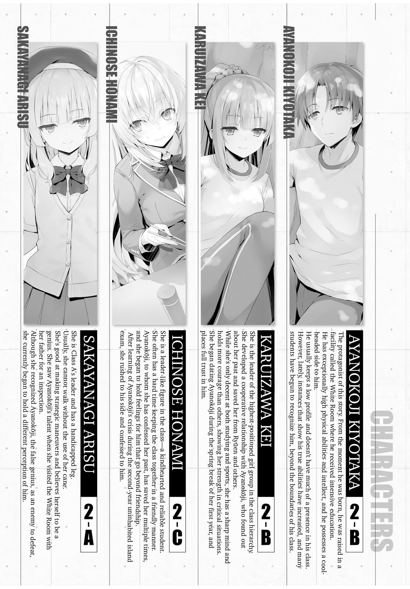
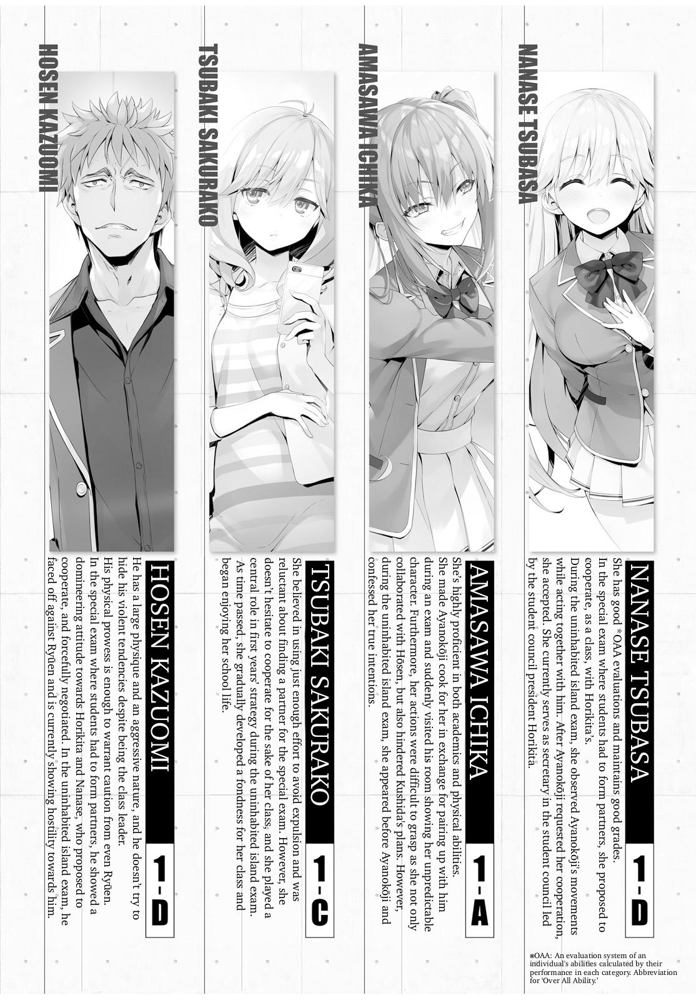
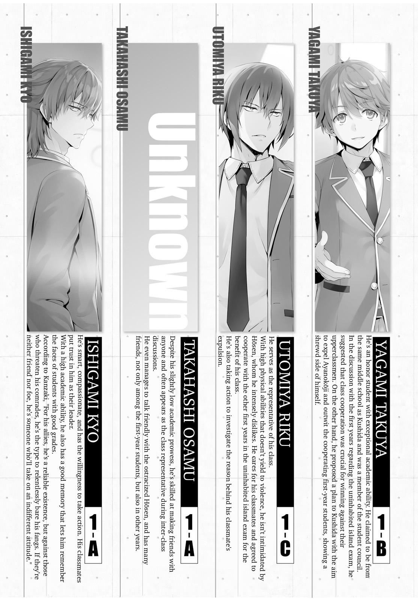


VISÍTANOS EN NUESTROS
DIFERENTES SITIOS
http://gladheimtranslations.blogspot.mx/
https://twitter.com/GladheimT
https://mastodon.social/@GladheimT
Si alguien desea hacer una donación
https://ko-fi.com/gladheimtranslation
https://www.buymeacoffee.com/gladheimtls
https://patreon.com/GladheimT